Chickxel 사용 가이드
처음부터 끝까지 읽지 않아도 됩니다. 처음 쓰는 흐름을 따라가거나 지금 하려는 작업을 골라 필요한 쪽만 확인하세요.
처음 쓰는 흐름
하려는 작업으로 찾기
기능 이름을 알고 있다면 왼쪽 검색에 입력하세요. 목차는 자주 하는 작업과 기능별 설명을 나눠 놓았습니다.
공통 기능
앱 어디서나 똑같이 쓰는 기본 조작입니다. 화면의 각 부분은 화면 구성 장에 자세히 있습니다.
숫자 칸 바꾸는 법
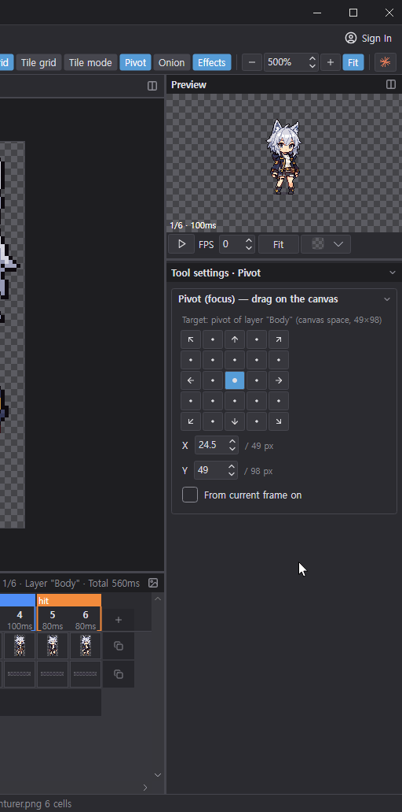
크기·좌표·FPS·배율·효과 세기까지, 앱의 모든 숫자 칸은 같은 세 가지 방식을 지원합니다. 상황에 맞는 방법으로 바로 값을 바꾸세요.
- 클릭 후 직접 입력칸을 누르고 숫자를 입력합니다.
256*2처럼 더하기·빼기·곱하기·나누기 식을 적어도 됩니다. Enter를 누르거나 다른 곳을 누르면 값이 확정됩니다. - 위/아래 단추칸 오른쪽 끝의 위/아래 단추를 누르면 한 칸씩(Ctrl은 10칸씩) 바뀝니다. 단추 위에서 위아래로 끌면 3픽셀마다 한 칸씩 바뀌고(위로 끌면 커짐, Shift는 10배 느리게, Ctrl은 10칸씩), 화면 위/아래 끝에 닿으면 반대편으로 넘어가 계속 끌 수 있습니다. 입력 중에는 휠 한 칸에 한 칸씩 바뀝니다.
- 우클릭 후 목록에서 고르기칸을 우클릭하면 자주 쓰는 값 목록이 뜨고, 지금 값은 점으로 표시됩니다. 목록의 최근: …은 마지막으로 바꾸기 전 값이고 같은 종류의 칸끼리 함께 씁니다. 그 값을 고르면 두 값 사이를 오갈 수 있고, 지금 값과 같으면 나오지 않습니다.
자세한 동작(식 계산 규칙, 위/아래 단추)은 숫자 칸과 메뉴 다루기에 있습니다.
AI로 그리기
내 컴퓨터의 Claude Code·Codex가 내 계정으로 Chickxel을 직접 다룹니다(API 키 없음). "32×32 나무 통 그려 줘"처럼 말하면 열린 그림에 바로 그려 줍니다.
- AI 채팅 열기Ctrl+L 또는 위 막대의 AI 단추. Claude·Codex 탭 중 하나를 고르고 처음 한 번 로그인합니다.
- 그리고 싶은 것을 말하기크기·소재·색을 함께 적으면 좋습니다. 그리는 동안 진행 상황이 보입니다.
- 마음에 안 들면 되돌리기답 하나가 실행취소 한 단계입니다. Ctrl+Z나 답 아래 "이 단계 되돌리기"로 되돌립니다.
직접 써 본 결과 Codex의 Astra 모델(gpt-6-astra)이 가장 잘 그렸습니다. 자세한 사용법은 AI 채팅 장에 있습니다.
픽셀로 정리
AI로 만든 그림이나 일반 이미지를 깨끗한 픽셀 아트로 바꿉니다. 설정과 점수의 자세한 설명은 AI 그림 픽셀로 정리 장에 있습니다.
크게 보기로 칸 단위 비교
원본 위에 실제로 쓴 칸 격자를 겹쳐 보고, 결과와 원본을 같은 크기로 나란히 놓고 한 칸씩 확인합니다.
- 격자 보기원본 보기에 고른 후보가 쓴 칸 경계가 그려져 칸이 색 덩어리와 맞는지 바로 보입니다.
- 크게 보기큰 미리보기의 결과나 원본을 누르면 두 그림이 같은 크기로 크게 열립니다.
- 칸 짚어 보기결과 픽셀이나 원본 칸을 누르면 그 색이 쓰인 곳과 원본 칸이 어느 결과 픽셀이 되었는지 강조됩니다.
크게 보기의 모든 조작은 원본과 미리보기에 있습니다.
이미지를 픽셀 아트로
그림을 넣으면 픽셀 크기를 찾아 칸을 맞추고, 배경을 지우고, 색을 줄여 픽셀 아트로 바꿉니다. 프리셋마다 만든 후보를 점수와 함께 나란히 보여 주니 마음에 드는 것을 고르면 됩니다.
- 그림 넣기AI > AI 그림 픽셀로 정리…를 열고 그림을 끌어 놓거나 Ctrl+V로 붙여 넣습니다.
- 후보 고르기체크한 프리셋마다 후보가 하나씩 만들어지고 점수가 함께 보입니다. 크게 보기에서 결과와 원본을 칸 단위로 나란히 비교합니다.
- 넣기현재 문서의 새 레이어나 새 탭으로 넣습니다.
설정과 점수는 AI 그림 픽셀로 정리 장에 자세히 있습니다.
색 빼기·더하기
결과에 쓰인 색을 하나씩 확인하며 필요 없는 색은 빼고, 빠진 색은 원본에서 집어 더합니다.
- 쓰인 곳 보기색 견본이나 결과 픽셀을 누르면 그 색이 쓰인 곳이 강조됩니다.
- 색 빼기우클릭하면 그 색이 빠지고, 그 자리는 가장 가까운 남은 색으로 바뀝니다. 다시 우클릭하거나 모두 되살리기로 되돌립니다.
- 색 더하기견본 줄 끝의 +를 누르고 원본 칸을 누르면 그 색이 고정 색으로 결과에 들어갑니다.
고정 색과 뺀 색의 자세한 동작은 원본과 미리보기에 있습니다.
애니메이션 효과
그림을 고치지 않고 효과를 덧입혀 움직임을 만듭니다. 효과 종류와 설정은 레이어 효과에 있습니다.
효과 겹치기
외곽선·그림자·빛 지나가기·흔들기·터지기·페이드 같은 효과를 원하는 만큼 쌓습니다. 픽셀을 고치지 않고 덧입히므로 언제든 끄거나 순서를 바꾸고, 저장하면 결과가 시트에 그대로 나갑니다.
- 효과 창 열기타임라인의 레이어 이름을 우클릭하고 효과…를 고릅니다.
- 효과 고르고 겹치기미리 움직이는 효과 카드를 두 번 누르거나 목록으로 끌어 넣습니다. 목록 위에서부터 차례로 겹쳐지고 전·후 미리보기로 바로 확인합니다.
- 프레임 범위 정하기미리보기 아래 프레임 줄에서 효과마다 적용할 범위를 끌어 정합니다. 프레임 늘리기로 애니메이션 프레임도 함께 만들 수 있습니다.
효과 종류와 설정은 레이어 효과에 자세히 있습니다.
효과 클리핑
효과 설정의 적용 대상에서 바로 위 효과에 클리핑을 켜면, 그 효과는 원본 그림이 아니라 바로 위 효과가 만든 픽셀에만 적용됩니다. 예를 들어 외곽선 아래에 색 덮기를 클리핑하면 그림은 그대로 두고 외곽선만 그라데이션으로 칠할 수 있습니다.
- 기준 효과 넣기먼저 외곽선·반사처럼 픽셀을 새로 만드는 효과를 넣습니다.
- 바로 아래에 효과 더하기그 효과에 입힐 색 덮기·빛 지나가기·잔상 같은 효과를 기준 효과 바로 아래에 둡니다.
- 바로 위 효과에 클리핑 켜기아래 효과의 설정에서 적용 대상 > 바로 위 효과에 클리핑을 켭니다. 목록과 타임라인에서 들여써서 표시됩니다.
기준 효과와 클리핑한 효과 묶음은 효과 종류의 커스텀 탭에 이름을 붙여 저장해 두고 다시 쓸 수 있습니다. 적용 대상 설정은 레이어 효과에 자세히 있습니다.
팔레트 사용
팔레트를 가져오고, 그림 색을 팔레트에 맞춥니다. 팔레트 패널의 모든 기능은 팔레트에 있습니다.
Lospec 팔레트 가져오기
세계 픽셀 아티스트들이 만든 팔레트를 모아 둔 Lospec 팔레트 목록을 앱 안에서 바로 둘러보고 가져옵니다. 팔레트마다 그 색으로 그린 예시 그림도 함께 보여 줍니다.
- 팔레트 웹 열기팔레트 머리글의 메뉴 단추에서 팔레트 웹(Lospec)…을 고릅니다.
- 찾아보기인기·최신 순으로 정렬하고 색 수나 태그(예: gameboy, pico8)로 거릅니다. 팔레트 이름을 넣으면 바로 찾아 줍니다.
- 가져오기팔레트로 쓰기로 바꾸거나 현재 팔레트에 추가로 겹치지 않는 색만 더합니다. 팔레트는 여러 개를 쌓아 둘 수 있습니다.
- 즐겨찾기마음에 드는 팔레트는 별을 눌러 즐겨찾기에 넣습니다. 정렬에서 즐겨찾기를 고르면 인터넷 없이도 예시 그림까지 보고 가져올 수 있습니다.
참고한 사이트: lospec.com/palette-list (인터넷 필요 — 즐겨찾기는 인터넷 없이 볼 수 있음, 팔레트 저작권은 각 작성자에게 있음)
팔레트로 색 바꾸기
그림의 색을 골라 둔 팔레트의 색으로 한 번에 바꿉니다. 가장 가까운 색으로 바꾸거나, 밝기 순서처럼 그림의 명암을 팔레트에 고르게 맞춰 색상이 전혀 다른 팔레트에서도 명암을 살릴 수 있습니다. 같은 그림을 다른 분위기의 팔레트로 바꿔 보거나, 게임 전체의 색을 한 팔레트로 맞출 때 씁니다.
- 팔레트 고르기바꿀 색이 담긴 팔레트를 엽니다. Lospec에서 가져온 팔레트도 됩니다.
- 팔레트 색으로 변환 열기그 팔레트의 메뉴 단추에서 팔레트 색으로 변환…을 고릅니다.
- 대상·규칙·디더링 고르고 확인현재 셀, 현재 레이어의 모든 프레임, 모든 레이어·프레임 중에서 고릅니다. 색 고르는 규칙은 가장 가까운 색(색 거리 RGB·OKLab·CIEDE2000), 밝기 순서(그림 색을 밝기로 줄 세워 밝기순 팔레트에 고르게 맞춤), 팔레트 순서(같은 방식으로 팔레트에 놓인 순서에 맞춤), 색상 먼저(비슷한 색상 안에서 밝기로, 회색은 회색끼리), 밝기만 중에서 고르고 마지막 규칙을 기억합니다. 어느 규칙이든 순서 디더링(Bayer 4×4)으로 규칙이 고른 두 색을 섞을 수 있습니다(첫 칸은 디더링 없음). 전·후 미리보기로 확인하고, 실행취소 한 번으로 되돌립니다.
스킨 설정
부위마다 여러 모습을 그려 두고 갈아 끼웁니다. 부위·그룹·스킨의 자세한 설명은 부위(그룹) 레이어 · 스킨 장에 있습니다.
스킨 관리
캐릭터를 머리·몸·팔 같은 부위로 나누고 부위마다 스킨을 그려 클릭 한 번으로 갈아 끼웁니다. 스킨에서 비운 칸은 비어 있으므로 같은 그림이 필요하면 스킨을 복제해 시작하세요.
- 그룹과 부위 만들기새 그룹(Ctrl+Shift+N)과 새 부위(Shift+P)로 캐릭터를 나눕니다.
- 스킨 추가하고 그리기타임라인의 스킨 칩이나 스킨 관리 창에서 빈 스킨을 더해 각 부위에 필요한 그림을 그리거나 기존 스킨을 복제해 시작합니다.
- 갈아 끼우기미리보기 아래 착장 줄이나 스킨 칩에서 고르고, Alt+[ / Alt+]로 이전·다음 스킨으로 바로 넘깁니다.
스킨은 스킨마다 따로 파일로, 또는 Unity Sprite Library로 내보낼 수 있습니다. 자세한 내용은 부위(그룹) 레이어 · 스킨에 있습니다.
타일·아이템 스킨
스킨은 캐릭터 옷 갈아입기에만 쓰는 게 아닙니다. 타일과 그 블록에서 나오는 아이템들을 한 그룹의 부위로 두고, 나무·흙·광석 같은 종류를 스킨으로 만들면 한 파일에서 모든 변형을 같은 크기·자리로 관리합니다.
- 부위로 묶기한 그룹에 블록 타일과 아이템들을 부위로 넣습니다(예: tile, item_1, item_2, item_3).
- 종류마다 스킨나무판·흙·광석처럼 종류마다 스킨을 만들면 그룹 안 모든 부위가 함께 바뀝니다. 스킨 관리 창에서 부위별 모습을 한눈에 보고 고칩니다.
- 한 번에 내보내기저장하면 스킨별 시트나 Unity Sprite Library로 나가서, 게임에서는 스킨 이름만 바꿔 쓰면 됩니다.
스킨을 더하고 고치는 방법은 스킨과 슬롯에 있습니다.
유니티 연동
Chickxel에서 정한 값이 Unity에 그대로 이어집니다. 내보내는 파일은 파일·저장·내보내기 장에 있습니다.
피벗 연동
Chickxel에서 정한 캔버스 피벗은 저장할 때 Unity .meta의 스프라이트 피벗으로 그대로 들어갑니다. Unity에서 따로 맞출 필요 없이, 캐릭터 발밑이나 무기 손잡이처럼 원하는 기준점이 게임에서도 똑같이 잡힙니다. 레이어마다 따로 피벗이 있어 회전·대칭·변형도 그 레이어의 기준점을 중심으로 합니다.
- 피벗 도구(K) 고르기캔버스에서 기준점을 끌어 옮기거나, 도구 설정의 5×5 단추와 X/Y 숫자로 정합니다.
- 대상 정하기타임라인에서 고른 지금 레이어(일반 레이어·그룹·부위)의 피벗이 바뀝니다. 타임라인 왼쪽 위 칩의 캔버스 W×H 글자를 누르면 내보내기에 쓰는 캔버스 피벗을 고치고, 대표 레이어를 고르면 그 레이어의 피벗이 프레임마다 캔버스 피벗이 됩니다. 현재 프레임부터를 켜면 이 프레임부터 끝 프레임까지 피벗을 따로 둡니다.
- 저장하면 Unity에 반영저장하면 PNG 시트와 함께
.meta에 캔버스 피벗(부위는 부위 피벗)이 기록됩니다. 변형(Ctrl+T)의 회전 중심은 지금 레이어의 피벗에서 시작합니다.
피벗 도구의 모든 설정은 피벗 도구에 있습니다.
내보내기
Ctrl+E 내보내기 창에서 시트 배치와 스킨을 묶는 방법, 파일을 나눌지, Unity 가져오기 설정까지 정합니다. 파일이 여러 개로 나가도 .chickxel 하나가 그 파일들을 묶어 관리합니다.
- 내보내기 창 열기Ctrl+E. 오른쪽에 나갈 시트 미리보기와 만들어질 파일 목록이 바로 보입니다.
- 배치·스킨·나누기 정하기칸 배치와 간격, 스킨을 한 장에 모을지 스킨마다 따로 낼지, 태그·부위·스킨별로 파일을 나눌지 고릅니다. Unity Sprite Library와 가져오기 설정(
.meta)도 여기서 정하고, 자주 쓰는 설정은 프리셋으로 저장합니다. - 저장하면 함께 나가기저장할 때마다 이 설정대로 PNG와
.meta가 다시 만들어집니다. 파일 브라우저는 내보낸 PNG를 숨기고.chickxel하나로 보여 주며, 마우스를 올리면 내보낸 파일 이름이 보이고 그 이름으로 검색해도 찾습니다.
모든 내보내기 설정은 내보내기 창에 있습니다.
시작하기
Chickxel은 게임(특히 Unity 2D)용 픽셀 아트 편집기입니다. 프레임·레이어·태그(애니메이션)는 .chickxel 프로젝트에 저장되고, 저장할 때 PNG 스프라이트 시트와 Unity .meta가 함께 만들어집니다. 앱 하나로 실행되며 .NET 같은 것을 따로 설치할 필요가 없습니다.
이 장은 설치부터 첫 프로젝트를 만들 때까지, 그리고 앱을 쓰면서 알아 둘 도움말·업데이트·네트워크·제보·계정을 다룹니다. 필요한 쪽만 골라 읽으세요.
| 쪽 | 이럴 때 읽기 |
|---|---|
| 설치 | 내 컴퓨터에 맞는 파일을 받고 설치하거나, 파일 더블클릭으로 Chickxel이 열리게 하려 할 때 |
| 처음 실행할 때 | 처음 켤 때 보안 경고가 뜨거나, 시작 화면에서 무엇을 고를지 알고 싶을 때 |
| 새 프로젝트 | 빈 캔버스나 클립보드 그림으로 새 그림을 시작할 때 |
| 도움말 보기(F1) | 화면의 단추·패널이 무엇인지 바로 알고 싶거나, 가이드를 검색하려 할 때 |
| 업데이트 | 새 버전 알림이 왔거나 업데이트를 끄거나 직접 확인하려 할 때 |
| 네트워크와 개인정보 | Chickxel이 언제 인터넷에 접속하는지 알고 싶을 때 |
| 제보·아이디어 | 버그·아이디어를 알리거나 개발을 후원하려 할 때 |
| Chickxel 계정 | 갤러리·에셋 올리기에 쓸 계정에 로그인하거나 계정을 바꿀 때 |
설치
Windows, macOS(Apple Silicon·Intel), Linux(x64·ARM64)용 ZIP 파일을 내려받아 풀기만 하면 됩니다. 터미널에 한 줄을 붙여 넣어 설치할 수도 있습니다. 설치한 뒤에는 앱이 스스로 업데이트합니다(업데이트).
내려받을 파일
| OS | 내려받기(최신 버전) | 실행 |
|---|---|---|
| Windows 10/11 | Chickxel-windows-x64.zip | 압축을 풀고 Chickxel.exe 더블클릭 |
| macOS 12 이상, Apple Silicon(M1 이후) | Chickxel-macos-arm64.zip | 압축을 풀고 Chickxel.app을 응용 프로그램 폴더로 옮긴 뒤 더블클릭 |
| macOS 12 이상, Intel | Chickxel-macos-x64.zip | 위와 같음 |
| Linux, x64(Intel·AMD) | Chickxel-linux-x64.zip | 압축을 풀고 실행 파일 Chickxel을 실행(같이 든 chickxel.png는 아이콘). 실행되지 않으면 파일 속성에서 프로그램으로 실행 허용을 켜거나 터미널에서 chmod +x Chickxel |
| Linux, ARM64 | Chickxel-linux-arm64.zip | 위와 같음 |
내 Mac의 칩은 Apple 메뉴 → 이 Mac에 관하여에서 확인합니다. Linux는 터미널에서 uname -m이 x86_64면 x64, aarch64면 ARM64입니다. 지난 버전과 바뀐 점은 릴리스 페이지에 있습니다.
터미널로 설치
macOS — 터미널에 한 줄을 붙여 넣으면 칩에 맞는 앱을 받아 /Applications/Chickxel.app에 설치하고 실행합니다. Rosetta 터미널에서도 실제 칩을 맞게 고릅니다.
Linux — 같은 줄을 터미널에 붙여 넣으면 CPU에 맞는 파일을 받아 ~/.local/share/Chickxel/Chickxel에 두고, 프로그램 메뉴(~/.local/share/applications/chickxel.desktop)와 아이콘을 등록한 뒤 실행합니다. 내 사용자 폴더에 설치하므로 sudo가 필요 없습니다.
curl -fsSL https://raw.githubusercontent.com/1000Pro-1997/Chickxel/main/install.sh | shWindows — PowerShell에 한 줄을 붙여 넣으면 %LOCALAPPDATA%\Programs\Chickxel에 설치하고 시작 메뉴 바로 가기를 만듭니다. 브라우저로 내려받지 않으므로 'PC 보호' 창은 뜨지 않습니다.
irm https://raw.githubusercontent.com/1000Pro-1997/Chickxel/main/install.ps1 | iex어느 방법이든 내 계정이 쓸 수 있는 곳에 설치하므로 이후 업데이트는 앱 안에서 자동으로 됩니다.
파일 연결과 Chickxel에서 열기
Chickxel은 다음 파일과 홈페이지 링크를 맡습니다. 이미 Chickxel이 켜져 있으면 새 창을 띄우지 않고 그 창에서 엽니다.
| 더블클릭하거나 누르는 것 | Chickxel이 하는 일 |
|---|---|
.chickxel | 편집기의 새 문서 탭으로 엽니다. |
.chickxel-asset | 에셋 관리자에서 안의 에셋을 가져옵니다. |
| 홈페이지 에셋 쪽의 Chickxel에서 열기 | 에셋 관리자 상점에서 그 패키지를 보여 줍니다(설치는 직접 누름). |
Windows는 Chickxel을 한 번 켜야 연결이 등록됩니다. 켤 때마다 지금 Chickxel.exe를 다시 등록하므로(관리자 권한 필요 없음) exe를 옮겼으면 한 번 다시 켜세요. 이때 탐색기에서 .chickxel이 첫 프레임 그림으로 보이는 미리보기도 함께 등록됩니다(파일 열기). macOS는 Chickxel.app을 응용 프로그램 폴더에 두면 연결됩니다. 다른 앱으로 지정되어 있으면 파일의 연결 프로그램에서 Chickxel을 고릅니다. Linux에는 아직 파일 연결과 chickxel:// 링크(Chickxel에서 열기)가 없습니다.
처음 실행할 때
Windows와 macOS에서는 처음 한 번 운영체제의 보안 경고를 넘겨야 합니다(Linux는 경고가 없음). 앱이 켜지면 문서 없이 시작 화면이 보이고, 여기서 작업할 폴더나 Unity 프로젝트를 고릅니다.
보안 경고 넘기기
개발자 서명이 없는 앱이라 Windows와 macOS에서는 처음 한 번 경고가 뜹니다.
- Windows "PC 보호" 창: 추가 정보 → 실행.
- macOS "확인되지 않은 개발자":
Chickxel.app을 우클릭 → 열기. 안 되면 시스템 설정 → 개인정보 보호 및 보안 → 그래도 열기. - Linux: 경고 창은 없습니다. 실행되지 않으면 파일 속성에서 프로그램으로 실행 허용을 켜거나 터미널에서
chmod +x Chickxel을 실행합니다.
그림과 함께 보는 내려받기 안내는 홈페이지의 다운로드 단추에서도 열립니다. Windows ZIP 파일은 압축을 풀기 전에 속성 → 차단 해제하면 PC 보호 경고를 건너뛸 수 있습니다. Edge에서 '일반적으로 다운로드되지 않습니다'가 뜨면 기타 옵션 → 유지 → 더 보기 → 그래도 계속을 고르세요. 스마트 앱 컨트롤이 켜진 PC는 실행 단추 없이 차단될 수 있습니다.
시작 화면
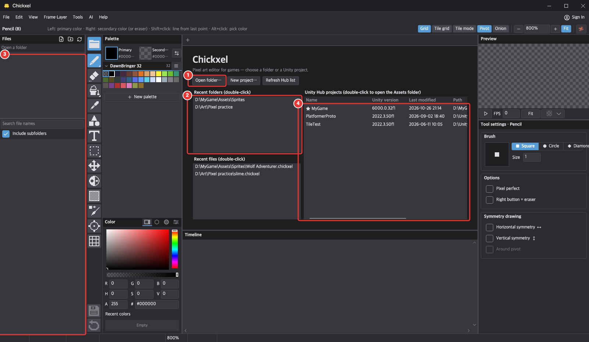
- ① 폴더 열기…로 그림이 있는 폴더를 고릅니다. 옆의 새 프로젝트…는 새 프로젝트 창을 엽니다.
- ② 최근 폴더·최근 파일 목록의 줄을 더블클릭하거나 골라 Enter를 누르면 바로 엽니다.
- ③ 폴더를 고르면 왼쪽 파일 브라우저에 그 폴더의 그림이 보입니다.
- ④ Unity Hub에 등록된 프로젝트는 이 목록에서 더블클릭하면 그 프로젝트의
Assets폴더를 엽니다. 목록이 비었거나 읽지 못하면 안내가 보이고, Hub 목록 새로 고침로 다시 읽습니다.
문서를 연 뒤에도 파일 > 시작 화면으로 시작 화면을 다시 볼 수 있습니다.
화면 언어와 macOS 키
화면 언어는 처음 켤 때 컴퓨터 언어에 맞춰 고릅니다(한국어·영어, 맞는 언어가 없으면 영어). 바꾸는 방법은 화면 언어 바꾸기에 있습니다.
macOS에서는 이 설명서의 Ctrl을 ⌘(Command)로 읽으세요(예: ⌘+S 저장). 스포이드는 ⌥+클릭, ⌘를 누르는 동안은 임시 이동 도구입니다. 메뉴와 도움말에도 ⌘로 표시됩니다.
새 프로젝트
새 그림은 캔버스 크기와 시작 방식을 정해 만듭니다. 클립보드에 그림이 있으면 그 그림을 첫 레이어에 넣은 채 시작할 수도 있습니다. 만든 문서는 새 탭으로 열리고, 처음 저장할 때 파일 이름과 위치를 정합니다.
여는 방법
파일 > 새 프로젝트…(Ctrl+N), 탭 줄의 +, 시작 화면의 새 프로젝트… 중 하나를 누릅니다. 파일 브라우저에서 만들면 창에 파일 이름 칸도 있습니다.
설정
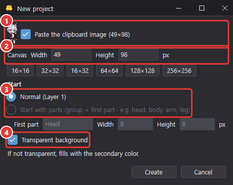
| 항목 | 설명 |
|---|---|
| ① 클립보드 그림 붙여넣기 | 클립보드에 그림이 있을 때만 보입니다. 아래 클립보드 그림으로 시작에 자세히 있습니다. |
| ② 캔버스 | 캔버스 가로·세로(px)입니다. 아래 단추(16×16, 32×32, 16×32, 64×64, 128×128, 256×256)로 흔한 크기를 바로 고릅니다. 나중에 캔버스 크기 모드로 바꿀 수 있습니다. |
| ③ 시작 | 일반(레이어 1)은 레이어 하나로 시작합니다. 부위로 시작은 그룹과 첫 부위(이름·가로·세로)를 만들어 시작합니다(부위 만들기). |
| ④ 배경 투명 | 켜면 투명한 캔버스로 시작합니다. 끄면 캔버스를 보조색으로 채웁니다. |
클립보드 그림으로 시작
클립보드에 그림이 있으면(다른 프로그램에서 복사한 PNG·비트맵, 없으면 Chickxel 안에서 복사한 그림) 창 맨 위에 작은 그림과 ① 클립보드 그림 붙여넣기(가로×세로) 체크가 보입니다. 켜면 캔버스 크기가 그림 크기로 바뀌고 첫 레이어에 그 그림이 들어갑니다. 크기를 바꾸면 그림은 왼쪽 위에 놓이고(캔버스 밖은 잘림), 배경 투명을 끄면 보조색 위에 겹칩니다. 켜 둔 동안에는 부위로 시작을 고를 수 없고, 가로나 세로가 16384px를 넘는 그림은 보이지 않습니다.
도움말 보기(F1)
화면의 단추나 패널이 무엇인지 궁금하면 F1을 누르고 그곳을 클릭합니다. 그 기능을 설명하는 가이드 쪽이 바로 열립니다. 메인 창뿐 아니라 픽셀로 정리·효과·AI 채팅·효과 만들기·내보내기·스킨 관리·환경 설정·에셋 관리자 창과 작은 대화상자에서도 됩니다. 이름을 알고 있는 기능은 도움말 > 사용 가이드…로 사용 가이드 창을 열어 검색하거나 목차에서 찾습니다.
화면에서 도움말 고르기
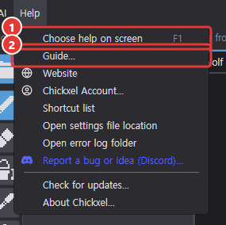
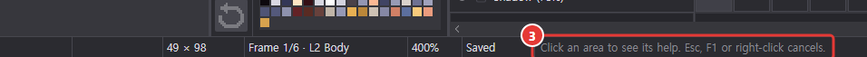
- F1을 누르거나 ① 도움말 > 화면에서 도움말 선택을 고릅니다.
- 마우스 커서가 물음표 모양의 도움말 커서로 바뀌고 ③ 상태 줄에 안내가 뜹니다. 마우스를 움직이면 누를 때 열릴 컨트롤에 노란 상자가 둘러져, 무엇의 설명이 열릴지 미리 보입니다. 이 동안에는 단추를 눌러도 원래 기능이 실행되지 않습니다.
- 알고 싶은 곳을 왼쪽 버튼으로 클릭합니다. 사용 가이드 창이 열리며 그곳을 설명하는 쪽을 보여 줍니다. 그 컨트롤을 설명하는 제목·표 줄·목록 항목이 있으면 그리로 스크롤하고, 그 자리를 노란 테두리로 잠깐 칠합니다.
Esc, F1을 다시 누르기, 우클릭 중 하나로 아무 쪽도 열지 않고 끝냅니다. 다른 창으로 옮겨 가도 끝납니다. 메인 창에서 연결된 쪽이 없는 곳을 클릭하면 고르기가 끝나고 상태 줄에 "이곳에 연결된 도움말은 없습니다. 도움말 메뉴의 사용 가이드에서 검색할 수 있습니다."가 뜹니다. 연결된 쪽이 없는 곳은 ② 사용 가이드…에서 검색합니다.
다른 창에서 고르기
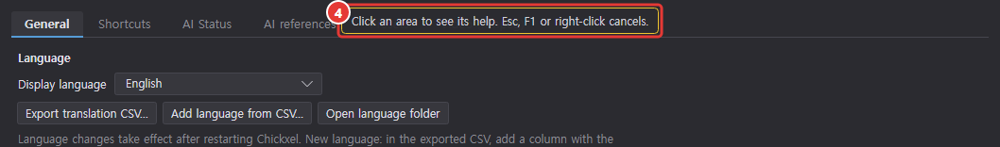
- 상태 줄이 없는 창에서는 F1을 누르면 ④ 창 위쪽 가운데에 노란 테두리 안내 띠가 뜹니다. 띠는 누르기를 막지 않고, 마우스가 띠에 닿으면 창 아래쪽 끝으로 비켜 그 아래 컨트롤이 보입니다(다시 닿으면 위로).
- 연결된 쪽이 없는 곳을 클릭하면 ④ 띠의 글이 "이곳에 연결된 도움말은 없습니다. 도움말 메뉴의 사용 가이드에서 검색할 수 있습니다."로 바뀌고 고르기가 이어지므로, 다른 곳을 바로 다시 누를 수 있습니다.
- 사용 가이드 창은 메인 창에 딸려 열리므로, 대화상자에서 열었어도 그 대화상자를 닫은 뒤에도 남습니다.
클릭한 곳마다 열리는 쪽
도구 칸, 보기 단추, 도구 설정, 색 패널, 미리보기, 타임라인, 상태 줄은 누른 컨트롤을 설명하는 자리로 바로 갑니다. 나머지는 그 영역의 쪽 처음을 엽니다. 따로 뜨는 창도 누른 컨트롤에 자리가 있으면 그 자리로, 없으면 그 창의 쪽으로 갑니다.
| 클릭한 곳 | 열리는 쪽 |
|---|---|
| 왼쪽 도구 막대의 도구 칸 | 그 칸에 지금 보이는 도구의 쪽(예: 연필 칸이면 연필). 선택 도구 넷은 선택 도구. |
| 오른쪽 도구 설정 패널 | 지금 고른 도구의 쪽. 옵션 줄을 누르면 그 옵션을 설명하는 제목·표 줄로 갑니다(예: 연필의 픽셀 퍼펙트). |
| 위 막대의 확대·맞춤, 격자, 타일 격자, 타일 모드, 양파 껍질, 효과, 피벗 단추 | 메뉴와 위 막대 쪽의 그 단추를 설명하는 그림으로 스크롤합니다(피벗 단추는 쪽 처음). |
| 위 막대의 저장·되돌리기 단추 | 저장 · 저장한 내용으로 되돌리기 |
| 파일 브라우저와 그 단추 | 파일 브라우저 |
| 색 패널 위쪽(기본/보조색, 팔레트 머리글·메뉴 단추·색 칸, 새 팔레트) | 팔레트 쪽에서 그 부분을 설명하는 자리 |
| 색 패널 아래쪽(고르기 방식 탭, 지금 방식의 고르기 칸, 투명도 막대, RGB·HSV·A 입력 칸, # 칸, 최근 색, 레이어 색) | 색 고르기 쪽에서 그 부분을 설명하는 자리(고르기 칸은 고르는 방식 표의 지금 방식 줄) |
| 미리보기 | 미리보기 쪽의 그 부분(그림·FPS·배율 단추는 첫 그림의 번호 줄, 재생·배경·착장·크게 보기 단추는 각 설명) |
| 타임라인 | 타임라인 쪽의 그 영역(캔버스 칩, 태그 줄, 프레임 머리글·셀, 레이어 줄, 다음 프레임·레이어 칸, 스크롤 막대). 태그는 태그, 효과 줄은 타임라인의 효과 줄로 갑니다. |
| 문서 탭 줄 | 문서 탭과 나누기 |
| 캔버스 | 캔버스 |
| 시작 화면 | 처음 실행할 때 |
| 메뉴 줄, 위 막대의 나머지 | 메뉴와 위 막대 |
| 창 아래 상태 줄 | 상태 표시줄 쪽 표에서 그 칸의 번호 줄 |
| 따로 뜨는 창(픽셀로 정리, 효과, AI 채팅, 효과 만들기, 내보내기, 스킨 관리, 환경 설정, 에셋 관리자, 작은 대화상자) | 누른 컨트롤을 설명하는 자리, 없으면 그 창을 설명하는 쪽(예: 픽셀로 정리, 효과 창, AI 채팅, 효과 만들기, 내보내기, 스킨 관리, 환경 설정, 에셋 관리자) |
| 자기 쪽이 없는 알림·확인 창 | 그 창을 띄운 창의 쪽 |
사용 가이드 창
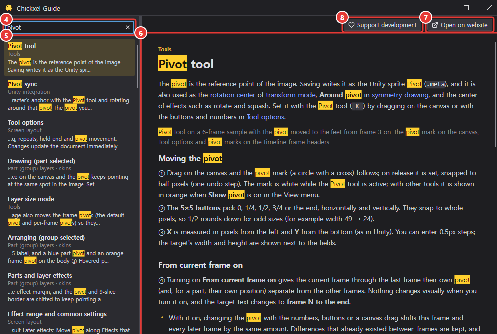
- ⑤ 검색 칸에 낱말을 적으면 이 컴퓨터 안에서 가이드 전체를 찾습니다. ↑/↓로 결과를 고르고 Enter로 엽니다. 연 쪽에서는 찾은 말이 노랗게 칠해지고 첫 곳으로 스크롤합니다.
- ⑥ 검색 칸이 비어 있으면 장별 목차입니다. 화살표로 장을 펼치고 접으며, 쪽 이름을 누르면 엽니다.
- ⑦ 쪽 본문입니다. 본문의 링크는 같은 창에서 다른 쪽을 열고, 맨 아래 이전·다음 단추로 앞뒤 쪽으로 갑니다.
- ⑧ 홈페이지에서 열기는 지금 쪽을 홈페이지 가이드에서 열고, ⑨ 개발 후원하기는 후원 쪽을 엽니다.
- 사용 가이드…에는 기본 단축키가 없습니다. 자주 쓰면 단축키 바꾸기에서 키를 정합니다. 창은 하나만 열리고, 앱을 켜 둔 동안 마지막에 본 쪽을 기억합니다. Esc는 검색어를 지우고, 검색어가 없으면 창을 닫습니다.
- 창에 보이는 단축키는 기본 키가 아니라 지금 쓰는 키입니다. 바꾼 키도 바로 반영됩니다.
- 움직이는 화면은 인터넷 없이 창 안에서 되풀이 재생되고, 아래 홈페이지에서 크게 보기로 홈페이지에서 크게 봅니다.
- 화면 언어가 한국어면 한국어 가이드, 그 밖의 언어면 영어 가이드를 보여 줍니다.
업데이트
Chickxel은 켤 때마다 GitHub에서 새 버전을 확인하고, 새 버전이 있으면 알립니다. 업데이트 창에서 지금 업데이트을 누르면 내려받기부터 다시 실행까지 앱이 알아서 합니다. 자동 확인은 끌 수 있고, 메뉴에서 언제든 직접 확인합니다.
새 버전 알림
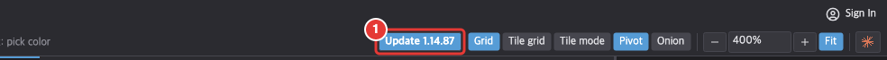
앱을 켜고 몇 초 뒤 조용히 확인합니다. 새 버전이 있으면 상태 줄에 알리고 위 막대에 ① 업데이트 단추(새 버전 번호)를 보이며 업데이트 창을 띄웁니다. 다른 창이 떠 있으면 업데이트 창은 띄우지 않고 단추로만 알립니다. 단추를 누르면 업데이트 창이 다시 열립니다.
업데이트 창
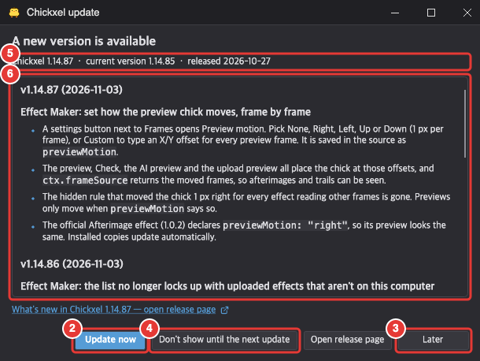
| 항목 | 하는 일 |
|---|---|
| ② 지금 업데이트 | 내 OS용 파일을 창 안에서 내려받아(진행 막대, 취소로 멈춤) 체크섬으로 검증하고 풉니다. 그다음 앱을 닫고 새 버전으로 바꿔 다시 실행합니다. 저장하지 않은 작업은 먼저 묻고, 실패하면 지금 버전을 그대로 둡니다. |
| ③ 나중에 | 창을 닫고 다음에 켤 때 다시 알립니다. |
| ④ 다음 업데이트까지 띄우지 않기 | 이 버전은 자동 확인에서 다시 알리지 않고, 더 새 버전이 나오면 알립니다. 도움말 > 업데이트 확인…으로는 계속 볼 수 있습니다. |
| ⑤ 버전 | 새 버전, 지금 버전, 나온 날입니다. |
| ⑥ 바뀐 점 | 지금 버전 다음부터 새 버전까지 바뀐 점을 모아 보입니다. 바로 아래 링크는 그 버전의 릴리스 페이지를 엽니다. |
| 릴리스 페이지 열기 | 창을 닫지 않고 브라우저에서 릴리스 페이지를 엽니다. |
바뀐 점은 고른 화면 언어로 보입니다. 그 언어의 기록이 없는 버전은 영어로, 영어 기록이 없는 예전 버전은 한국어로 보입니다. 기록을 받지 못하면 릴리스 페이지 링크만 보입니다.
개발 빌드·시험 빌드이거나, 설치 폴더에 쓸 권한이 없거나, macOS가 앱을 임시 위치에서 실행 중이면(App Translocation — Chickxel.app을 응용 프로그램 폴더로 옮긴 뒤 다시 켜면 해결) 지금 업데이트이 꺼지고 창에 그 이유가 보입니다. 이때는 릴리스 페이지 열기로 받아 직접 바꿉니다. Linux도 Windows처럼 실행 파일 하나를 바꾸므로 Chickxel을 내 계정이 쓸 수 있는 폴더에 두어야 하고, 앱을 닫은 뒤 바꾸기가 실패하면 이전 버전을 그대로 두고 zenity·kdialog·notify-send 중 설치된 것으로 알립니다.
직접 확인하기와 자동 확인 끄기
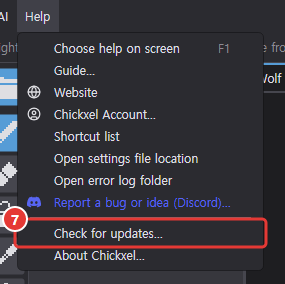
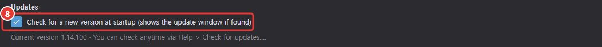
- ⑦ 도움말 > 업데이트 확인…으로 언제든 확인합니다. 직접 확인하면 최신 버전을 쓰고 있다는 결과나 확인하지 못한 이유도 알려 주고, 건너뛴 버전도 다시 보여 줍니다.
- ⑧ 편집 > 환경 설정… > 일반의 이 체크를 끄면 켤 때 확인하지 않습니다.
네트워크와 개인정보
Chickxel에는 사용 기록 수집(분석)이나 광고가 없고, 그림과 파일은 내가 올리기를 고를 때만 밖으로 나갑니다. 아래 표의 경우에만 인터넷에 접속하며, 계정은 갤러리·에셋 올리기를 쓸 때만 필요합니다.
인터넷에 접속하는 때
| 언제 | 어디로, 무엇을 |
|---|---|
| 앱을 켤 때·업데이트 확인… | GitHub에 최신 버전과 바뀐 점을 묻습니다. 자동 확인은 끌 수 있습니다(아래). |
| 팔레트 웹(Lospec) 창을 열 때 | lospec.com에서 팔레트 목록과 예시 그림을 받습니다. 즐겨찾기한 팔레트는 이 컴퓨터에만 저장됩니다. |
| AI 채팅·AI 상태 창을 쓸 때 | 컴퓨터에 설치된 Claude Code·Codex CLI가 내 로그인으로 Anthropic·OpenAI에 접속합니다. 그때 AI가 보는 그림과 대화가 그 서비스로 갑니다. |
| Chickxel 계정·갤러리·에셋 올리기를 쓸 때 | chickxel.com에 로그인하고, 고른 그림이나 에셋을 올립니다(갤러리에 올릴 때 켜면 편집 가능한 .chickxel 파일도). 앱을 켜기만 해서는 접속하지 않습니다(Chickxel 계정). |
| 에셋 관리자의 상점·업데이트 탭, 효과 만들기의 내가 올린 효과 목록 | chickxel.com에서 공개 에셋 목록·미리보기·작성자 프로필 그림을 받고, 설치를 누른 패키지를 내려받습니다. |
| 홈페이지·Discord·후원 같은 링크를 누를 때 | 기본 브라우저에서 그 주소를 엽니다. |
AI 도구가 Chickxel을 다루는 연결(MCP)은 이 컴퓨터 안(127.0.0.1)에서만 열리고 바깥에서는 접속할 수 없습니다.
Discord 활동 상태도 인터넷으로 보내지 않습니다. Chickxel은 이 컴퓨터에서 켜져 있는 Discord 앱에만 알리고, 프로필에는 병아리 그림과 "Chickxel 하는 중", 몇 분째인지만 보입니다. 문서 이름 같은 작업 내용은 보내지 않습니다. 끄려면 편집 > 환경 설정… > 일반 > Discord에서 Discord에 활동 상태 보이기("Chickxel 하는 중")를 끕니다(환경 설정).
업데이트 확인 끄기
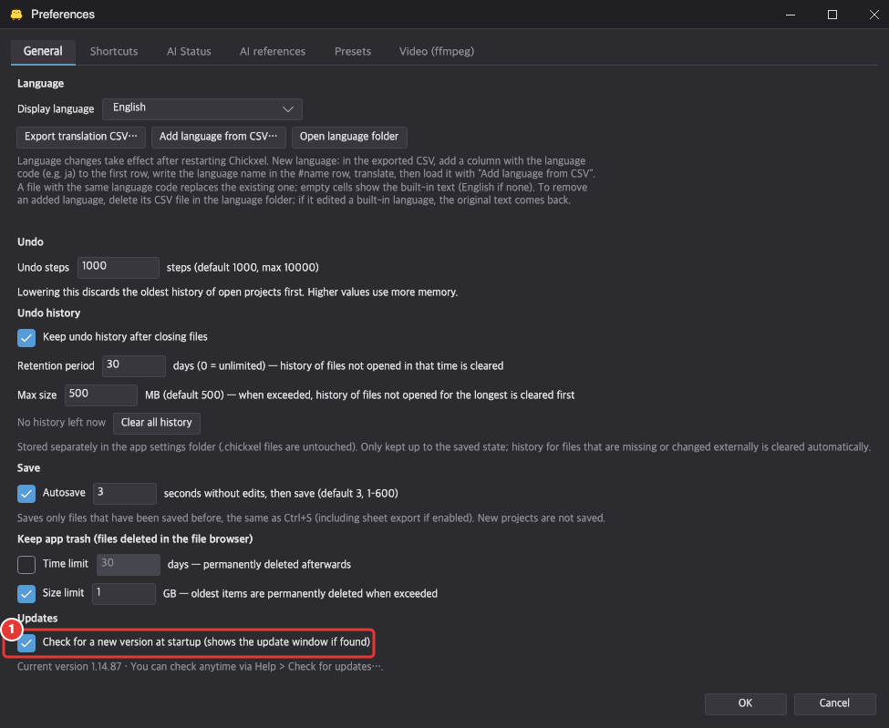
- ① 편집 > 환경 설정… > 일반의 이 체크를 끄면 켤 때 업데이트를 확인하지 않습니다. 직접 확인은 계속 쓸 수 있습니다(업데이트).
제보·아이디어
버그, 불편한 점, 바라는 기능은 Discord나 GitHub Issues로 알려 주세요. 버전과 재현 순서를 함께 적으면 빨리 고칠 수 있습니다.
제보하는 곳
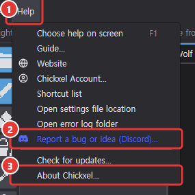
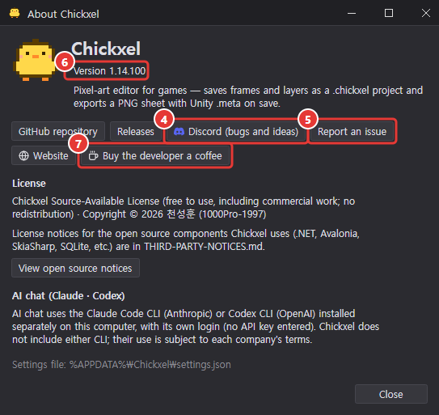
버그, 불편한 점, 바라는 기능은 Chickxel Discord에 남겨 주세요. 앱에서는 ① 도움말 > ② 제보·아이디어 (Discord)…로 바로 열 수 있고, ③ 도움말 > Chickxel 정보… 창의 ④ Discord 단추로도 열 수 있습니다. GitHub 계정이 있다면 GitHub Issues(정보 창의 ⑤ 문제 신고)에 올려도 됩니다.
버그를 알릴 때 적을 것
버그를 알릴 때 다음을 함께 적어 주면 빨리 고칠 수 있습니다.
- 버전: ③ 도움말 > Chickxel 정보…의 ⑥에 보입니다.
- OS: Windows 10/11, macOS 버전(Apple Silicon·Intel) 또는 Linux 배포판과 버전(x64·ARM64).
- 재현 순서: 무엇을 했을 때 어떻게 되었는지, 원래 기대한 결과.
- 오류 로그: 오류 창이 떴다면 그 로그 파일(오류가 생겼을 때). 화면 캡처도 도움이 됩니다.
개발 후원하기
개발을 응원하고 싶다면 홈페이지의 개발 후원하기, 에디터의 사용 가이드(F1) 창 오른쪽 위 개발 후원하기 단추, 또는 ③ 도움말 > Chickxel 정보… 창의 ⑦ 개발자에게 커피 사주기 단추를 누르세요. 같은 창의 홈페이지 단추는 앱 언어에 맞는 Chickxel 홈페이지를 엽니다.
Chickxel 계정
Chickxel 계정은 chickxel.com 갤러리에 그림을 올리고 효과·그라데이션 에셋을 공유할 때만 씁니다. 그리기·저장·내보내기에는 필요 없습니다. Google·GitHub·Discord 계정으로 로그인하며, 한 컴퓨터에 여러 계정을 두고 바꿔 쓸 수 있습니다. 그림과 에셋을 공유하면 경험치가 쌓여 계정 레벨이 오르고, 이름 옆에 레벨 칩이 붙습니다.
로그인
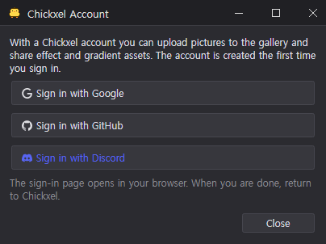
Chickxel 계정으로 그림을 chickxel.com 갤러리에 올리고(갤러리에 올리기) 효과·그라데이션 에셋을 공유합니다(온라인에 올리기). 도움말 > Chickxel 계정…로 엽니다. 로그인하지 않았으면 Google·GitHub·Discord 계정으로 로그인 단추가 있습니다. 누르면 브라우저에 chickxel.com 로그인 쪽이 그 서비스를 골라 둔 채 열리고, 로그인을 마치면 브라우저에 창을 닫아도 된다고 나오며 앱 창이 바뀝니다. 기다리는 동안 브라우저 다시 열기·로그인 취소가 있고, 5분이 지나면 다시 시도하라고 알립니다. 처음 로그인하면 계정이 만들어집니다.
계정 창
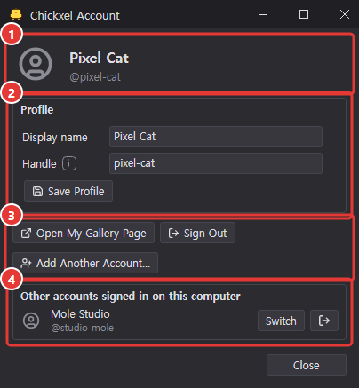
- ① 로그인한 계정의 프로필 그림·표시 이름·레벨 칩·@핸들입니다.
- ② 레벨 N과 경험치 쌓는 법 정보박스, 다음 레벨까지 간 만큼 찬 막대(칩과 같은 색), 그 아래 지금 경험치와 다음 레벨까지 남은 경험치(
103 XP · 다음 레벨까지 9 XP)입니다. 서버가 레벨을 알려 주지 않으면 이 줄이 없습니다. 자세한 규칙은 아래 계정 레벨에 있습니다. - ③ 프로필: 표시 이름과 핸들을 고쳐 프로필 저장를 누릅니다. 핸들은 소문자·숫자·하이픈 3~32자로, 갤러리 주소와 에셋 작성자 ID에 쓰입니다. 다른 사람이 쓰는 핸들이면 겹친다고 알립니다. 에셋 패키지를 올린 뒤에는 핸들 칸이 꺼지고 아래에 "에셋 패키지를 올린 뒤에는 핸들을 바꿀 수 없습니다."가 보입니다.
- ④ 내 갤러리 쪽 열기는 chickxel.com의 내 쪽을 엽니다. 로그아웃는 이 계정만 목록에서 빼고 다른 계정으로 저절로 바꾸지 않습니다. 다른 계정 추가…는 지금 계정을 둔 채 로그인 단추 화면을 엽니다(브라우저가 이미 로그인한 계정으로 바로 넘어가면 그 서비스에서 계정을 바꾸거나 다른 서비스로 로그인). 같은 계정으로 다시 로그인하면 목록에 겹치지 않고 그 계정만 새로 로그인됩니다.
- ⑤ 이 컴퓨터에 로그인한 다른 계정: 지금 계정 말고 로그인해 둔 계정마다 프로필 그림·이름·레벨 칩·@핸들, 전환와 로그아웃 아이콘 단추가 있습니다.
계정 레벨
공유하면 계정에 경험치(XP)가 쌓여 레벨이 오릅니다. 경험치는 chickxel.com 서버가 지금 올라 있는 공유와 좋아요, 출석, 앱을 켜 둔 시간으로 셈하며, 누른 좋아요를 거두면 그 경험치도 빠집니다. 하루는 UTC 기준(한국 시간 오전 9시에 바뀜)입니다.
| 쌓는 법 | 경험치 |
|---|---|
| 갤러리에 그림 올리기(하루 3개까지 셈) | +10 |
그림과 함께 편집용 .chickxel 파일도 올리기 | +5 |
| 에셋 패키지 처음 공개(하루 1개까지 셈) | +10 |
| 공개한 패키지의 새 버전 올리기(하루 1번까지 셈) | +1 |
| 다른 사람이 내 그림·에셋에 누른 좋아요 하나 | +2 |
| 다른 사람 그림·에셋에 좋아요 누르기(하루 3번까지 셈) | +1 |
| 하루 출석(그날 처음 앱을 켜거나 사이트에 들어올 때) | +10 |
| 로그인한 채 앱을 켜 둔 한 시간 | +1 |
레벨 L에서 다음 레벨까지는 10 + 2 × (L − 1) XP(10, 12, 14 …)라 레벨 L은 (L − 1) × (L + 8) XP에서 시작합니다(레벨 2 = 10 XP, 3 = 22 XP, 4 = 36 XP). 최고 레벨은 없습니다.
| 레벨 | 레벨 칩 |
|---|---|
| 1~4 | 흐린 회색 |
| 5~9 | 동 |
| 10~19 | 은 |
| 20~29 | 금 |
| 30~49 | 청록–보라 크리스털과 은은한 빛 |
| 50 이상 | 무지개와 빛 |
레벨 칩(Lv 7)은 이름 뒤에 붙어 계정 단추·계정 메뉴·계정 창·갤러리에 올리기 창, 에셋 관리자 온라인 목록과 상세의 작성자 옆에 보이고, chickxel.com에서도 이름마다 같은 단계의 칩이 붙습니다(사이트의 내 계정 쪽에는 경험치 막대와 쌓는 법). 칩에 마우스를 올리면 레벨과 쌓는 법이 풍선으로 보입니다. 레벨을 모르면(예전 서버, 확인 전 다른 사람) 칩이 없습니다.
앱을 켜 둔 시간은 로그인해 있는 동안만 10분마다 세고, 한 시간이 차면 서버에 알려 +1 XP를 받습니다(서버는 계정마다 한 시간에 한 번만 줌 — 여러 컴퓨터에서 켜도 같음). 로그아웃한 동안은 세지 않고, 연결이 안 되면 10분 뒤에 다시 알립니다. 이 경험치로 레벨이 오르면 상태 표시줄에 "레벨 업! Lv N"이 보입니다.
하루 출석은 로그인한 채 그날 처음 앱을 켜거나 chickxel.com에 들어올 때 서버가 한 번 줍니다. 앱에서 받으면 상태 표시줄에 "출석 +10 XP"가 보이고, 그날 이미 받았으면 아무것도 보이지 않습니다.
chickxel.com에서 그림이나 에셋 패키지를 지우면(본인이 지우거나 관리자가 지우거나 신고 처리로 지워져도) 사이트·카탈로그·프로필에서 사라지고, 그것으로 받은 경험치(받은 좋아요 포함)가 빠지며 저장 공간 한도도 바로 돌아옵니다. 다만 서버에는 남아 있어 관리자가 되살리거나 영구 삭제할 수 있습니다.
메뉴 줄의 계정 단추
메뉴 줄 오른쪽 끝의 계정 단추는 로그인했으면 둥근 프로필 그림과 이름, 레벨 칩을 한 묶음으로(그림은 앱을 켤 때 계정을 확인한 뒤에 받고, 그 전에는 사람 아이콘), 아니면 사람 아이콘과 로그인을 보입니다. 로그인해 둔 계정이 없으면 누를 때 바로 계정 창이 열리고, 있으면 계정 메뉴가 열립니다: 로그인해 둔 계정들(프로필 그림·이름·@핸들, 지금 계정은 굵게와 체크 표시, 누르면 그 계정으로 전환), 다른 계정 추가…, 계정 관리…(로그아웃 상태면 로그인…), 로그아웃. 계정 단추 바로 왼쪽의 갤러리 단추는 메뉴와 위 막대에 있습니다.
갤러리·에셋 올리기는 지금 계정으로 갑니다. 서버가 로그인을 끝낸 계정은 목록에서 빠지고, 그 계정으로 바꾸려 했으면 "이 계정의 로그인이 끝나 목록에서 뺐습니다. 다시 로그인하세요."와 함께 계정 창이 열립니다.
계정과 작성자가 보이는 곳(계정 단추·메뉴·계정 창, 에셋 관리자와 상점, 효과 만들기, 갤러리에 올리기, 에셋 게시 창의 작성자, 에셋 가져오기 확인)에는 모두 둥근 프로필 그림과 이름이 한 묶음으로 보이고, 레벨을 알면 이름 뒤에 레벨 칩이 붙습니다(레벨 칩은 잘리지 않음). 그림이 없거나 아직 받지 않았으면 사람 아이콘이고, 이름이 잘리면 마우스를 올려 전체를 봅니다.
접속하는 때와 저장 위치
chickxel.com에는 로그인해 둔 계정이 있을 때 앱을 켜면 백그라운드에서 한 번(지금 계정 확인 — 계정 단추의 프로필 그림·레벨과 갤러리 올리기 창의 계정 칸이 처음부터 확인된 정보로 보임), 계정 메뉴를 처음 열 때, 계정을 바꿀 때, 계정 창과 올리기를 쓸 때, 로그인한 채 앱을 켜 둔 시간이 한 시간 찰 때마다 접속합니다. 연결이 안 되면 저장해 둔 이름 그대로 쓰고(계정 단추는 사람 아이콘), 로그인한 계정이 없으면 접속하지 않습니다. 로그인한 계정은 설정 폴더의 community-session.bin에 둡니다(환경 설정).
화면 구성
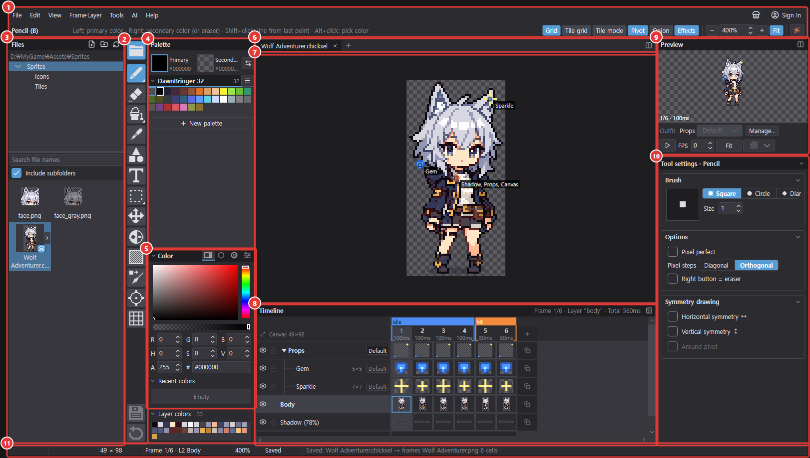
메인 창은 아래 11개 영역으로 나뉩니다. 영역마다 하는 일이 정해져 있고, 고른 문서·도구·레이어에 따라 내용이 바뀝니다. 표의 이름을 누르면 그 영역의 자세한 설명으로 갑니다.
| 영역 | 하는 일 |
|---|---|
| ① 메뉴와 위 막대 | 모든 명령이 든 메뉴, 지금 도구의 이름과 사용법, 보기 옵션, 확대율, AI 채팅 단추, 갤러리 단추와 계정 단추 |
| ② 도구 막대 | 그리기·선택·이동 같은 도구 고르기, 파일 브라우저 접기, 저장·되돌리기 |
| ③ 파일 브라우저 | 폴더의 그림을 썸네일로 보고 열기, 새 파일·합치기·삭제 |
| ④ 팔레트 | 기본색·보조색과 쌓아 둔 팔레트 |
| ⑤ 색 | 색 고르기, 최근 색, 지금 레이어에 쓰인 색 |
| ⑥ 문서 탭 | 열린 문서 바꾸기, 화면을 두 칸으로 나누기 |
| ⑦ 캔버스 | 현재 프레임을 보며 현재 레이어에 그리기 |
| ⑧ 타임라인 | 프레임·레이어·셀·태그를 고르고 편집하기 |
| ⑨ 미리보기 | 애니메이션 재생, 착장 바꾸기, 프레임 복사·저장 |
| ⑩ 도구 설정 | 지금 도구의 설정과 타임라인에서 고른 효과의 설정 |
| ⑪ 상태 표시줄 | 커서 좌표·색·크기·프레임·확대율·저장 상태와 안내 |
영역 말고도 여러 창에서 같이 쓰는 조작과, 메뉴로 여는 창은 다음 쪽에 있습니다.
| 쪽 | 하는 일 |
|---|---|
| 숫자 칸과 메뉴 다루기 | 끌어서 값 바꾸기, 계산식 입력, 우클릭 값 목록, 팝업 메뉴 |
| 내보내기 창 | 프레임 시트·부위 아틀라스 PNG와 Unity 설정 |
| GIF 애니메이션으로 내보내기 | 공유용 GIF 한 파일 만들기 |
| 갤러리에 올리기 | chickxel.com 갤러리에 그림 올리기 |
패널 사이의 경계선을 끌면 크기가 바뀌고, 바꾼 크기는 다음 실행에도 남습니다. 파일 브라우저는 F8로 접고 펼칩니다.
메뉴와 위 막대
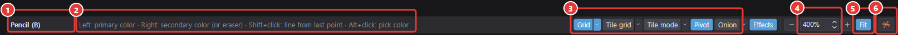
창 맨 위에는 메뉴 줄이 있고(오른쪽 끝에 갤러리 단추와 계정 단추), 그 바로 아래 위 막대에는 지금 도구와 화면 보기에 관한 단추가 모여 있습니다. 위 막대 왼쪽에는 지금 고른 도구의 ① 이름(괄호 안은 단축키)과 ② 사용법 한 줄, 오른쪽에는 ③ 보기 옵션, ④ 확대율 상자, ⑤ 맞추기, ⑥ AI 채팅 단추가 있습니다.
메뉴
메뉴 줄에는 메뉴 7개가 있습니다. 메뉴 항목 오른쪽에 단축키가 보이고, 단축키는 환경 설정에서 바꿀 수 있습니다.
| 메뉴 | 주요 항목 |
|---|---|
| 파일(_F) | 새 프로젝트, 열기, 폴더 열기, Unity 프로젝트 열기, 최근 폴더·최근 파일, 저장, 다른 이름으로 저장, 저장한 내용으로 되돌리기, 내보내기, GIF 애니메이션으로 내보내기, 갤러리에 올리기, 닫기, 시작 화면, 끝내기(파일 장) |
| 편집(_E) | 실행취소·다시 실행, 잘라내기·복사·붙여넣기·지우기, 모두 선택·선택 해제, 뒤집기·회전·변형, 외곽선 추가, 색 바꾸기, 캔버스 크기·레이어 전체 변형, 캔버스 전체 뒤집기, 이미지에서 팔레트 만들기, 팔레트 색으로 변환, 환경 설정 |
| 보기(_V) | 확대·축소·화면에 맞추기·실제 크기(1배), 픽셀 격자·타일 격자·타일 모드·피벗 표시·양파 껍질·캔버스에 효과 보기, 격자 설정, 다음 탭·이전 탭·다른 쪽으로 옮기기, 파일 브라우저, 움직임 테스트 |
| 프레임·레이어(_R) | 재생·정지, 이전·다음·첫·마지막 프레임, 새 빈 프레임·프레임 복제·프레임 삭제, 새 레이어·새 그룹·새 부위, 부위 크기, 레이어 이름 바꾸기, 이전·다음 스킨, 스킨 관리, 새 태그, 격자로 나눠 프레임 만들기(타임라인, 부위 장) |
| 도구(_T) | 도구마다 하나씩, 선택 도구 묶음, 그리기 옵션(도형 채움·같은 색 전체 채우기·픽셀 퍼펙트·대칭·오른쪽 버튼 = 지우개·이동 순환·브러시 크게/작게·기본색 ↔ 보조색), 에셋 관리자, 효과 만들기(도구 장) |
| AI(_A) | AI 채팅, AI 상태 열기, 참고 자료, AI 그림 픽셀로 정리, 현재 레이어를 픽셀로 정리(AI, 픽셀로 정리 장) |
| 도움말(_H) | 화면에서 도움말 선택(F1), 사용 가이드, 홈페이지, Chickxel 계정, 단축키 목록, 설정 파일 위치 열기, 오류 로그 폴더 열기, 제보·아이디어(Discord), 업데이트 확인, Chickxel 정보(시작하기 장) |
도구 이름과 사용법
도구를 바꾸면 ① 이름과 ② 사용법이 바로 바뀝니다. 사용법에는 그 도구의 마우스 조작과 보조 키가 한 줄로 적혀 있습니다. 더 자세한 설정은 오른쪽 도구 설정에서 바꿉니다.
확대율과 맞추기
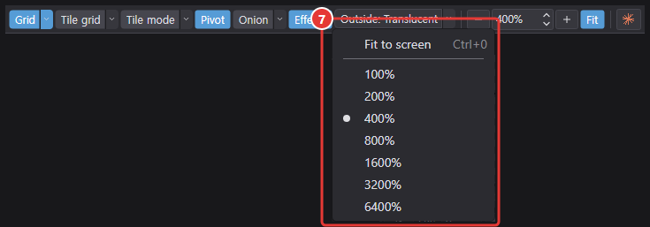
캔버스는 1배부터 64배까지 정수 배로만 확대합니다. 확대율은 앱을 끝낼 때 저장되어 다음 실행에 그대로 쓰입니다(처음 값 800%).
| 조작 | 결과 |
|---|---|
| ④ 확대율 상자 | 누르면 숫자를 입력하고(정수 배가 아니면 가까운 배율로 맞춤: 150% → 200%), 오른쪽 끝 위/아래 단추를 누르거나 위아래로 끌면 한 배씩 바뀝니다. 우클릭하면 ⑦ 화면에 맞추기와 100·200·400·800·1600·3200·6400% 목록이 열립니다. |
| 상자 양옆 빼기·더하기 단추 | 1·2·3·4·5·6·8·10·12·16·20·24·32·40·48·64배 단계로 축소·확대합니다(Ctrl+-, Ctrl+=와 같음). |
| ⑤ 맞추기(Fit) | 켜 두면 그림을 열 때마다 캔버스를 창에 맞추고, 켜는 순간에도 한 번 맞춥니다. 화면을 나누거나 합칠 때도 다시 맞춥니다. 처음에는 켜져 있고 상태는 다음 실행에도 남습니다. |
| 단축키 | Ctrl+0 = 지금 화면에 맞추기, Ctrl+1 = 실제 크기(1배). 캔버스 위 마우스 휠 확대는 캔버스를 보세요. |
보기 옵션
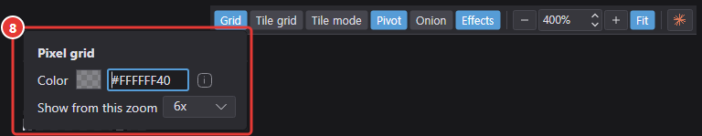
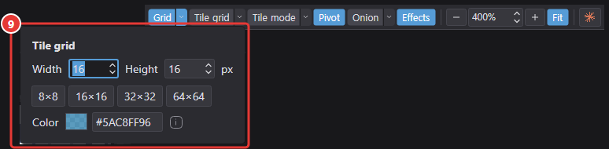
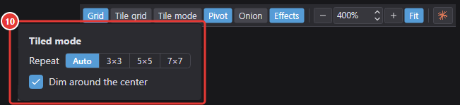
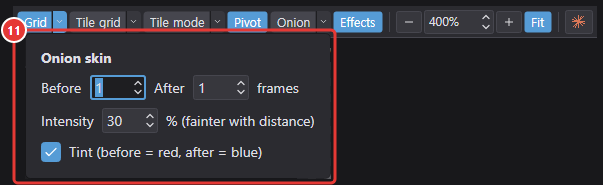
③ 보기 옵션 단추는 누를 때마다 켜고 끕니다. 설정이 있는 단추(격자·타일 격자·타일 모드·양파)는 오른쪽에 조금 떼어 붙인 아래 삼각형을 누르면 설정 팝업이 뜹니다. 단추를 우클릭해도 같은 팝업이 열립니다. 값을 바꾸는 즉시 캔버스에 보입니다(꺼져 있었으면 함께 켜짐). 효과 보기를 뺀 모든 보기 옵션과 설정은 다음 실행에도 남습니다. 같은 명령이 보기(_V) 메뉴에도 있고, 격자 설정…에서 격자 색과 타일 크기를 한 번에 정할 수도 있습니다.
| 보기 | 켜면 | 우클릭 설정(처음 값) |
|---|---|---|
| ⑧ 픽셀 격자 Ctrl+G | 픽셀마다 경계선을 그립니다. 정한 배율 이상으로 확대했을 때만 보입니다. 처음에는 켜져 있습니다. | 색(알파 = 진하기, 흰색 25%), 보이기 시작하는 배율 2·4·6·8·12·16배(6배) |
| ⑨ 타일 격자 Ctrl+Shift+G | 타일 크기마다 선을 그어 타일 경계를 보여 줍니다. | 타일 가로·세로 1~4096px(8·16·32·64 바로 고르기, 16×16), 색(하늘색) |
| ⑩ 타일 모드 Ctrl+Shift+T | 그림을 둘레에 되풀이해 보여 줍니다. 가운데 칸에 그리면 둘레가 함께 바뀌어 이어지는 무늬를 확인할 수 있습니다. | 반복 크기 자동·3×3·5×5·7×7(자동 = 그림이 128px보다 크면 3×3, 아니면 5×5), 가운데 둘레 어둡게(켬) |
| 피벗 표시 | 보이는 모든 레이어(일반 레이어·그룹·부위)와 캔버스의 지금 프레임 피벗을 작은 표시와 이름으로 보이고, 지금 레이어(피벗 대상)의 피벗은 크게 보입니다. 처음에는 켜져 있습니다. 꺼 두어도 피벗 도구를 쓰는 동안에는 고치는 피벗(그룹 화면에서는 부위 피벗도)만 보입니다. | 없음 |
| ⑪ 양파 껍질 Ctrl+J | 앞뒤 프레임을 반투명하게 겹쳐 보여 줍니다. 움직임의 간격을 맞출 때 씁니다. | 앞·뒤 프레임 수 0~5(1·1), 진하기 5~90%(30%, 멀수록 옅게), 색 물들이기(켬, 앞 빨강·뒤 파랑) |
| 효과 Ctrl+Shift+E | 편집 캔버스에 레이어 효과를 입혀 보입니다. 아래 효과 보기를 보세요. | 없음 |
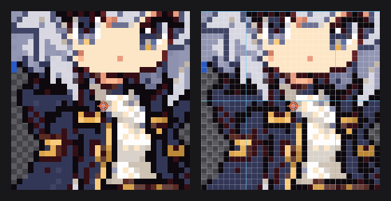
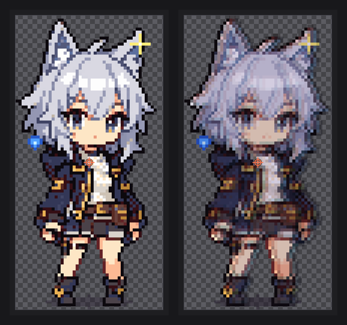
효과 보기
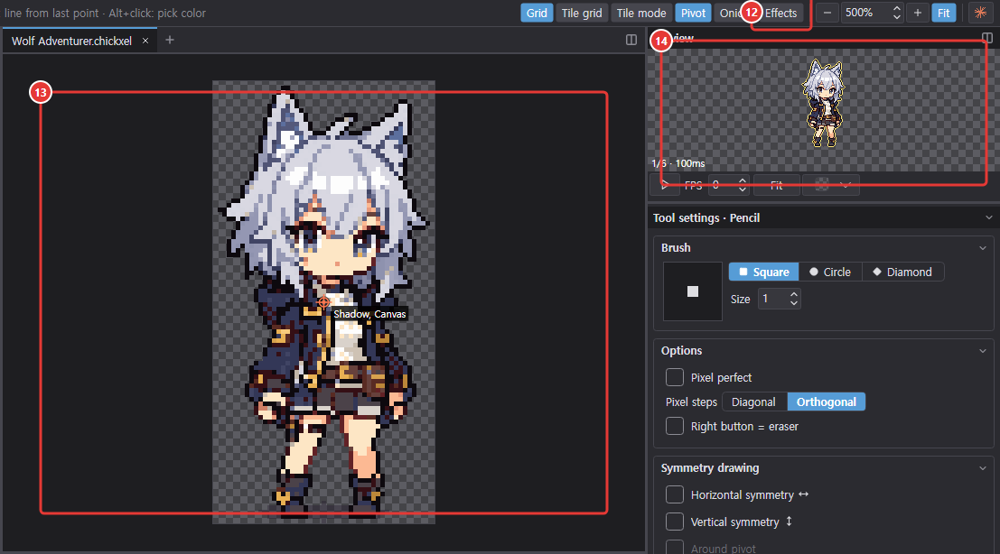
위 막대의 ⑫ 효과 단추를 끄면 ⑬ 캔버스는 고칠 그림 그대로 보이고, ⑭ 미리보기는 계속 효과가 입혀진 모습을 보입니다.
위 막대 '효과' 단추와 보기 메뉴 '캔버스에 효과 보기'(Ctrl+Shift+E)로 캔버스 효과를 켜고 끕니다. 앱을 켜 둔 동안만 기억하며 다음에 켜면 다시 효과를 보여 줍니다.
효과를 끄면 캔버스에서 레이어·부위·그룹 효과를 빼고 고칠 그림 자체를 봅니다(그림 픽셀이 없고 효과로 그림을 만드는 글씨 레이어 등은 효과까지). 이전 프레임 보기(H)·양파 껍질·부위 주변·스포이드/채우기의 '보이는 그림'도 이 보기를 따릅니다. 미리보기·타임라인·내보내기는 영향받지 않습니다.
AI 채팅과 업데이트 단추
⑥ AI 채팅 단추는 AI 채팅 창을 열고 닫습니다(Ctrl+L). 새 버전이 나왔을 때만 위 막대에 업데이트 단추가 생기며, 누르면 바뀐 점을 보고 설치하는 창이 열립니다(업데이트).
갤러리 단추와 계정 단추
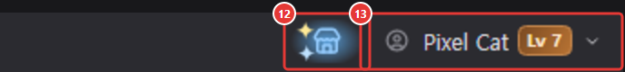
⑫ 계정 단추 바로 왼쪽의 갤러리 단추(가게 아이콘)는 파일 > 갤러리에 올리기…와 같이 지금 문서를 올리는 갤러리에 올리기 창을 엽니다(타임라인에서 고른 프레임도 넘김, 열린 문서가 없으면 꺼짐). 그림이 있는 문서를 손으로 저장하면(저장·다른 이름으로 저장·닫을 때 묻는 저장 — 자동 저장은 아님) 약 6초 동안 강조색 빛이 숨 쉬듯 퍼지고 작은 별이 반짝이며 공유를 권하고, 풍선도 "저장했어요! 이 그림을 chickxel.com 갤러리에 올려 자랑해 보세요"로 바뀝니다. 단추를 누르면 바로 멈춥니다. 한 문서는 실행마다 한 번만 반짝이고, 갤러리에 올린 뒤 다시 저장하면 또 반짝입니다.
⑬ 맨 오른쪽 계정 단추는 로그인한 계정의 프로필 그림과 이름, 레벨 칩을 보이고 누르면 계정 메뉴(로그인해 둔 계정이 없으면 계정 창)를 엽니다(Chickxel 계정).
숫자 칸과 메뉴 다루기
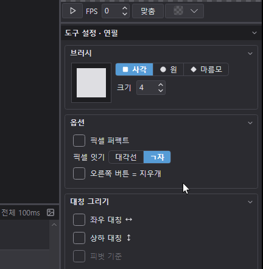
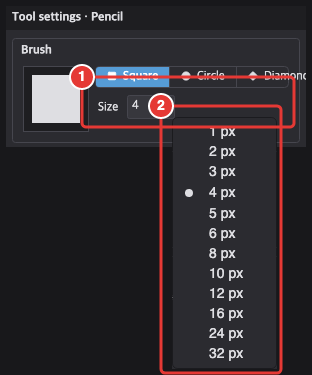
앱 곳곳의 ① 숫자 칸과 우클릭·단추 메뉴는 어느 창에서나 같은 방법으로 다룹니다. 숫자 칸은 눌러서 입력하거나, 오른쪽 끝의 ③ 위/아래 단추로 바꾸거나, ② 우클릭 목록에서 고릅니다.
위/아래 단추
숫자 칸 오른쪽 끝의 ③ 위/아래 단추는 누르거나 위아래로 끌어 값을 바꿉니다. 단추 위에서는 마우스 커서가 위아래 화살표 모양이 됩니다. 숫자 칸 자체를 끌어서는 값이 바뀌지 않습니다.
| 조작 | 결과 |
|---|---|
| 위/아래 단추 누르기 | 한 칸씩 늘거나 줄어듭니다. Ctrl(macOS ⌘)을 누르고 있으면 10칸씩 바뀝니다. |
| 단추 위에서 위아래로 끌기 | 위로 끌면 늘고 아래로 끌면 줄며, 3픽셀 움직일 때마다 한 칸 바뀝니다. 칸마다 정한 최솟값·최댓값에서 멈춥니다. |
| Shift+끌기 | 10배 느리게(30픽셀마다 한 단계) 바뀝니다. |
| Ctrl(macOS ⌘)+끌기 | 한 번에 10단계씩 바뀝니다. Shift와 같이 누를 수도 있습니다. |
| 화면 위/아래 끝까지 끌기 | 커서가 반대편으로 넘어가 계속 끌 수 있습니다. |
끄는 도중 보조 키를 누르거나 떼도 값이 튀지 않고 그 자리부터 이어서 바뀝니다. 한 번 끈 변경은 실행취소 한 단계입니다(실행취소를 쓰는 칸에서).
입력하기와 계산식
숫자 칸을 누르면 숫자 전체가 골라진 채로 입력 상태가 됩니다. 입력 중에는 휠 한 칸에 한 칸씩 바뀝니다(입력 중이 아니면 휠은 패널·목록을 스크롤). Enter를 누르거나 캔버스 등 다른 곳을 누르면 값이 확정됩니다.
정수·실수 칸에는 256*2처럼 계산식을 적을 수 있습니다. Enter를 누르거나 다른 곳으로 옮기면 결과 값(512)으로 바뀝니다.
- 더하기
+, 빼기-, 곱하기*, 나누기/와 괄호, 음수 부호를 쓸 수 있고 곱하기·나누기가 먼저 계산됩니다. - 정수 칸에서 나머지는 0 쪽으로 버립니다(
7/2→ 3). 실수 칸은 칸이 보이는 자릿수로 반올림합니다. - 잘못된 식, 0으로 나누기, 너무 커서 넘치는 값은 받지 않고 이전 값을 그대로 둡니다.
우클릭 값 목록
입력 중이 아닐 때 숫자 칸을 우클릭하면 ② 그 칸에 알맞은 값 목록이 뜹니다. 목록 위에서는 보통 화살표 커서입니다.
- 값에는 단위(px·°·%·ms)가 붙고 지금 값 앞에 점이 찍힙니다.
- 칸에 따라 맨 위에 동작이 있습니다(예: 확대율 상자의 화면에 맞추기).
- 같은 종류의 칸에서 이번 실행 중 마지막으로 쓴 값이 최근: 값으로 따로 보입니다. 앱을 끄면 잊습니다.
- 입력 중에 우클릭하면 글자 편집 메뉴(잘라내기·복사·붙여넣기)가 뜹니다.
메뉴와 팝업
우클릭 메뉴와 단추로 여는 메뉴·팝업은 앱 전체에서 한 번에 하나만 열립니다(메뉴 안에서 연 하위 메뉴는 함께 열림). 다른 메뉴를 열면 앞 메뉴는 닫힙니다.
메뉴는 바깥을 누르거나 바깥에서 휠을 굴릴 때, Esc를 누를 때, 창을 옮기거나 크기를 바꾸거나 다른 창으로 바꿀 때 닫힙니다. 메뉴를 연 단추를 다시 눌러도 닫힙니다.
정보박스와 접는 묶음
모서리가 둥근 작은 네모 안의 i(정보박스)에 마우스를 올리면 긴 설명 풍선이 뜹니다. 누를 필요는 없습니다. 제목 오른쪽에 화살표가 있는 묶음은 제목을 누르면 접히고 펼쳐집니다(접힘 = 오른쪽 화살표, 펼침 = 아래 화살표).
도구 막대
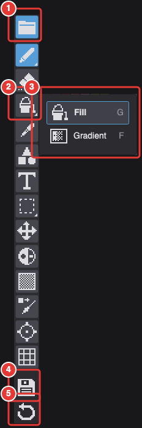
창 왼쪽 끝의 세로 막대입니다. 위에서부터 파일 브라우저 단추, 도구 칸, 저장·되돌리기 단추가 있습니다. 도구 아이콘에 마우스를 올리면 이름과 단축키가 보입니다. 창이 낮아 다 들어가지 않으면 도구 칸만 스크롤되고 위아래 단추는 그대로 있습니다.
도구 칸
칸은 위에서부터 다음 순서입니다. 도구 이름을 누르면 그 도구의 설명으로 갑니다. 단축키는 바꿀 수 있고, 바꾸면 도움말 풍선도 바뀐 키를 보입니다.
| 칸 | 도구(단축키) |
|---|---|
| 1 | 연필(B), 그라데이션 연필(Shift+B) |
| 2 | 지우개(E) |
| 3 | 채우기(G), 그라데이션(F) |
| 4 | 스포이드(I) |
| 5 | 도형(R) |
| 6 | 글씨(T) |
| 7 | 사각 선택, 원 선택(M), 자유 선택(Q), 스마트 선택(W) |
| 8 | 이동(V) |
| 9 | 밝게/어둡게(D) |
| 10 | 디더링(기본 단축키 없음) |
| 11 | 색 바꾸기 브러시(C) |
| 12 | 피벗(K) |
| 13 | 9-slice(S) |
묶음 칸에서 도구 바꾸기
도구가 둘 이상인 칸은 ② 오른쪽 아래에 작은 삼각형이 붙습니다. 칸을 그냥 누르면 칸에 보이는 도구를 고르고, 0.4초 넘게 누르고 있거나 우클릭하면 ③ 옆으로 목록이 펼쳐집니다. 목록에는 아이콘·이름·단축키가 보이고 지금 도구가 강조됩니다. 목록에서 고른 도구는 그 칸의 아이콘이 됩니다. 단축키나 메뉴로 도구를 골라도 칸 아이콘이 따라 바뀝니다.
선택 칸은 M로 고릅니다. 처음 누르면 마지막에 쓴 선택 도구가 되고, 10초 안에 다시 누를 때마다 사각 선택 → 원 선택 → 자유 선택 → 스마트 선택 차례로 바뀝니다.
파일 브라우저·저장·되돌리기 단추
- 맨 위 ① 폴더 단추는 파일 브라우저를 접고 펼칩니다(F8).
- 맨 아래에는 ④ 저장(Ctrl+S와 같음)과 ⑤ 저장한 내용으로 되돌리기 단추가 있습니다. 저장은 지금 문서에 저장하지 않은 수정이 있을 때만 켜집니다. 되돌리기는 디스크에 되돌릴 파일(저장한
.chickxel또는 연 PNG)이 있을 때만 켜지며, 확인을 받은 뒤 수정을 버리고 파일을 다시 읽습니다. 한 번도 저장하지 않은 새 프로젝트나 파일이 없어진 문서에서는 꺼져 있습니다(저장한 내용으로 되돌리기). - 파일 브라우저를 접었는지는 다음 실행에도 남습니다.
파일 브라우저
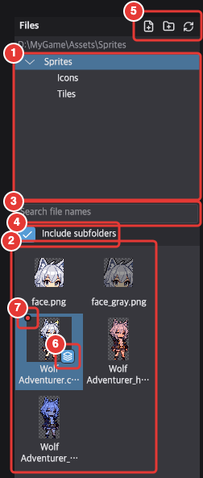
왼쪽의 파일 브라우저는 고른 폴더의 그림을 썸네일로 보여 주고, 누르면 새 문서 탭으로 엽니다. 위에서부터 ① 폴더 트리, ③ 검색 칸과 ④ 하위 폴더 포함, ② 썸네일 목록이 있습니다. 폴더 안 파일이 바뀌면 목록에 바로 반영됩니다.
폴더 고르기
- 폴더는 Ctrl+Shift+O로 엽니다. 마지막으로 연 폴더는 다음 실행에도 열립니다.
- ① 폴더 트리는 이름순이고, 숨김·시스템 폴더와 이름이 점으로 시작하는 폴더는 빼고 보여 줍니다. 트리와 목록 사이 경계선을 끌어 높이를 바꾸면 그 높이가 다음 실행에도 남습니다.
- ④ 하위 폴더 포함을 켜면 고른 폴더 아래 모든 폴더의 파일까지 한 목록에 보입니다. 처음에는 켜져 있고 상태는 다음 실행에도 남습니다.
Unity 프로젝트 열기(Ctrl+Shift+U)는 Unity Hub에 등록된 프로젝트를 이름·Unity 버전·마지막 수정·경로와 함께 보여 줍니다. 즐겨찾기(별 표시)가 먼저, 그다음 최근 수정 순이고, 회색 줄은 경로가 없어진 프로젝트입니다. 두 번 누르거나 열기를 누르면 그 프로젝트의 Assets 폴더를 엽니다. Hub 목록이 없으면 폴더 직접 선택…으로 고릅니다(프로젝트 폴더를 고르면 Assets로 바꿔 엶).
목록과 검색
- 목록은 경로 이름순이고 썸네일 크기는 정해져 있습니다.
.chickxel(예전.gpixel포함)와 PNG를 보여 줍니다. - JPG·BMP·GIF·WebP·APNG·ICO·AVIF·HEIC 그림과 영상(MP4·WebM·MOV·MKV·AVI 등)도 나열합니다(썸네일 = 첫 프레임). 영상은 필름 배지가 붙고 ffmpeg가 있으면 첫 프레임 썸네일을 만듭니다. 누르면 그림·영상 열기와 같이 새 탭으로 엽니다.
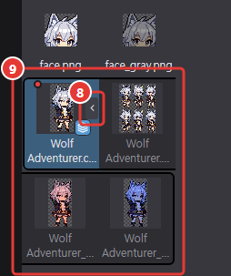
.chickxel프로젝트는 썸네일 오른쪽 아래에 ⑥ 파란 레이어 배지가 붙습니다. 프로젝트가 내보낸 파일(등록된 내보내기 결과와, 같은 폴더에서 이름이<프로젝트>.*·<프로젝트>_*·<프로젝트>@*인 그림·영상 — 프레임 시트, 부위 아틀라스, GIF 내보내기, 미리보기의 프레임 저장 등)은 따로 칸이 아니라 프로젝트 칸에 묶입니다. 여러 프로젝트 이름에 맞는 파일은 가장 긴 이름의 프로젝트에 묶입니다. 마우스를 올리면 묶인 파일 이름이 보입니다.- 묶인 파일이 있으면 프로젝트 칸 오른쪽에 ⑧ 작은 화살표가 보입니다. 누르거나 프로젝트(또는 묶음 안 파일)를 고르고 Ctrl+→(macOS ⌘+→)를 누르면 펼치고, 다시 누르거나 Ctrl+←를 누르면 접습니다(묶음 안 파일을 고른 채 접으면 프로젝트가 골라짐). 펼친 파일은 프로젝트 바로 뒤에 이어지고, ⑨ 프로젝트와 딸린 파일이 검은 테두리 띠 하나로 묶여 보입니다. 마우스를 올리거나 골라도 테두리는 남고, 줄이 넘어가면 줄 끝이 열려 있어 다음 줄로 이어짐이 보입니다.
- 펼친 상태는 앱을 끌 때까지 프로젝트마다 기억합니다. 묶음 안 파일도 다른 파일처럼 열기·고르기·끌기·이름 바꾸기·삭제가 되고, 지우면 그 파일만 지워집니다.
- ③ 검색 칸은 입력할 때마다 목록을 거릅니다. 파일 이름(대소문자 무시)에서 찾고, 폴더 경로나 파일 내용은 찾지 않습니다. 묶음 안 파일이 맞으면 프로젝트가 펼쳐진 채 맞는 파일만 보입니다(프로젝트 이름이 맞으면 묶인 파일 모두).
새 파일과 새 폴더
⑤ 제목 줄 오른쪽 아이콘 셋은 새 픽셀 파일, 새 폴더, 새로 고침입니다.
새 픽셀 파일은 새 프로젝트 창을 엽니다. 파일 이름(처음 new_sprite), 가로·세로(1~16384px, 16×16~256×256 바로 고르기), 배경 투명(켬), 일반(레이어 1) 또는 부위로 시작(그룹 + 첫 부위)을 정하고, 클립보드에 그림이 있으면 그 그림을 붙여 넣어 시작할 수도 있습니다. 확인하면 고른 폴더에 .chickxel로 저장해 엽니다. 같은 이름 파일이 있으면 덮어쓰지 않고 알려 줍니다.
고르기와 끌어 놓기
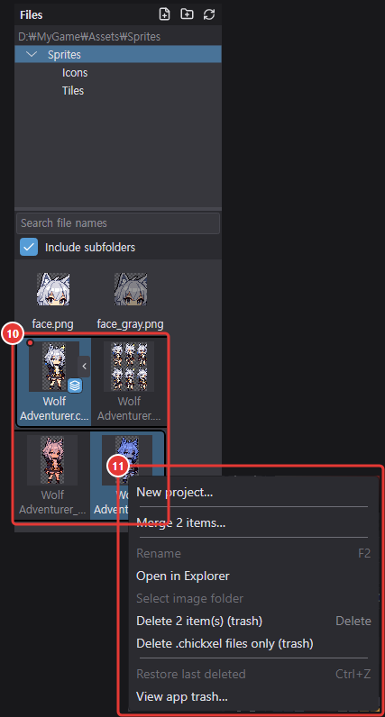
- 그냥 클릭하면 하나만 골라 엽니다. Ctrl+클릭(하나씩 더하고 빼기), Shift+클릭(범위), 목록 위를 끌어 사각형으로 ⑩ 여러 개를 고를 수 있습니다(여럿을 고를 때는 열지 않음).
- Ctrl(macOS ⌘)를 누른 채 사각형을 끌면 지금 선택에 더합니다. 목록 위아래 끝 밖으로 끌면 목록이 스크롤됩니다.
- 파일 칸을 눌러 목록 왼쪽·오른쪽 밖으로 끌면 파일 끌어 놓기가 됩니다(이미 고른 칸이면 고른 파일 모두). 캔버스에 놓으면 새 레이어로 들어가고, 탐색기·Finder나 다른 앱에 놓으면 파일이 복사됩니다.
우클릭 메뉴
⑪ 파일을 우클릭하면 고른 파일에 맞는 메뉴가 뜹니다. 빈 곳을 우클릭하면 선택이 풀리고 지금 폴더에 대한 메뉴가 됩니다.
| 항목 | 하는 일 |
|---|---|
| 새 프로젝트… | 지금 폴더에 새 .chickxel을 만듭니다(새 픽셀 파일과 같은 창). |
| AI 그림 픽셀로 정리… | PNG·JPG·BMP·GIF·WebP 파일 하나를 골랐을 때만 보입니다. 그 그림으로 픽셀로 정리 창을 엽니다. |
| 합치기… | .chickxel·PNG를 2개 이상 고르면 켜집니다. 아래 합치기를 보세요. |
| 이름 바꾸기 | 파일 하나를 골랐을 때 켜집니다(F2). 아래 이름 바꾸기를 보세요. |
| 탐색기/Finder에서 열기 | 고른 파일(없으면 지금 폴더)을 운영체제 파일 관리자에서 보여 줍니다. |
| 이미지 폴더 선택 | 하위 폴더 포함으로 보던 파일이 실제로 든 폴더를 트리에서 찾아 엽니다. |
| 삭제(휴지통) | 고른 파일을 앱 휴지통으로 보냅니다(Delete, macOS ⌘+Backspace). |
| .chickxel 파일만 삭제(휴지통) | 프로젝트를 골랐고 보통 삭제가 내보낸 PNG·.meta까지 지울 때만 보입니다. 프로젝트 파일만 보내고 내보낸 파일은 남깁니다. |
| 마지막 삭제 되살리기 | 휴지통에 항목이 있을 때 켜집니다(Ctrl+Z). |
| 앱 휴지통 보기… | 앱 휴지통 창을 엽니다. |
| 상세 정보 보기… | 메뉴 맨 아래 항목입니다. 고른 항목 하나(빈 곳을 우클릭했으면 트리에서 고른 폴더)의 이름·위치·종류·파일 크기(어림 + 정확한 바이트)·만든 날짜·수정한 날짜를 읽기 전용 창에 보입니다. 그림은 픽셀 크기와 프레임 수, 영상·AVIF·HEIC는 ffmpeg가 있으면 픽셀 크기·길이·초당 프레임, .chickxel은 캔버스 크기·프레임·레이어·부위 수, 폴더는 바로 안의 파일·폴더 수와 파일 크기 합(하위 폴더 빼고)을 더합니다. 이 줄들은 "읽는 중…"으로 보이다가 채워지고, 못 읽으면 "읽을 수 없음"입니다. 값은 골라 복사할 수 있고, 여러 개를 골랐으면 꺼집니다. |
이름 바꾸기
파일 하나를 고르고 F2를 누르면 목록에서 바로 이름을 고칩니다. Enter나 다른 곳을 누르면 확정, Esc는 취소입니다. 확장자를 빼고 적으면 원래 확장자를 붙입니다. 프로젝트의 이름을 바꾸면 그 프로젝트가 내보낸 같은 이름 파일도 함께 바뀝니다. 쓸 수 없는 이름이나 이미 있는 이름이면 알려 줍니다.
저장하지 않은 변경(빨간 점)
열린 문서는 모두 캔버스 위 문서 탭에 있고, 다른 탭으로 바꿔도 저장할지 묻지 않습니다. 저장 안 한 변경이 있는 문서는 목록의 썸네일 왼쪽 위에 ⑦ 빨간 점이 붙고(탭 제목 옆에도), 이미 열린 파일을 다시 누르면 그 탭으로 갑니다. 상태 표시줄에는 "저장 안 한 파일 N개"가 보입니다.
- 점이 붙은 파일의 이름을 바꾸면 따라가고, 휴지통으로 보내면 탭은 그대로 두고 수정됨으로 표시합니다(저장하면 다시 만듦).
- 밖에서 그 파일이 바뀌면 지금 탭이면 다시 불러올지 묻고, 다른 탭이면 저장 안 한 변경이 있을 때 알리기만 합니다(없으면 그 탭을 고를 때 다시 읽음).
- 저장 안 한 문서의 탭을 닫을 때만 저장·저장 안 함·취소를 묻습니다.
합치기
.chickxel·PNG 파일을 2개 이상 고르고 우클릭 합치기…를 고르면 여러 그림을 하나의 .chickxel로 묶습니다. 다른 그림 형식과 영상은 합칠 수 없습니다. 창에서 정하는 것:
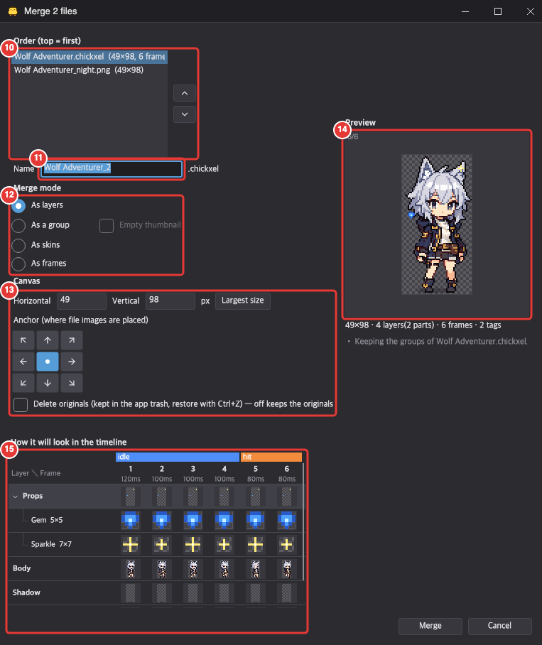
- ⑫ 순서: 처음에는 고른 순서입니다. 줄을 끌거나 위/아래 단추로 바꿉니다(위 = 먼저). 줄마다 크기와 프레임 수가 보입니다.
- ⑬ 이름: 파일 이름에 공통인 단어로 자동 제안합니다(예:
potato_growing·potato_mature→potato). 결과 파일이 이미 있으면_2·_3을 붙여 제안합니다. - ⑭ 방식: 아래 표 참고(처음 = 레이어로). 그룹으로일 때는 빈 대표 이미지를 켜서 부위를 숨긴 채 만들 수 있습니다.
- ⑮ 캔버스 크기(처음 = 고른 파일 중 가장 큰 가로·세로, 1~16384px, 가장 큰 크기로 되돌림), 기준점(9방향), 원본 삭제(처음 끔, 켜면 원본을 앱 휴지통으로).
| 방식 | 결과 |
|---|---|
| 레이어로 | 파일마다 레이어 하나(첫 파일이 맨 위) |
| 그룹으로 | 그룹 하나에 파일마다 부위(파일 크기 그대로) |
| 스킨으로 | 한 그룹 안에서 파일마다 스킨(스킨 이름 = 파일 이름). 같은 자리에 바꿔 끼우는 타일·아이템 변형용 |
| 프레임으로 | 파일 순서대로 프레임을 이어 붙임 |
⑯ 미리보기(여러 프레임이면 재생)와 함께 ⑰ "타임라인에서는 이렇게 보입니다"에 결과의 타임라인 모양이 나오고, 무엇을 어떻게 유지하는지 안내도 보입니다. .chickxel의 레이어·그룹·스킨·효과·태그 같은 구조는 어느 방식이든 버리지 않고 옮깁니다. 결과는 첫 파일 폴더에 <이름>.chickxel로 저장되고 바로 열립니다. 결과 파일 이름이 다른 파일과 겹치면 합치지 않고 알려 줍니다(원본 삭제를 켰다면 원본과 같은 이름은 원본을 휴지통으로 보낸 뒤 씀).
삭제와 앱 휴지통
- 삭제(Delete, 여러 개 가능)와 합치기로 지운 원본은 묻지 않고 앱 자체 휴지통에 보관됩니다(딸린 PNG·
.meta포함). - 파일 목록에서 Ctrl+Z를 누르면 마지막 삭제를 원래 자리에 되살립니다.
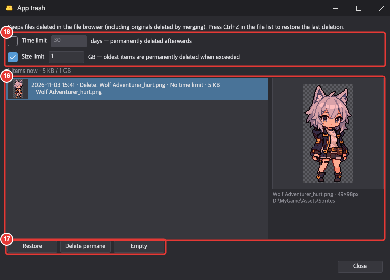
- 우클릭 앱 휴지통 보기…에서 ⑱ 지운 때·설명·남은 날·크기와 미리보기(크기, 원래 폴더)를 보며 ⑲ 되살리기(더블클릭)·영구 삭제·비우기를 합니다. 여러 항목을 함께 고를 수 있고, 영구 삭제와 비우기는 확인을 받습니다. 원래 자리에 같은 이름 파일이 있으면 되살리지 않습니다.
- ⑳ 보관 정책: 기간 제한(처음 꺼짐, 켜면 1~3650일 중 정한 날이 지난 항목을 영구 삭제, 처음 30일), 용량 제한(처음 켜짐 1GB, 0.1~1000GB, 넘치면 오래된 것부터 삭제). 휴지통 창이나 편집 > 환경 설정…에서 바꿉니다.
팔레트
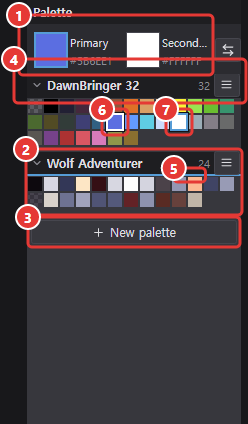
색 패널 위쪽입니다. 맨 위에 ① 기본색/보조색 칸이 있고, 그 아래로 ② 팔레트를 여러 개 쌓아 둘 수 있습니다(처음에는 DawnBringer 32 하나). 맨 아래 ③ 새 팔레트로 빈 팔레트를 더합니다. 팔레트가 많아 넘치면 팔레트 부분만 스크롤됩니다.
기본색과 보조색
① 기본색은 왼쪽 버튼, 보조색은 오른쪽 버튼으로 칠하는 색입니다(보조색 처음 값은 투명). 두 칸 중 하나를 누르면 그 칸이 강조되고 아래 색 고르기가 그 색을 고칩니다. 옆의 바꾸기 단추나 X는 두 색을 맞바꿉니다.
팔레트 쌓기와 활성 팔레트
- ④ 팔레트마다 머리글에 접기 화살표, 이름(두 번 눌러 바꾸기), 색 수, 메뉴 단추가 있습니다.
- 머리글을 우클릭해도 그 팔레트의 메뉴가 열립니다. 하나뿐인 팔레트는 지울 수 없고, 색이 든 팔레트를 지울 때는 확인을 받습니다.
- 마지막으로 누르거나 고친 팔레트가 활성 팔레트(⑤ 머리글 아래 파란 줄)입니다. 편집 메뉴의 팔레트 기능과 AI 팔레트 도구는 활성 팔레트를 씁니다.
- 팔레트 목록(이름·색·접힘·순서)은 설정에 저장되어 다음에도 그대로입니다.
색 칸 고르기
- 색 칸을 누르면 기본색, 우클릭하면 보조색이 됩니다(위에서 어느 칸을 강조했는지와 상관없음). 마우스를 올리면 HEX 값이 보입니다.
- 기본색과 같은 칸은 ⑥ 흰 테두리, 보조색과 같은 칸은 ⑦ 파란 테두리로 표시됩니다. 투명 칸은 첫 팔레트 맨 앞에만 있습니다.
- 같은 칸이 기본색이자 보조색이면 테두리가 흰색·파란색 반반입니다. 같은 색이 여러 칸에 있으면 앞 칸에 표시합니다.
- 색 칸을 끌어 순서를 바꾸거나 칸에서 바로 지우지는 않습니다. 지울 때는 그 색을 기본색으로 고른 뒤 메뉴의 기본색을 팔레트에서 삭제를 고릅니다.
팔레트 메뉴
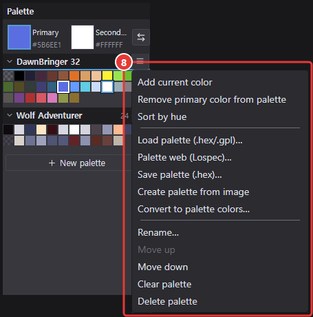
⑧ 메뉴의 동작은 그 팔레트에 적용되고, 바꾼 내용은 실행취소할 수 있습니다.
| 항목 | 하는 일 |
|---|---|
| 현재 색 추가 | 지금 고치는 칸(기본색 또는 보조색)의 색을 끝에 더합니다. 이미 있는 색과 투명은 더하지 않습니다. |
| 기본색을 팔레트에서 삭제 | 기본색과 같은 첫 칸을 지웁니다. |
| 색상 순으로 정렬 | 색상(15° 단위) 순으로, 같은 색상 안에서는 밝기 순으로 정렬합니다. 채도가 아주 낮은 회색은 맨 뒤에 모읍니다. |
| 팔레트 불러오기(.hex/.gpl)… | .hex(줄마다 6자리 RGB 또는 8자리 RGBA)나 GIMP .gpl 파일의 색으로 팔레트를 바꿉니다(더하지 않음). |
| 팔레트 웹(Lospec)… | Lospec 팔레트 목록 창을 엽니다. 아래 팔레트 웹(Lospec)을 보세요. |
| 팔레트 저장(.hex)… | 팔레트를 .hex 파일로 저장합니다(알파가 있으면 8자리). |
| 이미지에서 팔레트 만들기 | 모든 프레임의 보이는 그림(캔버스 밖 부위 포함)에 쓰인 색을 많이 쓰인 순으로 최대 256개 모아 팔레트를 바꿉니다. 팔레트가 비어 있지 않으면 먼저 묻습니다. |
| 팔레트 색으로 변환… | 그림의 색을 이 팔레트 색으로 바꿉니다. 아래 팔레트 색으로 변환을 보세요. |
| 이름 바꾸기… | 이름을 바꿉니다(머리글 이름을 두 번 눌러도 됨). |
| 위로 | 팔레트를 한 칸 위로 옮깁니다. |
| 아래로 | 팔레트를 한 칸 아래로 옮깁니다. |
| 팔레트 비우기 | 색을 모두 지웁니다. |
| 팔레트 삭제 | 팔레트를 지웁니다. |
팔레트 색으로 변환
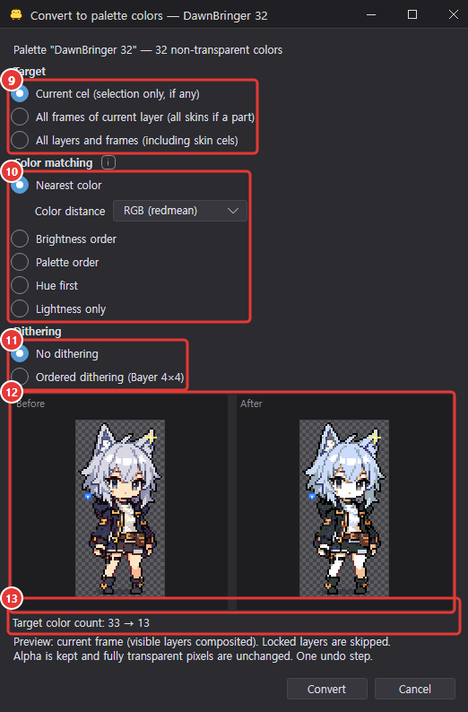
그림의 색을 팔레트 색으로 바꿉니다. ⑨ 대상은 현재 셀(선택 영역이 있으면 그 안만), 현재 레이어의 모든 프레임, 모든 레이어·프레임(잠긴 레이어는 건너뜀) 중에서 고르고, ⑩ 색 고르는 규칙으로 그림의 색마다 어느 팔레트 색이 될지 정합니다(마지막에 쓴 규칙을 기억). ⑪ 디더링은 디더링 없음(기본) 또는 순서 디더링(Bayer 4×4)이고 어느 규칙에서나 쓸 수 있습니다. ⑫ 전·후 미리보기와 ⑬ 색 수 변화를 보여 주며, 알파는 그대로 두고 완전 투명 픽셀은 건드리지 않습니다. 실행취소 한 단계입니다.
| 규칙 | 고르는 색 |
|---|---|
| 가장 가까운 색 | 색 거리로 가장 비슷한 팔레트 색. 바로 아래 색 거리에서 RGB(redmean)(예전 방식)·OKLab·CIEDE2000을 고르며, OKLab·CIEDE2000이 눈에 보이는 차이에 더 가깝습니다. |
| 밝기 순서 | 그림의 서로 다른 색을 밝기로 줄 세워, 그 순위 비율대로 밝기순으로 놓은 팔레트 색에 고르게 맞춥니다. 가장 어두운 색은 가장 어두운 팔레트 색, 가장 밝은 색은 가장 밝은 팔레트 색이 되어 색상이 전혀 달라도 명암이 남습니다. |
| 팔레트 순서 | 밝기 순서와 같은 방식으로 줄 세워 팔레트에 놓인 차례(첫 색 = 가장 어두운 자리)에 맞춥니다. 명암 줄을 직접 늘어놓은 팔레트에 맞습니다. |
| 색상 먼저 | 색상이 가장 가까운 팔레트 색들 중에서 밝기가 가장 가까운 색. 회색에 가까운 흐린 색은 회색 팔레트 색 중에서 밝기로 고릅니다(회색은 회색끼리). |
| 밝기만 | 색상은 보지 않고 밝기가 가장 가까운 색. 흑백이나 4색 게임보이풍 팔레트에 맞습니다. |
밝기 순서와 팔레트 순서는 대상에 드는 모든 셀의 색을 함께 줄 세우므로 프레임마다 같은 색이 같은 팔레트 색이 됩니다.
디더링을 켜면 규칙이 고른 두 색(원래 밝기나 순위 자리를 사이에 두는 두 색)을 무늬로 섞습니다. 가장 가까운 색 규칙에서는 두 팔레트 색을 빛의 세기(선형광)로 섞은 색을 OKLab로 원본과 견줘 비율을 정하고(예: 검정·흰색 반반 무늬는 sRGB 188 회색), 섞은 색이 가장 가까운 한 색보다 무늬가 눈에 띄는 정도(밝기 차는 크게, 색조·채도 차는 절반만 셈)를 더해도 원본에 가까울 때만 씁니다. 팔레트 색과 겨우 알아볼 차이(OKLab 0.02) 안인 색은 디더하지 않습니다.
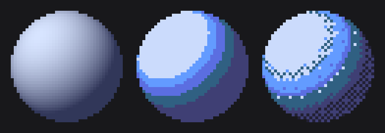
디더링이 없으면 가까운 색끼리 띠가 생기고, 순서 디더링은 두 색을 무늬로 섞어 그 사이 밝기를 냅니다. 팔레트에 이미 있는 색은 디더링을 켜도 그대로입니다.
팔레트 웹(Lospec)
lospec.com 팔레트 목록을 앱 안에서 둘러봅니다(인터넷 필요).
- 정렬(인기·다운로드순·최신·이름순), 색 수, 태그(예:
gameboy,pico8)로 거릅니다. 태그 칸에 팔레트 이름을 넣으면 그 팔레트를 맨 위에 보여 줍니다. - 색 수는 전체·최대·최소·정확히와 1~256 숫자로 거릅니다. 목록 끝까지 내리거나 더 보기를 누르면 다음 목록을 불러옵니다. 창은 하나만 열리고, 다른 팔레트의 메뉴에서 다시 열면 팔레트로 쓰기·현재 팔레트에 추가가 마지막으로 연 팔레트에 적용됩니다.
- 팔레트를 고르면 색과 함께 그 팔레트로 그린 예시 그림이 보입니다.
- 팔레트로 쓰기(지금 팔레트를 바꿈, 더블클릭과 같음), 현재 팔레트에 추가(겹치는 색 제외), .hex로 저장, Lospec에서 보기.
- 즐겨찾기: 목록 줄 오른쪽이나 고른 팔레트 이름 옆의 별을 누르면 넣고 뺍니다. 즐겨찾기한 팔레트는 정보와 예시 그림까지 이 컴퓨터(
<설정 폴더>/Chickxel/Lospec)에 남습니다. - 정렬에서 즐겨찾기를 고르면 즐겨찾기만 최근에 넣은 것부터 보입니다(인터넷 필요 없음). 색 수와 태그/이름 칸으로 거를 수 있습니다. 인터넷에 연결하지 못하면 오류 옆 즐겨찾기 보기로 넘어갑니다.
- 마지막으로 고른 정렬은 다음에 창을 열 때도 그대로입니다.
팔레트 저작권은 각 작성자에게 있습니다.
색 고르기
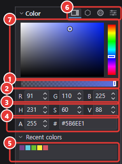
팔레트 아래의 색 고르기는 지금 고치는 색(기본색 또는 보조색)을 바꿉니다. ① 알파 막대, ② RGB·③ HSV·④ 알파(A)·HEX 입력, ⑤ 최근 색이 있고, "색" 머리글 오른쪽 ⑥ 탭으로 고르는 방식을 바꿉니다(설정에 기억). 맨 아래에는 지금 레이어에 쓰인 색을 모은 레이어 색이 있습니다.
고르는 방식
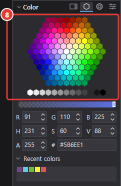
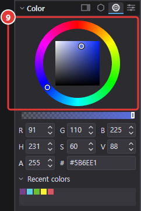
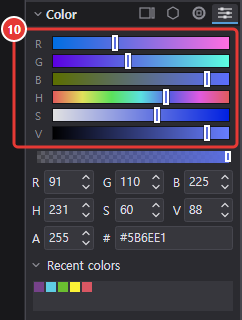
| 방식 | 모양 |
|---|---|
| ⑦ 사각형(기본) | 채도·명도 상자 + 세로 색상 막대 |
| ⑧ 벌집 | 육각형 칸 127개. 가운데 흰색에서 바깥으로 갈수록 진하고 어두운 색, 아래에 회색 13칸 |
| ⑨ 색상환 | 바깥 고리 = 색상, 안쪽 사각형 = 채도·명도 |
| ⑩ 슬라이더 | R·G·B·H·S·V 막대 |
어느 방식이든 지금 고르는 색(기본색 또는 보조색)을 바꿉니다.
입력 칸
- R·G·B·A는 0~255, H는 0~360°, S·V는 0~100%입니다. 알파 막대와 HSV·슬라이더·벌집으로 바꿀 때는 지금 알파를 그대로 둡니다.
- HEX 칸은
#RGB,#RGBA,#RRGGBB,#RRGGBBAA(앞의#나0x는 빼도 됨)를 받습니다. 8자리면 마지막 두 자리가 알파입니다. - Enter를 누르거나 다른 곳으로 옮기면 확정되고, 잘못 적은 값은 원래 값으로 돌아갑니다.
최근 색
⑤ 최근 색은 실제로 칠하기를 마친 색을 최근 것부터 16개까지 모읍니다(같은 색은 한 번만). 지우개·밝게/어둡게·그라데이션·그라데이션 연필로 칠한 색과 투명은 넣지 않습니다. 누르면 기본색, 우클릭하면 보조색이 되며 다음 실행에도 남습니다.
접기
"색" 머리글과 ⑤ "최근 색" 글 왼쪽의 꺾쇠를 누르면 따로따로 접고 펼칩니다(레이어 색과 같은 방식). "색"을 접으면 고르기 칸·알파 막대·입력 칸이 숨고 머리글(⑥ 방식 탭 포함)과 최근 색은 남으며, 줄어든 만큼 위 팔레트 칸이 넓어집니다. 접은 상태는 다음 실행에도 남습니다. 다른 창의 색 고르기 팝업은 접히지 않습니다.
레이어 색
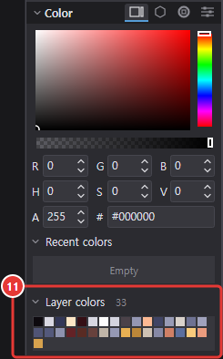
⑪ 레이어 색은 지금 고른 레이어의 모든 프레임에 쓰인 색을 많이 쓰인 순으로 보여 줍니다(투명 제외). 머리글 옆 숫자는 색 수입니다.
- 칸을 누르면 기본색, 우클릭하면 보조색이 됩니다. 색이 다섯 줄을 넘으면 목록이 스크롤되고, 최대 1024색까지 보입니다. 더 많으면 머리글에 "보이는 수 / 전체 수"가 적힙니다.
- 머리글을 누르면 접고 펼칩니다. 접혀 있는 동안에는 색을 세지 않으며, 접은 상태는 다음 실행에도 남습니다. 그림을 고치거나 레이어·프레임을 바꾸면 잠깐 뒤에 다시 셉니다.
다른 창의 색 고르기
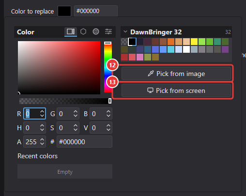
효과 설정이나 색 바꾸기 창처럼 다른 창에서 색 칸을 누르면 같은 네 방식의 색 고르기 팝업이 뜹니다(고른 방식은 색 패널과 같이 기억). 팝업 오른쪽에는 팔레트가 있고, 그 아래 두 단추로 그림이나 화면에서 색을 집습니다. 두 단추는 캔버스의 스포이드 도구 설정을 따르지 않습니다.
- ⑫ 그림에서 집기: 현재 프레임을 합친 그림을 따로 창에 크게 띄우고, 그 창에서 누른 픽셀의 색을 집습니다(아래 그림). 열린 문서가 없으면 이 단추는 보이지 않습니다.
- ⑬ 화면에서 집기: 누른 순간의 모든 모니터 화면을 찍어 화면 전체를 덮고, 그 위에서 누른 곳의 색을 집습니다. 다른 앱 창의 색도 집을 수 있습니다. 위쪽에 안내가 보이고, 커서 옆 돋보기(11×11 픽셀)와 HEX로 집을 색을 확인합니다. Esc·우클릭·다른 앱으로 전환하면 집지 않고 그만둡니다. 화면을 덮으면 색 팝업은 닫히고, 집은 색은 그 색 칸에 들어갑니다.
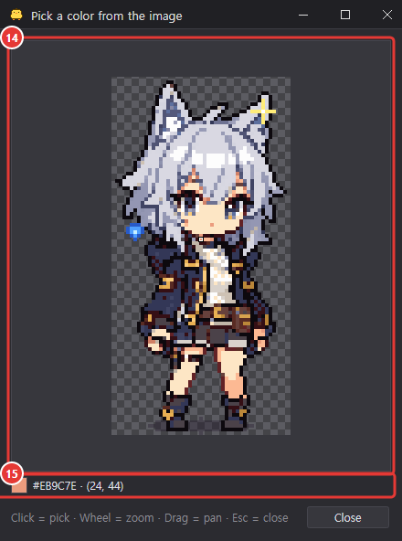
그림에서 색 집기 창은 ⑭ 그림을 정수 배율로 크게 보여 주고(투명한 곳은 체커), 창 크기를 바꿀 수 있습니다. 그림 위에서 휠은 커서 자리를 기준으로 확대·축소, 끌기는 이동이고, 끌지 않고 누르면 그 픽셀의 색을 집고 창이 닫힙니다(투명한 곳은 집지 않음). ⑮ 아래 줄에는 마우스를 올린 픽셀의 색과 #RRGGBB · (x, y)가 보입니다. Esc나 닫기 단추는 색을 집지 않고 닫습니다.
캔버스
캔버스는 현재 프레임 한 장(보이는 레이어를 합친 모습)을 보여 주고, 도구로 현재 레이어의 셀에 그립니다. 확대·이동, 격자·피벗 같은 보기 표시, 부위 편집 화면을 이 쪽에서 설명합니다.
확대와 이동
| 조작 | 결과 |
|---|---|
| 마우스 휠 | 커서 아래 지점을 중심으로 확대·축소합니다(1~64배, 위 막대의 빼기·더하기 단추와 같은 단계). |
| Ctrl(macOS ⌘)+휠 | 확대 대신 브러시 크기를 바꿉니다. |
| Space+끌기, 가운데 버튼 끌기 | 화면을 옮깁니다. Space를 누르는 동안 커서가 손 모양이 됩니다. |
| Ctrl+= · Ctrl+- · Ctrl+0 · Ctrl+1 | 확대 · 축소 · 화면에 맞추기 · 실제 크기(1배). 확대율 상자는 메뉴와 위 막대를 보세요. |
| H 누르고 있기 | 누르고 있는 동안 이전 프레임을 보여 주고 왼쪽 위에 "이전 프레임 N 보는 중"이 뜹니다(첫 프레임이면 "이전 프레임이 없습니다"). 떼면 돌아갑니다. |
부위와 그룹 편집
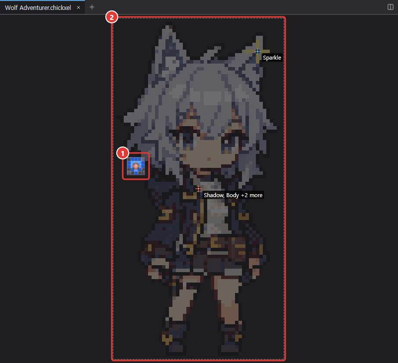
부위 레이어를 고르면 ① 그 부위만 자기 크기로 체커 위에 보이고, ② 프레임의 나머지는 반투명하게 비치며 프레임 경계는 점선으로 보여 위치를 맞춰 그릴 수 있습니다. 그룹 레이어를 고르면 부위마다 테두리가 보이고 부위를 끌어 배치합니다(부위(그룹) 레이어 참고). 부위에 9-slice 테두리가 있으면 점선 안내선으로 보입니다.
보기 표시
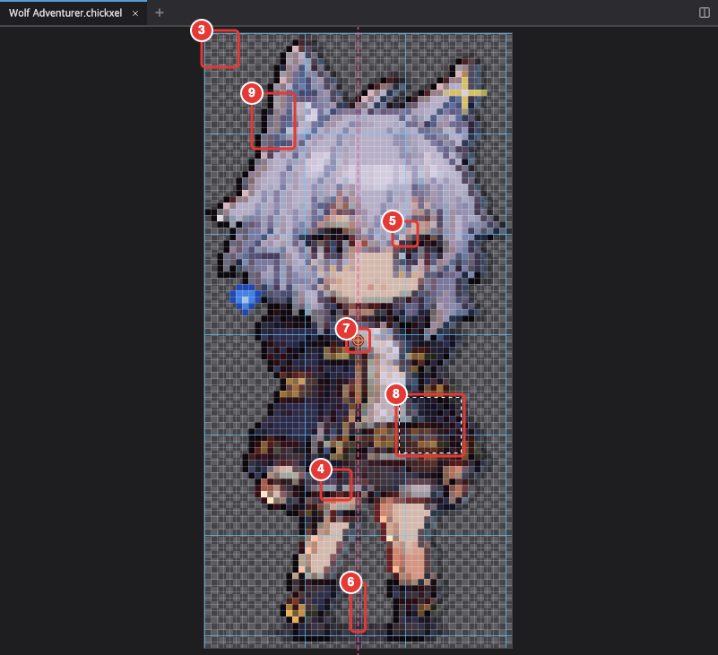
아래 표시는 보기 옵션으로 켜고 끄며 그림에는 들어가지 않습니다.
| 표시 | 보이는 것 |
|---|---|
| ③ 체커 배경 | 투명한 곳을 회색 체커로 보여 줍니다. |
| ④ 픽셀 격자 | 픽셀 경계. 정한 배율 이상에서만 보입니다. |
| ⑤ 타일 격자 | 타일 크기마다 선(처음 16×16, 하늘색). |
| ⑥ 대칭 안내선 | 대칭 그리기를 켰을 때만 보이는 축입니다. 축은 캔버스 가운데, 대칭: 피벗 기준이면 피벗입니다. 브러시 커서 외곽선이 반대쪽에도 흐리게 보입니다. |
| ⑦ 피벗 | 회전·배치의 기준점. 피벗 보기를 켜면 지금 레이어의 피벗(캔버스 칩 글자를 눌러 캔버스 피벗을 고칠 때는 캔버스 피벗)은 큰 표시(원과 십자, 피벗 도구에서는 흰색, 그 밖에는 주황)로, 보이는 다른 레이어와 캔버스의 지금 프레임 피벗은 작은 점과 이름표로 보입니다. 부위는 파란 점, 일반 레이어·그룹·캔버스는 주황 점입니다. 화면에서 같은 자리에 있는 피벗은 이름표 하나에 이름을 묶고, 넷 이상이면 앞 두 이름 뒤에 외 N개를 붙입니다. 캔버스 피벗은 캔버스로 적히고, 대표 레이어가 있으면 따로 그리지 않고 그 레이어 이름 뒤에 (캔버스)를 붙입니다. 피벗 보기를 꺼도 피벗 도구에서는 고치는 피벗과 그룹 화면의 부위 피벗이 보입니다. 피벗 도구에서 효과가 피벗을 옮기면 원래 자리가 점선으로 함께 보입니다. |
| ⑧ 선택 영역 | 선택 도구로 고른 범위의 점선 테두리. |
| ⑨ 양파 껍질 | 앞뒤 프레임을 반투명하게 겹친 모습. |
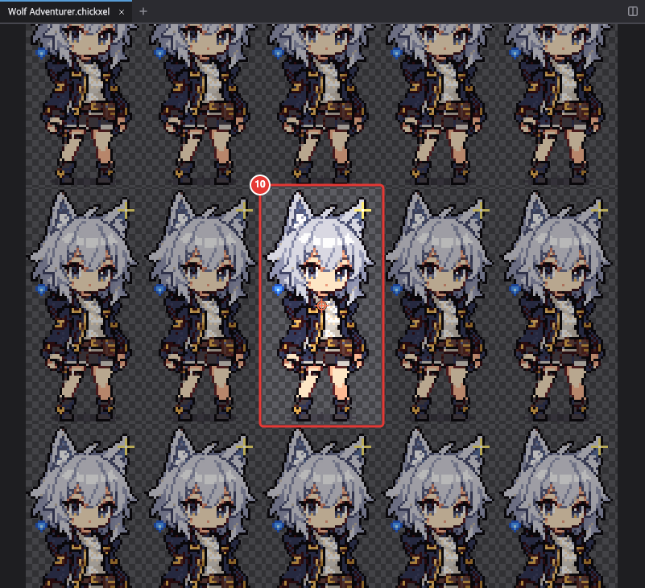
⑩ 타일 모드에서는 가운데 칸이 편집하는 그림이고 둘레는 그 사본입니다. 둘레를 어둡게 할지, 몇 칸 반복할지는 타일 모드 단추를 우클릭해 정합니다.
편집 중에만 보이는 것
- 숨긴 일반 레이어를 고르면 그 레이어가 캔버스에만 반투명하게 보여 계속 그릴 수 있습니다. 미리보기·내보내기에는 나오지 않습니다.
- 이동 도구를 쓰는 동안 캔버스 밖으로 밀려난 그림이 흐리게 보입니다(이동).
- 현재 레이어가 잠겨 있으면 왼쪽 아래에 "현재 레이어가 잠겨 있어 그릴 수 없습니다"가 보입니다.
- 브러시 도구는 커서 자리에 브러시 모양(사각·원·마름모)의 외곽선을 보입니다.
효과 계산
효과가 무거운 큰 그림이나 프레임이 많은 그림에서도 효과를 계산하는 동안 창이 멈추지 않습니다. 한 프레임 계산이 오래 걸리면 캔버스에 회색 반투명 덮개가 씌워지고 그 밑에 계산 중간 결과가 차례로 보이며, 그림 영역 오른쪽 위에 로딩 아이콘과 진행 막대가 나옵니다. 계산이 끝나면 덮개가 한 번에 걷힙니다. 그리는 중에 계산이 밀리면 새로 그은 선은 효과 없이 바로 보이고 효과는 뒤따라 입혀집니다. 가벼운 그림은 덮개 없이 바로 바뀝니다.
편집 캔버스에서 효과를 빼고 보려면 위 막대의 효과 단추를 끕니다.
문서 탭과 나누기
캔버스 위 탭 줄에는 열린 문서마다 탭이 하나씩 있습니다. 탭을 눌러 문서를 바꾸고, 탭을 옮겨 캔버스를 좌우 두 칸으로 나눠 두 문서를 나란히 볼 수 있습니다.
탭 열기·고르기·닫기
- 캔버스 위 탭 줄에 열린 문서마다 탭이 하나씩 있습니다(① 제목 = 파일 이름, 저장 안 한 변경이면 ② 빨간 점, 마우스를 올리면 ③ 전체 경로). 파일 브라우저에서 파일을 누르면 새 탭으로 열리고, 이미 열려 있으면(다른 칸에 있어도) 새로 열지 않고 그 탭으로 가며 그 칸에 포커스가 갑니다 — 한 문서는 한 탭에서만 엽니다. 열기·최근 파일·새 프로젝트·AI 도구도 새 탭으로 엽니다.
- 탭을 누르면 그 문서로 바뀌고 타임라인·미리보기·레이어·실행취소(문서마다 따로)·창 제목·상태 표시줄이 따라갑니다. 확대율·위치·현재 프레임·레이어·선택 영역은 탭마다 기억합니다.
- 닫기: 탭의 ④ X, 가운데 클릭, Ctrl+W. 줄 끝 ⑤ +는 새 프로젝트를 새 탭에 만듭니다.
- 지금 탭을 닫으면 오른쪽 탭이, 없으면 왼쪽 탭이 골라집니다. X나 가운데 클릭으로 닫으면 마우스가 탭 줄 안에 있는 동안 다음 탭(맨 끝을 닫았으면 앞 탭)의 X가 같은 자리에 와서, 한곳을 계속 눌러 여러 탭을 닫을 수 있습니다. 그동안 그 탭은 너비가 고정되어 제목이 줄임표로 줄거나 빈 칸이 생기고, 마우스가 탭 줄을 나가면 원래 너비로 돌아갑니다. 탭이 많아 줄을 넘치면 탭 줄 위에서 휠을 굴려 옆으로 넘깁니다.
- 모든 탭을 닫으면 탭 줄 아래에 시작 화면이 뜹니다. 탭 줄에는 +만 남아 새 프로젝트를 새 탭으로 만들 수 있습니다.
탭 메뉴와 탭 차례
- 탭을 좌우로 끌면 순서가 바뀝니다. Ctrl+Tab / Ctrl+Shift+Tab은 포커스된 칸의 탭만 돌아가며 고르고 미리보기 탭은 건너뜁니다. ⑥ 탭을 우클릭하면 닫기, 다른 탭 닫기(그 칸에 탭이 하나면 꺼짐), 다른 쪽으로 옮기기가 있습니다.
- 저장한 적 없는 새 프로젝트 탭을 우클릭하면 맨 위에 임시 제목…이 있습니다. 적은 이름은 탭과 창 제목에 새 프로젝트 대신 보이고, 처음 저장할 때 파일 이름으로 미리 들어갑니다(저장). 파일에는 쓰지 않고 실행취소 대상도 아니며, 비우고 확인하면 지워집니다. 저장했거나 파일에서 연 문서에는 이 항목이 없습니다.
화면 나누기
- 다른 쪽으로 옮기기(탭 우클릭, ⑦ 탭 줄 오른쪽 끝 옮기기 단추, 보기 메뉴)를 고르거나 탭을 캔버스 오른쪽 부분(오른쪽 40%)에 끌어 놓으면 그 탭이 ⑧ 오른쪽 칸으로 옮겨 가며 캔버스가 좌우 두 칸으로 나뉩니다. 끄는 동안 놓을 자리가 강조되고 "놓으면 오른쪽 칸으로 옮김"이 보입니다. 이미 나뉘어 있으면 다른 칸 어디에나 놓아 옮깁니다.
- 두 칸 사이 경계선을 끌어 폭을 나눕니다(새로 나누면 반반). 각 칸에는 탭 줄이 따로 있습니다.
- 포커스된 칸(⑨ 탭 줄 아래 강조색 선)의 문서가 타임라인·미리보기·패널의 대상입니다. 다른 칸을 누르면 그쪽으로 포커스가 옮겨 갑니다. 한쪽의 마지막 탭을 닫으면 나눔이 풀립니다.
- 나눈 화면에서 한쪽의 마지막 탭도 다른 쪽으로 끌거나 '다른 쪽으로 옮기기'로 옮길 수 있습니다. 빈 쪽이 사라지며 한 화면으로 합쳐집니다. 한 화면의 문서 탭 하나만 남았다면 옮길 수 없습니다.
미리보기 탭
미리보기 제목 줄의 ⑩ 단추를 누르면 편집 중인 그림을 다른 쪽의 미리보기 탭으로 엽니다.
미리보기 제목 줄의 '탭으로 열기'는 미리보기를 처음에는 편집하지 않는 쪽(보통 오른쪽)의 초록빛 탭에 엽니다(한 화면이면 화면을 나눔). 현재 편집 중인 문서를 미리보기와 같은 재생·배경·착장으로 보여 줍니다. 휠로 확대, 끌어서 이동, 더블클릭으로 맞춤, 우클릭은 미리보기 메뉴입니다. 탭은 하나만 열리며 다시 누르면 그 탭으로 갑니다. 열면 크게 보기 창은 닫히고 미리보기 그림을 눌러도 탭이 앞으로 옵니다. 이후 보통 탭처럼 옮기거나 합칠 수 있지만 편집 대상은 늘 다른 문서 탭입니다. 탭 우클릭에는 닫기·다른 쪽으로 옮기기만 있고 다음 실행 때 다시 열지 않습니다. 문서 탭을 모두 닫으면 미리보기 탭도 닫습니다. 미리보기와 도구 설정 사이 막대를 끌어 높이를 나눌 수 있고 그 높이는 다음 실행에도 남습니다.
다음 실행 때 다시 열기
앱을 끝낼 때 열려 있던 탭을 나눔·순서·칸마다 고른 탭·포커스된 칸까지 다음에 켤 때 다시 엽니다. 없어진 파일, 읽을 수 없는 파일, 저장한 적 없는 새 문서와 미리보기 탭은 빼고 엽니다.
타임라인
화면 아래의 타임라인에서 행은 레이어, 열은 프레임, 칸 하나는 셀입니다. 맨 위 띠에는 태그가 보입니다. 누른 프레임·레이어가 캔버스에 보이는 현재 프레임·현재 레이어가 됩니다. 고르는 법은 타임라인에서 고르기, 옮기기·복사는 타임라인 편집을 보세요.
레이어 행
레이어 행: ① 눈(보이기)·② 자물쇠(잠금) 아이콘과 이름이 있습니다. 불투명도가 100%가 아니면 이름 뒤에 ③ 퍼센트가 붙습니다. 그룹은 ④ 삼각형으로 접고 펼치며, ⑤ 부위는 그 아래 들여쓰기로 보입니다(부위 이름 옆에 크기).
눈을 Alt+클릭하면 그 레이어만 남기고 나머지를 모두 숨기고, 자물쇠를 Alt+클릭하면 나머지를 모두 잠급니다(그룹을 누르면 그 부위들, 부위를 누르면 그 그룹도 함께 남김). 이미 그 상태에서 다시 Alt+클릭하면 모든 레이어를 보이기·풀기로 되돌립니다. 각각 실행취소 한 단계입니다.
효과가 있는 레이어에는 fx 표시가 붙고, 누르면 그 아래 효과 줄을 펼치거나 접습니다(레이어 효과). 자동 배치를 쓰는 그룹에는 마름모 표시가 붙어 누르면 자동 배치 설정이 열리고, 그룹·부위의 스킨 칩을 누르면 스킨 관리 창이 열립니다. 캔버스 피벗의 대표 레이어(피벗)는 이름 앞에 작은 왕관이 붙습니다.
프레임 열과 길이
프레임 열의 머리글에는 ⑥ 번호와 길이(ms)가 있고, 칸마다 ⑦ 썸네일이 보입니다. 썸네일은 효과 없이 고칠 그림을 보여 줍니다.
프레임 번호를 더블클릭하거나 머리글 우클릭 길이…를 고르면 프레임 길이 창이 열립니다. 1~60000ms(바로 고르기 50·80·100·120·150·200)이고, 여러 프레임을 골랐으면 한꺼번에 바뀝니다. 새 프로젝트의 프레임은 100ms이고, 새로 더한 프레임은 앞 프레임의 길이를 이어받습니다.
일반 레이어의 칸 썸네일은 모든 프레임에 칠한 픽셀 영역(캔버스 안)을 같은 배율로 잘라 크게 보여 이동을 비교할 수 있습니다. 레이어 효과 없이 고칠 그림 그대로이며 효과 여백도 넣지 않습니다. 칠한 픽셀이 없지만 글씨 효과처럼 효과가 그림을 만드는 칸만 효과를 보여 줍니다. 그룹 행은 부위 그림을 제자리에 합친 그림(효과 제외)의 부위 영역 합집합, 부위 행은 지금 부위 크기입니다. 아무것도 칠하지 않은 일반 레이어는 캔버스 전체를 보며, 그리는 중에는 이전 영역을 유지하다 그리기를 끝내면 갱신합니다. 다른 스킨의 빈 칸은 첫 스킨 그림 없이 비어 있습니다.
태그 띠·캔버스 크기 칩·재생 표시
- ⑧ 태그 띠는 색 괄호로 프레임 묶음을 보여 줍니다(태그).
- 왼쪽 위 모서리(프레임 번호 줄 왼쪽)의 캔버스 칩은 둘로 나뉩니다. 왼쪽 아이콘을 누르면 편집 > 캔버스 크기…(Ctrl+Alt+C)와 같은 캔버스 크기 모드가 열립니다. 지금 캔버스(프레임) 크기를 보여 주는 캔버스 W×H 글자(예: 캔버스 64×48, 크기를 바꾸면 바로 바뀜)를 누르면 피벗 도구가 켜지고 고치는 대상이 캔버스 피벗(시트·Unity 내보내기 피벗)이 되며, 그동안 글자 칸에 강조 테두리가 보입니다. 레이어 이름을 누르거나 다른 레이어를 고르면 다시 레이어 피벗을 고칩니다. 아이콘과 글자에는 각자 풍선 도움말이 있습니다.
- 미리보기를 재생하면 지금 보이는 프레임 열이 ⑬ 초록 외곽선으로 표시됩니다.
- 효과 계산이 오래 걸리면 다시 계산하는 프레임 칸의 썸네일 위에 회색 덮개가 씌워집니다. 무거운 그림에서 효과 상자의 범위를 끄는 동안에는 상자만 움직이고, 캔버스는 놓을 때 바뀝니다.
우클릭 메뉴
별도 도구 단추 없이 우클릭 메뉴로 다룹니다. 메뉴 맨 위에 ⑭ 고른 것(예: "프레임 1~3 선택됨")이 보입니다.
| 우클릭한 곳 | 주요 메뉴 |
|---|---|
| ⑮ 프레임 머리글 | 태그 만들기, 뒤에 빈 프레임(Alt+N), 프레임 복제(Alt+D), 삭제, 앞으로·뒤로 옮기기, 길이…, 프레임 복사(링크째)·프레임 복사 — 이미지만(링크 없이)·잘라내기·붙여넣기, 피벗을 기본값으로, 이 프레임만 피벗 따로 쓰기, 내보낼 칸 이름… |
| ⑯ 셀 | 셀 지우기, 이전 프레임 그림 복사(빈 셀 하나), 셀 복사(링크째)·셀 복사 — 이미지만(링크 없이)·셀 잘라내기, 셀 복사(효과 포함 그림), 프레임 N 화면 복사, 셀 붙여넣기, 셀 링크·셀 링크 풀기, 효과 추가…, 태그 만들기, 뒤에 빈 프레임, 프레임 복제, 길이…, 피벗·내보낼 칸 이름 |
| ⑰ 레이어 이름 | 이름 바꾸기, 불투명도…(0~255), 효과…, 효과 줄 펼치기/접기, 보이기/숨기기, 잠금/풀기, 새 레이어·새 그룹·새 부위, 복제, 위로·아래로, 아래와 병합(바로 아래가 일반 레이어일 때), 삭제, 캔버스 피벗 대표 레이어로(이미 대표 레이어면 캔버스 피벗 대표 레이어 풀기, 실행취소 한 단계). 일반 레이어는 스킨 추가 (그룹으로 바꿈), 그룹은 부위 추가·접기·자동 배치·스킨, 부위는 부위 크기·위치·이 부위 스킨·그룹 스킨 메뉴가 더 있습니다(부위 장). |
| ⑱ 빈 곳(왼쪽 위 칸 등) | 새 레이어(Shift+N), 새 그룹, 새 부위(Shift+P), 끝에 빈 프레임, 끝에 마지막 프레임 복사 |
| 태그 | 태그 속성…, 이 태그 재생, 삭제(태그) |
| 효과 줄 | 효과 설정…, 범위 바꾸기(모든 프레임으로·이 프레임만·이 프레임부터 끝까지·처음부터 이 프레임까지·여기까지 늘리기), 끄기/켜기, 삭제, 효과 영구 적용, 캔버스 늘리기…(그 효과 결과에 맞춰 캔버스 늘리기, 효과 설정), 효과 복사·붙여넣기(레이어 효과) |
프레임 머리글과 셀 메뉴 끝의 피벗·칸 이름 항목은 고른 범위가 아니라 우클릭한 프레임에 적용됩니다. 피벗 항목(피벗을 기본값으로·이 프레임만 피벗 따로 쓰기)은 지금 피벗 대상(지금 레이어, 또는 캔버스 칩의 글자를 누른 때는 캔버스 피벗)에 적용됩니다. 쓸 수 없는 항목은 흐리게 보입니다.
프레임과 레이어 더하기
- 마지막 프레임 뒤 칸: 머리글의 ⑨ 더하기 아이콘 = 빈 프레임 추가, 아래 ⑩ 복사 아이콘 = 마지막 프레임 복사. 단추를 눌렀다 떼면 하나, 오른쪽으로 끌었다 놓으면 덮은 칸 수만큼(왼쪽으로 되돌리면 줄고 최소 하나) 추가합니다. 끄는 중 옅은 파란 미리보기·번호가 보이고 오른쪽 끝에서 자동 스크롤합니다. Esc는 취소, 놓으면 실행취소 한 단계이며 마지막 새 프레임이 현재 프레임입니다. 복사한 링크 칸은 원본 묶음에 들어갑니다.
- 마지막 레이어 아래 줄: 이름 칸 전체가 ⑪ 더하기 단추 = 맨 아래에 빈 레이어 추가, 프레임 칸 전체가 ⑫ 복사 단추(10프레임마다 아이콘) = 맨 아래 레이어를 복사해 맨 아래에 추가(그룹은 부위까지).
⑲ 추가 단추를 누른 채 오른쪽으로 끌면 놓기 전에 한꺼번에 추가할 프레임과 번호가 보입니다.
머리글의 빈 프레임 추가 단추를 오른쪽으로 서너 칸 끌면 파란 미리보기 칸과 추가 뒤 프레임 번호가 보이고 놓은 순간 그 수만큼 빈 프레임을 만듭니다. 셀 줄의 마지막 프레임 복사 단추는 같은 방식으로 마지막 프레임을 여러 번 복사합니다.
셀 왼쪽 위의 주황 마름모는 그 레이어가 그 프레임에 따로 둔 피벗(부위는 위치도)이 있다는 표시입니다. 부위 칸에는 늘 보이고, 일반 레이어·그룹은 지금 레이어 줄에만 보입니다. 프레임 머리글의 마름모는 캔버스 피벗을 고치는 동안(캔버스 칩의 글자를 누른 때)에만, 캔버스 피벗을 따로 둔 프레임에 보입니다. 피벗을 프레임마다 따로 정하는 법은 피벗을 보세요.
간단히 보기와 스크롤
⑳ 프레임 미리보기를 끄면 ㉑ 칸이 좁고 낮아지고 그림 있는 칸에는 흰 점만 보입니다.
타임라인 제목 줄 오른쪽 끝 그림 단추로 프레임 미리보기를 켜고 끕니다(기본 켬, 다음 실행에도 기억). 끄면 프레임 칸과 레이어 행이 작아지고 그림이 있는 칸에만 흰 점, 빈 칸에는 아무것도 보이지 않습니다(그룹은 부위 중 하나라도 그림이 있으면 점). 머리글에는 번호만 보이고 링크된 칸은 사슬 없이 아래 색 띠만 남습니다. 고르기·끌기·다음 프레임 칸은 같습니다. 레이어 이름과 프레임 사이 경계선을 끌면 이름 폭이 140~600px 범위(또는 타임라인 절반까지)로 바뀌고, 더블클릭하면 기본 270px로 돌아갑니다. 폭도 기억합니다.
가로 스크롤 막대는 표 위, 타임라인 제목 줄 바로 아래에 프레임 칸 폭만큼 있습니다(맨 아래 레이어 추가 줄·복사 단추와 겹치지 않게). 휠은 레이어 행을 위아래로, Shift+휠이나 Ctrl+휠은 프레임 열을 옆으로 스크롤합니다. 끌어서 고르거나 옮길 때 가장자리에 닿으면 저절로 스크롤됩니다. 타임라인 칸 크기는 확대하지 않습니다.
타임라인에서 고르기
타임라인에서는 한 번에 한 종류(프레임, 레이어, 셀, 효과)만 고릅니다. 누른 것이 현재 프레임·레이어가 되고, 고른 종류에 따라 Delete·복사·붙여넣기가 할 일이 정해집니다.
고르는 방법
① 프레임 머리글을 누르면 그 프레임, 레이어 이름을 누르면 그 레이어, ② 셀을 누르면 그 칸이 파란 테두리로 골라집니다. 펼친 효과 줄에서 효과를 누르면 그 효과가 골라집니다.
| 조작 | 결과 |
|---|---|
| 누른 채 끌기 | 사각형에 닿는 것을 모두 고릅니다. |
| Shift+클릭 | 지금 고른 곳부터 누른 곳까지 범위로 넓힙니다. |
| Ctrl(macOS ⌘)+클릭 | 하나씩 더하거나 뺍니다. 떨어진 칸도 고를 수 있습니다. 고른 칸 안을 Ctrl을 누른 채 눌러 끌면 고르기 대신 복사합니다(타임라인 편집). |
| 빈 곳 누르기 | 선택을 풉니다. |
| 눈·자물쇠·접기 삼각형·fx 누르기 | 고르지 않고 그 아이콘의 동작만 합니다. |
③ 상태 표시줄에 고른 것과 Delete가 할 일이 나옵니다.
키보드
타임라인을 누른 뒤 ←→는 옆 프레임, ↑↓는 옆 레이어로 갑니다(처음·끝에서 멈춤). 프레임을 고른 채 좌우, 레이어를 고른 채 위아래로 움직이면 그 종류를 유지하고, 방향을 바꾸면 셀 선택이 됩니다. Shift+방향키는 선택을 넓힙니다.
F2 = 현재 레이어 이름 바꾸기, Delete = 고른 것 지우기(macOS는 Backspace도), Esc = 끌어서 옮기기 취소. 프레임 이동 단축키는 타임라인 단축키를 보세요.
여러 칸을 고른 표시
④ 지금 누른 칸은 진한 테두리, ⑤ 그 옆 선택 칸과 ⑥ 떨어져 고른 칸은 옅은 파란 바탕입니다.
여러 셀을 고르면 지금 누른 칸은 진한 파란 테두리, 나머지는 옅은 파란 바탕과 묶음 둘레의 흐린 테두리입니다. Ctrl/⌘+클릭으로 떨어진 칸을 하나씩 더하거나 빼도 서로 맞닿으면 하나의 테두리로 합쳐집니다. 떨어진 칸을 Ctrl/⌘+클릭으로 골랐을 때는 셀 복사·잘라내기가 되지 않고 상태 표시줄에 까닭이 나옵니다.
셀 링크
셀 링크는 같은 레이어의 여러 칸이 그림 하나를 함께 쓰게 합니다. 한 칸에서 고치면 묶인 칸이 모두 바뀌므로, 같은 그림이 되풀이되는 프레임을 한 번에 고칠 때 씁니다.
① 같은 묶음의 셀마다 사슬이 보이고 바로 이웃한 칸 아래에는 같은 색 띠가 이어집니다.
링크 만들기
② 사슬이 달린 칸을 우클릭해 ③ 셀 링크 또는 셀 링크 풀기를 고릅니다.
셀 우클릭 '셀 링크'는 고른 여러 칸(떨어진 칸도 가능)이 레이어마다 그림 하나를 함께 쓰게 합니다. 지금 누른 진한 테두리 칸에 그림이 있으면 그 그림을 기준으로 하고, 이미 링크됐으면 나머지도 그 묶음에 넣습니다. 누른 칸이 비었으면 고른 칸 중 기존 링크 묶음, 그마저 없으면 그림 있는 첫 칸을 기준으로 합니다. 어느 칸에서 그리거나 이동·변형·필터·캔버스/레이어 크기로 바꿔도 묶음 모두 바뀌고 실행취소는 한 단계입니다. 칸 오른쪽 아래 사슬과 나란한 링크 칸 아래 이어진 색 띠가 묶음을 알립니다. 행마다 아직 쓰지 않은 첫 색(파랑·주황·초록·분홍·노랑·보라·청록)을 차례로 쓰며, 기존 묶음에 넣으면 그 색을 따릅니다. 색과 링크는 .chickxel에 저장되고 예전 판에서는 보통 칸으로 열립니다. AI는 link_cels·unlink_cels·set_link_color로 묶기·풀기·색 바꾸기를 하며 get_document에서 레이어별 프레임·색을 읽습니다.
링크 풀기와 링크가 끊기는 경우
'셀 링크 풀기'는 선택한 칸마다 그림 사본을 만듭니다. 링크된 칸에서 Delete로 그림을 지우면 링크·색은 그대로이고 묶음 전체가 빕니다. 타임라인 붙여넣기는 붙인 칸을 원래 링크에서 빼고, 링크째 복사한 칸이면 복사해 온 묶음에 넣습니다(타임라인 편집). '이전 프레임 그림 복사'는 그 칸만 묶음에서 뺍니다. 셀 묶음을 끌어 옮기거나 복사해도 링크째 놓이고(같은 행이면 원래 묶음), 링크 없는 사본은 Ctrl+Shift+C로 복사해 붙입니다. 범위 밖 끝 모습을 링크 때문에 보여 주던 칸을 풀면 켜진 효과로 지금 보이는 끝 모습을 그림에 넣어 그대로 보이게 합니다(셀 크기로 잘림, 보이기·불투명도 제외). 효과 범위 안의 칸 또는 끝 모습 효과를 끈 칸은 그림 그대로 사본이고, 이동 거리를 알리는 효과는 옮긴 위치를 계속 이어 가므로 이동을 굽지 않고 나머지 끝 모습만 사라집니다. 마지막 프레임 칸을 떼어 남은 링크 칸이 끝 모습을 잃게 되면 그 칸도 같은 규칙으로 보존하고, 모습이 다르면 각각 링크를 풉니다. 모두 한 번에 실행취소됩니다. 상태 표시줄과 AI unlink_cels 결과에는 풀린 칸 수와 그림에 넣은 끝 모습 수가 표시됩니다.
그룹 행 링크
④ 그룹 칸에서 링크한 프레임은 ⑤ 두 부위 칸에도 같은 프레임과 색의 링크로 표시됩니다.
그룹 행의 프레임 여러 칸에서 링크하면 잠기지 않은 부위마다 새 묶음을 만들고 색을 맞춥니다(이미 따로 링크돼 있던 부위 묶음에서 이 칸들은 빠짐). 그룹과 그 부위를 함께 골랐으면 그룹 링크가 먼저이며 기준 칸 또는 그림이 보이는 첫 칸을 각 부위의 그림 기준으로 씁니다. 모든 부위가 같은 프레임들에서 링크되면 그룹 행에도 사슬·띠가 보이고, 한 부위만 고치거나 풀면 해당 그룹 칸의 표시가 사라집니다. 그룹 행의 링크 풀기는 그 프레임 모든 부위 링크를 풀고 AI의 세 링크 도구도 그룹 레이어를 받습니다. 새 빈 스킨은 첫 스킨의 링크 프레임·색만 복사하고 그림은 비워 두며, 복제 스킨은 원본 스킨의 그림과 링크를 복사합니다. 부위 전용 스킨·일반 레이어에서 그룹으로 바꾸어 만든 스킨도 링크 구조를 복사하되 이후 묶기/풀기는 스킨마다 따로입니다.
타임라인 편집
타임라인에서 고른 프레임·레이어·셀·효과를 지우고, 순서를 바꾸고, 옮기고, 복사합니다. 모든 편집은 실행취소 한 단계입니다.
| 하고 싶은 일 | 방법 |
|---|---|
| 지우기 | 고른 뒤 Delete. 프레임 → 프레임 삭제, 레이어 → 레이어 삭제(그룹은 부위까지), 셀 → 그림만 지움, 효과 → 효과 삭제. 프레임·레이어를 하나도 남지 않게 지우지는 않습니다. |
| 순서 바꾸기 | 이미 고른 프레임 머리글이나 레이어 이름을 끌어 놓습니다. 다른 열·행이 비켜 서며 자리가 열리고, Esc로 취소합니다. 부위는 같은 그룹 안에서만 옮깁니다. |
| 셀 묶음 옮기기·복사 | ① 여러 칸을 고른 뒤 그 안을 다시 눌러 끌면 옮기고, Ctrl(또는 Alt)을 누른 채 놓으면 복사합니다. 고른 칸 안을 Ctrl을 누른 채 눌러 끌면 처음부터 복사로 끌리고(커서가 복사 모양), 이때는 고른 칸이 한 칸이어도 됩니다. Ctrl을 누른 채 끌지 않고 떼면 Ctrl+클릭처럼 그 칸을 더하거나 뺍니다. 옮기기·복사 모두 링크째 놓습니다(아래 링크째 복사와 같음). 크기·종류가 다른 행으로는 옮기지 않습니다. |
| 복사·붙여넣기 | Ctrl+C·Ctrl+X 뒤 Ctrl+V(우클릭 메뉴의 ② 복사·잘라내기·붙여넣기도 같음). 셀은 클릭한 칸을 왼쪽 위로 같은 모양으로 덮어쓰고, 프레임은 고른 프레임 뒤에 새 프레임으로, 레이어는 원래 레이어 위에 새 레이어로 붙습니다. 복사는 링크째이고, 링크 없이 그림만 복사하려면 Ctrl+Shift+C입니다(아래 링크째 복사와 이미지만 복사). Ctrl+클릭으로 떨어진 칸을 고른 셀은 복사·잘라내기를 할 수 없습니다. |
| 앞 프레임 그림 가져오기 | ③ 빈 셀 우클릭 ④ "이전 프레임 그림 복사" |
| 길이·이름 바꾸기 | 프레임 번호 더블클릭 = 프레임 길이, 레이어 이름 더블클릭 또는 F2 = 그 자리에서 이름 고치기(Enter 확정, Esc 취소) |
복사로 만든 새 레이어 이름은 끝 숫자를 1 올립니다(item_1 → item_2, tile_009 → tile_010, 숫자가 없으면 _1). 레이어 메뉴의 복제도 같은 규칙입니다. 편집은 모두 실행취소 한 단계입니다.
링크째 복사와 이미지만 복사
타임라인에서 셀·프레임을 복사하거나 잘라내면 셀의 링크 묶음도 함께 갑니다. 같은 행(같은 레이어·스킨)에 붙이면 붙인 칸이 원래 묶음에 들어가 같은 색(파랑이면 파랑, 주황이면 주황)이 되고, 한 칸을 고치면 묶음이 모두 바뀝니다. 다른 행이나 다른 문서에 붙이거나 원래 묶음이 없어졌으면(잘라내기 등) 같은 묶음에서 온 칸끼리 새 묶음이 됩니다. 새 묶음은 원래 색을 쓰고, 그 행의 다른 묶음이 이미 쓰는 색이면 아직 쓰지 않은 첫 색을 씁니다. 한 묶음에서 한 칸만 왔으면 링크 없이 붙습니다. 붙일 자리가 다른 묶음의 링크된 칸이면 그 칸만 그 묶음에서 빠집니다. 셀 묶음을 끌어 옮기거나 복사할 때도 같은 규칙입니다. 붙여넣기는 모두 실행취소 한 단계입니다.
이미지만 복사 (링크 없이)(Ctrl+Shift+C)은 링크 묶음 없이 그림만 복사해, 붙인 칸이 링크 없이 따로 놉니다. 편집 메뉴 말고도 셀 우클릭 메뉴의 셀 복사 — 이미지만, 링크 없이, 프레임 머리글 우클릭 메뉴의 프레임 복사 — 이미지만, 링크 없이로 씁니다. 타임라인을 누른 뒤가 아니면(캔버스 등) 보통 복사와 같습니다.
셀을 그림으로 복사하기
⑤ 셀을 우클릭하면 ⑥ 선택한 셀을 효과까지 그림으로 복사하거나 전체 프레임 화면을 그림으로 복사하는 항목이 나옵니다.
셀을 우클릭한 '셀 복사 (효과 포함 그림)'은 해당 프레임에서 고른 칸(그룹 행이면 부위들)만 보이는 그대로 효과·불투명도·착장까지 합쳐 캔버스 크기 이미지로 클립보드에 넣습니다(숨긴 레이어 제외). '프레임 N 화면 복사'는 전체 프레임 합성 그림으로 미리보기의 '이미지 복사'와 같습니다. 다른 앱이나 캔버스에 그림으로 붙이고, 타임라인 셀 복사 내용은 비웁니다. 보이는 그림이 없으면 알립니다.
그룹에 넣고 빼기와 스킨 추가
레이어 이름을 Shift를 누른 채 끌면 순서 바꾸기 대신 그룹에 넣거나 꺼냅니다. 일반 레이어를 우클릭해 스킨 추가 (그룹으로 바꿈)를 고르면 그 레이어를 그룹으로 바꾸며 새 스킨을 더합니다. 놓는 자리마다의 결과와 바뀌는 그림·피벗은 레이어를 그룹에 넣고 빼기에 있습니다.
태그
태그는 프레임 범위에 이름을 붙인 애니메이션 묶음(예: idle, run)입니다. 태그는 미리보기 재생 범위, GIF 범위, 내보내기의 칸 이름·파일 나누기에 쓰입니다.
태그 만들기
① 프레임 범위를 고르고 우클릭 ② 태그 만들기로 묶습니다. 뜨는 창에서 ③ 이름, ④ 프레임 범위, ⑤ 재생 방향·반복, ⑥ 색을 정합니다.
| 항목 | 뜻(처음 값) |
|---|---|
| ③ 이름 | 태그 이름. 비우거나 다른 태그와 같은 이름은 쓸 수 없습니다. idle_down·walk_left·run·jump·fall 같은 이름을 제안합니다(처음 = 아직 쓰지 않은 첫 제안). |
| ④ 프레임 | 시작~끝 프레임(끝 포함). 끝이 시작보다 앞일 수 없습니다(처음 = 고른 범위). |
| ⑤ 방향 | 정방향, 역방향, 왕복(끝에서 되돌아오며 양 끝 프레임은 한 번씩)(처음 = 정방향). |
| ⑤ 반복 | 끄면 미리보기에서 한 번 재생하고 멈춥니다(처음 = 켬). |
| ⑥ 색 | 태그 띠 색. 색 칸을 눌러 고르거나 HEX를 적습니다(처음 = 새 태그마다 파랑·주황·초록·빨강·보라·청록·노랑·회색 차례). |
태그 고치기와 재생
- ⑦ 태그 상자 안쪽 양 끝에 마우스를 대면
↔모양이 되고, 끌어서 범위를 바꿉니다. - 태그를 우클릭하면 나오는 ⑧ 메뉴에서 태그 속성…(만들 때와 같은 창, 태그를 두 번 눌러도 열림), 이 태그 재생, 삭제를 고릅니다.
- 태그를 누르면 흰 테두리로 골라지고, 미리보기는 그 태그의 방향대로 재생합니다(반복을 끈 태그는 한 번 재생하고 멈춤). 태그 밖의 프레임 영역(머리글·셀·효과 줄·태그 줄 빈 곳)을 누르면 고르기가 풀리고 미리보기는 다시 모든 프레임을 반복 재생합니다.
태그 이름은 내보내기의 태그 기준 칸 이름과 태그마다 따로 파일, GIF의 범위에 쓰입니다. 태그는 .chickxel에 저장됩니다.
레이어 효과
레이어 효과는 셀 픽셀을 고치지 않고 화면에 보일 때만 덧입히는 비파괴 효과입니다. 외곽선·그림자 같은 꾸밈부터 피격 번쩍임·흔들기·터지기 같은 애니메이션 연출까지 레이어마다 여러 개를 쌓아 쓰고, 언제든 끄거나 고치거나 지울 수 있습니다. 나중에 그린 그림에도 저절로 입혀지고, 모든 효과는 픽셀 단위로 그려집니다(번짐·안티에일리어싱 없음).
이럴 때 씁니다: 캐릭터 전체에 외곽선·그림자를 한 번에 두를 때, 맞는 순간처럼 몇 프레임에만 번쩍임·깜빡임을 넣을 때, 같은 그림의 색만 바꾼 버전을 만들 때(색 바꾸기), 그림 위에 글을 얹을 때(글씨). 그림 자체를 고쳐야 하면 효과를 영구 적용해 픽셀로 바꿉니다.
기본 흐름
- 타임라인에서 레이어 이름을 우클릭해 ① 효과…를 고릅니다. 몇 프레임에만 넣으려면 셀을 골라 우클릭 효과 추가…를 고릅니다(그 프레임 범위로 열림 — 타임라인의 효과 줄).
- 효과 창 왼쪽 효과 탭에서 넣을 효과를 두 번 누르거나 가운데 효과 목록으로 끌어 놓습니다.
- 오른쪽 전·후 미리보기를 보며 설정 칸에서 값을 고치고, 미리보기 아래 프레임 줄을 끌어 효과가 입혀질 프레임 범위를 정합니다.
- 확인을 누르면 적용됩니다. 효과가 있는 레이어는 이름 칸 오른쪽에 ② fx가 보이고, 그 아래 타임라인에 효과마다 효과 줄이 생깁니다.
레이어 효과 쪽 안내
레이어 효과는 아래 쪽들에 나눠 적었습니다. 처음이면 이 쪽과 효과 창부터 읽고, 나머지는 필요할 때 찾아봅니다.
| 쪽 | 다루는 것 |
|---|---|
| 효과 창 | 효과를 넣고 고치는 창의 구성, 미리보기, 프레임 늘리기, 창에서 프레임 지우기 |
| 기본 효과 목록 | 공식 효과 23개와 글씨 효과가 하는 일과 주요 설정 |
| 효과 색과 클리핑 | 색 설정의 단색·그라데이션, 바로 위 효과에 클리핑 |
| 효과 범위와 공통 설정 | 효과 범위, 빠르기·반복, 캔버스 늘리기, 중심(피벗) 같이 옮기기, 끝 모습 이어 가기, 효과 여백 |
| 타임라인의 효과 줄 | 타임라인에서 효과를 넣고, 범위를 끌어 바꾸고, 옮기고, 복사하기 |
| 효과 프리셋 | 여러 효과와 값을 묶어 저장하고 다른 레이어에 한 번에 넣기 |
| 스크립트 효과 · 스크립트 API | JavaScript로 쓴 효과를 쓰고 고치기, 실행 허락, 스크립트를 쓰는 규칙 |
| 효과 만들기 | 새 스크립트 효과를 만들고 미리 보고 검증하고 올리기 |
| 에셋 관리자 · 온라인에 올리기 | 상점에서 효과 받기, 파일로 주고받기, 내 효과를 공개하기 |
효과가 쌓이는 순서
효과는 효과 목록 위에서부터 차례로 입혀지고, 뒤 효과는 앞 효과까지 입힌 그림을 받습니다. 그래서 외곽선 → 그림자면 그림자가 외곽선 모양까지 깔리고(왼쪽), 그림자 → 외곽선이면 외곽선이 그림자 둘레에도 생깁니다(오른쪽). 순서는 효과 창의 위로·아래로 단추나 타임라인 효과 이름 끌기로 바꿉니다.
- 효과마다 켜기 체크가 있어 지우지 않고 잠시 끌 수 있습니다. 꺼진 효과는 목록에 남고 그리지 않습니다.
- 잔상처럼 다른 효과를 모두 입힌 뒤에 그리는 효과는 목록 자리와 관계없이 마지막에 그립니다.
- 효과가 앞 효과가 그린 픽셀만 받아 그리게 하려면 클리핑을 켭니다(예: 외곽선에만 그라데이션).
레이어·부위·그룹에 입히기
일반 레이어와 부위는 그 레이어의 셀에, 그룹은 안의 부위들을 합친 모양에 효과를 입힙니다. 예를 들어 그룹 외곽선은 캐릭터 전체 둘레에 한 줄로 그려지고, 부위마다 외곽선을 넣으면 부위가 맞닿는 곳에도 선이 생깁니다.
영구 적용
효과 영구 적용은 효과를 셀 픽셀에 구워 넣고 목록에서 뺍니다. 그 뒤로는 일반 그림처럼 고칠 수 있습니다. 고른 효과보다 위에 있는 켜진 효과도 함께 구워 보이던 모습 그대로가 됩니다. 효과 창의 영구 적용 단추나 타임라인 효과 상자 우클릭 메뉴에서 하고, 굽는 동안 효과 굽는 중 진행 덮개(퍼센트)가 보입니다.
- 그룹 효과와 잠긴 레이어의 효과는 영구 적용할 수 없습니다(그룹이면 부위에 적용).
- 레이어를 복제하면 효과도 복사되고, 아래와 병합은 위 레이어의 효과를 구워 넣습니다.
효과가 보이는 곳
- 캔버스는 '캔버스에 효과 보기'를 켰을 때 효과가 보이고 미리보기·프레임 시트·부위 아틀라스에도 효과가 적용됩니다. 타임라인의 일반 레이어·그룹·부위 썸네일은 고칠 그림 그대로 효과 없이 보입니다(그림 픽셀이 없는 글씨 효과 칸은 효과까지). 부위를 고른 화면은 효과 보기를 켜면 해당 부위와 그룹의 효과를 보여 주고 끄면 원본 셀을 보여 줍니다.
- 부위 아틀라스에는 부위 자신의 효과만 들어가고, 외곽선·그림자처럼 번지는 효과가 있으면 스프라이트가 그만큼 넓어집니다(피벗은 같은 자리를 가리키도록 옮김).
이 버전이 모르는 효과
이 버전이 모르는 효과(더 새 Chickxel에서 넣은 효과 등)는 버리지 않습니다. 그런 프로젝트를 열면 "레이어 "…"의 알 수 없는 효과(종류 ID)는 그리지 않습니다. 저장하면 그대로 남습니다." 알림이 나오고, 효과 창 목록에는 흐린 글자의 알 수 없는 효과 · 종류 ID 줄이 보입니다(켜기 상자는 잠김). 고르면 그리지도 고치지도 못한다는 설명만 보이고 영구 적용은 꺼지지만, 순서 바꾸기와 삭제는 됩니다. 타임라인의 효과 줄은 회색입니다.
효과 창
효과 창은 레이어 하나의 효과를 넣고, 순서를 바꾸고, 설정과 범위를 고치고, 결과를 미리 보는 곳입니다. 창에서 고친 것은 확인을 눌러야 프로젝트에 들어가고, 고친 것 전체가 실행취소 한 단계입니다.
여는 법: 레이어 이름 우클릭 효과…, 셀을 골라 우클릭 효과 추가…(추가 범위가 그 프레임으로 채워짐), 타임라인 효과 상자 두 번 누르기, 오른쪽 독 도구 설정의 효과 묶음에서 효과 창에서 열기….
| 부분 | 하는 일 |
|---|---|
| ⑥ 효과 탭 | 하나씩 넣는 효과가 모두 한 격자에 있습니다. 차례는 앱이 기본으로 설치하는 공식 효과(외곽선·그림자 등) → 글씨 → 받은 스크립트 효과(상점·에셋 파일) → 내가 만든 스크립트 효과입니다. 상자마다 지금 그림에 입힌 미리보기가 보이고(움직이는 효과는 돌아감), 에셋으로 들어온 효과는 상자 아래에 작성자 이름과 프로필 사진이 보입니다(사진이 없으면 사람 아이콘). 설명이 있는 효과(공식 효과·글씨·설명을 적은 스크립트 효과)는 상자 오른쪽 위에 물음표가 있고, 누르면 효과 이름과 설명이 작은 창으로 뜹니다(다시 누르거나 바깥을 누르면 닫힘). 공식 효과가 아닌 스크립트 효과의 코드 표시는 물음표 왼쪽에 있습니다. 두 번 누르면 목록 끝에, 효과 목록으로 끌어 놓으면 그 자리에 넣습니다. 맨 아래 상점 보기는 효과로 거른 에셋 관리자 상점을 열고, 새 효과는 효과 만들기에서 만듭니다. |
| ⑦ 프리셋 탭 | 여러 효과와 값을 묶은 효과 프리셋만 보입니다. 넣는 법은 효과 탭과 같습니다. |
| ⑧ 추가 범위 | 새로 넣는 효과의 효과 범위입니다. 모든 프레임 또는 시작~끝 프레임을 고릅니다. 이미 넣은 효과의 범위는 ⑫ 프레임 줄이나 타임라인에서 바꿉니다. |
| ⑨ 효과 목록 | 이 레이어의 효과가 입혀지는 차례대로 보입니다. 체크 = 켜기, 아래 단추 = 삭제·위로·아래로·영구 적용. 그리지 못하는 스크립트 효과는 줄 끝에 경고 아이콘이 붙습니다. |
| ⑩ 설정 칸 | 고른 효과의 설정입니다. 숫자는 슬라이더와 숫자 칸, 켜고 끄는 설정은 이름이 붙은 체크 상자, 고르기는 목록, 색은 색 칸입니다. 효과 고유 설정 아래에 적용 대상·빠르기·반복·확인할 때·뒤 효과·범위 뒤 칸 같은 공통 줄이 있습니다. 설명은 i 표시에 마우스를 올리면 풍선으로 보입니다. 공통 설정(⑬·⑭)과 설정 묶음은 높이가 고정된 스크롤 칸 하나에 들어 있어, 효과를 넣거나 골라도 창 높이가 그대로이고 넘치는 설정은 그 칸 안에서 스크롤합니다. 화면이 낮으면 그 칸을 줄여 확인·취소 단추가 화면 안에 들어오게 엽니다(다른 확인·취소 창도 화면보다 크게 열리지 않고, 넘치면 본문만 스크롤됩니다). |
| ⑪ 전·후 미리보기 | 지금 프레임의 효과 전·후 그림과 재생/멈춤입니다. 미리보기를 누르면 크게 보기 창이 열립니다. 크게 보기 창 아래에는 재생/멈춤, 이전·다음 프레임, 프레임 번호와 고른 효과 범위만·끝에서 바로 처음으로 체크가 있고(효과 창의 같은 체크와 함께 바뀜), Space = 재생·멈춤, ←/→ = 이전·다음 프레임, Esc = 닫기입니다. |
| ⑫ 프레임 줄 | 칸을 누르면 그 프레임을 미리 보고, 끌면 고른 효과의 효과 범위가 정해집니다. 범위 끝을 마지막 칸 너머로 끌면 ⑭ 프레임 늘리기처럼 프레임이 늘어납니다. |
| ⑬ 캔버스 늘리는 방식 | 확인·영구 적용 때 '캔버스 늘리기'를 켠 효과의 결과가 캔버스 밖으로 나가면 캔버스를 어떻게 늘릴지 고릅니다: 최소한으로 / 비율 유지 / 중심 유지 확대(기본). 켜고 끄는 체크는 효과마다 ⑩ 설정 칸의 확인할 때: 캔버스 늘리기에 있고, 켠 효과가 없으면 방식은 꺼집니다(효과 범위와 공통 설정). |
| ⑭ 프레임 늘리기 | 효과 범위의 프레임 수를 늘려 애니메이션 프레임을 만듭니다(예: 4프레임 그림에 12프레임짜리 터지기). 늘리는 방법은 원래 프레임으로·같은 비율로·첫 프레임으로·마지막 프레임으로·반복 중에서 고릅니다. 늘린 사본 칸은 원래 칸과 셀 링크로 이어져, 원본 칸 하나를 고치면 사본도 함께 바뀝니다(따로 그리려면 그 칸만 링크 풀기). |
효과 하나에 맞춰 캔버스만 늘리려면 타임라인 효과 줄 우클릭 메뉴(효과 영구 적용 아래)나 오른쪽 독 도구 설정의 효과 묶음(효과 창에서 열기… 옆 단추)에서 캔버스 늘리기…를 누릅니다. 그 효과의 결과(모든 프레임, 앞 효과 포함·뒤 효과 빼고, 그 효과의 확인할 때: 캔버스 늘리기 체크와 관계없이)를 잰 뒤 작은 창에서 ⑬과 같은 늘리는 방식(최소한으로·비율 유지·중심 유지 확대, 같은 값을 함께 씀)과 새 크기를 보여 주고, 늘리기를 누르면 실행취소 한 단계로 늘립니다. 결과가 이미 캔버스 안에 들어가면 늘리기 단추가 꺼집니다.
⑮ 현재 효과 프리셋 저장는 ⑦ 프리셋 탭 맨 위에 있고, 지금 효과 목록 전체(값과 클리핑 관계 포함)를 효과 프리셋으로 저장합니다.
계산이 오래 걸릴 때
효과 계산이 오래 걸리는 큰 그림에서는 ⑫ 프레임 줄의 다시 그리는 칸에 회색 덮개가 씌워지고, ⑪ 미리보기의 "후"는 계산이 끝날 때까지 덮개와 로딩 아이콘을 보입니다. 재생은 다음 프레임이 준비될 때까지 기다립니다. 숫자 칸(프레임 수 등)이나 프레임 줄을 끄는 동안에는 이전 그림이 덮개와 함께 남아 있다가 놓으면 한 번에 다시 그려집니다(가벼운 그림은 끄는 동안에도 바로 바뀜). ⑬ 캔버스 확대 크기 안내는 모든 프레임을 다 그린 뒤 바뀌고, 그리기 전에 확인을 누르면 효과 범위 재는 중 진행 덮개가 떴다가 끝나면 닫힙니다.
효과 창에서 프레임 지우기
⑫ 프레임 줄 마지막 칸 다음의 점선 휴지통 칸이 ㉑ 지우기 칸입니다. 잡고 왼쪽으로 끌면 끈 칸부터 마지막 칸까지 빨간 덮개와 테두리가 씌워지고, 놓으면 그 프레임들을 지우기로 합니다. 첫 프레임은 지울 수 없습니다.
- ㉒ 휴지통 칸에 마지막으로 지운 프레임 수가 빨갛게 보입니다. 휴지통 칸을 끌지 않고 누르면 마지막으로 지운 한 번만 되돌립니다(그 전에 지운 것은 되돌릴 수 없음).
- 지우기로 한 동안 미리보기와 프레임 줄은 지운 뒤의 차례로 보이고, 범위가 지울 프레임에만 걸친 효과는 꺼진 채로 보입니다(확인할 때 없어짐).
- 지운 상태에서 범위 끝을 마지막 칸 너머로 끌거나 ⑭ 프레임 늘리기로 프레임 수를 늘리면 지운 프레임은 버려지고(되돌릴 수 없음) 남은 프레임 뒤로 새 프레임이 늘어납니다.
- 확인이나 영구 적용을 누를 때 프로젝트에서 지웁니다. 효과 변경과 함께 실행취소 한 단계이고, 효과 범위와 태그는 타임라인에서 프레임을 지울 때처럼 줄어듭니다. 취소하면 아무것도 지우지 않습니다.
기본 효과 목록
효과 창 효과 탭에 처음부터 있는 효과는 공식 효과 23개와 글씨 효과입니다. 공식 효과는 앱이 기본으로 설치하는 스크립트 효과이고(에셋 관리자에 출처 앱 기본 설치로 보임), 처음 실행할 때 뒤에서 설치되어 잠시 뒤 효과 창에 나타납니다. 앱에 더 새 버전이 들어 있으면 저절로 업데이트되고, 지운 공식 효과는 에셋 관리자의 기본 효과 되돌리기로 다시 넣습니다. 예전 프로젝트·프리셋의 기본 효과는 열 때 같은 모습의 공식 스크립트 효과로 바뀌고, 저장하면 스크립트 효과로 씁니다.
표의 설정 이름은 효과 창 설정 칸에 보이는 이름이고, 숫자 뒤 범위는 고를 수 있는 값입니다. 색 설정은 모두 단색이나 그라데이션으로 칠할 수 있습니다(효과 색과 클리핑). 이름이 시드인 설정은 슬라이더 대신 숫자 칸과 주사위 단추이고, 누를 때마다 다른 무작위 모양이 나옵니다. 마음에 드는 모양은 그 시드 값으로 고정됩니다. 효과 창에서는 효과 상자 오른쪽 위 물음표를 눌러도 그 효과의 설명을 볼 수 있습니다.
모양·색을 바꾸는 효과
프레임마다 같은 모습으로 입혀지는 효과입니다.
| 효과 | 하는 일 | 주요 설정 |
|---|---|---|
| 외곽선 | 그림 둘레(바깥) 또는 가장자리 픽셀(안쪽)에 선을 두릅니다. 인접 픽셀 기준 명암은 선이 맞닿은 그림 픽셀 색을 명암 %만큼 진하게·연하게 칠합니다(파란 부분 옆은 진한 파랑). 원본 지우기를 켜면 그림은 지우고 선만 남기고(안쪽이면 가장자리 고리만), 이 외곽선에 클리핑한 효과는 선에만 입혀집니다. | 색, 두께 1~3, 8방향 (모서리 포함), 안쪽 (가장자리 픽셀), 원본 지우기 (외곽선만 보기), 색 방식(지정 색 / 인접 픽셀 기준 명암), 명암 % −100~100 |
| 그림자 | 그림 모양 그대로의 그림자를 X·Y만큼 옮겨 그림 뒤에 깝니다. 디더를 고르면 반투명 대신 점 무늬로 깔려 픽셀아트다운 그림자가 됩니다. | 색(기본 반투명 검정), X·Y −16~16(점 고르기), 디더(없음 (반투명) / 25% / 50% (바둑판) / 75%) |
| 가장자리 빛·그늘 | 빛이 오는 쪽 가장자리를 빛 색으로, 반대쪽을 그늘 색으로 덧칠해 입체감을 줍니다. | 빛이 오는 쪽(8방향), 범위 1~16, 빛 색, 그늘 색 |
| 색 덮기 | 보이는 픽셀을 한 색이나 그라데이션으로 물들입니다(양 100% = 실루엣). 그라데이션의 전체 한 색 (시간에 따라)을 고르면 효과 범위 동안 그림 전체가 정지점 색을 차례로 지나갑니다. | 색, 양 0~100, 섞기(덮기 / 곱하기 / 스크린) |
| 안쪽 빛 | 가장자리에서 안쪽으로 색을 섞어 빛나는 테두리를 만듭니다. | 색, 두께 1~8, 세기 0~100, 안쪽으로 갈수록 약하게 (계단식), 섞기(덮기 / 곱하기 / 스크린, 기본 스크린) |
| 색 바꾸기 | 고른 색을 다른 색으로 바꿉니다(팔레트 스왑). 셀을 고치지 않고 빨간 옷을 파란 옷으로 바꾼 버전을 만들 때 씁니다. | 원본 → 대상(색 쌍 목록, 64쌍까지), 허용 차이 0~255 |
| 색조 보정 | 흑백·세피아·색조 이동·밝기·대비·채도로 색을 바꿉니다. | 방식(흑백 / 세피아 / 색조 이동 / 밝기·대비 / 채도), 양 0~100, 색상 −180~180, 밝기·대비 −100~100, 채도 −100~100 |
| 반사 | 그림을 뒤집어 아래(바닥·물)·위(천장)·왼쪽·오른쪽(벽)에 점점 옅게 비춥니다. | 방향, 간격 0~32, 높이(옆이면 너비) % 1~100, 시작·끝 불투명도, 디더로 흐리기 (반투명 대신 무늬), 색 입히기, 물결 0~3 |
| 글씨 | 앱에 든 도트 글꼴(Galmuri 등)이나 더한 글꼴로 글을 그림 위에 한 색(단색·그라데이션)으로 그립니다(이미지 밖은 잘림). 빈 레이어에 붙이면 글씨 레이어처럼 쓰고(셀이 없어도 그려짐), 아래와 병합이나 영구 적용으로 픽셀이 됩니다. 글씨 도구(T)로 만들면 이 효과가 붙은 새 레이어가 생깁니다. 효과 목록에는 "글씨 · 첫 줄 · 글꼴"로 보입니다. | 글(여러 줄, 1000자까지), 글꼴, 굵게·기울임, 크기, 색, 위치 X·Y, 상자 가로·세로(0 = 자동 — 가로가 있으면 상자 폭에서 줄을 바꿈), 가로·세로 배율, 글자·줄 간격, 줄 맞춤, 매끄럽게(벡터 글꼴), 한 글자씩 나타나기(효과 범위 동안 앞 글자부터 — 첫 프레임은 빈 글, 마지막 프레임은 전부, 빠르기·반복을 따름) |
움직이는 효과
효과 범위 동안 모습이 바뀌는 효과입니다. 범위를 늘리면 느려지고 줄이면 빨라지며, 대부분 공통 줄의 빠르기(처음 빠르게 / 일정하게 / 천천히 시작 / 천천히 시작·끝)와 반복(한 번 / 반복 / 왕복, 1~8번)으로 움직임을 다듬습니다(효과 범위와 공통 설정). 깜빡이기와 잔상은 프레임 수로 움직임을 정하므로 빠르기·반복이 없습니다. 흔들기·둥실둥실은 그림을 옮긴 거리를 알려 뒤 효과의 중심(피벗)이 따라오게 할 수 있습니다.
| 효과 | 하는 일 | 주요 설정 |
|---|---|---|
| 터지기 | 픽셀이 조각나 바깥으로 튀어 날아가며 사라집니다. | 날아가는 거리 X·Y 0~128, 중심(가운데 / 피벗 / 아래 가운데 / 직접 (X, Y)), 무작위 변화 X·Y, 중력 −64~64, 조각 크기 1~4, 끝으로 갈수록 작게, 사라짐·사라짐 시작, 번쩍임 프레임·번쩍임 색, 원본 남기기 (복사본이 날아감), 시드 |
| 빛 지나가기 | 빛 띠가 그림을 한쪽에서 반대쪽으로 훑고 지나갑니다(동전·단추의 반짝임). | 각도 0~359(다이얼), 폭 1~32, 세기, 색, 부드러움 0~2 |
| 늘었다 줄기 | 젤리처럼 가로·세로로 출렁이다 원래 모양으로 돌아옵니다. | 가로·세로 세기 0~50, 튕김 1~3, 기준점(아래 가운데 (발 고정) / 가운데 / 피벗), 위로 먼저 (길쭉 → 납작) |
| 피격 번쩍임 | 맞았을 때처럼 그림이 한 색(흰색·빨강 등)으로 번쩍입니다. | 색, 세기 0~100, 횟수 1~8, 모양(꽉 채움 (켜졌다 꺼짐) / 점점 엷어짐) |
| 깜빡이기 | 보였다 숨었다를 되풀이합니다(무적 시간 표시 등). | 간격(프레임 수로 / 범위 안 횟수로), 보임·숨김 프레임 1~16, 횟수 1~16, 숨김 방식(완전 투명 / 반투명 / 디더 50%), 불투명도 |
| 흔들기 | 그림 전체가 정수 픽셀만큼 덜덜 떱니다. | 방향(가로 / 세로 / 둘 다), 세기 1~32, 횟수 1~16, 줄어듦 (끝으로 갈수록 약하게), 규칙적 (사인), 시드 |
| 둥실둥실 | 위아래(또는 좌우)로 부드럽게 떠올랐다 가라앉습니다(떠 있는 아이템, 대기 동작). 처음과 끝이 이어집니다. | 높이 1~32, 횟수 1~8, 방향(위아래 / 좌우) |
| 나타나기 / 사라지기 | 투명도·디더·쓸기·픽셀 흩어짐으로 그림이 나타나거나 사라집니다. | 사라지기(끄면 나타나기), 방식(투명도 / 디더 (4×4 Bayer) / 쓸기 / 픽셀 흩어짐), 쓸기 시작(위 / 아래 / 왼쪽 / 오른쪽), 가장자리 0~2, 시드 |
| 페이드 인·아웃 | 효과 범위 동안 그림 전체의 투명도를 점차 높이거나 낮춥니다. | 페이드 아웃(끄면 페이드 인) |
| 녹아내리기 | 픽셀이 열마다 다른 빠르기로 아래로 흘러내립니다. | 거리 1~128, 불규칙함 0~100, 늘어짐 (흘러내린 자국), 사라짐, 시드 |
| 회전 | 기준점을 중심으로 그림을 돌립니다. 픽셀 선이 덜 깨지는 RotSprite 방식이라 새 색·반투명이 생기지 않습니다. | 각도 −1440~1440(음수 = 반시계 방향, 360 = 한 바퀴, 다이얼), 기준점(아래 가운데 (발 고정) / 가운데 / 피벗) |
| 잔상 | 앞 프레임의 그림을 뒤에 점점 옅게 남겨 빠르게 움직이는 느낌을 줍니다. 다른 효과를 모두 입힌 뒤에 그립니다. | 개수 1~8, 간격 (프레임) 1~8, 불투명도 (가장 가까운 잔상), 색 입히기, 입힐 색 |
| 색 순환 | 정한 색들을 차례로 돌려 바꿉니다(물·불·네온처럼 흐르는 색). | 색(2~8색 목록), 칸 수 1~64, 거꾸로 |
| 충격파 고리 | 중심에서 픽셀 원 고리가 퍼져 나갑니다. | 중심(가운데 / 피벗 / 아래 가운데 / 직접 (X, Y)), 최대 반지름 1~128, 두께 1~8, 색, 사라짐 (퍼지며 옅어짐), 그림 뒤 (아래에) |
| 홀로그램 | 한 색의 투사 영상처럼 물들이고 주사선·밝은 띠·깜빡임·글리치를 더합니다(SF 홀로그램). | 색·색 세기, 주사선 간격·세기·방식(어둡게 / 투명하게)·흐르기, 밝은 띠·띠 두께·띠 세기, 투명도, 디더, 깜빡임 빈도·세기, 글리치 빈도·최대 밀림, RGB 분리, 테두리 빛·세기, 시드 |
외곽선과 그림자 설정 비교
기본 외곽선은 위·아래·왼쪽·오른쪽 이웃만 보고 선을 두르므로 모서리가 비어 계단처럼 보입니다. 8방향 (모서리 포함)을 켜면 대각선 이웃도 채워 더 두꺼운 테두리가 됩니다. 인접 픽셀 기준 명암은 맞닿은 그림 색을 어둡게 한 색으로 선을 칠해, 검은 선보다 부드러운 테두리가 됩니다(오른쪽 — 발 옆은 진한 주황).
디더 없이는 그림자 색의 투명도(기본 반투명 검정)대로 뒤가 비쳐 보이고, 디더를 고르면 반투명 대신 바둑판 같은 점 무늬로 깔려 픽셀아트다운 그림자가 됩니다(25%·75%는 점이 더 성기거나 촘촘함).
효과 색과 클리핑
효과의 색 설정은 단색이나 그라데이션으로 칠하고, 바로 위 효과에 클리핑을 켜면 효과가 앞 효과가 그린 픽셀만 있다고 보고 그립니다. 둘을 함께 쓰면 무지개 외곽선, 외곽선만 번쩍이기 같은 조합을 만듭니다.
색 고르기
- ③ 색 칸을 누르면 메인 색 편집기와 같은 사각형·벌집·색상환·슬라이더, 팔레트, 최근 색과 그림에서 집기·화면에서 집기 단추가 있는 팝업이 열리고, 고르는 동안 캔버스에 바로 반영됩니다. 두 단추는 다른 창의 색 고르기에 있습니다.
- 색 설정마다 ④ 일반색 / 그라데이션을 고릅니다. 그라데이션의 정지점 편집과 색 공간(RGB / HSL / OKLab / OKLCH, 새 그라데이션은 OKLCH), 프리셋 메뉴(바 끝 아래 화살표 단추나 바 우클릭)는 그라데이션 도구와 같고, 효과에서 프리셋을 고르면 모양·각도·방향·반복·애니메이션도 함께 바뀝니다.
그라데이션 모드
그라데이션은 효과 전 그림의 불투명한 범위 안에 놓입니다. 모드에서 모양과 정적·동적을 고르고, 모양에 따라 방향(정방향·역방향, 안쪽으로·바깥쪽으로, 시계 방향·반시계 방향), 각도, 반복/회전 횟수(1~16)를 정합니다.
| 모드 | 칠하는 방식 |
|---|---|
| 직선 (정적) · 직선 (동적) | 각도 방향으로 곧은 띠를 칠합니다. |
| 방사형 (정적) · 방사형 (동적) | 가운데에서 둥글게 퍼지는 고리로 칠합니다. |
| 사각형 (정적) · 사각형 (동적) | 가운데에서 네모꼴로 퍼지는 띠로 칠합니다(각도로 기울임). |
| 원형 (정적) · 원형 (동적) | 가운데를 한 바퀴 돌며 색이 바뀝니다(각도 = 시작 자리). |
| 전체 한 색 (시간에 따라) | 프레임마다 그림 전체가 한 색이고, 효과 범위 동안 정지점 색을 차례로 지나갑니다(늘 움직임). |
동적은 효과 범위 동안 띠가 흐르거나 돌고, 반복/회전 횟수만큼 돕니다. 전체 한 색 (시간에 따라)은 빠르기와 왕복도 정할 수 있습니다. 움직이지 않는 효과(예: 외곽선)도 동적 그라데이션을 쓰면 범위 동안 색이 움직입니다.
클리핑
⑤ 적용 대상 → 바로 위 효과에 클리핑을 켜면 그 효과는 앞의 클리핑하지 않은 효과(기준 효과)만 그려졌다고 보고 그립니다. 기준 효과가 그린 픽셀만 있고 나머지는 투명한 층을 받아 효과를 입히고, 그 결과를 그림 위에 얹습니다. 위 그림에서 클리핑을 끈 색 덮기는 그림과 외곽선 전체를 그라데이션 실루엣으로 덮고(왼쪽), 켜면 외곽선만 그라데이션이 됩니다(오른쪽).
클리핑한 효과의 결과는 기준 픽셀 밖으로도 번집니다. 위 그림에서 클리핑을 끈 그림자는 그림 전체의 그림자로 뒤에 깔리고(왼쪽), 켜면 외곽선만의 그림자가 외곽선 밖과 그림 위로 번져 그려집니다(오른쪽). 비 효과에 불꽃 스크립트 효과를 클리핑하면 그림 전체가 아니라 빗방울에서 불꽃이 피어오릅니다.
- 클리핑한 효과가 여럿 이어지면 뒤 효과는 앞 클리핑 효과의 결과를 이어받습니다. 예를 들어 외곽선 → 그림자 → 색 덮기(뒤 둘 클리핑)면 색 덮기가 외곽선과 그 그림자를 함께 칠합니다.
- 클리핑한 효과가 그림 밖으로 번지는 만큼 효과 여백과 캔버스 늘리기에도 들어갑니다(기준 효과가 캔버스 늘리기를 꺼도 클리핑 효과가 켜 두었으면 늘어남). 기준 효과가 꺼져 있거나 그 프레임이 기준 효과의 범위 밖이면 클리핑한 효과도 보이지 않습니다. 반사를 클리핑하면 기준 픽셀만 뒤집어 비추고, 잔상을 클리핑하면 이전 프레임의 기준 효과 픽셀만 잔상으로 그림 위에 얹힙니다. 잔상은 클리핑 기준이 될 수 없고, 앞에 기준 효과가 없으면 클리핑을 켤 수 없습니다.
- 원본 지우기 (외곽선만 보기)를 켠 외곽선에 클리핑하면 선에만 입혀지고 지운 그림은 되살아나지 않습니다. 클리핑한 효과가 건드리지 않은 픽셀은 그대로입니다.
효과 범위와 공통 설정
효과마다 고유 설정 아래에 같은 공통 줄이 붙습니다. 효과가 언제 입혀지는지(효과 범위), 얼마나 빨리 움직이는지(빠르기·반복), 범위가 끝난 뒤 어떻게 되는지(범위 뒤 칸), 뒤 효과의 중심을 따라 옮길지(뒤 효과), 확인할 때 캔버스를 늘릴지(확인할 때)를 정합니다. 효과 창 설정 칸에 모두 있고, 오른쪽 독 도구 설정의 효과 묶음에도 효과 고유 설정과 함께 일부가 보입니다(효과 범위·클리핑은 효과 창에서만).
| 줄 | 보이는 효과 | 정하는 것 |
|---|---|---|
| 적용 대상 | 모든 효과 | 바로 위 효과에 클리핑(효과 색과 클리핑) |
| 빠르기 · 반복 | 움직이는 효과(깜빡이기·잔상 제외) | 효과 범위 안에서 움직임의 빠르기 곡선과 되풀이 |
| 확인할 때: 캔버스 늘리기 | 모든 효과 | 확인·영구 적용 때 이 효과 결과에 맞춰 캔버스를 늘릴지 |
| 뒤 효과: 중심(피벗) 같이 옮기기 | 그림을 옮긴 거리를 알리는 효과(흔들기·둥실둥실, ctx.movePivot을 쓰는 스크립트) | 목록에서 뒤에 오는 효과의 중심(피벗)도 같이 옮길지 |
| 범위 뒤 칸: 끝 모습 이어 가기 | 움직이는 효과(범위가 모든 프레임이 아닐 때) | 범위가 끝난 뒤의 칸에도 효과의 끝 모습을 이어 갈지 |
효과 범위
효과 범위는 효과가 입혀지는 프레임입니다. 모든 프레임(나중에 늘어난 프레임까지) 또는 시작~끝 프레임이고, 움직이는 효과는 이 범위의 첫 프레임에서 시작해 마지막 프레임에서 끝납니다. 범위를 늘리면 같은 움직임이 느려지고 줄이면 빨라집니다.
| 정하는 곳 | 하는 법 |
|---|---|
| 효과 창 추가 범위 | 새로 넣는 효과의 범위를 미리 고릅니다. 셀을 골라 우클릭 효과 추가…로 열면 그 프레임이 채워져 있습니다. |
| 효과 창 프레임 줄 | 고른 효과의 범위를 칸 위에서 끌어 정합니다. |
| 타임라인 효과 상자 | 상자 끝을 끌어 늘이고 줄이며, 몸통을 끌어 옮기고, 우클릭 메뉴로 모든 프레임·이 프레임만 등으로 바꿉니다(타임라인의 효과 줄). |
효과 범위는 태그처럼 프레임 번호를 따라갑니다. 범위 안에 프레임을 넣으면 늘어나고, 범위 앞에 넣으면 뒤로 밀리며, 범위의 프레임을 모두 지우면 효과도 지워집니다. 프레임 순서를 바꾸면 범위는 그대로이고 그 자리에 온 프레임에 입혀집니다.
빠르기와 반복
빠르기는 범위 동안 움직임이 어떻게 진행되는지 정합니다: 처음 빠르게(끝으로 갈수록 느려짐) / 일정하게 / 천천히 시작 / 천천히 시작·끝. 위 그림처럼 같은 효과라도 처음 빠르게는 앞 프레임에서 크게 움직이고 뒤에서 거의 멈춥니다. 효과마다 넣을 때의 처음 값이 다릅니다(예: 터지기·충격파 고리는 처음 빠르게).
반복은 범위 안에서 움직임을 되풀이합니다: 한 번, 반복(처음부터 다시), 왕복(갔다가 되돌아옴)을 고르고 횟수(1~8번)를 정합니다.
확인할 때·뒤 효과·범위 뒤 칸
① 고른 효과마다 확인할 때: 캔버스 늘리기를 정하고 ④ 공통 설정에서 늘리는 방식을 고릅니다. 그림을 옮기는 효과라면 ② 뒤 효과의 중심(피벗)을 같이 옮길지, 움직이는 효과라면 ③ 범위 뒤 칸에 끝 모습을 이어 갈지 정합니다.
- ① 캔버스 늘리기는 기본으로 켜져 있습니다. 확인·영구 적용 때 켠 효과의 결과만 캔버스 크기를 재고, 끈 효과는 캔버스에서 잘립니다(미리보기에서 잘릴 부분은 흐리게 보임). 그림 크기는 그대로이고 모든 레이어·부위·피벗이 함께 옮겨집니다.
- ④ 늘리는 방식은 최소한으로 / 비율 유지 / 중심 유지 확대(기본) 중에서 고르고, 켠 효과가 하나도 없으면 고를 수 없습니다.
중심(피벗) 같이 옮기기
흔들기 뒤에 회전을 놓으면 ⑤ 중심(피벗) 같이 옮기기(기본 켬)가 흔들기가 옮긴 거리만큼 회전의 중심도 따라가게 합니다. 끄면 그림만 옮기고 뒤 효과의 중심은 그대로입니다. 풍선 도움말에도 같은 설명이 있습니다.
- 이 줄은 옮긴 거리를 알리는 효과에만 보입니다: 공식 흔들기·둥실둥실(1.0.2 이상)과, 원문에
ctx.movePivot이 있고 실행을 허락한 스크립트 효과. - 옮겨진 중심을 쓰는 뒤 효과는 회전·늘었다 줄기처럼 피벗을 기준으로 하는 효과입니다. 클리핑한 효과는 앞에서 옮긴 중심을 받지만 자신은 중심을 옮기지 않고, 잔상처럼 마지막에 그리는 효과는 모두 옮겨진 중심을 씁니다.
- 부위 화면에서 효과 보기를 켜면 부위 효과와 그룹 효과가 옮긴 자리까지 그려지고 피벗 표시도 따라갑니다(다른 부위에 기대는 그룹 효과는 실제 합성과 다를 수 있음). 피벗 도구로 고치는 원래 자리에는 작은 원과 점선이 보입니다.
끝 모습 이어 가기
움직이는 효과의 범위 뒤 칸: 끝 모습 이어 가기를 켜면 범위가 끝난 뒤의 칸에도 효과의 끝 모습이 남습니다. 예를 들어 던지기 효과가 1~18프레임이면 19프레임에서도 던져진 자리에 그대로 있습니다. 타임라인 효과 줄에는 ⑥ 범위 뒤로 흐린 꼬리가 이어집니다.
- 범위 마지막 칸과 링크된 뒤 칸은 마지막 칸과 픽셀까지 같은 모습이 됩니다.
- 링크되지 않은 칸(다른 그림)은 옮긴 거리를 알리는 효과(흔들기·둥실둥실·
ctx.movePivot스크립트)가 끝에서 옮긴 자리만 이어 받습니다. 회전·색 같은 나머지 끝 모습은 링크된 칸에만 입혀지고, 꼬리도 그 칸들에서 더 흐립니다. - 중심(피벗) 같이 옮기기가 켜져 있으면 뒤 효과의 중심과 피벗 표시도 끝 자리를 따라갑니다. 효과를 끄면 원래 그림·자리로 돌아갑니다.
- 범위가 모든 프레임이면 이어 갈 뒤 칸이 없어 켤 수 없습니다. 링크된 칸의 링크를 풀면 이어 가던 끝 모습은 보이는 그대로 그림에 들어갑니다.
효과 여백
외곽선·그림자·터지기처럼 그림 밖으로 그리는 효과는 그만큼 둘레에 여백을 잡고 그립니다(외곽선은 두께만큼, 그림자는 옮긴 거리만큼). 이 여백으로 캔버스 늘리기 크기와 부위 아틀라스의 스프라이트 크기가 정해지고, 부위 아틀라스에서는 피벗도 같은 자리를 가리키도록 옮겨집니다. 옮긴 거리를 알리는 효과는 그 프레임의 여백이 저절로 넓어져, 정해 둔 여백 밖으로 옮긴 그림도 잘리지 않습니다(영구 적용도 같은 크기로 구움). 알리지 않는 효과는 정해 둔 여백까지만 그리고, 패키지 미리보기는 칸 크기가 정해져 있어 여백까지만 보입니다.
타임라인의 효과 줄
효과가 있는 레이어 아래에는 영상 편집기처럼 효과마다 얇은 효과 줄이 생깁니다. 효과 창을 열지 않고도 효과를 넣고, 범위를 끌어 바꾸고, 다른 레이어로 옮기고, 복사할 수 있습니다.
⑯ 효과 줄 왼쪽에는 켜기 체크와 효과 이름, 오른쪽에는 입혀지는 프레임에 걸친 ⑰ 둥근 효과 상자가 보입니다. 레이어 이름 칸의 fx를 누르면 그 레이어의 효과 줄을 접고 펼칩니다.
칸을 골라 효과 넣기
셀을 고르고 우클릭 ⑱ 효과 추가…를 고르면 추가 범위가 그 프레임 범위로 채워진 채 효과 창이 열립니다.
끌어서 바꾸기
- 상자 양 끝을 끌면 범위가 바뀌고, 몸통을 끌면 범위를 통째로 옮깁니다. 상자를 두 번 누르면 효과 창이 열립니다.
- 효과 이름을 위아래로 끌면 순서가 바뀌고, 다른 레이어 줄에 놓으면 그 레이어로 옮겨집니다. 고르고 Delete로 삭제, Ctrl+C·V로 복사합니다.
- 효과 범위는 프레임을 넣고 지울 때 태그처럼 따라 움직입니다(효과 범위와 공통 설정).
우클릭 메뉴
⑲ 효과 상자를 우클릭하면 아래 메뉴가 뜹니다. 상자 밖 빈 칸을 우클릭하면 ⑳ 늘리기·복사본 추가 항목이 더 있습니다.
| 메뉴 | 하는 일 |
|---|---|
| 효과 설정… | 그 효과를 고른 채 효과 창을 엽니다(상자를 두 번 눌러도 같음). |
| 모든 프레임으로 · 이 프레임만 · 이 프레임부터 끝까지 · 처음부터 이 프레임까지 | 우클릭한 프레임을 기준으로 효과 범위를 바꿉니다. |
| 켜기 / 끄기 | 효과를 지우지 않고 켜고 끕니다. |
| 삭제 | 효과를 지웁니다(Delete). |
| 효과 영구 적용 | 효과를 셀 픽셀에 구워 넣습니다. 위에 켜진 효과가 있으면 "위 효과 N개 포함"으로 함께 굽습니다(레이어 효과). |
| 캔버스 늘리기… | 그 효과 결과에 맞춰 캔버스를 늘리는 작은 창을 엽니다(효과 창의 캔버스 늘리는 방식 아래 설명). |
| 효과 복사 · 효과 붙여넣기 | 효과를 복사해 현재 레이어에 붙여 넣습니다(Ctrl+C·V). |
| ⑳ 여기까지 늘리기 | 상자 밖 빈 칸에서만: 효과 범위를 우클릭한 프레임까지 늘립니다. |
| ⑳ 여기부터 복사본 추가 | 상자 밖 빈 칸에서만: 우클릭한 프레임부터 끝까지 같은 효과의 복사본을 더합니다. |
효과 프리셋
효과 프리셋은 효과 여러 개와 그 값·클리핑 관계를 이름 붙여 묶은 것입니다(예전 이름: 사용자 정의 효과·효과 레시피). 효과 창 프리셋 탭에서 다른 레이어나 프로젝트에 한 번에 넣고, 매개변수를 정해 두면 값 몇 개로 묶음 전체를 조절합니다. 프리셋은 이 컴퓨터에서 쓰고 에셋 파일로 주고받을 뿐 온라인에 올리지 않습니다 — 효과를 올리려면 효과 만들기에서 스크립트 효과로 만듭니다.
이럴 때 씁니다: 캐릭터마다 같은 외곽선 + 그림자 조합을 넣을 때, 피격 번쩍임 + 흔들기처럼 자주 쓰는 연출을 한 번에 넣을 때, 색 하나만 바꿔 여러 효과의 색을 함께 바꾸고 싶을 때(매개변수).
기본 흐름
- 효과 창에서 효과 목록을 원하는 모습으로 만듭니다.
- 프리셋 탭 맨 위 현재 효과 프리셋 저장을 눌러 이름과 미리보기 병아리를 정해 저장합니다.
- 다른 레이어나 프로젝트의 효과 창 프리셋 탭에서 그 프리셋을 두 번 누르거나 효과 목록으로 끌어 넣습니다.
- 값 몇 개로 묶음 전체를 조절하려면 매개변수를 정해 둡니다(아래 매개변수 정하기).
프리셋 탭
- 효과 창에서 효과 목록을 만든 뒤 ① 현재 효과 프리셋 저장을 누르면 프리셋 저장 창이 열리고, 저장하면 ② 내 프리셋이 됩니다. 에셋 관리자로 받거나 에셋 파일로 가져온 ③ 받은 프리셋도 같은 탭에 보입니다(풍선에 상점 이름, 없으면 작성자). 상자를 두 번 누르거나 효과 목록으로 끌어 넣습니다. 넣은 프리셋은 값을 복사해 넣으므로, 원본 프리셋을 고치거나 지워도 프로젝트에 남아 계속 고칠 수 있습니다.
- 상자 우클릭 메뉴: 내 프리셋은 이름 바꾸기·매개변수 편집·삭제·에셋 관리자에서 보기, 받은 프리셋은 에셋 관리자에서 보기만 있습니다. 받은 프리셋을 고치려면 에셋 관리자에서 내 에셋으로 복사로 내 사본을 만듭니다.
프리셋 저장
④ 이름을 적습니다(처음 값은 목록 첫 효과 이름). 같은 이름의 내 프리셋이 있으면 덮어쓸지 묻습니다. ⑤ 미리보기 병아리에서 첫 칸 없음이나 번호가 붙은 병아리 20마리 중 하나를 고릅니다(기본 1번, 덮어쓸 때도 다시 고를 수 있음). 에셋 파일로 내보낼 때 이 병아리에 효과를 입힌 미리보기(움직이는 효과면 애니메이션)가 저절로 만들어집니다. 없음을 고르면 병아리 없이 기본 병아리 크기의 빈 투명 캔버스에 효과만 그립니다(비·눈처럼 스스로 그리는 효과용).
매개변수 정하기
매개변수는 프리셋 안 여러 효과의 설정 하나씩을 묶어 한 값으로 바꾸게 합니다. 예: "색" 매개변수에 외곽선 색과 그림자 색을 연결하면 넣은 뒤 색 하나만 바꿔 둘을 함께 바꿉니다.
- 프리셋 탭에서 내 프리셋을 우클릭해 매개변수 편집을 고릅니다(에셋 관리자의 내 프리셋 상세에도 같은 단추가 있음).
- 추가를 눌러 ⑥ 목록에 매개변수를 만들고 ⑦ 이름을 붙입니다.
- 값을 함께 바꿀 설정을 ⑧ 연결할 설정에서 체크합니다. 프리셋 효과마다 내보낼 수 있는 설정이 "번호. 효과 이름 · 설정 키 (종류)"로 보입니다. 첫 연결이 매개변수의 종류와 기본값(그 설정의 지금 값)을 정하고, 종류가 다른 설정과 다른 매개변수에 이미 연결된 설정은 꺼집니다.
- 종류에 따라 ⑨ 기본값, 정수는 범위, 고르기는 고를 수 있는 값을 정하고 확인을 누릅니다.
잘못된 연결이나 범위는 창 아래에 문제로 보이고, 고칠 때까지 확인이 꺼집니다. 에셋 관리자의 프리셋 상세에는 매개변수 수와 이름·종류가 보입니다.
매개변수 프리셋 넣어 쓰기
- ⑩ 매개변수가 있는 프리셋을 넣으면 효과 목록에 "프리셋 이름 · 프리셋 효과 N개" 한 줄(펼치기 화살표와 묶음 아이콘)로 보입니다.
- ⑪ 그 줄을 고르면 설정 칸에 프리셋 이름·출처와 매개변수만 보이고, 값을 바꾸면 연결된 효과 설정이 함께 바뀝니다.
- ⑫ 구성 효과 펼치기를 누르면 구성 효과가 묶음 줄 밑에 따로 보여 하나씩 고칠 수 있고, 구성 효과 접기로 다시 접습니다. 묶음 풀기는 지금 값 그대로 보통 효과로 바꿉니다(매개변수는 사라짐).
- 접힌 묶음은 위로·아래로, 끌어 옮기기, 삭제, 영구 적용에서 한 덩어리로 다뤄집니다.
스크립트 효과
스크립트 효과는 JavaScript로 쓴 레이어 효과입니다. 외곽선·그림자 같은 공식 효과도, 상점에서 받은 효과와 직접 만든 효과도 모두 스크립트 효과이고, 넣고 고치는 법은 다른 레이어 효과와 같습니다. 원문은 프로젝트 파일에 함께 저장되므로 다른 컴퓨터에서도 같은 모습으로 그려지고, 파일·네트워크에 닿지 못하는 격리된 실행기에서 프레임마다 시간·문장 수·메모리 한도 안에서만 돕니다.
이 쪽은 스크립트 효과를 쓰는 법(설정 칸, 원문 고치기, 실행 허락, 오류)을 다룹니다. 새 효과를 만들고 올리는 곳은 효과 만들기, 원문에 쓸 수 있는 이름과 규칙은 스크립트 API에 있습니다.
효과 창에서 보기
- ① 효과 탭에는 공식 효과·글씨 다음에 받은 스크립트 효과와 내가 만든 스크립트 효과 상자가 있습니다. 두 번 누르거나 효과 목록으로 끌어 넣습니다. 새 스크립트는 도구 > 효과 만들기…에서 만들어 저장합니다.
- 스크립트 효과를 고르면 설정 칸 맨 위에 ② 선언의 이름, 작성자, 원문 해시 앞 12자와 상태 줄(지금 미리보기에서 프레임당 걸린 시간 또는 오류)이 보입니다. ③ 스크립트 편집…은 편집 창을 열고, JS 파일 열기…는 이 효과의 원문을 파일 내용으로 바꿉니다(같은 키의 설정 값은 이어 씀).
- ④ 에셋으로 저장: 이 원문을 내 스크립트 효과(에셋)로 저장해 효과 탭과 에셋 관리자에서 다시 쓰고 효과 만들기에서 고칩니다. 실행을 허용한 스크립트만 저장할 수 있고, 같은 원문은 두 번 저장해도 하나입니다.
- ⑤ 설정 칸은 선언의
settings로 만들어집니다(아래 설정 칸). 움직이는 효과로 선언하면 공식 움직이는 효과처럼 빠르기와 반복도 있습니다.
설정 칸
- ⑥ 색 설정(
color)은 공식 효과의 색 칸처럼 단색이나 그라데이션을 고릅니다. 스크립트가ctx.color로 읽으면 픽셀마다 그라데이션 색이 됩니다.alpha: false면 불투명한 색만 고릅니다. - ⑦ 색 목록(
colorList)·색 쌍 목록(colorPairs)은 항목마다 번호, 위·아래로 옮기기, 빼기(최소 개수면 꺼짐)가 있고 아래 색 추가·쌍 추가로 더합니다(최대 개수면 꺼짐). 쌍은 윗줄이 바꿀 색, 아랫줄이 바뀐 색이고, 항목마다 그라데이션을 고를 수 있습니다. - ⑧
widget: "angle"인 정수는 각도 다이얼로 누르거나 끌어 고릅니다(0° = 오른쪽, 90° = 위, Shift를 누르면 15°씩). ⑨widget: "point"인 정수는pair로 이은 Y 설정과 함께 점 고르기 판에서 X·Y를 한 번에 끌어 고릅니다(왼쪽 위가 가장 작은 값, 숫자 칸으로도). - ⑩ 레이어 고르기(
layer) 칸은 (고르지 않음) 다음에 지금 문서의 레이어 이름을 타임라인처럼 위 → 아래로 보입니다(그룹·부위 포함, 같은 이름은 한 번만, 효과가 붙은 레이어와 그 레이어를 담은 그룹은 뺌). 저장된 이름이 문서에 없으면 "이름 (문서에 없음)" 항목으로 남습니다. 바꾸면 다른 설정처럼 바로 반영됩니다. - ⑪ 키가
seed인 정수 설정은 슬라이더 없이 숫자 칸과 주사위 단추입니다. 누를 때마다 범위 안의 다른 시드로 바뀌어 다른 무작위 모양이 나오고, 마음에 드는 모양은 그 시드 값으로 고정됩니다.
정수·실수는 슬라이더와 숫자 칸(범위가 없으면 숫자 칸만), 켜고 끄는 설정(bool)은 설정 이름이 글인 체크 상자, 고르기(choice)는 목록입니다. 설정 이름이 길면 줄을 바꿔 칸이 잘리지 않습니다.
스크립트 편집 창과 코드 편집기
- ③ 스크립트 편집…은 레이어에 넣은 이 효과의 원문을 바로 고치는 편집 창을 엽니다(에셋으로 만들고 올리는 곳은 효과 만들기). ⑫ 맨 위 안내를 보며 ⑬ 코드 편집기에서 고치고, ⑮ 적용(Ctrl+Enter)를 누르면 효과 창과 캔버스에 바로 보입니다.
- ⑭ 문법·선언 오류는 "줄 n, 칸 m: …" 목록으로 보이고, 누르면 그 자리로 커서가 갑니다. 원문의 오류 자리에는 빨간 물결 밑줄이 생기고 마우스를 올리면 오류 글이 보입니다. 목록 밑 줄에는 지금 미리보기의 실행 상태(프레임당 시간 또는 실행 오류)가 보입니다.
- 코드 편집기는 효과 만들기와 같습니다: JavaScript 문법 색칠, 줄 번호, 이름 위에 마우스를 올리면 모양과 한 줄 설명 풍선이 보입니다.
- 원문을 고쳐 적용하면 효과가 새 원문으로 바뀌고, 쓰지 않게 된 예전 원문은 저장할 때 프로젝트에서 빠집니다.
⑯ 자동 완성: img.·ctx.·ctx.source.·ctx.pivot.·Math. 뒤, s. 뒤(원문 settings의 키, 색 설정은 s.키. 뒤에 r·g·b·a), const c = ctx.color("키")처럼 결과를 담은 변수 뒤, 선언·설정 항목의 키 자리, type: "·area: "·previewChick: "(병아리 번호와 함께)·ctx.color("(색 설정 키) 안에서 후보가 뜨고, 그 밖에서는 전역 이름·이 원문의 이름·키워드가 후보입니다. 고른 후보 옆에는 모양과 한 줄 설명이 보입니다. 점·글자·따옴표를 치면 뜨고 Ctrl+Space로도 엽니다. Enter·Tab으로 넣고, 점·괄호를 이어 치면 고른 후보를 먼저 넣습니다. 함수 괄호 안에서는 매개변수 안내(지금 인자는 굵게)가 보입니다.
스크립트 실행 허락
처음 보는 스크립트가 든 프로젝트를 파일 열기·끌어 놓기 등으로 열면 스크립트 효과 실행 확인 창이 열립니다. ⑰ 스크립트마다 체크 상자(처음엔 켜짐), 이름, 작성자, 전체 해시가 보이고, ⑱ 실행은 체크한 것만 실행하고 실행 안 함은 아무것도 실행하지 않습니다.
- 고른 결과는 원문 해시마다 이 컴퓨터에 기억합니다. 실행하지 않은 효과는 그리지 않고 프로젝트에 그대로 남으며, 나중에 효과 창 설정 칸의 실행 허용으로 허용할 수 있습니다(누르면 바로 그려짐).
- 묻지 않고 바로 실행하는 것: 이 컴퓨터에서 쓰거나 가져온 원문, 내 스크립트 효과, 에셋 관리자로 설치한 스크립트 효과(상점에서 받거나 에셋 파일로 설치 — 설치가 곧 허용), AI가 쓴 원문, 공식 효과 원문(예전 앱이 내보낸 판까지 — 공식 효과가 바뀐 뒤 예전 프로젝트를 열어도 묻지 않음). 프로젝트를 열 때 실행 안 함을 고른 원문은 허용하거나 다시 설치할 때까지 막혀 있습니다.
그리지 못할 때
스크립트 효과가 그리지 못하는 상태면 효과 목록 줄 끝과 타임라인 효과 줄(이름 칸과 효과 상자의 오른쪽 끝)에 경고 아이콘이 붙고, 효과 목록의 아이콘에 마우스를 올리면 까닭이 보입니다.
| 상태 | 까닭과 푸는 법 |
|---|---|
| 원문 없음 | 프로젝트에 원문이 없습니다. 같은 JS 파일을 열면(설정 칸의 JS 파일 열기…) 다시 그립니다. |
| 실행 허락 안 함 | 실행을 허락하지 않은 스크립트입니다. 설정 칸의 실행 허용을 누릅니다. |
| 원문 오류 | 원문에 문법·선언 오류가 있습니다. 편집 창에서 고칩니다. |
| 실패 | 한 프레임 계산이 한도(2초·문장 5천만 개·할당 256MB에 그림 픽셀마다 100µs·문장 500개·6KB가 더해짐)를 넘었거나 스크립트가 오류를 던졌습니다. 그 프레임에서 이 효과만 건너뜁니다. |
| 멈춤 | 연속 3번 실패해 계산을 멈췄습니다. 고친 뒤 설정 칸의 다시 실행을 누르거나 효과를 껐다 켭니다. |
스크립트 효과 에셋
- 효과 탭의 받은 스크립트 효과와 내 스크립트 효과 상자는 오른쪽 위에 코드 아이콘(꺾쇠 두 개)이 있습니다(공식 효과에는 없음). 풍선에는 원문의 설명과, 받은 효과면 상점 이름(없으면 작성자)이 보이고, 실행을 허용하지 않은 스크립트면 그렇게 적혀 있습니다. 내 스크립트 상자 우클릭: 효과 만들기에서 편집·삭제·에셋 관리자에서 보기, 받은 효과는 에셋 관리자에서 보기만(이름은 원문 선언을 따름).
- 스크립트 효과가 든 프리셋을 저장하거나 에셋 파일로 내보내면 원문이 함께 들어가, 다른 컴퓨터에서도 같은 모습으로 그려집니다.
- 에셋 관리자에서 스크립트 효과는 종류 스크립트 효과로 효과 거르기에 보이고, 상세에 작성자·원문 해시·스크립트 실행(허용함 / 허용하지 않음)·설정 수와 이름이 나옵니다. 아직 허용하지 않은 스크립트에는 주황 안내가 붙습니다. 내 스크립트 효과 상세의 효과 만들기에서 편집은 에셋 관리자를 닫고 효과 만들기에서 엽니다. 받은 스크립트 효과는 내 에셋으로 복사로 고칠 수 있는 내 사본을 만듭니다.
스크립트 API
스크립트 효과 원문을 직접 쓰거나 고칠 때 보는 쪽입니다. 원문의 꼴(선언), 설정 종류, render에서 쓰는 img·ctx와 전역 도우미, 빠른 실행 길과 한도, 다른 레이어·다른 프레임 읽기, 무작위와 그라데이션 색을 차례로 적었습니다. 같은 규칙과 전체 목록은 효과 만들기의 규칙 창과 코드 편집기 자동 완성에도 있습니다.
스크립트 API: 선언
원문 하나가 효과 하나입니다. 맨 위에서 effect({ … })를 정확히 한 번 부르고, 그 밖에는 const 값과 function 선언만 둡니다(import·export 없음). render(img, ctx, s)는 프레임마다 불려 img.data를 제자리에서 고치고 아무것도 돌려주지 않습니다. 같은 그림·프레임·설정이면 늘 같은 결과여야 하므로 Date, Math.random, eval·Function, 파일·네트워크·타이머·console은 쓸 수 없습니다(무작위는 ctx.hash·ctx.random). 같은 규칙과 전체 목록은 효과 만들기의 규칙 창에도 있습니다.
아래는 효과 만들기의 새 스크립트가 만드는 뼈대입니다(주석은 뺌). 설정 하나(세기)를 선언하고, render에서 투명하지 않은 픽셀마다 빨강을 세기만큼 255 쪽으로 옮깁니다.
effect({
name: "새 효과",
language: "ko",
settings: [
{ key: "strength", label: "세기", type: "int", min: 0, max: 100, default: 50 },
],
render(img, ctx, s) {
const d = img.data, k = s.strength / 100;
for (let i = 0; i < d.length; i += 4) {
if (d[i + 3] === 0) continue;
d[i] = lerp(d[i], 255, k);
}
},
});| 이름 | 뜻 |
|---|---|
name | 효과 이름(1~100자, 꼭 적음). 효과 목록·에셋에 보임 |
description | 짧은 설명(200자까지). 효과 만들기 설명 칸이고, 올릴 때 짧은 설명의 처음 값 |
author | 작성자 이름(실행 확인 창에 보임) |
language | name·description·설정 이름을 적은 언어 코드("ko", "en", "zh-Hans" …). 화면 언어가 이 언어면 선언 값이 보임 |
translations | 다른 언어의 { name, description, labels }(labels: 설정 키 → 이름, "키.항목값" → 고르기 항목 이름). 화면 언어에 맞는 것이 효과 창·레이어 효과 목록·에셋 관리자에 보임 |
tags | 영어 소문자 태그 8개까지(소문자·숫자·하이픈). 올릴 때 태그로 쓰임 |
settings | 설정 칸 목록 { key, label, type, min, max, step, default, choices, alpha, widget, pair, when }(아래 표). when은 앞의 choice/bool 값이 맞을 때만 보이며 숨겨도 render에서 s.키로 읽음 |
render(img, ctx, s) | 프레임마다 불려 img.data를 제자리에서 고침. 같은 입력이면 늘 같은 결과 |
animated · motion · easing | animated: true면 진행에 따라 바뀌는 효과(빠르기·반복 설정이 생김). motion: false면 빠르기·반복 칸을 숨김(프레임 수로 정하는 깜빡임 등). easing은 새로 넣을 때의 빠르기 곡선("Linear"·"EaseIn"·"EaseOut"·"EaseInOut") |
padding | 효과가 그림 밖으로 넓히는 여백: [왼, 위, 오른, 아래] 또는 padding(s, width, height) { … } |
area · radius | "global"(기본, 프레임마다 그림 전체로 한 번) 또는 "local"(조각마다, 둘레 radius px를 같이 넘김) |
repeat · repeatCount · movePivot | 움직이는 효과의 기본 반복 방식 Once/Loop/PingPong(기본 Once) · 반복 횟수 1~8(기본 1) · 뒤 효과의 중심을 함께 옮길지(기본 true, false면 끔) |
expandCanvas | 효과 창·AI로 새로 넣을 때 확인할 때 [캔버스 늘리기]의 처음 값(기본 true). false면 캔버스 늘리기가 꺼진 채 들어감(모닥불처럼 그림 위로 솟는 효과용, 이미 넣은 효과는 그대로). 참거짓이 아니면 선언 오류 |
deferred | true면 목록 자리와 관계없이 다른 효과를 모두 입힌 뒤에 그림(잔상처럼). 이런 효과만 ctx.renderedFrameSource를 받음 |
previewChick · previewEndChick | 미리보기 병아리 ID(기본 "original")와 끝 그림 병아리 ID. 번호 1~20 차례로 original, painter, pencil, palette, easel, paint-bucket, designer, heart-canvas, cursor, hatch, knight, wizard, archer, ninja, pirate, astronaut, viking, king, gamer, healer(소문자·숫자·하이픈이 아니면 선언 오류). previewChick: "none"이면 병아리 없이 기본 병아리 크기의 빈 투명 캔버스에 미리보기를 그림(비·눈처럼 스스로 그리는 효과용, 검증은 늘 견본 병아리 20마리) |
previewFrames | 미리보기·검증·올리는 미리보기의 칸 수(2~20, 기본 10) |
previewMotion | 미리보기 병아리 움직임: "none"(기본)·"right"·"left"·"up"·"down"(칸마다 1px) 또는 칸마다 [x, y](−32~32, 뒤 칸은 마지막 값). 미리보기에서만 움직임 |
previewPivot · previewEndOffset · previewEndPivot | 미리보기 자리·피벗(각각 [x, y] px, 오른쪽·아래가 +, −64~64, 적지 않으면 0): 칸마다 피벗(ctx.pivot)을 기본 자리(병아리 가운데)에서 옮기는 양(끝 그림 병아리가 있으면 마지막 칸을 뺀 칸) · 끝 그림 병아리를 제자리에서 옮기는 양 · 마지막 칸(끝 그림 병아리 칸)의 피벗을 옮기는 양. 끝 값 둘은 previewEndChick이 있을 때만 씀. 미리보기에서만 바뀜 |
스크립트 API: 설정 종류
type | 효과 창 칸 | s.키 값 |
|---|---|---|
int · number | 슬라이더와 숫자 칸(min·max·step, number는 step 자리까지). widget: "angle" = 각도 다이얼, widget: "point" + pair = X·Y 점 고르기. 키가 seed면 주사위 단추 | 숫자 |
bool | 설정 이름이 글인 체크 상자 | true / false |
color | 색 칸과 단색/그라데이션(alpha: false면 불투명만). default는 "#ff8800" | { r, g, b, a } — 그라데이션은 ctx.color로 |
choice | 고르기 목록(choices: [{ value, label }]) | 고른 value |
colorList | 색 목록(min·max = 항목 수, 기본 0~16, 64까지) | [{ r, g, b, a }, …] — 항목 색은 ctx.colorAt |
colorPairs | 바꿀 색 → 바뀐 색 쌍 목록(default [{ from, to }, …]) | [{ from, to }, …] — ctx.pairColor |
layer | 레이어 고르기 상자. default는 "ground" 같은 레이어 이름(64자까지, 없으면 고르지 않음). min·max·step·choices·alpha·widget은 쓸 수 없음 | 고른 레이어 이름(고르지 않으면 "") — 그림은 ctx.layer(키) |
when | 앞서 선언한 choice/bool 설정 값이 맞을 때만 줄을 보임. 조건 설정이 숨겨져도 그 값을 보존하고 render에서는 읽을 수 있음 | when: { facing: "rotate" } · when: { facing: ["rotate", "flip"] } · when: { closePath: true } |
스크립트 설정에 when: { facing: "rotate" } 또는 when: { facing: ["rotate", "flip"] }를 쓰면 앞에 선언한 choice 설정 값이 맞을 때만 줄이 보입니다. when: { closePath: true }는 앞의 bool 설정 값이 맞을 때만 보입니다. 조건이 여럿이면 모두 맞아야 하고 조건 설정이 숨으면 이를 따르는 줄도 숨습니다. 설정을 바꾸면 효과 창·도구 설정 독·효과 만들기 미리보기에서 즉시 나타나거나 사라집니다. 숨겨도 저장 값은 남고 render(img, ctx, s)에서 s.키로 읽힙니다. 뒤에 선언했거나 없는 설정, choice/bool 아닌 설정, 없는 choice 값을 가리키면 선언 오류입니다. 자동 완성에서도 when을 제안합니다.
스크립트 API: img·ctx·전역
| 이름 | 뜻 |
|---|---|
img.width · img.height · img.data | 여백을 넣은 그림 크기와 RGBA 숫자 배열(길이 = 너비 × 높이 × 4, 픽셀 (x, y)의 빨강은 (y * img.width + x) * 4번째, 쓴 값은 0~255로 반올림) |
img.blank(w, h) · img.blendOver(src, x, y) | 같은 형식의 빈(투명) 그림을 만듦 · src를 (x, y)에 알파 합성 |
ctx.progress · ctx.phase · ctx.t | 효과 범위 안 진행 0~1: progress는 반복·빠르기 곡선을 넣은 값(움직이는 효과는 보통 이것), phase는 반복만 넣은 값, t는 둘 다 넣기 전 |
ctx.frame · ctx.step · ctx.span | 그리는 프레임 번호(0부터) · 범위 첫 프레임부터 몇 번째 · 범위 길이 − 1 |
ctx.rangeStart · ctx.rangeEnd · ctx.frameTag | 효과 범위의 첫·끝 프레임 번호(효과 만들기 미리보기에서는 0과 마지막 칸) · 지금 프레임이 든 태그 이름(없거나 미리보기면 "") |
ctx.source · ctx.pivot · ctx.center | 여백 넣은 그림 안의 원본 자리 { x, y, w, h } · 피벗 { x, y } · 원본(캔버스, 부위면 부위 칸)의 가운데 { x, y }(피벗과 달리 늘 가운데) |
ctx.movePivot(dx, dy) | 그림을 옮긴 거리(px)를 이번 프레임의 피벗·효과 여백·뒤 효과에 알려 줌. 소수 가능, 여러 번 부르면 합침, 반환값 없음, 빠른 실행에서도 동작 |
ctx.slice | 9-slice 테두리 { left, top, right, bottom }(캔버스는 프로젝트 테두리, 부위는 부위 테두리). 없거나 맞지 않거나 프로젝트 밖이면 null |
ctx.color(키, x, y, 범위?) · ctx.colorAt(키, i, x, y, 범위?) · ctx.pairColor(키, i, "from"|"to", x, y, 범위?) | 색 설정·색 목록 항목·색 쌍의 (x, y) 색 { r, g, b, a }. 단색이면 그 색, 그라데이션이면 효과 전 그림의 불투명 범위(범위 { x, y, w, h }를 주면 그 범위)에서 공식 효과와 같게 고름 |
ctx.hasGradient(…) | 색 칸에 그라데이션이 있는지: "키", "키[0]", "키[0].from", 또는 (목록 키, 번호, "from"|"to") |
ctx.hash(x, y, seed, salt?) · ctx.random(seed) | 위치·시드·용도(salt)로, 또는 프레임·시드로 정해지는 0 이상 1 미만의 수(늘 같음) |
ctx.bayer2(x, y) · ctx.bayer4(x, y) | 2×2(0~3)·4×4(0~15) 순서 디더 문턱값 |
ctx.frameSource(i) | i번 프레임의 효과 전 원본(같은 크기). 없거나 크기가 다르면 null |
ctx.renderedFrameSource(i) | deferred 효과만: i번 프레임에 이 레이어의 다른 효과를 입힌 그림 { image, offsetX, offsetY } |
ctx.matchPixels(a, b, mode?) | 두 그림(크기가 달라도 됨)의 불투명 픽셀을 짝지어 { count, data }(짝마다 [ax, ay, bx, by], 적은 쪽 픽셀은 여러 번 쓰임). mode "color"면 밝기 차례가 먼저(기본 위치 차례). a나 b가 null이면 null |
ctx.layer(키) · ctx.layerWithEffects(키) · ctx.layerEffects(키) | 레이어 고르기 설정으로 고른 레이어의 이 프레임 그림(효과 없이 / 효과까지, img와 같은 크기·자리)과 켜진 효과 이름 배열. 없으면 null·빈 배열 |
lerp · hsvToRgb · rgbToHsv · rgbToOklab · oklabToRgb · Math | 전역 도우미: lerp(a, b, t), HSV·OKLab 바꾸기(앱의 OKLab 계산과 같음), Math(Math.random은 없음). 배열은 Float64Array·Int32Array·Uint8Array |
대상을 옮기는 스크립트 효과는 ctx.movePivot(dx, dy)로 이번 프레임에 움직인 픽셀 거리를 알려야 합니다. 두 인수는 그림 좌표 방향의 px(소수 가능)이고 여러 번 부르면 합쳐지며 반환값은 없습니다. 빠른 실행 경로에서도 동작합니다. 뒤 효과의 피벗·부위 피벗 표시·효과 여백 자동 확장·범위 뒤 칸의 이동 자리 이어 가기가 이 거리를 씁니다. 기존 '경로 따라 움직이기'·'중력 던지기' 등 보고하지 않는 효과는 스크립트 편집에서 실제 이동 계산에 이 호출을 추가해야 따라갑니다. 효과 선언의 repeat는 Once/Loop/PingPong(기본 Once), repeatCount는 1~8(기본 1), movePivot은 기본 true이며 false로 적으면 새 효과의 중심 이동 체크를 끕니다. AI가 효과를 넣을 때도 이 기본값을 따릅니다.
빠른 경로와 한도
- 원문은 빠른 경로나 Jint로 돕니다. render가 숫자·참거짓·반복문·
if·Math·lerp·숫자를 받는 도우미 함수·img.data만 쓰면 앱이 원문을 변환해 컴파일한 빠른 경로로 돌고, 문자열·객체·배열·클로저·재귀 등을 쓰면 같은 결과를 Jint가 느리게 계산합니다. 효과 만들기의 상태가 어느 길인지와 까닭(몇 줄의 무엇)을 보여 줍니다. - 빠른 경로에서도 도는 것:
ctx.center,ctx.frameSource,ctx.matchPixels, 키를 글자 그대로 적은ctx.color·ctx.colorAt·ctx.pairColor,ctx.layer·ctx.layerWithEffects(흔한 null 확인if (!g)·g ? … : …·g === null포함).ctx.slice,ctx.layerEffects, 레이어 설정 값s.키읽기는 Jint로 돕니다. - 한 프레임 한도: 2초, 문장 5천만 개, 할당 256MB, 호출 깊이 256에 그림 픽셀마다 100µs·문장 500개·6KB가 더해집니다(큰 그림일수록 늘어남, 빠른 경로에는 그림 크기 상한이 없음). 넘으면 그 프레임에서 효과를 건너뛰고, 연속 3번 실패하면 멈춥니다. 일의 양이 픽셀 수에 비례하게 짭니다(픽셀마다 큰 반복을 두지 않기).
다른 레이어 읽기
- 다른 레이어를 읽거나 그 레이어에 맞춰 그리려면
layer설정(예:{ key: "ground", label: "바닥", type: "layer", default: "ground" })을 더해 사용자가 레이어를 고르게 하고, render에서ctx.layer("ground")(효과 없이)·ctx.layerWithEffects("ground")(그 프레임 효과까지)·ctx.layerEffects("ground")(켜진 효과 이름)로 읽습니다. 레이어를 위치나 코드에 적은 이름으로 읽는 방법은 없습니다. - 그 설정으로 고른 이름의 가장 가까운 레이어(이 레이어와 이 레이어를 담은 그룹은 빼고, 숨긴 레이어도 셈)를 img와 같은 크기·자리로 돌려줍니다(밖은 투명, 레이어 불투명도 없이). 고르지 않았거나 그 레이어·셀이 없거나 레이어 설정이 아닌 키거나 프로젝트 밖이면 null(
ctx.layerEffects는 빈 배열)이므로 꼭 null을 확인합니다.ctx.layerWithEffects는 그 레이어에서 다른 레이어를 효과까지 읽는 효과를 건너뛰어 서로 읽어도 멈추지 않습니다. - 읽는 레이어의 그림·효과·이름·순서나 9-slice 테두리를 바꾸면 그 효과가 캔버스·타임라인·효과 창 미리보기·내보내기에서 바로 다시 그려집니다. 효과 만들기에서는 미리보기 장면의 레이어에서 고르고, 올릴 때는
layer-reference태그가 꼭 붙습니다.
여러 프레임을 쓰는 효과(변신)
ctx.frameSource(i)로 다른 프레임의 효과 전 그림을 읽습니다. 이 함수를 쓰는 효과는 셀이 없는 프레임에도 그리므로, 첫·끝 프레임에만 그림을 두고 그 범위에 변신 효과를 걸면 사이 프레임이 채워집니다.- 변신 예:
a = ctx.frameSource(ctx.rangeStart),b = ctx.frameSource(ctx.rangeEnd),m = ctx.matchPixels(a, b)를 구한 뒤img.data를 비우고, 짝마다 (ax, ay) → (bx, by) 자리와 색을ctx.progress로 이어 그립니다. 효과 만들기의 끝 그림 병아리로 저장 전에 보고 검증하며, 올릴 때는frame-reference태그가 꼭 붙습니다.ctx.frameTag로 프레임 태그에 따라 다르게 그릴 수도 있습니다.
무작위와 그라데이션 색
- 무작위는 시드로 정합니다:
{ key: "seed", label: "시드", type: "int", min: 0, max: 9999, default: 1 }을 더하면 효과 창에 주사위 단추가 붙고,ctx.hash(x, y, s.seed, salt)·ctx.random(s.seed)로 시드마다 다른 모양, 같은 시드면 늘 같은 모양이 됩니다. 값마다 다른 salt(예: 0 = 방향, 1 = 빠르기)를 주고, 조각 번호처럼 프레임마다 바뀌지 않는 값을 넣으면 조각이 프레임마다 같은 길을 갑니다. - 색 설정은 사용자가 그라데이션으로 바꿀 수 있습니다.
s.키를 한 번 읽어 쓰지 말고 쓰는 픽셀마다ctx.color("키", x, y)(목록ctx.colorAt, 쌍ctx.pairColor)로 고르면 그라데이션을 따릅니다. 모양에 맞지 않으면 마지막 인자로 범위{ x, y, w, h }를 주고, 한 색이 꼭 필요한 효과만s.키를 씁니다. 효과 만들기의 검증이 한 색으로만 그려지는 색 설정을 안내합니다.
효과 만들기
효과 만들기는 스크립트 효과를 새로 만들고, 고치고, 병아리 견본으로 미리 보고, 검증해 상점에 올리는 창입니다. 원문 하나가 효과 하나이고 제목·설명·태그·미리보기 병아리도 원문 선언에 들어가므로, 원문 파일 하나가 어느 컴퓨터에서나 같은 효과입니다. 여러 효과를 묶는 효과 프리셋은 여기서 만들지 않습니다.
AI > 효과 만들기…(반짝이 아이콘, AI 메뉴 맨 아래)로 엽니다. 창을 열면 오른쪽 AI 칸이 처음부터 열려 있습니다(위 AI 단추로 닫고 엶). 효과 창 효과 탭의 내 스크립트 상자 우클릭이나 에셋 관리자의 내 스크립트 효과 상세에서 효과 만들기에서 편집을 눌러도 그 효과가 열립니다.
기본 흐름
- 새 스크립트로 뼈대를 열거나 목록에서 내 효과를 고릅니다.
- 원문을 직접 고치거나, AI 칸에 원하는 효과를 적어 맡기거나, 규칙 창을 복사해 다른 AI에 부탁한 답을 붙여 넣습니다.
- 오른쪽 미리보기와 미리보기 설정 값으로 모습을 확인하고 저장(Ctrl+S)합니다. 이제 효과 창 효과 탭에서 쓸 수 있습니다.
- 공개하려면 검증로 견본 병아리 20마리에 돌려 본 뒤 올리기…를 누릅니다.
창 구성
- ① 내 효과: 이 컴퓨터에서 만들었거나 내 계정으로 올린 스크립트 효과입니다(받은 효과의 원문을 그대로 복사한 것은 빠짐). 오른쪽 위 모두 보기를 켜면 그 복사본과 받은 스크립트 효과(패키지 아이콘)도 보입니다. 상점에 연결된 효과는 이름 옆에 작성자의 프로필 사진(없으면 사람 아이콘)과 이름이 보이고, 이 컴퓨터에서만 만든 효과는 코드 아이콘과 이름만 보입니다. 우클릭: 삭제(내 것만)·에셋 관리자에서 보기.
- ② 새 스크립트는 짧은 뼈대(화면 언어로 된 이름, 설정 "세기" 하나, 픽셀마다 도는 반복문)로 시작하고, JS 파일 열기…는
.js파일의 원문으로 새 효과를 엽니다(저장 전). - ③ 정보: 제목 줄 오른쪽에 지금 연 효과의 개발자가 보입니다(상점에 올라간 효과는 작성자 프로필 사진과 이름, 이 컴퓨터에서 만든 효과는 사람 아이콘과 '이 컴퓨터에서 만듦'). 그 아래 제목(1~100자)·설명(200자까지)·태그 칸이 있습니다. 고치면 원문 선언의
name·description·tags가 바뀌고, 원문을 고치면 칸도 따라 바뀝니다. 칸 이름 옆에는 고치는 언어가 늘 보입니다: 화면 언어가 선언language와 다르면 그 언어 번역을 보이고 고칩니다(없으면 빈칸, 흐린 글은 기본 값).language가 없는 예전 스크립트는 화면 언어 번역이 있으면 그 번역, 없으면 선언 값(기본 (언어 미지정))입니다. 태그는#neon처럼 적고 Space·Enter·쉼표로 칩을 더합니다(X로 빼기, 빈 칸에서 Backspace로 마지막 칩 빼기, 8개까지 소문자 영어·숫자·하이픈). - ③ 아래 언어 설정는 언어마다 제목·설명·설정 이름을 적는 창을 엽니다(언어 추가·빼기, 다른 언어 코드 직접 입력, 빈 칸은 원문 값으로 보임, 글이 있는 언어는 초록 글자와 체크 표시 — 선언
translations). 맨 위 기본 언어는 선언에 적은 제목·설명의 언어이고,language가 없으면 글자로 짐작합니다(한글 → 한국어, 가나 → 일본어, 한자 → 간체 중국어, 키릴 → 러시아어, 타이 → 태국어, 라틴 → 영어). 확인하면 원문에language로 적힙니다. 앱 화면 언어에 맞는 이름이 효과 창·레이어 효과 목록·에셋 관리자에 보입니다. - ④ 규칙(정보 제목 줄 오른쪽, 책 아이콘)는 효과를 만들 때 지킬 규칙과 API를 보여 줍니다(아래 규칙 창).
- ⑤ 코드 편집기는 효과 창의 스크립트 편집 창과 같습니다(문법 색칠, 자동 완성, 오류 밑줄 — 스크립트 효과). 편집기에서 실행취소(Ctrl+Z)가 됩니다.
- ⑥ 미리보기 설정 값: 효과 창·오른쪽 독과 같은 순서로 효과 고유 설정과 움직이는 효과의 빠르기 곡선·반복·반복 횟수, 이동 보고 효과의 피벗 이동을 고릅니다. 미리보기와 지금 레이어에 넣기에 쓰고, 초기화는 원문 값으로 되돌리며 기본값으로는 지금 고른 값을 원문 기본값으로 씁니다.
- ⑦ AI(미리보기 제목 줄 오른쪽, 반짝이 아이콘)는 창 오른쪽에 AI 칸을 열고 닫습니다(아래 AI 칸).
- ⑧ 미리보기는 올릴 때 만들어지는 미리보기와 같은 그림입니다: 고른 병아리에 효과를 프레임 수만큼의 칸(칸마다 0.1초)으로 입힙니다. 원문·설정을 고치면 잠깐 뒤 다시 그립니다. 아래 칸 띠에 칸마다 작은 그림과 번호가 보이고, 누르면 재생을 멈추고 그 칸을 봅니다(재생 중에는 테두리가 따라감).
- ⑨ 미리보기 병아리: 첫 칸 없음이나 병아리 그림과 번호로 20마리 중 고릅니다(원문의
previewChick을 고침, 원문에 오류가 있으면 먼저 고치라고 안내). 없음("none")이면 미리보기·올릴 때 미리보기가 병아리 없이 기본 병아리 크기의 빈 투명 캔버스(미리보기 장면이 있으면 장면 위 같은 자리)에 효과를 그립니다. 비·눈처럼 스스로 그리는 효과에 씁니다. 끝 그림 병아리은 변신 효과에 씁니다(아래). - ⑩ 재생/멈춤 아이콘 단추, 효과 없이 보기(눈 가림 아이콘 토글), 프레임 수(2~20, 원문
previewFrames— 미리보기·검증·올리는 미리보기가 같이 쓰고, 올리는 미리보기가 크기 한도를 넘으면 두 칸씩 합침), 톱니바퀴 = 미리보기 움직임, 과녁 = 미리보기 자리·피벗(둘 다 아래). - ⑪ 저장(Ctrl+S)은 내 스크립트 효과로 저장합니다(미리보기 장면도 함께 — 효과 창 효과 탭과 에셋 관리자에 보임). 저장 단추는 저장하지 않은 변경이 있을 때만 켜지고 빨간 바탕으로 눈에 띄며, 저장한 뒤나 고친 것이 없으면 흐린 회색입니다. 지금 레이어에 넣기는 미리보기 설정 값 그대로 메인 창 지금 레이어의 효과 목록 끝에 넣습니다(모든 프레임, 실행취소 한 단계). 효과 창이 열려 있거나 레이어가 잠겨 있으면 안내만 합니다.
- ⑫ 상태 단추는 지금 상태를 색으로 보이고, 누르면 자세한 내용이 뜹니다(아래 상태와 검증).
- ⑬ 검증·올리기…·닫기. 고치고 저장하지 않은 채 다른 효과를 고르거나 새 스크립트를 열거나 닫으면 저장·버리기·취소를 묻습니다(창 제목의 효과 이름 뒤
*= 고침).
'미리보기 설정 값'은 넣었을 때의 오른쪽 독과 같은 줄·순서로 보입니다: 효과 고유 설정 → 움직이는 효과의 빠르기 곡선·반복·반복 횟수 → 이동 보고 효과의 '뒤 효과: 중심(피벗) 같이 옮기기' → 꺼진 상태로 고정된 '범위 뒤 칸: 끝 모습 이어 가기'. 효과 창과 같은 이름 열로 배치합니다. 미리보기에서 빠르기 곡선·반복·반복 횟수·중심 이동을 바꾼 뒤 '기본값으로'를 누르면 선언에 easing·repeat·repeatCount·movePivot으로 쓰고 앱 기본값 Linear·Once·1·true로 돌리면 각 키를 지웁니다. '초기화'는 원문 값으로 복원하고 '지금 레이어에 넣기'는 미리보기에서 고른 값을 그대로 넣습니다.
미리보기 설정 값에는 효과 창과 같은 확인할 때 [캔버스 늘리기] 줄도 있습니다. 끄면 미리보기에서 병아리 캔버스 밖(확인하면 잘릴 부분)이 효과 창처럼 흐리게 보입니다. 끈 채 기본값으로를 누르면 원문 선언에 expandCanvas: false로 남고(켜면 그 키를 지움), 이 효과를 효과 창이나 AI로 새로 넣을 때 캔버스 늘리기가 꺼진 채 들어갑니다. 모닥불처럼 그림 위로 솟는 효과가 확인할 때 캔버스를 키우지 않게 할 때 씁니다(이미 넣은 효과는 그대로).
내 효과와 올린 효과
- ⑭ 내 계정으로 올린 효과(작성자 ID = 계정 핸들, 로그아웃했으면 마지막으로 로그인한 핸들)는 이름 옆에 작성자인 내 프로필 사진(없으면 사람 아이콘)과 이름이 한 묶음으로 보입니다. 작성자 정보가 없으면 그 자리에 올린 효과, 올린 뒤 고쳤으면 올린 효과 · 고침가 붙습니다. 고쳐 저장하고 올리면 같은 패키지의 새 버전이 됩니다.
- ⑮ 지금 계정으로 올렸지만 이 컴퓨터에 없는 효과는 목록 맨 아래 회색 줄로 보입니다. 오른쪽 내려받기 단추를 누르면 온라인 목록에서 크기·SHA-256을 확인해 받아 설치하고 엽니다. 회색 줄 자체는 눌러도 열리지 않습니다. 로그인해 있으면 창을 열 때와 계정이 바뀔 때 온라인 목록을 받아 찾습니다.
받은 효과는 읽기 전용
남이 만든 효과(받은 스크립트 효과)는 효과 만들기에서 읽기 전용으로 열립니다. 원문·정보·미리보기 병아리·프레임 수·움직임·자리·피벗·장면을 고칠 수 없고 저장·올리기…·AI 칸이 꺼집니다. 미리보기 설정 값을 바꿔 미리 보기, 검증, 지금 레이어에 넣기는 됩니다.
- 고칠 효과를 엽니다(목록에 없으면 모두 보기를 켬).
- 아래 줄의 내 에셋으로 복사를 누릅니다. 받은 원본은 그대로 두고 같은 원문의 내 사본을 만들어 바로 엽니다(같은 원문의 내 효과가 이미 있으면 그것을 엶).
- 사본을 고쳐 저장합니다. 사본은 내 에셋이라 올릴 수도 있습니다.
받은 원본은 상점 업데이트를 계속 받습니다. 상점에서 더 높은 버전을 받으면 이 컴퓨터의 같은 효과를 묻지 않고 새 버전으로 바꾸므로, 고쳐 쓰려는 효과는 꼭 내 사본으로 만듭니다. 이미 프로젝트 레이어에 넣은 효과는 넣을 때의 원문을 프로젝트에 담고 있어 업데이트되어도 바뀌지 않습니다(에셋 관리자).
미리보기 움직임
⑩의 톱니바퀴 단추로 미리보기 움직임 창을 엽니다(풍선에 지금 움직임). ⑯ 없음·오른쪽으로·왼쪽으로·위로·아래로(칸마다 1px)·직접 중에서 고르면 ⑰ 표가 채워지고(흐리게), 표를 고치면 직접이 됩니다(칸마다 −32~32px, 오른쪽·아래가 +). 확인하면 선언의 previewMotion을 고칩니다. 미리보기·검증·올리는 미리보기에서만 병아리를 그 자리에 놓으므로(문서와는 상관없음) 잔상·자취처럼 움직임에 반응하는 효과를 볼 수 있고, ctx.frameSource도 옮긴 프레임을 돌려줍니다. 적지 않으면 병아리는 움직이지 않습니다.
끝 그림 병아리(변신 효과)
⑱ 끝 그림 병아리(정보박스, 처음 항목 없음)을 고르면 선언의 previewEndChick이 바뀌고, 미리보기·검증·올리는 미리보기의 마지막 칸이 그 병아리가 됩니다(두 병아리는 같은 크기 캔버스에 발끝을 맞춤). 한 그림을 여러 프레임에 걸쳐 다른 그림으로 바꾸는 효과는 ctx.frameSource(ctx.rangeEnd)로 끝 그림을 읽으므로, ⑲ 칸 띠에서 저장 전에 변신을 보고 검증할 수 있습니다(스크립트 효과의 "여러 프레임을 쓰는 효과").
미리보기 자리·피벗
⑩의 과녁 단추로 미리보기 자리·피벗 창을 엽니다(풍선에 0이 아닌 지금 값 — 예: "미리보기 자리·피벗: 끝 그림 병아리 자리 (16, -6)", 모두 0이면 "없음"). 표의 세 줄마다 X·Y를 px로 적습니다(오른쪽·아래가 +, −64~64). 끝 그림 병아리가 없으면 끝 두 줄은 흐리게 꺼집니다(값은 남지만 쓰지 않음). 피벗 값은 기본 피벗(병아리 가운데)에서 옮긴 양이라, 끝 그림 병아리만 옮기면 피벗은 그대로입니다. 확인하면 바뀐 값만 선언의 previewPivot·previewEndOffset·previewEndPivot([x, y], 0이면 그 키를 지움)으로 고칩니다(편집기 실행취소 한 단계).
| 줄 | 하는 일 |
|---|---|
| 병아리 피벗 | 칸마다 피벗(ctx.pivot)을 옮깁니다. 끝 그림 병아리가 있으면 마지막 칸(끝 그림 병아리 칸)을 뺀 칸에, 없으면 모든 칸에 씁니다. |
| 끝 그림 병아리 자리 | 끝 그림 병아리를 제자리(첫 병아리와 발끝을 맞춘 자리)에서 옮깁니다. |
| 끝 그림 병아리 피벗 | 마지막 칸(끝 그림 병아리 칸)의 피벗을 옮깁니다. |
이 값은 미리보기에만 씁니다: 효과 만들기 미리보기, 검증, AI 미리보기, 올릴 때 미리보기, 미리보기 장면(문서와는 상관없음). 두 그림의 자리나 중심이 달라야 뜻이 있는 변신·회전 효과를 저장 전에 보고 검증할 때 씁니다. 미리보기 장면에서는 끝 그림 병아리가 장면의 병아리 자리에서 옮겨 가고 칸마다 피벗은 장면 캔버스 안으로 맞춰지며, 장면이 없으면 미리보기 캔버스가 옮긴 병아리와 피벗까지 넓어집니다.
위 그림은 ⑲ 칸 띠의 변신 예(ctx.frameSource(ctx.rangeEnd)로 끝 그림을 읽어 픽셀마다 옮김)를 같은 효과로 그린 것입니다. 끝 그림 병아리 자리가 0이면 그 자리에서 바뀌고, 오른쪽으로 16px 옮기면 끝 그림도 옮긴 자리에서 읽히므로 바뀌면서 그 자리로 옮겨 갑니다.
미리보기 장면
- 다른 레이어를 읽는 효과(레이어 고르기 설정을
ctx.layer등으로 읽는 효과 — 바닥에 부딪히기, 길 따라가기 등)는 미리보기 장면 위에서 봅니다. 원문이 다른 레이어 함수를 쓰거나 장면이 있으면 ㉑ 미리보기 장면 줄(정보박스, 메인 편집기에서 고치기·장면 빼기, 아래에서 위로 레이어 이름과 [병아리] 자리)이 보입니다. 장면이 없으면 병아리만 그리므로 다른 레이어 함수는 null을 돌려줍니다. - ⑳ 미리보기 설정 값의 레이어 고르기 칸에는 장면 레이어 이름이 위 → 아래로 보입니다(병아리 레이어는 뺌). 장면이 없으면 (고르지 않음)만 있고 아래에 "미리보기 장면을 더하면 장면 레이어를 고를 수 있습니다."가 흐리게 보입니다. 장면 레이어 이름을 고치면 목록도 바뀝니다.
- 메인 편집기에서 고치기: 장면이 없으면 기본 장면(병아리 폭 × 3, 높이 × 2 캔버스 — 48~256px, 빈
ground레이어, 1프레임)을 만들고 메인 편집기에 "미리보기 장면 - 효과 이름" 탭으로 엽니다. 모든 도구로 그리고 레이어를 더해 이름을 붙입니다. 병아리 레이어를 옮기면 병아리 자리(발 기준)가 바뀌고, 다른 병아리를 고르면 발이 같은 자리에 놓입니다. 장면 프레임이 미리보기 칸보다 적으면 되풀이합니다. - 한도: 캔버스 256×256, 레이어 8개, 프레임 20개(레이어 × 프레임 칸이 512×512 격자에 들어가야 함). 장면 레이어의 효과·그룹·부위는 쓰지 않습니다. 장면 탭은 닫을 때 저장을 묻지 않고, 그린 것은 잠깐 뒤 미리보기에 반영됩니다(효과 만들기에서는 고친 것으로 보임 — 효과를 저장해야 장면이 남음). 장면은 효과와 함께 저장되고 에셋 파일에
previews/이름.scene.png로 들어가며, 검증·AI 미리보기·올리는 미리보기도 장면 위에서 그립니다. 장면 빼기는 묻고 장면을 뺍니다(열린 장면 탭도 닫힘).
메인 편집기에서 고치기를 누르면 효과 만들기는 메인 편집기 오른쪽 위 구석의 ㉒ 작은 미리보기 창이 되어 캔버스를 가리지 않고, 초점은 메인 편집기로 갑니다. 장면을 고치면 작은 미리보기가 바로 바뀝니다. 미리보기나 크게 보기 단추를 누르거나 장면 탭을 닫으면 원래 크기·자리로 돌아오고, 장면이 열린 채 다시 메인 편집기에서 고치기를 누르면 다시 작아집니다.
상태와 검증
- ㉓ 상태 단추: 초록 = 정상·검증 통과, 노랑 = 경고만(Jint로 계산, 그라데이션 안내, 장면 읽기 실패), 빨강 = 오류(개수), 흐림 = 그리는 중·검증 중·스크립트 없음.
- ㉔ 누르면 자세한 상태가 뜹니다: 병아리 한 프레임 계산 시간, 실행 경로(빠른 경로 / Jint와 몇 줄의 무엇 때문인지), 원문·실행 오류와 검증 결과. 오류 줄을 누르면 그 코드로 갑니다.
- 검증: 설치할 때와 같은 원문 검사와 제목(1~100자)을 보고, 선언의 기본 설정으로 병아리 견본 20마리 × 프레임 수 칸을 돌려(미리보기 장면·끝 그림 병아리·움직임·자리·피벗도 그대로) 실행 오류(같은 오류는 처음 한 번, "병아리 N번 M칸:")와 가장 느린 칸을 보입니다.
- 실행 오류가 없으면 색 설정마다 그라데이션 안내도 봅니다: 견본 그라데이션으로 그려 보고, 그라데이션을 골라도 한 색으로만 그려지는 색 설정을 노란 안내 줄로 알립니다(색 목록은 첫 항목, 색 쌍 목록은 첫 쌍의 바뀐 색을 보고, 쓰지 않는 색 설정은 안내하지 않음). 권장 안내라 문제 수에 들지 않고 올리기를 막지 않습니다 — 픽셀마다
ctx.color로 고르게 고치면 사라집니다. - 올리기…: 저장하고 검증을 통과하면 이 효과 하나를 올리는 온라인에 올리기 창이 열립니다(짧은 설명은 선언의 description, 태그는 선언의 tags가 처음 값이고 미리보기는 저절로 만들어짐). 다른 레이어를 읽는 효과에는
layer-reference, 다른 프레임을 읽는 효과에는frame-reference태그가 꼭 붙습니다. 통과하지 못하면 상태 단추를 눌러 문제를 보라는 안내만 합니다.
규칙 창
④ 규칙를 누르면 따로 뜨는 창에 규칙, 답하는 방식, 스크립트 API 목록이 보입니다. ㉕ 지금 원문 포함를 켜면 편집기 원문을 끝에 붙이고, 복사를 누르면 클립보드에 올립니다(잠깐 "안내를 복사했습니다."). 쓰는 순서: 복사 → 웹의 ChatGPT 같은 다른 AI에 붙여 넣고 원하는 효과를 부탁 → 받은 코드 블록을 통째로 편집기에 붙여 넣기.
규칙에 든 것: 원문 하나·선언 한 번, name·description·tags·language를 늘 적기(영어가 아니면 translations.en도), 결정론(무작위가 어울리는 효과는 seed 설정으로), 실행 한도, 설정 종류, 묻지 않아도 쓸모 있는 설정을 스스로 더하기(기준점 — 피벗 ctx.pivot·가운데 ctx.center·원본 범위 ctx.source, 방향·빠르기·반복·범위·어긋남·색·세기·크기, 보통 3~8개), 색은 가능하면 픽셀마다 ctx.color("키", x, y)로 골라 그라데이션을 따르게(목록 ctx.colorAt·쌍 ctx.pairColor, 모양에 맞지 않으면 범위 { x, y, w, h }, 한 색이 꼭 필요할 때만 s.키 — 덜 좋음·좋음 예와 함께), 빠른 경로, 다른 레이어는 layer 설정과 ctx.layer("키")로만 읽기(위치나 코드에 적은 이름으로는 못 읽음, 미리보기 장면 레이어 이름을 처음 값으로, null 처리), 다른 프레임(변신·ctx.matchPixels·끝 그림 병아리).
효과 만들기 규칙·AI 안내에는 대상을 옮길 때 ctx.movePivot(dx, dy)로 이동 거리를 반드시 보고하라고 나옵니다. 검증 시 그림이 옮겨졌는데 원문에 호출이 없으면 안내 경고를 보여 주지만 올리기를 막지 않습니다. 호출이 있는 스크립트는 온라인 올리기에서 pivot-move 태그가 자동으로 붙고 지울 수 없으며 태그 최대 8개에 셉니다.
AI 칸
- ⑦ AI 단추를 누르면 창이 칸 너비만큼 넓어지며 오른쪽에 AI 칸이 열립니다(최대화면 원문 칸이 좁아짐). ㉖ 만들고 싶은 효과나 고칠 점을 적어 보내면 AI(AI 채팅과 같은 Claude Code·Codex 로그인)가 규칙에 맞게 원문을 읽고 → 전체 원문을 편집기에 쓰고(편집기 실행취소 한 단계, 그림·레이어는 그대로) → 미리보기·검증으로 확인합니다. AI는 묻지 않아도 쓸모 있는 설정을 스스로 더하고 답에 더한 설정을 짧게 알리며, 다른 레이어를 읽는 효과는 레이어 고르기 설정으로 만들고, 색은 기본으로 픽셀마다 골라 그라데이션을 따르게 짭니다. 저장·지금 레이어에 넣기·올리기는 아래 단추로 직접 합니다. 대화는 창을 닫으면 사라집니다.
- 머리줄에 Claude/Codex 전환, 새 대화(원문은 그대로), 닫기가 있습니다. CLI가 없거나 로그인이 필요하면 AI 채팅 열기로 설치·로그인한 뒤 다시 확인을 누릅니다.
- ㉗ 입력란 아래 세 단추로 그림 파일, 지금 캔버스, 지금 미리보기 칸을 붙이고, Ctrl+V 붙여넣기와 끌어 놓기도 됩니다. 칩을 누르면 크게 보기·빼기(AI 채팅과 같음).
- ㉘ 보내기 왼쪽 모델 목록은 AI 채팅 머리줄의 모델 칸과 같은 목록입니다. 바꾸면 "모델: … — 다음 메시지부터 적용됩니다." 줄이 나오고 대화는 이어집니다. 고른 AI와 모델은 바로 설정에 저장되어 다음에 열 때 그대로이고, AI 채팅과 같은 설정을 씁니다(마지막으로 고른 쪽).
- AI 차례가 도는 동안 Enter·보내기를 누르면 입력란 위 대기 중 줄(글 첫 줄·그림 수·빼기 단추)에 들어가고, 지금 차례가 끝나면(멈춤으로 끝나도) 차례대로 보냅니다(이때 보내기 단추는 화살표 아이콘만). 빼기는 입력란이 비어 있으면 그 메시지를 입력란으로 되돌리고, 새 대화는 대기 줄을 비웁니다.
- AI 칸은 열린 그림·레이어·효과·참고 자료를 볼 수 있지만 고치지 못합니다(앱이 AI 칸 전용 접속 키로 막음). 효과 만들기 원문을 읽고·쓰고·검증하고, 내 다른 스크립트 효과의 원문을 참고합니다("내 X 효과처럼 …"이라고 하면 목록에서 찾아 읽음, 그 효과는 바뀌지 않음).
에셋 관리자
에셋 관리자에서는 효과(스크립트 효과)·효과 프리셋·그라데이션 에셋을 하나씩 다룹니다. 이 컴퓨터에서 만든 내 에셋과 상점·파일에서 받은 에셋을 보고, 상점에서 받고, 파일로 주고받고, 내 에셋을 온라인에 올립니다. 에셋마다 작성자·라이선스·상점 정보(상점 ID·버전)를 따로 가집니다. .chickxel-asset 패키지 파일은 에셋을 옮길 때만 씁니다: 내보낼 때 묶고, 가져오거나 받을 때 안의 에셋을 하나씩 넣습니다(여러 에셋이 든 파일은 에셋마다 따로 들어가고 파일의 작성자·라이선스를 이어받음).
이럴 때 씁니다: 다른 사람이 올린 효과·그라데이션을 상점에서 찾아 설치할 때, 받은 에셋의 새 버전을 받을 때, 내 효과·프리셋을 파일로 친구에게 줄 때, 내가 만든 효과를 공개할 때(온라인에 올리기).
| 에셋 종류 | 쓰는 곳 |
|---|---|
| 스크립트 효과 | 효과 창 효과 탭(스크립트 효과). 올릴 수 있습니다. |
| 효과 프리셋 | 효과 창 프리셋 탭(효과 프리셋). 파일로만 주고받고 올리지 않습니다. |
| 그라데이션 | 그라데이션 프리셋 창과 그라데이션을 고르는 모든 곳(그라데이션). 올릴 수 있습니다. |
여는 법
- 도구 > 에셋 관리자…로 엽니다.
- 효과 창 효과 탭 맨 아래의 상점 보기는 상점 탭(효과)을, 그라데이션 프리셋 창 목록 밑의 에셋 관리자 단추는 그라데이션만 거른 채로 엽니다. 효과 창의 효과 상자와 효과 만들기 목록의 우클릭 메뉴 에셋 관리자에서 보기는 그 에셋을 고른 채로 엽니다.
- chickxel.com 패키지 쪽의 Chickxel에서 열기를 누르면(브라우저가 Chickxel을 열지 물으면 허용) Chickxel이 앞으로 나오고(꺼져 있으면 켜짐) 상점 탭이 온라인 목록을 새로 받아 그 패키지를 고른 채 열립니다. 거르기·검색은 비워지고, 상세의 설치을 눌러야 설치됩니다. 목록에 없는 패키지(숨김·삭제)면 상태 줄에 홈페이지에서 연 패키지가 온라인 목록에 없다고 알립니다. 내려받은
.chickxel-asset파일을 더블클릭하면 설치됨 탭에서 가져오기처럼 넣고 그 에셋을 고릅니다. 이미 켜진 Chickxel이 있으면 그 창에서 열립니다. Windows에서는 Chickxel을 한 번 켜야 링크와 더블클릭이 동작합니다(설치).
설치됨 탭
- ① 설치됨·상점·업데이트 탭이 있습니다.
- ② 효과 / 그라데이션로 종류를 거르고(처음에는 효과) 이름·작성자·상점 이름으로 찾습니다. 효과에는 스크립트 효과와 효과 프리셋이 함께 보입니다.
- ③ 파일에서 가져오기…는
.chickxel-asset파일을 검사해 안의 에셋을 하나씩 넣습니다. 내보내기…는 목록에 보이는 에셋을 파일 하나로 묶습니다(에셋마다 작성자·상점 정보를 담고, 내가 만든 것은 내 계정을 작성자로 적음 — 상점에서 받은 그대로인 에셋 하나는 상점 패키지와 같은 정체로 나감). 온라인에 올리기…는 아래 온라인에 올리기 창을 엽니다. 기본 효과 되돌리기는 지운 공식 효과를 다시 넣고 예전 버전을 앱에 든 버전으로 올립니다(고친 것은 그대로, 끝날 때까지 단추가 꺼짐). - ④ 목록에는 내 에셋(이 컴퓨터에서 만들었거나 작성자 ID가 내 계정 핸들인 에셋)와 받은 에셋가 차례로 보입니다. 줄마다 이름 아래에 작성자 프로필 사진(상점에 연결된 에셋만, 그 밖에는 사람 아이콘)과 작성자 이름이 보이고, 받은 에셋은 버전, 올린 내 에셋은 '올림 1.0.2'와 올린 뒤 고쳤으면 '고침'이 이어집니다. 이 컴퓨터에서 만든 에셋은 작성자 이름 대신 '이 컴퓨터에서 만듦'입니다.
- ⑤ 고른 에셋의 미리보기(패키지 미리보기 그림이 있으면 그 첫 칸, 없으면 효과를 견본 그림에 입혀 움직임, 그라데이션은 띠), 설명, 정보 표(종류·작성자·라이선스·상점 ID·버전·고친 내용·출처·들어온 시각·필요한 앱 버전·원문 해시·스크립트 실행)와 단추가 보입니다. 단추는 표와 같습니다. 에셋 관리자로 설치한 스크립트 효과(파일에서 가져오기·상점)는 설치가 곧 허락이라 묻지 않고 바로 그리며 스크립트 실행은 허용함입니다. 프로젝트를 열 때 실행하지 않기로 한 스크립트처럼 아직 허용하지 않은 스크립트가 있을 때만 주황 글씨로 스크립트 효과가 들어 있다는 안내가 보입니다(공식 효과 패키지에는 보이지 않음).
| 고른 에셋 | 단추 |
|---|---|
| 내 에셋 | 즐겨찾기(그라데이션), 효과 만들기에서 편집(스크립트 효과), 이름 바꾸기…, 매개변수 편집(효과 프리셋), 패키지 파일로 내보내기…, 온라인에 올리기…(이미 올린 것은 새 버전 올리기…, 효과 프리셋은 없음), 삭제. 그 자리에서 고칩니다. |
| 받은 에셋 | 즐겨찾기(그라데이션), 내 에셋으로 복사, 패키지 파일로 내보내기…, 웹 페이지 열기(작성자 주소가 있을 때), 라이선스 보기(라이선스 파일이 있을 때), 삭제. 고치면 내 사본이 생기고 원본은 그대로 업데이트를 받습니다. |
- 삭제는 바로 지웁니다(되돌리기 보관 없음). 앱이 기본으로 설치한 공식 효과를 지우면 다시 설치하지 않으며 기본 효과 되돌리기로 다시 넣습니다. 이미 프로젝트에 넣은 효과와 그라데이션은 값을 복사해 넣으므로 에셋을 지워도 그대로입니다.
- 파일에서 가져올 때는 넣기 전에 파일 목록·크기·체크섬·효과 설정·미리보기 그림을 검사합니다. 문제가 있으면 줄마다 알려 주고 아무것도 넣지 않으며, 이 앱보다 새 Chickxel이 필요한 에셋은 필요한 버전을 알려 줍니다. 같은 상점 에셋이나 같은 내용의 에셋이 이미 있으면 에셋 가져오기 창에서 바꾸기 / 둘 다 두기 / 건너뛰기를 고르고, 남은 항목에도 적용로 남은 겹침에도 씁니다.
- 처음 실행할 때 예전 효과 프리셋(예전 이름: 사용자 정의 효과)과 그라데이션 프리셋을 내 에셋으로 옮깁니다. 예전 파일은 설정 폴더에
effect-presets.backup-날짜.json·gradient-presets.backup-날짜.json으로 남습니다. - 내보내기…와 패키지 파일로 내보내기…는 파일로 주고받는 패키지를 만듭니다. 내가 만든 에셋의 작성자 이름은 로그인한 계정의 표시 이름입니다.
상점 탭
- ⑥ 탭을 처음 열 때 chickxel.com의 온라인 목록을 받습니다(받는 동안 "온라인 목록을 불러오는 중…", 받은 뒤 "에셋 N개 · 받은 시각"). 효과 / 그라데이션 거르기, 검색(이름·설명·작성자·태그), 모든 태그 목록, 새로 고침, 홈페이지에서 보기(chickxel.com 에셋 쪽을 지금 거르는 종류의 탭으로 엶)가 있습니다.
- ⑦ 줄마다 이름 아래에 작성자 프로필 사진과 이름·버전·종류, 상태(설치한 버전, 새 버전, 이 버전에 설치할 수 없음)가 보입니다. 이름과 설명은 패키지에 번역이 있으면 화면 언어로 보입니다.
- ⑧ 미리보기 그림, 짧은 설명, ID·버전·설치한 버전·작성자·라이선스·종류·필요한 앱 버전·크기·게시·수정·검토(Chickxel 공식 / 검토 완료 / 커뮤니티 — 사용자가 올린 것)·태그와 설치(또는 …(으)로 업데이트, 설치됨 탭에서 보기)·웹 페이지 열기 단추가 있습니다.
- 설치를 누르면 그 자리에 진행 막대·퍼센트·취소가 보입니다. 받은 파일이 목록의 체크섬과 다르면 오류만 알리고 아무것도 바꾸지 않습니다. 이 버전에서 쓸 수 없는 에셋은 "설치할 수 없음: Chickxel 1.20.0 이상이 필요합니다"처럼 까닭을 보이고 설치 단추가 꺼집니다. 같은 상점 패키지에 연결된 에셋이 이미 있으면 더 높은 버전일 때만 묻지 않고 바꿉니다(아래 상점 버전과 고친 내용). 상점에서 받은 에셋의 출처는 온라인 카탈로그입니다.
- 외곽선·그림자 등 공식 효과 23개는 앱이 처음 켤 때 설치합니다(출처 앱 기본 설치). 상점에는 공식 그라데이션 8개(Rainbow, Repeating Rainbow, Sunset, Ocean, Transparent Fade, Fire, Forest, Grayscale)와 효과 프리셋(Outlined Drop Shadow, Hit Reaction, Shiny Pickup)도 있습니다.
- 작성자 프로필 사진은 상점 목록에 chickxel.com 프로필 그림 주소가 있을 때만 받아 이 컴퓨터에 작게 저장해 두고 다시 씁니다(공식 효과는 Chickxel 그림). 사진이 없거나 받지 못하면 사람 아이콘이 보입니다.
업데이트 탭
- 업데이트 확인을 누르면 온라인 목록을 다시 받아 상점 정보가 있는 에셋(파일로 가져왔어도 상점 ID가 같으면)과 비교하고, 새 버전이 있는 에셋마다 "설치됨 1.0.0 → 새 버전 1.1.0" 줄과 …(으)로 업데이트 단추를 보입니다. 새 버전은 직접 누를 때만 설치하고, 프로젝트에 넣은 효과는 그대로입니다. 이 컴퓨터에서 고친 내용은 묻지 않고 새 버전으로 바뀝니다. 탭 이름에 업데이트 수가 붙고(예: 업데이트 (1)), 없으면 "받은 에셋이 모두 최신입니다."가 보입니다.
- 인터넷에 연결하지 못하면 상점·업데이트 탭 위에 주황 글씨로 연결하지 못해 마지막으로 받은 목록을 보여 준다고 알리고, 그 목록을 그대로 보입니다. 설치한 에셋은 그대로 쓸 수 있습니다.
상점 버전과 고친 내용
상점에서 받은 에셋은 상점 패키지에 연결되어 업데이트를 받습니다. 상점에서 받을 때(상점 탭 설치, 업데이트 탭, 효과 만들기의 올린 효과 내려받기)는 아래처럼 정리됩니다.
- 받은 파일 안의 패키지 ID·버전이 온라인 목록과 같아야 설치됩니다.
- 같은 패키지에 연결된 에셋이 이미 있으면 받은 버전이 더 높을 때만 그 에셋 자리에 덮어씁니다. 이 컴퓨터에서 고친 내용도 묻지 않고 새 버전으로 바뀌고, 즐겨찾기는 그대로입니다. 같거나 낮은 버전은 설치하지 않습니다(되돌리지 않음).
- 같은 패키지에 연결된 에셋이 여럿이면(예전에 생긴 중복) 하나만 남기고 정리합니다.
- 패키지에 연결되지 않았지만 내용이 같은 에셋과 겹치면 에셋 가져오기 창에서 어떻게 할지 묻습니다. 파일에서 가져올 때는 겹칠 때마다 묻습니다.
- 받은 에셋을 고쳐 쓰려면 먼저 내 에셋으로 복사로 내 사본을 만듭니다. 사본은 상점 연결이 없어 업데이트에 덮이지 않습니다. 받은 스크립트 효과는 효과 만들기에서도 읽기 전용입니다(효과 만들기).
- 프로젝트 레이어에 이미 넣은 효과는 넣을 때의 원문과 값이 프로젝트에 들어 있어, 에셋이 업데이트되거나 지워져도 바뀌지 않습니다.
받은 에셋 쓰기
- 받은 효과는 효과 창 효과 탭에, 받은 효과 프리셋은 프리셋 탭에 내 것과 함께 보입니다. 풍선에는 상점 이름(없으면 작성자)이 보이고 이름 바꾸기·매개변수·삭제는 내 것에만 있습니다(효과 프리셋).
- 그라데이션 프리셋 창에서 받은 그라데이션은 이름 옆에 상점 이름(작성자)이 보입니다. 고쳐서 내 에셋으로 저장을 누르면 원본은 두고 내 사본이 생깁니다(그라데이션).
- 받은 에셋을 고쳐 쓰려면 상세의 내 에셋으로 복사로 내 사본을 만듭니다.
온라인에 올리기
내 에셋 하나를 공개 패키지로 만들어 Chickxel 계정으로 올립니다(에셋 하나에 패키지 하나). 창을 열 때 로그인하지 않았으면 먼저 계정 창이 열립니다. 설치됨 탭 위쪽의 온라인에 올리기…는 목록에서 고른 내 에셋(고른 것이 없고 보이는 것이 하나면 그것)을, 내 에셋 상세의 온라인에 올리기…·새 버전 올리기…와 효과 만들기의 올리기는 그 에셋을 엽니다. 받은 에셋은 올릴 수 없어 내 에셋으로 복사한 뒤 사본을 올리라고 알립니다. 효과 프리셋은 올리지 않습니다(chickxel.com도 받지 않음) — 효과는 스크립트 효과로 올립니다.
- ⑨ 작성자: 로그인한 계정의 프로필 사진·표시 이름·@핸들(작성자 ID)이 한 묶음으로 보이고 여기서는 고칠 수 없습니다. 바꾸려면 도움말 > Chickxel 계정…에서 바꿉니다(핸들은 패키지를 한 번 올리면 못 바꿈).
- ⑩ 패키지: 맨 위 줄이 새 패키지인지 업데이트인지 알려 줍니다(새 패키지 / '이름 업데이트: 이전 → 새 버전' / 확인하는 중 / 연결하지 못해 확인 못 함 — 이름이 같은 내 패키지면 그 새 버전이 된다는 안내). 이름·짧은 설명(200자 이하, 스크립트는 선언의 이름·설명으로 채움), 언어 설정…(언어마다 이름·짧은 설명 — 상점과 chickxel.com을 그 언어로 보는 사람에게 보임, 글이 있는 언어는 초록 글자와 체크 표시), 패키지 ID, 버전, 태그가 있습니다. 패키지 ID는 고칠 수 없고 저절로 정해집니다: 내가 올린 패키지(나 그 사본)의 에셋이면 그 ID, 아니면 '핸들.이름 조각'(영어 글자가 없으면 짧은 해시). 같은 핸들과 같은 이름이면 업데이트이므로 다른 패키지로 올리려면 이름을 바꿉니다. 버전 칸은 다음 수 버전(1.0.0 → 1.0.1)을 제안합니다. 태그는
#neon처럼 적고 Space·Enter·쉼표로 칩을 더하고, X나 빈 칸에서 Backspace로 뺍니다(8개까지, 소문자 영어·숫자·하이픈 32자 이하, 규칙에 어긋나면 주황 칩). 다른 레이어를 읽는 효과에는layer-reference, 다른 프레임을 읽는 효과에는frame-reference태그가 미리 들어가 있고 뺄 수 없습니다(8개에 셈 — 태그가 이미 8개로 꽉 차 있으면 다른 태그를 빼라는 검사 오류). - ⑪ 라이선스: CC0-1.0으로 정해져 있습니다. 누구나 조건 없이 복사·변경·사용할 수 있고(상업적 사용 포함, 출처 표시도 필요 없음), 패키지에 CC0 원문
LICENSE.txt가 들어갑니다. - ⑫ 올릴 에셋: 올릴 에셋의 이름과 종류입니다. 이 에셋이 패키지의 에셋이 됩니다.
- ⑬ 목록 미리보기: 상점 목록과 상세, chickxel.com에 보일 그림입니다. 처음에는 에셋 미리보기를 쓰고, 그림 파일로 바꾸기…로 PNG(512×512, 1MB 이하)로 바꾸거나 에셋 미리보기 쓰기로 돌아갑니다. 미리보기 장면이 있는 효과는 장면 레이어를 숨긴 미리보기(효과 있음·없음)도 함께 올라가 chickxel.com 상세에서 '보조 레이어 숨기기'로 바꿔 볼 수 있습니다(숨겨도 효과는 그 레이어를 읽은 대로 그림, 그림 파일로 바꾸면 들어가지 않음). 자동 미리보기는 고른 병아리에 효과를 여러 칸(효과 프리셋은 10칸, 스크립트 효과는 선언의
previewFrames, 칸마다 0.1초) 돌려 입힌 움직이는 PNG(APNG)입니다. 앞 칸과 같은 칸은 합치므로 움직이지 않는 효과는 한 장이 됩니다. 패키지에는 효과 없는 원본previews/<이름>.original.png도 들어가, chickxel.com 에셋 쪽 큰 그림에 마우스를 올리면 세로줄 왼쪽은 원본, 오른쪽은 효과로 비교됩니다(직접 고른 그림으로 바꾸면 원본은 넣지 않음). 패키지로 내보낼 때도 같은 미리보기가 들어가고, 에셋 관리자 상세와 이 창에는 첫 칸만 보입니다. - ⑭ 올리기 전 검사: 입력할 때마다 서버와 같은 규칙으로 검사합니다. 빨간 X = 오류(올리기를 막음), 주황 느낌표 = 경고(그대로 올릴 수 있음).
올리는 순서
- 오류가 없으면 모든 검사를 통과했다는 파란 체크가 보이고 올리기가 켜집니다. 누릅니다.
- 올리는 동안 진행 막대와 올리기 취소가 보입니다. 서버가 받지 않으면 그 까닭이 검사 목록 끝에 '서버가 받지 않음: …'으로 나옵니다.
- 올리면 패키지가 바로 상점 목록과 chickxel.com 에셋 쪽(
chickxel.com/packages/<ID>)에 실리고, 올렸다는 알림이 뜹니다. 패키지 쪽은 저절로 열리지 않으며 알림의 홈페이지 열기를 누르면 브라우저로 엽니다(확인은 그냥 닫음). 올린 에셋에는 상점 정보가 붙어 다음부터 같은 패키지의 새 버전으로 올라갑니다.
'올리기'를 누르면 단추 글이 '올리는 중… N%'로 바뀌어 아래 진행 막대와 같은 퍼센트를 보여 줍니다. 파일 전송 뒤 서버가 패키지를 검사·저장하는 동안에는 '서버에서 확인하는 중…'과 끝을 모르는 막대가 보입니다. 그동안 단추를 다시 누를 수 없고 '올리기 취소'로 멈출 수 있습니다.
검사와 태그
- 주요 오류: 패키지 ID·버전(SemVer)·이름·짧은 설명·언어 설정·태그 형식, 꼭 붙어야 하는 태그를 넣을 자리 없음, 목록 미리보기 없음, 다른 패키지와 이름이 겹침, 이미 올린 가장 높은 버전(온라인 목록과 이 컴퓨터의 올린 기록) 이하의 버전 — "이미 올린 버전 X보다 높은 버전을 적으세요"(올린 버전은 바꿀 수 없음). 경고: 태그 없음.
- 원문에서
ctx.movePivot을 쓰는 스크립트 효과는 올릴 때pivot-move태그가 저절로 붙습니다. 이 태그는 layer-reference·frame-reference처럼 지울 수 없고 전체 태그 8개 한도에 포함됩니다.
올린 패키지 지우기
chickxel.com에서 올린 패키지를 지우면(본인이 지우거나 관리자가 지우거나 신고 처리로 지워져도) 사이트·상점 목록·프로필에서 사라지고, 그 패키지로 받은 경험치가 빠지며 저장 공간 한도도 바로 돌아옵니다. 다만 서버에는 남아 있어 관리자가 되살리거나 영구 삭제할 수 있습니다. 그래서 지운 패키지의 ID는 관리자가 되살리거나 영구 삭제하기 전까지 다시 쓸 수 없고, 같은 ID로 올리면 서버가 받지 않습니다.
미리보기
오른쪽 위의 미리보기는 효과까지 입힌 애니메이션을 실제 속도로 재생합니다. 편집하는 프레임과 따로 움직이므로 그리면서 움직임을 확인할 수 있습니다.
| 번호 | 항목과 사용법 |
|---|---|
| ① | 재생 화면입니다. 타임라인에서 누른 태그가 있으면 그 태그의 방향과 반복 설정대로 재생하고(반복을 끈 태그는 한 번 재생하고 멈춤), 고른 태그가 없으면 모든 프레임을 반복 재생합니다. 그림을 누르면 크게 보기 창이 열립니다. |
| ② | 미리보기만의 FPS입니다(0~60). 0이면 프레임마다 정한 길이로 재생하고, 1 이상이면 모든 프레임을 그 속도로 재생합니다(처음 = 0). |
| ③ | 누르면 맞춤 → 1× → 2× → 4× 차례로 바뀝니다. 오른쪽 끝 작은 아래 화살표를 누르면 배율 목록(맞춤·1×·2×·4×, 지금 배율에 점)이 떠서 바로 고릅니다. 단추를 우클릭해도 같은 목록입니다. |
| ④ | 배경 단추입니다(지금 배경의 견본). 누르면 체커 → 검정 → 흰색 → 회색 → 초록 → 사용자 색 차례로 바뀌고, 오른쪽 끝 작은 아래 화살표를 누르면 배경 목록이 열립니다. 단추를 우클릭해도 같은 목록입니다. |
재생
- 재생 단추나 Shift+Enter로 재생과 정지를 바꿉니다.
- 메인 창에서 Space를 0.4초 안에 눌렀다 떼면 Shift+Enter처럼 미리보기를 재생·정지합니다. 누른 채 캔버스를 끌면 화면만 이동하고 재생은 바뀌지 않습니다. 입력란·단추·콤보 상자에 초점이 있거나 글씨 도구로 글을 치는 중에는 해당 입력이 Space를 받습니다.
- 효과 계산이 밀리면 재생은 다음 프레임이 준비될 때까지 지금 프레임을 그대로 보여 주며 기다리고(빈 프레임을 끼우지 않음), 기다리는 동안 로딩 아이콘이 보입니다.
- FPS·배율·배경은 프로젝트가 아니라 앱 설정이라 다음 실행과 다른 문서에도 그대로입니다.
복사와 저장
⑤ 미리보기 그림을 우클릭하면 복사와 저장 명령이 열립니다.
| 명령 | 하는 일 |
|---|---|
| 이미지 복사 | 보이는 프레임을 미리보기 배경 없이 투명한 PNG 그대로 클립보드에 올립니다. |
| 크게 복사 (×4) | 픽셀을 또렷하게 4배로 키운 PNG를 클립보드에 올립니다. Discord 같은 채팅에 붙여 넣을 때 알맞습니다. |
| 프레임 저장… | <문서>_<프레임 번호>.png 이름으로 보이는 프레임을 저장합니다. |
| GIF로 저장… | GIF 애니메이션으로 내보내기 창을 엽니다. |
재생 중이면 우클릭할 때 보이던 프레임을 복사하거나 저장하므로 재생을 멈출 필요가 없습니다.
배경
⑥ 배경 목록에서 체커·검정·흰색·회색·초록·사용자 색을 고릅니다. 목록에서 사용자 색을 고르면 색 고르기 창이 열리고, 단추를 눌러 차례로 넘길 때는 마지막으로 고른 사용자 색을 그대로 씁니다.
배경은 미리보기에만 쓰이고 그림이나 내보내기에는 들어가지 않습니다. 이미지 복사·프레임 저장도 배경 없이 투명한 그대로입니다.
착장
그룹이 있는 프로젝트에서는 미리보기 아래에 착장 줄이 생깁니다. 그룹마다 보일 스킨을 고르는 목록이 있고(스킨이 하나면 꺼짐, 첫 스킨에는 "(기본)"), 고르면 그 그룹의 스킨이 바뀌며 부위마다 따로 고른 스킨은 그대로입니다. 그룹 이름 뒤 *는 따로 고른 스킨이 있는 부위가 있다는 표시입니다. 그룹 이름이나 관리…을 누르면 스킨 관리 창이 열립니다.
크게 보기와 미리보기 탭
⑦ 크게 보기 창은 미리보기의 재생 중인 그림과 착장·배경을 창에 맞는 정수 배율로 보여 줍니다.
미리보기 그림 위 손 모양 커서로 누르면 크기 조절 가능한 '미리보기 크게 보기' 창이 열리고 같은 재생·배경·착장을 창에 들어가는 가장 큰 정수 배율로 보여 줍니다. 한 창만 열리며 다시 누르면 앞으로 옵니다. 창 크기는 앱을 켜 둔 동안 기억하고 창 안에서 Space는 재생/정지, Esc는 닫기, 우클릭은 미리보기 메뉴입니다. 미리보기 탭이 열린 동안에는 그림을 누르면 크게 보기 대신 그 탭으로 갑니다.
크게 보기 창과 미리보기 탭에서는 휠로 커서 아래를 중심으로 확대하고(1~2배는 0.25배씩, 2~4배는 0.5배씩, 그 위로는 두 배 구간마다 간격이 두 배, 최대 64배) 끌어서 옮깁니다. 더블클릭하면 다시 창에 맞추고, 크게 보기 창에서는 0으로도 맞춥니다.
미리보기 제목 줄의 '탭으로 열기'를 누르면 편집 문서를 나눈 화면의 미리보기 탭으로 크게 볼 수 있습니다. 탭이 열린 동안 미리보기 그림을 누르면 그 탭을 앞으로 가져옵니다.
내보내기 창
내보내기 창에서는 프로젝트를 Unity 등에서 쓸 PNG로 내보내는 방법을 정합니다. 결과는 프레임을 늘어놓은 프레임 시트와 부위 그림을 모은 부위 아틀라스 두 가지이고, 설정은 프로젝트(.chickxel)에 저장됩니다.
창 열기와 구성
Ctrl+E 또는 파일 > 내보내기…로 엽니다. 설정은 바꾸는 즉시 적용되며(설정 하나마다 실행취소 한 단계), 아래 파란 ① 내보내기(Export)를 누르면 창을 닫고 내보냅니다. 저장할 때 내보내기가 켜져 있으면 Ctrl+S만으로도 내보냅니다. 탭은 ② 내보내기와 ③ Import Settings 두 개입니다.
- ④ 왼쪽 = 설정, ⑤ 오른쪽 = 결과 미리보기(파일마다 시트와 칸 이름 목록). ⑥ 가운데 경계를 끌어 폭을 나누고, 창 크기와 접은 묶음은 다음에도 그대로입니다.
창 위치·크기·나눔 비율과 접은 묶음은 앱 설정이라 다른 프로젝트에서도 그대로입니다.
설정 묶음
| 묶음 | 주요 설정 |
|---|---|
| ⑦ 공통 | 내보낼 결과(프레임 시트·부위 아틀라스·둘 다), 스킨(지금 착장·고른 스킨), 스킨 담기, 배치(격자·자동 배치), 정렬, 칸 수, 따로 파일, 칸 이름, 칸 사이 간격, 테두리 잘라내기, 2의 거듭제곱, 배율 |
| ⑧ 파일 | 저장할 때 내보내기, 폴더, 파일 형식(PNG/JPG/TGA/BMP), Unity .meta(끔·자동·항상) |
| ⑨ 프레임 시트 | 이름, Single 프레임, 경로 |
| ⑩ 부위 아틀라스 | 이름, 원래 위치 유지, Sprite Library, 경로 |
| ⑪ 고급 | 시트별 다르게 |
프레임 시트와 부위 아틀라스는 같은 시트 설정을 함께 씁니다. ⑪ 고급 > 시트별 다르게를 켜면 부위 아틀라스용 설정을 따로 둘 수 있습니다.
공통 묶음
새 프로젝트는 프레임 시트만, 격자 배치, 지금 착장, 칸 수 자동, 칸 사이 간격 1px, 배율 1배로 시작합니다. 아래는 번호가 붙은 설정입니다.
- ⑫ 칸 수(격자 배치일 때): 자동(시트가 가장 작아지게), 가로 N칸, 세로 N칸(1~1024, 처음 4).
- ⑬ 정렬: 부위·스킨·태그·프레임 줄을 끌거나 Alt+↑/↓로 순서를 바꾸고, 줄 사이 여기서 새 줄로 줄바꿈 위치를 정합니다. 정렬은 위치만 바꾸고 칸 이름은 그대로입니다.
- ⑭ 따로 파일: 태그마다, 부위마다 파일을 나눕니다(같이 켤 수 있음). 스킨마다 나누기는 스킨 담기에서 고릅니다.
- ⑮ 칸 이름: 프레임 번호 또는 태그 기준(새 프로젝트 기본값). Unity
.meta의 스프라이트 이름으로 쓰이므로 바꾸면 경고가 나옵니다. - ⑯ 스킨 고르기…: 내보낼 스킨, 착장 프리셋, 합성에 넣을 레이어를 고릅니다.
| 설정 | 하는 일 |
|---|---|
| 배치 | 격자는 같은 크기 칸에 차례로 놓고, 자동 배치는 칸 크기가 달라도 빈틈 없이 채웁니다. |
| 최대 가로·넣는 순서(자동 배치일 때) | 시트의 최대 가로(0 = 자동)와 칸을 넣는 순서(정렬 순서대로 또는 큰 것부터). |
| 칸 사이 간격 | 0~64px(처음 1px). |
| 테두리 잘라내기 | 칸마다 투명한 둘레를 잘라 냅니다(처음 끔). |
| 2의 거듭제곱 | 시트 가로·세로를 2의 거듭제곱으로 맞춥니다(처음 끔). |
배율(공통 묶음 맨 아래, 2의 거듭제곱 아래, 1~16배 — 숫자 칸이나 1·2·3·4·6·8 고르기): 프레임 시트와 부위 아틀라스 결과 이미지를 정수 배로 키웁니다(최근접이라 픽셀 그대로). 칸을 잘라 낸 뒤 키우므로 칸 사이 간격과 최대 가로는 키운 결과 기준 px입니다(간격 1이면 결과에서도 1px). 9-slice 테두리와 Unity PPU(.meta의 Pixels Per Unit)에도 같은 배율을 곱해 Unity에서 보이는 크기는 그대로이고(PPU 16 · 배율 3 → 48), 피벗은 같은 지점입니다. Single 프레임 시트도 캔버스 × 배율로 키웁니다. 오른쪽 미리보기는 키운 결과를 보이고, 움직임 테스트는 원래 크기로 보입니다. 공통 설정이라 두 결과가 같이 쓰고, 시트별 다르게를 켜면 부위 아틀라스 쪽에도 따로 있습니다. 프로젝트 파일과 내보내기 프리셋에 저장되며, GIF 내보내기의 배율은 따로입니다.
파일과 결과별 설정
- 파일 묶음: 저장할 때 내보내기(처음 켬), 폴더(비우면 프로젝트 폴더), 파일 형식 PNG·JPG·TGA·BMP(JPG는 품질 1~100%, 처음 90), Unity
.meta끔·자동·항상(처음 자동 = UnityAssets안이거나.meta가 이미 있을 때만 씀). - 프레임 시트 묶음: 이름(비우면 프로젝트 이름), 경로. Single 프레임은 Import Settings의 Sprite Mode가 Single일 때만 보이며, 고른 프레임 하나를 캔버스 크기 그대로(배율만 적용) 내보내고 공통 배치 설정은 쓰지 않습니다.
- 부위 아틀라스 묶음: 이름(비우면 프레임 시트 이름 +
_parts), 원래 위치 유지(자동 배치일 때, 처음 켬), Sprite Library(켜면 부위.meta도 씀), 경로. - 고급 > 시트별 다르게를 켜면 지금 공통 값을 복사해 부위 아틀라스용 설정을 한 벌 더 둡니다.
- 폴더와 시트·부위 아틀라스 이름은 이 컴퓨터의 경로가 드러나지 않게 이 설치만의 열쇠로 암호화해 프로젝트 파일에 적습니다. 그래서 다른 컴퓨터·다른 사용자가 열거나 설정 폴더를 지운 뒤 열면 기본값(프로젝트 폴더, 프로젝트 이름)으로 돌아갑니다(파일의 종류와 저장 위치).
프리셋
- ⑰ 프리셋(탭 줄 오른쪽 끝): 지금 설정을 이름 붙여 앱 설정에 저장하고 다른 프로젝트에서 불러옵니다. 기본 제공 프리셋("프레임 시트 기본", "부위 아틀라스 + Sprite Library", "스킨마다 따로 파일"), 기본 설정으로, 이름 바꾸기·덮어쓰기·삭제, JSON 내보내기/가져오기가 있습니다. 배율·JPG 품질·
.meta·저장할 때 내보내기는 담고, 파일 이름·폴더, 고른 스킨·착장, 뺀 레이어, Single 프레임 번호, 원래 위치 유지처럼 프로젝트마다 다른 값은 담지 않습니다.
Import Settings
⑱ Import Settings 탭(.meta가 자동이나 항상일 때 보임): Unity Texture Importer와 같은 이름·값을 정합니다.
| 항목 | 값(처음 값) |
|---|---|
| Sprite Mode | Single·Multiple(Single). 프레임 시트에만 쓰고 부위 아틀라스는 늘 Multiple |
| Pixels Per Unit | 1~10000(16) |
| Mesh Type · Extrude Edges | Full Rect·Tight(Full Rect), Extrude Edges 0~32px(1, Tight일 때) |
| Pivot | 9방향 또는 X·Y 0~1(가운데). Single일 때만 |
| Generate Physics Shape | 켬 |
| Advanced | sRGB(켬), Alpha Source(Input Texture Alpha), Alpha Is Transparency(켬), Read/Write(끔), Mip Maps(끔) |
| Wrap · Filter · Aniso | Wrap Mode(Clamp), Filter Mode Point·Bilinear·Trilinear(Point), Aniso Level 0~16(1) |
| Default 플랫폼 | Max Size(자동 또는 32~16384), Resize Algorithm(Mitchell), Format(Automatic), Compression(None), Use Crunch(끔) |
처음 값은 픽셀 아트에 맞춘 값(Point, 압축 없음, 밉맵 끔, Clamp)입니다.
결과 미리보기와 진행 표시
⑤ 결과 미리보기에는 파일마다 시트 크기와 칸 목록(스프라이트 이름, 원래 프레임, 시트 안 자리)이 보입니다. 목록 줄을 누르면 편집기가 그 프레임(부위면 그 부위와 스킨)으로 가고, 지금 칸이 강조됩니다. 꺼진 결과나 저장할 때 내보내기가 꺼진 경우도 적어 줍니다.
내보내기가 오래 걸리면 끝날 때까지 창 전체가 검은 반투명 덮개로 덮입니다. 가운데 상자에 내보내는 중, 돌아가는 로딩 아이콘, 퍼센트와 진행 막대, 끝날 때까지 편집할 수 없습니다 안내가 보이며, 그동안 그리기·단축키·파일 끌어 놓기는 먹히지 않고 다른 창(AI 대화창 등)도 잠시 꺼집니다.
파일 저장과 Unity 연동은 파일 장도 보세요.
GIF 애니메이션으로 내보내기
파일 > GIF 애니메이션으로 내보내기…는 공유용 GIF 한 파일을 만듭니다. 프로젝트와 내보내기 설정은 바뀌지 않습니다. 미리보기 그림 우클릭 GIF로 저장…도 같은 창을 엽니다.
설정
- ① 범위: 현재 태그(현재 프레임이 태그 안에 없으면 꺼짐), 모든 프레임, ⑧ 태그 고르기(태그가 없으면 꺼짐, 목록에 프레임 범위와 역방향·왕복 표시). 처음에는 현재 태그가 있으면 현재 태그, 없으면 모든 프레임이고, 태그의 방향대로 프레임을 늘어놓습니다.
- ② 배율: 1~10배, 최근접으로 픽셀 그대로 키웁니다(처음 = 결과가 256px쯤 되는 배율).
- ③ 속도: 원래 속도(프레임마다 정한 길이 그대로, 처음 값), 배속(0.1~10배, 모든 프레임 길이를 배속으로 나눔 — 2배면 두 배 빠르고 0.5배면 절반 속도), 같은 FPS(1~50, 모든 프레임을 1초 ÷ FPS 길이로 맞춤) 중에서 고릅니다. ⑥ 미리보기와 ⑦ 길이도 고른 속도를 따르고, 프로젝트의 프레임 길이는 바뀌지 않습니다. 갤러리에 올리기에도 같은 칸이 있습니다.
- ④ 반복: 무한 반복 또는 1~100번 재생(1 = 한 번).
- ⑤ 배경: 투명(알파 50% 미만은 투명, 나머지는 불투명) 또는 배경색 위에 합성.
속도·반복·배경 설정은 앱 설정이라 다음에도 그대로이고(속도는 갤러리에 올리기와 같이 씀), 범위와 배율은 열 때마다 다시 정해집니다.
미리보기와 저장
오른쪽 ⑥ 미리보기가 고른 속도로 재생되고 ⑦ 결과 크기·프레임 수·길이·색 수가 보입니다. GIF의 프레임 길이는 1/100초 단위로 반올림되고 20ms보다 짧아지지 않습니다(그래서 같은 FPS는 50까지). 색이 적으면(투명이 있으면 255개, 없으면 256개 이하) 무손실로 저장되고, 더 많으면 프레임마다 팔레트를 따로 써서 색을 줄입니다(디더링 없음).
내보내기…를 누르면 저장 창이 열립니다. 기본 이름은 프로젝트 옆 <프로젝트>.gif(태그면 <프로젝트>_<태그>.gif)이고, 저장한 적 없는 프로젝트는 마지막으로 쓴 폴더에 둡니다. 저장한 뒤에도 창은 열려 있어 파일 크기와 결과를 보여 주고, 설정을 바꿔 다시 저장할 수 있습니다(취소 단추가 닫기로 바뀜). 단축키는 환경 설정 > 단축키에서 정할 수 있습니다.
미리보기 프레임을 합성하거나 GIF 파일을 쓰는 데 오래 걸리면 끝날 때까지 창 전체가 검은 반투명 덮개로 덮이고, 가운데 상자에 프레임 합성하는 중 또는 GIF 만드는 중과 퍼센트·진행 막대가 보입니다.
갤러리에 올리기
파일 > 갤러리에 올리기…(GIF 내보내기 아래)나 메뉴 줄 오른쪽의 갤러리 단추(가게 아이콘)로 지금 그림을 chickxel.com 갤러리에 올립니다. 애니메이션은 전체나 일부 프레임만 GIF로 올릴 수 있습니다.
올리기 전
- ① 올릴 그림: 지금 프레임(PNG) 또는 애니메이션(GIF)(② 범위의 프레임을 고른 속도로, 무한 반복, 투명 배경 — GIF 내보내기와 같은 합성, 프레임이 하나면 꺼짐). 배율는 1배부터 결과가 가로·세로 2048px를 넘지 않는 데까지, 최대 10배이고(처음 1배), 아래 정보 줄에 크기와 프레임 번호(PNG) 또는 프레임 수(GIF)가 보입니다. 원래 그림이 2048px보다 크면 올릴 수 없습니다. 속도(GIF일 때만 켜짐)는 GIF 애니메이션으로 내보내기와 같은 칸으로 원래 속도·배속·같은 FPS 중에서 고르고, 마지막 값을 두 창이 같이 기억합니다.
- ② GIF로 올릴 프레임(애니메이션(GIF)를 골랐을 때만 켜짐): 모든 프레임(처음 값, 순서대로), 태그(목록에서 고른 태그 하나를 그 재생 방향대로 — 역방향·왕복도 그대로, 처음엔 지금 프레임의 태그, 태그가 없으면 꺼짐), 프레임(시작~끝 번호, 1부터 셈, 시작이 끝보다 크면 거꾸로 재생), 타임라인에서 고른 프레임(창을 열기 전에 타임라인에서 프레임을 둘 이상 골랐을 때만 보이며, 그 프레임들을 번호 순서로). 태그 목록이나 번호 칸을 바꾸면 그 항목이 저절로 골라집니다. 범위를 바꾸면 정보 줄의 프레임 수와 ⑤ 미리보기가 바로 바뀌고, 올릴 프레임이 없거나 1000개를 넘으면 정보 줄에 빨갛게 까닭이 보이며 올리기가 꺼집니다.
- ③ 설명: 제목(1~100자, 처음엔 파일 이름), 설명(선택, 2000자 이하), 태그(선택, 쉼표로 나눠 8개까지, 하나에 32자 이하의 소문자·숫자·하이픈).
- ④ 올릴 계정이 프로필 사진과 이름, 이름 뒤 레벨 칩으로 보이고 Chickxel 계정…로 계정 창을 엽니다(Chickxel 계정). 앱을 켤 때 계정을 확인해 두므로 처음부터 확인된 정보로 보이고, 확인하지 못했으면 올릴 때 확인한다고 안내합니다.
- ⑤ 미리보기: PNG면 지금 프레임의 정지 그림이고, GIF면 ②에서 고른 프레임을 그 순서대로 고른 속도로 보이며 되풀이합니다(배율을 바꿔도 미리보기 크기는 그대로). 아래에는 올린 그림은 바로 공개되니 다른 사람의 그림이나 권리가 없는 그림을 올리지 말라는 안내가 있습니다.
- ⑥ 왼쪽 아래 갤러리 보기는 chickxel.com 갤러리를 브라우저로 엽니다. 올리지 않고도 다른 사람들이 올린 그림을 볼 수 있습니다.
편집 파일 같이 올리기
① 묶음 아래쪽 편집 가능한 .chickxel 파일도 공유(처음엔 꺼짐)를 켜면 PNG·GIF 그림과 함께 이 프로젝트의 .chickxel 파일이 올라가, 누구나 그림 쪽에서 받아 Chickxel에서 열고 고칠 수 있습니다. 공유하는 사본에서는 이 컴퓨터의 내보내기 폴더를 지우고, 시트 이름·부위 아틀라스 이름은 폴더 없이 이름만 그대로 적어 둡니다(파일의 종류와 저장 위치). 스크립트 효과가 있으면 그 원문(코드)도 들어가고(켜면 창에 그렇게 알림), 받은 사람이 파일을 열 때 실행할지 먼저 묻습니다(스크립트 효과). 파일은 8MiB까지 올릴 수 있고, 넘으면 파일 공유를 끄고 그림만 올리라고 알립니다. 갤러리 게시물에는 PNG/GIF 받기와 Chickxel 파일 받기 단추가 따로 있습니다.
그림 받기 허용
① 묶음 맨 아래 그림 받기 허용 (PNG·GIF)(처음엔 켜짐)는 chickxel.com 그림 쪽에서 구경하는 사람에게 PNG·GIF 받기 단추를 보일지 정합니다. 끄면 그 단추는 올린 사람과 관리자에게만 보이고, 그림 자체는 그대로 공개됩니다. 그 단추는 로그인하지 않은 사람이 누르면 바로 받지 않고 로그인 쪽으로 보내며, 로그인하면 그 그림 쪽으로 돌아와 다시 누르면 받습니다. 편집용 .chickxel 파일 받기(위 편집 가능한 .chickxel 파일도 공유)와는 따로 정합니다. 올린 뒤에도 그림 쪽의 고치기에서 바꿀 수 있습니다.
올리기
올리기를 누르면 로그인하지 않았을 때 먼저 계정 창이 열립니다. 그림을 만드는 동안 그림을 만드는 중이, 올리는 동안 진행 막대와 올리기 취소가 보이고, 끝나면 브라우저에 그 그림 쪽(chickxel.com/gallery/…)이 열립니다. 파일이 4MB를 넘으면 배율을 줄이거나 지금 프레임만 올리라고 알립니다. 하루 올리기 횟수 한도에 걸리면 몇 분 뒤에 다시 하라고 알립니다. 프로젝트는 바뀌지 않습니다.
올린 그림은 계정의 경험치가 됩니다(계정 레벨). 다 올린 뒤 내 정보를 다시 받아 경험치가 늘었으면 완료 알림 아래에 +10 XP · Lv 3처럼 늘어난 경험치와 지금 레벨이, 레벨이 올랐으면 "레벨이 올랐습니다! Lv 3"이 함께 보입니다(서버가 레벨을 알려 주지 않으면 없음). 올린 문서는 다시 손으로 저장할 때 메뉴 줄 갤러리 단추가 또 반짝여 공유를 권합니다.
도구 설정
오른쪽 미리보기 아래에 있습니다. ① 제목 줄에 고른 도구 이름(예: 도구 설정 · 연필)이 보이고 ② 그 도구의 세부 설정만 나옵니다. 도구별 내용은 도구 장에 있습니다. 미리보기와 도구 설정 사이 경계선을 끌어 높이를 나누면 다음 실행에도 남습니다.
도구 설정은 실행취소 대상이 아니며 다음 실행 때도 그대로입니다. 다만 좌우·상하 대칭 그리기를 켰는지는 저장하지 않습니다(대칭: 피벗 기준은 저장).
피벗 도구(K)의 설정(5×5 단추, X·Y, 현재 프레임부터)은 피벗을 보세요.
접기
오른쪽 독의 '도구 설정 · 도구 이름' 제목 줄을 누르면 도구 설정 패널 전체가 접히고 오른쪽 화살표로 표시됩니다. 효과 하나를 타임라인에서 고르면 아래 별도의 검은 '효과' 제목 줄과 '효과 · 이름' 묶음 상자가 나타나며 그 줄도 따로 접고 펼칩니다. 브러시·옵션·효과 이름처럼 묶음 상자의 제목 오른쪽 화살표는 접힘=오른쪽, 펼침=아래이며 제목을 누르면 부드럽게 접히거나 펴집니다. 접힌 묶음은 앱을 켜 둔 동안 유지됩니다.
고른 효과 설정
타임라인의 ③ 외곽선 효과 하나를 고르면 ④ 오른쪽 도구 설정 아래에 따로 효과 설정 묶음이 나타납니다.
효과 하나를 고르면 도구 설정 독의 '효과 · 이름' 묶음에서 효과 창과 같은 고유 설정(색·숫자·슬라이더·선택, 움직임의 빠르기 곡선·반복·범위 뒤 끝 모습·뒤 효과 피벗 이동)을 바로 고칩니다. 문서에 즉시 반영되고 짧은 간격으로 이어 고친 값은 실행취소 한 단계입니다. 다른 것을 고르거나 효과를 여러 개 고르면 묶음이 사라집니다. 프레임 범위·클리핑·스크립트 편집·영구 적용은 '효과 창에서 열기…'로 그 효과를 고른 채 여는 효과 창에서 바꿉니다. 그 옆 캔버스 늘리기… 단추는 그 효과 결과에 맞춰 캔버스를 늘리는 작은 창을 엽니다(효과 창). 스크립트를 그릴 수 없으면 묶음에 그 까닭이 경고로 나옵니다.
오른쪽 독 효과 설정의 그라데이션 색 띠·편집 줄과 색 목록 항목은 독 폭에 맞춰집니다. 폭이 좁으면 이름 옆의 값이 다음 줄로 넘어가며 옆으로 튀어나오지 않습니다. 효과 창과 효과 만들기처럼 넓은 곳에서는 원래 폭으로 보입니다.
변형·크기 모드일 때
변형(Ctrl+T), 캔버스 크기(Ctrl+Alt+C), 레이어 전체 변형(Alt+Shift+C) 동안에는 도구 설정과 효과 묶음 대신 그 모드의 숫자 칸과 적용·취소 단추가 나옵니다. 변형과 레이어 전체 변형은 같은 변형 묶음을 쓰고, 제목만 변형 · 지금 셀 / 변형 · 레이어 전체로 다릅니다.
상태 표시줄
화면 맨 아래 줄은 지금 상태를 칸마다 보여 주고, 오른쪽 끝에 ⑦ 마지막 안내가 나옵니다. 칸은 누를 수 없고 보기만 합니다.
| 칸 | 보이는 것 |
|---|---|
| ① 커서 좌표 | 캔버스 위 커서의 픽셀 좌표(x, y). 캔버스 밖이면 비웁니다. |
| ② 색 | 커서 아래 합친 그림의 색(HEX). 투명이면 "투명". |
| ③ 크기 | 캔버스 크기(가로×세로). |
| ④ 프레임/레이어 | 프레임 현재/전체 · L번호 레이어 이름. 부위면 부위 크기, 그룹이면 "(그룹)"이 붙습니다. |
| ⑤ 확대율 | 캔버스 확대율(%). |
| ⑥ 저장 상태 | 저장 안 한 수정이 있으면 점과 "수정됨", 없으면 "저장됨". |
| ⑦ 안내 | 마지막 동작의 결과와 안내(타임라인에서 고른 것과 Delete가 할 일, 저장·열기 결과 등). 새 안내가 나오면 바뀌며, 저장 안 한 파일이 있으면 "저장 안 한 파일 N개"가 붙기도 합니다. |
오래 걸리는 작업의 진행은 상태 표시줄이 아니라 창 가운데 진행 상자에 보입니다(내보내기 참고).
외부 AI 연결을 켜 두면 오른쪽 끝에 플러그 아이콘과 외부 AI 칸이 더 생기고, 다른 AI 앱이 도구를 부르면 잠깐 그 도구 이름이 강조됩니다(다른 AI 앱에서 쓰기).
도구
도구는 창 왼쪽의 도구 막대에 있고, 고른 도구의 설정은 오른쪽 도구 설정에 나옵니다. 아래 표는 도구를 쓰임새별로 묶은 것입니다. 이름을 누르면 그 도구의 쪽으로 갑니다.
| 분류 | 도구 | 이럴 때 씁니다 |
|---|---|---|
| 공통 | 도구 목록 · 그리기 기본 · 도구 묶음 · 브러시 설정 | 모든 그리기 도구가 함께 따르는 마우스·키 규칙과 브러시 모양·크기·대칭을 익힐 때 |
| 그리기 | 연필 · 그라데이션 연필 · 모양 펜 · 지우개 · 도형 · 글씨 | 선을 긋고 지우거나, 도형과 글씨를 넣을 때 |
| 색 | 채우기 · 그라데이션 · 스포이드 · 밝게/어둡게 · 디더링 · 색 바꾸기 브러시 | 넓은 면을 한 번에 칠하거나, 그림의 색을 집거나, 이미 칠한 곳의 명암·무늬·색을 바꿀 때 |
| 선택·변형 | 선택 도구 · 이동 · 변형 모드 · 캔버스 크기 모드 · 레이어 전체 변형 | 그림 일부를 골라 옮기고 돌리고 늘이거나, 캔버스 크기를 바꾸거나, 레이어의 모든 프레임을 함께 변형할 때 |
| Unity 연동 | 피벗 · 9-slice | Unity로 내보낼 스프라이트의 기준점과 늘어나는 테두리를 정할 때 |
도구마다 쪽 첫머리에 무엇을 하는 도구인지 요약하고, 그 아래에 설정별 자세한 설명을 둡니다. 앱에서 F1을 누른 뒤 도구 막대의 칸이나 도구 설정을 누르면 그 도구의 쪽이 바로 열립니다.
도구 목록
① 도구 막대에서 도구를 고르면 오른쪽 독의 ② 도구 설정에 그 도구의 설정이 나옵니다. 긴 설명은 화면을 차지하지 않도록 i 아이콘 풍선에 들어 있습니다. 사각 선택·원 선택·자유 선택·스마트 선택·이동·그라데이션 도구의 사용 안내는 도구 설정 · … 제목 옆, 캔버스 크기·변형·그라데이션·9-slice·스포이드 묶음의 설명은 묶음 제목 옆의 i에 마우스를 올리면 보입니다.
표의 번호는 위 그림의 도구 칸 번호와 같습니다. 같은 번호가 둘 이상이면 한 칸에 묶인 도구입니다(도구 묶음).
| 도구 | 단축키 | 하는 일 |
|---|---|---|
| ③ 연필 | B | 브러시 모양대로 픽셀을 칠합니다. 크기 1에서 픽셀 퍼펙트(P), 대칭 그리기를 씁니다 |
| ③ 그라데이션 연필 | Shift+B | 획을 따라 그라데이션 색으로 칠합니다 |
| ③ 모양 펜 | — | 고른 세트의 모양(나뭇잎·꽃·반짝이 등)을 도장처럼 찍습니다 |
| ④ 지우개 | E | 픽셀을 투명하게 지웁니다. 강도·채널을 바꾸면 조금씩 또는 색 채널만 지웁니다 |
| ⑤ 채우기 | G | 같은(또는 비슷한) 색 영역을 칠합니다 |
| ⑤ 그라데이션 | F | 끌어서 선형 그라데이션을 칠합니다 |
| ⑥ 스포이드 | I, Alt+클릭 | 캔버스에서 색을 집습니다 |
| ⑦ 도형 | R | 선·곡선·사각형·원·삼각형·다각형·별 등 11가지 모양을 끌어서 그립니다. L은 선 모양으로 바로 바꾸고, U은 채움을 켜고 끕니다 |
| ⑧ 글씨 | T | 캔버스에 바로 글을 써서 글씨 레이어를 만듭니다 |
| ⑨ 사각 선택 / 원 선택 | M | 끌어서 영역을 선택합니다 |
| ⑨ 자유 선택 | Q | 테두리를 그려 선택합니다 |
| ⑨ 스마트 선택 | W | 비슷한 색 영역을 선택합니다 |
| ⑩ 이동 | V | 선택 영역을 옮깁니다. 선택이 없으면 셀 전체를 밀고, 캔버스 밖으로 나간 그림도 남습니다(이동과 캔버스 밖 그림) |
| ⑪ 밝게/어둡게 | D | 왼쪽 버튼으로 밝게, 오른쪽 버튼으로 어둡게 문지릅니다. 방식에서 색조 이동·채도 등을 고릅니다 |
| ⑫ 디더링 | — | 기본색과 보조색을 무늬로 섞어 칠합니다 |
| ⑬ 색 바꾸기 브러시 | C | 처음 닿은 색만 다른 색으로 바꿔 칠합니다 |
| ⑭ 피벗 | K | 피벗을 정합니다 |
| ⑮ 9-slice | S | Unity 스프라이트 테두리를 정합니다 |
다른 도구를 쓰는 중에도 캔버스 위에서 Ctrl을 누르고 있는 동안은 잠깐 이동 도구가 되고, 떼면 원래 도구로 돌아옵니다. 그리기 도구에서 Alt를 누르면 잠깐 스포이드가 됩니다.
그리기 기본
연필·그라데이션 연필·지우개·밝게/어둡게·디더링·색 바꾸기 브러시 같은 브러시 도구와 도형·채우기·그라데이션 도구가 함께 따르는 규칙입니다. 도구마다 다른 점은 그 도구의 쪽에 있습니다.
마우스 버튼
- 왼쪽 버튼은 ① 기본색, 오른쪽 버튼은 ② 보조색으로 칠합니다. X을 누르면 두 색이 맞바뀝니다.
- ③ 오른쪽 버튼 = 지우개를 켜면 연필·그라데이션 연필·도형·채우기의 오른쪽 버튼이 보조색 대신 지웁니다. 도구 설정의 옵션 묶음이나 도구 메뉴 그리기 옵션에서 켭니다. 연필·그라데이션 연필은 지우개의 강도·채널을 따르고, 도형·채우기는 늘 완전히 지웁니다.
- 버튼의 뜻이 다른 도구: 밝게/어둡게는 왼쪽 = 밝게, 오른쪽 = 어둡게, 디더링는 오른쪽 버튼이 두 색의 자리를 바꿔 칠하고, 스포이드는 집은 색을 왼쪽 = 기본색, 오른쪽 = 보조색에 넣습니다. 그라데이션는 왼쪽 버튼으로만 끕니다.
한 획과 실행취소
- 버튼을 눌렀다 뗄 때까지가 한 획이고, 한 획이 실행취소 한 단계입니다. 실행취소 기록에는 도구 이름(밝게/어둡게는 밝게·어둡게, 도형은 모양 이름)이 남습니다.
- 획을 그리는 중에 반대쪽 버튼을 누르면 그 획이 취소되어 획 전으로 돌아갑니다. 상태 표시줄에 그리기 취소가 보이고 실행취소 기록은 남지 않습니다.
- 연필·채우기·도형·디더링·색 바꾸기 브러시로 칠한 색은 색 패널의 최근 색에 더해집니다. 지우개·밝게/어둡게·그라데이션·그라데이션 연필의 획과 투명으로 칠한 획은 더하지 않습니다.
키와 함께 쓰기
④ 위 막대에는 지금 도구로 할 수 있는 동작이 한 줄로 늘 보입니다. 그리기 도구에서 함께 쓰는 키는 다음과 같습니다.
| 키 | 하는 일 |
|---|---|
| Shift+클릭 | 브러시 도구: 마지막 획의 끝점에서 클릭한 곳까지 직선을 긋습니다. Shift를 누르고 있으면 그어질 직선이 브러시 두께·대칭까지 반투명하게 미리 보입니다(연필). 도형: 비율 고정(15° 단위 선·정사각형·정원 등). 그라데이션: 45° 단위. |
| Alt | 누르고 있는 동안 스포이드가 되어 클릭한 곳의 색을 집습니다. 떼면 원래 도구로 돌아옵니다. |
| Ctrl | 누르고 있는 동안 이동 도구가 됩니다. 떼면 원래 도구로 돌아옵니다. |
| Ctrl+휠 | 브러시 크기를 1씩 바꿉니다. 상태 표시줄에 지금 크기가 보입니다. |
| [ / ] | 브러시 크기를 1씩 줄이거나 늘립니다(1~32). |
| X | 기본색과 보조색을 맞바꿉니다. |
칠하는 범위
- 선택 영역이 있으면 그 안에서만 칠하고 지웁니다.
- 대칭 그리기를 켜면 그라데이션 도구를 뺀 그리기 도구가 대칭 자리에도 함께 칠합니다(브러시 설정).
- 타일 모드에서는 캔버스 가장자리를 넘은 획이 반대편에서 이어집니다.
- 현재 레이어가 잠겨 있으면 그리지 않고 상태 표시줄에 현재 레이어가 잠겨 있어 그릴 수 없습니다.가 보입니다.
편집 메뉴의 그리기 명령
편집 메뉴에는 그림 전체(또는 선택 영역)를 한 번에 고치는 명령이 있습니다. 모두 실행취소 한 단계입니다.
| 명령 | 하는 일 |
|---|---|
| ⑤ 외곽선 추가(기본색) (Ctrl+Alt+O) 외곽선 추가(대각 포함) | 선택 영역(없으면 현재 셀 전체)에서 불투명한 픽셀에 위·아래·왼쪽·오른쪽으로 붙은 투명한 칸을 기본색으로 칠해 1픽셀 외곽선을 더합니다. 외곽선 추가(대각 포함)는 대각선으로 붙은 칸까지 칠합니다. |
| ⑥ 색 바꾸기… (Ctrl+Alt+R) | 바꿀 색(처음엔 기본색)과 새 색 (처음엔 보조색)을 정하면 현재 레이어의 현재 프레임에서 그 색 픽셀을 모두 바꿉니다. 투명(알파 0)은 모두 같은 색으로 봅니다. 선택 영역이 있으면 선택 영역 안만로 범위를 좁힙니다. 문지른 곳만 바꾸려면 색 바꾸기 브러시를 씁니다. |
| ⑦ 좌우 뒤집기(선택/셀) (Shift+H) 상하 뒤집기(선택/셀) (Shift+V) | 선택 영역이 있으면 선택한 그림을, 없으면 현재 셀을 좌우 또는 상하로 뒤집습니다. |
| ⑦ 90° 회전(선택/캔버스) (Ctrl+R) -90° 회전(선택/캔버스) (Ctrl+Shift+R) | 선택 영역이 있으면 선택한 그림을 90° 돌리고(Enter로 내려놓음), 없으면 캔버스 전체를 모든 프레임과 함께 돌립니다. |
| ⑧ 캔버스 크기… (Ctrl+Alt+C) | 캔버스 위에서 새 크기와 그림 자리를 정합니다(캔버스 크기 모드). |
도구 묶음
비슷한 도구는 도구 막대의 한 칸에 묶여 있습니다: 연필(연필·그라데이션 연필·모양 펜), ① 채우기(채우기·그라데이션), ② 선택(사각·원·자유·스마트). 묶음 칸은 오른쪽 아래에 작은 삼각형이 있습니다.
- 그냥 누르면 칸에 보이는 도구를 고릅니다.
- 길게 누르거나 오른쪽 클릭하면 ③ 묶음 도구 목록이 펼쳐집니다.
묶음 칸은 마지막으로 고른 도구를 보입니다. 단축키로 도구를 고르면 그 도구가 든 칸이 바뀝니다.
브러시 설정
브러시는 한 번 찍을 때 칠하는 모양과 크기입니다. 연필·그라데이션 연필·지우개·밝게/어둡게·디더링·색 바꾸기 브러시가 쓰고, 도형 도구는 선 두께로 씁니다. 대칭 그리기도 이 쪽에서 설명합니다.
모양과 크기
- ① 사각 / 원 / 마름모 중에서 모양을 고릅니다. ② 왼쪽 칸에 지금 모양과 크기로 칠해질 픽셀이 그대로 보입니다.
- ③ 크기 1~32: 숫자 칸에 입력하거나 칸 오른쪽 끝의 위/아래 단추를 누르거나 위아래로 끌어 바꾸고, [ / ] 또는 캔버스 위에서 Ctrl+휠로 1씩 바꿉니다.
크기 1은 모양과 관계없이 한 픽셀입니다. 원은 크기 2까지 사각과 같고, 3이면 십자 5칸이 됩니다. 마름모는 가운데에서 가로·세로 거리의 합이 크기의 절반 이하인 칸입니다. 짝수 크기는 가운데에서 오른쪽·아래로 한 칸 더 넓습니다.
도구마다 따로인 브러시
- 지우개는 브러시 모양·크기를 따로 기억합니다. 나머지 브러시 도구와 도형 도구는 브러시 하나를 같이 쓰므로, 연필에서 바꾼 크기가 밝게/어둡게·디더링·도형에도 그대로 쓰입니다. 두 브러시 모두 다음 실행 때도 그대로입니다.
- ④ 도형 도구에서는 같은 묶음이 선 두께와 펜 모양이 됩니다. 채움을 켠 도형의 속은 브러시와 관계없이 채웁니다.
대칭 그리기
- ⑤ 좌우 대칭(Shift+X)·상하 대칭(Shift+Y): 캔버스 가운데 축을 기준으로 반대쪽에도 함께 그립니다. 대칭을 쓰는 모든 도구(연필·그라데이션 연필·지우개·도형 등)에 적용됩니다.
- ⑥ 피벗 기준(도구 메뉴 그리기 옵션 > 대칭: 피벗 기준): 축이 지금 레이어의 피벗을 지나는 세로·가로 선이 됩니다(반 픽셀 단위). 부위면 부위 피벗, 일반 레이어·그룹이면 그 레이어의 이 프레임 피벗을 쓰고(피벗 도구), 안내선도 피벗을 지납니다. 캔버스 밖으로 넘친 대칭 점은 칠하지 않습니다(타일 모드면 반대편으로 감음).
대칭을 켜고 브러시 도구로 캔버스 위에 있으면 대칭 자리마다 회색 브러시 윤곽(유령 커서)이 보입니다(좌우·상하, 둘 다면 대각선 자리도).
연필
연필(B)은 마우스로 끄는 자리를 따라 브러시 모양대로 픽셀을 칠하는 기본 그리기 도구입니다. 칠한 픽셀은 반투명하게 섞지 않고 고른 색으로 그대로 바뀝니다. 어느 마우스 버튼으로 그리느냐에 따라 기본색 또는 보조색을 쓰고, 끈 길은 기본으로 가로·세로로만 이어 모든 픽셀이 변으로 붙습니다(픽셀 잇기). 크기 1에서 픽셀 퍼펙트를 켜면 대각선으로 잇는 깔끔한 한 픽셀 선을 그립니다.
기본색과 보조색
- 왼쪽 버튼으로 끌면 기본색으로 칠합니다.
- 오른쪽 버튼으로 끌면 보조색으로 칠합니다. 도구 설정 옵션의 오른쪽 버튼 = 지우개를 켜면 오른쪽 버튼은 지우개가 되고, 지우개의 강도·채널 설정을 따릅니다. 두 색은 X 또는 팔레트의 맞바꾸기 단추로 서로 바꿉니다.
- 획을 그리는 중에 반대쪽 버튼을 누르면 그 획이 취소됩니다. Alt를 누른 채 클릭하면 잠깐 스포이드가 되어 캔버스의 색을 집습니다.
직선 그리기 (Shift+클릭)
Shift를 누르고 있으면 마지막으로 그린 획의 끝점에서 마우스 포인터까지 그어질 직선이 반투명하게 미리 보입니다(브러시 두께·대칭 포함). 그대로 클릭하면 그 직선을 칠하고, 손을 뗀 자리가 다음 Shift+클릭의 시작점이 됩니다. 클릭한 채 끌면 직선 끝에서 이어서 자유롭게 그립니다.
픽셀 퍼펙트
픽셀 퍼펙트(P, 도구 설정 옵션의 체크 또는 도구 메뉴 그리기 옵션)를 켜면 획을 대각선으로 잇고, 브러시 크기 1로 그릴 때 계단 모서리에 생기는 ㄱ자 겹 픽셀을 그리는 동안 바로 빼서 한 픽셀 두께의 선을 남깁니다. 같은 획에서 앞서 칠한 픽셀은 빼지 않으므로 지나간 자리를 되짚어도 구멍이 나지 않습니다. 브러시 크기가 2 이상이면 겹 픽셀은 빼지 않습니다. 그라데이션 연필과 지우개도 같은 설정을 씁니다.
끄면 계단이 꺾이는 곳마다 ㄱ자로 한 칸이 더 칠해져 선이 군데군데 두꺼워 보입니다. 켜면 그 칸이 빠져 대각선으로만 이어지는 고른 선이 됩니다.
Shift+클릭 직선은 처음부터 겹 픽셀 없이 그어지므로 픽셀 퍼펙트를 켜도 결과가 같습니다. 앞 획과 직선이 만나는 꺾인 점은 서로 다른 획이라 빼지 않습니다.
픽셀 잇기
- ① 픽셀 퍼펙트는 픽셀 잇기보다 먼저입니다. 켜면 픽셀 잇기 줄이 흐려지고 획을 대각선으로 잇습니다. 고른 픽셀 잇기 값은 기억해 두었다가 픽셀 퍼펙트를 끄면 다시 씁니다.
- ② 픽셀 잇기는 끈 길과 Shift+클릭 직선의 픽셀을 잇는 방법입니다. ㄱ자(기본)는 가로·세로로만 이어 모든 픽셀이 변으로 붙고 계단마다 ㄱ자 모서리가 생깁니다. 대각선은 예전처럼 모서리로도 닿게 이은 가장 가는 선입니다. 연필·그라데이션 연필·지우개가 같은 설정을 쓰고 다음 실행 때도 그대로이며, 도형 도구의 픽셀 잇기와는 따로입니다.
마우스를 빠르게 끌면 받은 점 사이를 선으로 잇습니다. 대각선은 계단이 모서리로만 닿아 가장 가늘고, ㄱ자는 꺾이는 곳마다 한 칸이 더 붙어 모든 칸이 변으로 이어집니다.
브러시
브러시 묶음에서 사각 / 원 / 마름모 모양과 크기(1~32)를 정합니다. [ / ]로 크기를 1씩 바꿉니다. 모양별 픽셀, 지우개와 따로 기억하는 브러시, 대칭 그리기는 브러시 설정에 있습니다.
그라데이션 연필
그라데이션 연필(Shift+B)은 연필처럼 그리면서 칠하는 픽셀마다 그라데이션의 색을 고릅니다. 획의 시작에서 끝까지 한 번 펼치거나, 정한 간격마다 되풀이합니다. 연필 묶음 칸에 있으므로 칸을 길게 누르거나 우클릭해서도 고릅니다.
- Shift+클릭 직선, 브러시 모양·크기, 픽셀 퍼펙트, 픽셀 잇기, 대칭 그리기, 선택 영역은 연필과 같습니다(픽셀 퍼펙트·픽셀 잇기는 연필과 같은 설정). 오른쪽 버튼은 오른쪽 버튼 = 지우개를 켜면 지우개, 끄면 왼쪽 버튼처럼 그라데이션으로 칠합니다.
- 그라데이션 연필로 칠한 색은 최근 색에 더해지지 않습니다.
그라데이션 설정
- ① 방식: 스트로크 전체(기본)은 획의 시작부터 끝까지 그라데이션을 한 번 펼치고, 반복은 간격마다 처음 색부터 다시 칠합니다.
- ② 간격(2~512px, 기본 16): 반복 방식에서 그라데이션 한 번이 차지하는 획 길이입니다. 반복을 고를 때만 보입니다.
- ③ 프리셋: 내 그라데이션 프리셋과 켜진 패키지의 그라데이션에서 고르거나 지금 그라데이션을 저장합니다. 기본값은 검정 → 흰색 그라데이션으로 되돌립니다.
- ④ 정지점 바·위치·색·보간·색 공간·디더링은 그라데이션 도구와 같은 편집기로 고칩니다(바 오른쪽 끝 아래 화살표 단추나 바 우클릭으로도 프리셋 메뉴). 설정은 그라데이션 도구와 따로 기억하고, 다음 실행 때도 그대로입니다.
색이 정해지는 방식
기본 방식 스트로크 전체는 그리는 동안 지금까지 그린 길이에 맞춰 그라데이션을 다시 펼쳐 보이고, 손을 떼면 시작 → 끝 색으로 확정합니다. 반복을 고르면 정한 간격마다 그라데이션을 되풀이합니다.
그린 길이는 마우스가 지난 길을 따라 잽니다(시작점과 끝점 사이의 곧은 거리가 아님). 불투명도 정지점은 섞지 않고 연필처럼 픽셀을 그 값으로 바꾸므로, 완전히 투명한 쪽은 아래 그림을 지웁니다.
모양 펜
모양 펜은 고른 세트의 작은 그림(모양)을 도장처럼 찍습니다. 나뭇잎·풀·꽃·반짝이·돌멩이처럼 같은 종류를 조금씩 다르게 여러 번 그려야 할 때 씁니다. 연필 묶음 칸의 셋째 도구로, 칸을 길게 누르거나 우클릭해 펼친 목록이나 도구 메뉴에서 고릅니다(기본 단축키는 없음).
- 클릭하면 다음 모양을 누른 곳 가운데에 찍습니다. 모양은 자기 색과 불투명도 그대로 겹쳐져, 투명한 칸은 아래를 덮지 않고 반투명한 칸은 아래와 섞입니다. 짝수 크기 모양은 브러시처럼 가운데의 오른쪽·아래로 한 칸 더 넓습니다.
- 끌면 간격마다(또는 최적화 간격으로) 이어서 찍습니다. 한 획이 실행취소 한 단계입니다. 커서 아래에는 다음에 찍힐 모양이 반투명하게 윤곽과 함께 보입니다.
- 대칭 그리기(대칭 자리에는 모양이 뒤집혀 찍힘), 타일 모드, 선택 영역, 잠긴 레이어, 링크된 셀, 캔버스 밖에 그리기는 연필과 같습니다. Alt+클릭은 스포이드입니다.
모양 펜 설정
도구 설정 모양 펜 묶음에서 찍을 세트와 찍는 방법을 정합니다.
| 항목 | 하는 일 |
|---|---|
| ① 세트 | 찍을 세트를 고릅니다. 목록의 각 줄은 세트의 첫 모양과 이름입니다. |
| ② 세트 단추 | 왼쪽부터 새 세트, 이름 바꾸기, 세트 지우기(빨간 단추, 확인을 받음 — 되돌릴 수 없음), 기본 세트 되돌리기, 세트 내보내기…, 세트 가져오기…입니다. |
| ③ 모양 칸 | 세트의 모양 칸입니다. 강조된 칸이 다음에 찍을 모양이고, 찍을 때마다 다음 모양으로 옮겨 갑니다. 칸을 누르면 그 모양을 다음에 찍습니다. 칸을 우클릭하거나 빨간 휴지통 단추를 누르면 모양을 지웁니다(기본 세트의 모양도 지울 수 있음). |
| ④ 모양 더하기 | 선택 영역·지금 셀·PNG 파일에서 모양을 더합니다(아래 '모양 더하기'). |
| ⑤ 순서 | 다음 모양을 고르는 방법입니다(아래 표). 세트마다 따로 기억하고, 모양이 하나뿐이면 흐려집니다. |
| ⑥ 간격 | 끌 때 도장 사이 거리(px, 1 이상, 기본 1)입니다. 1이면 지나간 모든 픽셀에 찍어 겹치며 이어진 자국이 됩니다. 최적화 간격을 켜면 흐려집니다. |
| ⑦ 최적화 간격 | 켜면(기본) 다음 모양이 앞 도장과 겹치지 않는 첫 자리마다 찍어, 도장이 끄는 방향으로 겹치지 않고 붙어 이어집니다. |
| ⑧ 지금 색으로 물들이기 | 켜면 모양의 명암·불투명도는 두고 색만 기본색(오른쪽 버튼은 보조색)으로 바꿉니다(기본 끔). |
기본 세트
처음부터 기본 세트 스무 가지가 들어 있고, 세트마다 모양이 6~10개입니다. 단풍잎은 주황·빨강·노랑, 꽃은 분홍·파랑·흰색, 별은 금색·흰색, 하트는 빨강·분홍이 섞여 있고, 반짝이·거품·연기·빗방울·나뭇결·금·꽃잎은 반투명 픽셀을 담습니다. 점 세트만 순서가 차례로이고 나머지는 무작위입니다.
기본 세트도 모양을 지우거나 이름을 바꾸거나 세트째 지울 수 있습니다. 기본 세트 되돌리기 단추는 확인을 받은 뒤 지운 기본 세트를 다시 넣고 기본 세트를 처음 모양·이름·순서로 되돌립니다(직접 만든 세트는 그대로). 새 판에서 늘어난 기본 세트는 예전 세트 파일에도 저절로 들어오고, 직접 지운 기본 세트는 되돌리기 전까지 돌아오지 않습니다.
모양 더하기
모양 더하기 단추의 메뉴로 고른 세트에 모양을 더합니다(세트가 하나도 없으면 새 세트를 만들어 넣음). 더한 모양이 다음에 찍을 모양이 됩니다.
- 선택 영역에서: 지금 셀의 선택 내용을 모양으로 더합니다(선택이 있을 때만).
- 지금 셀에서: 지금 셀 전체를 모양으로 더합니다.
- PNG 파일에서…: PNG 파일을 여러 개 골라 한꺼번에 더합니다.
어느 쪽이든 투명한 둘레를 잘라 내고 불투명도를 그대로 담습니다. 투명한 픽셀뿐이거나 한 변이 256px를 넘는 그림은 더하지 않고 상태 표시줄에 까닭이 나옵니다. 새 세트(+ 단추)를 만들어 직접 그린 모양을 모아 둘 수 있습니다.
순서
순서는 세트마다 따로 기억합니다.
| 순서 | 하는 일 |
|---|---|
| 무작위 | 찍을 때마다 세트에서 아무 모양이나 고릅니다. 같은 모양이 잇달아 나오지 않습니다. |
| 차례로 | 세트의 모양을 차례로 찍고, 끝 다음은 처음으로 돌아갑니다. |
| 선택된 것 | 늘 고른 모양 칸(강조된 것)만 찍습니다. |
간격과 최적화 간격
간격 1은 지나간 픽셀마다 찍으므로 모양이 빽빽이 겹쳐 덤불이나 털처럼 이어진 자국이 됩니다. 최적화 간격은 모양의 불투명한 픽셀로 겹침을 재어(투명한 둘레는 셈하지 않음, 다음 모양이 다르면 그 모양으로 잼) 겹치지 않는 첫 자리마다 찍으므로, 모양 크기가 달라도 하나하나 보이며 붙어 이어집니다. 간격을 직접 정하려면 최적화 간격을 끄고 간격(px)을 키웁니다.
물들이기와 오른쪽 버튼
지금 색으로 물들이기을 켜면 모양에서 가장 많은 색이 기본색이 되고, 나머지 색은 그 색과의 채도·밝기 비를 지켜 명암(테두리·밝은 곳)이 남습니다. 초록 나뭇잎 세트로 가을 잎이나 다른 초록 잎을 찍을 때 씁니다. 오른쪽 버튼은 보조색으로 물들입니다. 끄면 왼쪽·오른쪽 버튼 모두 모양 색 그대로 찍습니다.
오른쪽 버튼 = 지우개를 켜면 오른쪽 버튼이 모양대로, 모양 픽셀의 불투명도만큼 지웁니다.
세트 내보내기·가져오기
- 세트 내보내기…: 고른 세트를
.chickxel-shapes파일 하나로 저장합니다. 파일 이름은 세트 이름으로 제안되고, 기본 세트도 내보낼 수 있습니다. - 세트 가져오기…: 파일을 하나 이상 고르면 파일마다 새 세트로 목록 끝에 더해지고 마지막 세트가 골라집니다. 있는 세트는 덮어쓰지 않고, 같은 이름이 있으면 이름 뒤에 (2), (3)…이 붙습니다. 그냥 PNG를 고르면 그 그림 하나를 모양으로 담은 세트(투명한 둘레는 잘라 냄, 이름 = 파일 이름)가 됩니다. 가져오면 상태 표시줄에 세트 이름과 모양 수가 나오고, 읽지 못한 파일은 한 창에 모아 알립니다.
.chickxel-shapes파일을 메인 창에 끌어 놓아도(캔버스가 받지 않는 자리) 모양 펜으로 바뀌며 세트를 가져옵니다.
세트 파일에는 세트 이름·순서와 모양(PNG, 투명도 그대로)이 들어 있어, 다른 사람과 나누거나 다른 컴퓨터로 옮길 때 씁니다.
세트가 저장되는 곳
세트는 고칠 때마다 <설정 폴더>/Chickxel/ShapePen/shape-sets.json 한 파일에 저장되고(세트마다 이름·순서와 모양), 고른 세트·간격·최적화 간격·물들이기는 설정에 기억됩니다. 파일이 깨졌으면 shape-sets.json.bad로 옮겨 두고 기본 세트로 시작합니다.
지우개
지우개(E)는 끄는 자리의 픽셀을 브러시 모양대로 투명하게 지웁니다. 왼쪽·오른쪽 버튼 모두 지웁니다. 강도를 낮추면 조금씩 옅게, 채널을 고르면 특정 색만 뺍니다.
- Shift를 누르고 있으면 마지막 획의 끝점에서 마우스 포인터까지 지워질 직선이 반투명하게 미리 보이고, 클릭하면 그 직선을 따라 지웁니다(연필의 직선 그리기와 같음).
- 브러시 모양과 크기는 연필과 따로 기억합니다(브러시 설정). 도구 설정 옵션의 픽셀 퍼펙트와 픽셀 잇기는 연필과 같은 설정이라, 기본으로 가로·세로로만 이어 지우고 픽셀 퍼펙트를 켜면 대각선으로 잇습니다(크기 1이면 겹 픽셀도 뺌). 선택 영역과 대칭 그리기도 연필과 같습니다.
지우기 강도와 채널
- 강도 1~100%(기본 100% = 완전히 지움): 낮추면 한 획마다 알파를 그 비율만큼 줄입니다. 한 획 안에서는 픽셀마다 한 번만 줄고, 손을 뗐다가 다시 문지르면 또 줄어 결국 투명해집니다.
- 채널 R·G·B: 모두 켜면 투명하게 지우고, 일부만 켜면 알파는 두고 고른 색 채널만 강도만큼 줄입니다. 하나도 켜지 않으면 아무것도 지우지 않습니다.
강도 50%로 한 번 문지르면 알파가 절반이 되고, 손을 뗐다가 다시 문지르면 남은 알파의 절반이 됩니다(바둑판이 비쳐 보이는 정도). R만 켜면 투명해지지 않고 빨강 성분만 빠져 빨강 띠는 거의 검게, 흰 띠는 청록이 되고 초록·파랑 띠는 조금만 바뀝니다.
R만 켜고 문지른 예입니다. 빨강 면은 R이 빠져 검정이 되고, R이 없는 초록 면은 그대로이며, 파랑 면은 섞여 있던 빨강만 빠져 색이 조금 바뀝니다. 투명해지는 픽셀은 없습니다.
다른 도구의 오른쪽 버튼 지우기
연필·그라데이션 연필에서 오른쪽 버튼 = 지우개를 켜고 오른쪽 버튼으로 그리면 이 강도·채널 설정을 따릅니다. 도형·채우기의 오른쪽 버튼 지우기는 설정과 관계없이 늘 완전히 지웁니다.
도형
도형 도구(R)는 선·곡선부터 별·정육면체까지 11가지 모양을 끌어서 그립니다. 누른 곳에서 놓은 곳까지가 모양의 크기이고, 끄는 동안 결과가 미리 보입니다. 왼쪽 버튼은 기본색, 오른쪽 버튼은 보조색(오른쪽 버튼 = 지우개를 켜면 지우개)으로 그리며, 선 두께·펜 모양·대칭은 브러시 설정과 같습니다.
도형 설정
- ① 모양 단추로 그릴 모양을 고릅니다. L을 누르면 도형 도구의 선 모양으로 바로 바뀝니다.
- ② 모양 단추 아래 한 줄에 고른 모양을 그리는 법과 Shift가 하는 일이 보입니다.
- ③ 정다각형은 꼭짓점(3~32), 별은 뿔(3~32), 달팽이는 감은 수(1~10)를 정합니다.
- ④ 채움(U)을 켜면 속까지 칠하고 모양 단추 아이콘도 채워집니다. 선·곡선·달팽이에는 채움이 없습니다.
모양마다 그리는 법
| 모양 | 그리는 법 |
|---|---|
| 선 | 누른 곳에서 놓은 곳까지. Shift = 15° 단위 |
| 곡선 | 끌어서 양 끝을 정하고, 놓은 뒤 마우스를 움직여 휩니다(곡선 가운데가 마우스를 지나며, 확정 전에는 미리보기만). 같은 버튼 클릭이나 Enter = 확정, 반대쪽 버튼·Esc·Ctrl+Z = 취소. 양 끝을 끌 때 Shift = 15° 단위, 휠 때 Shift = 양 끝과 마우스를 지나는 원호 |
| 사각형 | 끈 사각형. Shift = 정사각형 |
| 원 | 끈 사각형에 꼭 맞는 타원. Shift = 정원 |
| 정삼각형 | 끈 선이 한 변(오른쪽으로 끌면 위로, 왼쪽으로 끌면 아래로 섬). Shift = 30° 단위 |
| 이등변 삼각형 | 끈 사각형에 꼭 맞게. 아래로 끌면 꼭짓점이 위, 위로 끌면 아래. Shift = 정삼각형 비율 |
| 정다각형 | 꼭짓점 수만큼(5 = 오각형, 6 = 육각형) 끈 사각형에 꼭 맞게. Shift = 찌그러지지 않게 |
| 별 | 뿔 수만큼 끈 사각형에 꼭 맞게. Shift = 찌그러지지 않게 |
| 달팽이 | 나선. 가운데에서 바깥으로 감겨 끈 사각형을 채우고 왼쪽으로 끌면 반대로 감깁니다. 채움 없음. Shift = 정사각형 |
| 원기둥 | 위 타원, 양옆 선, 아래 반 타원. Shift = 정사각형 |
| 주사위 | 정육면체. 등각 2:1 선으로 세 면을 그립니다. Shift = 정사각형 |
픽셀 잇기(선·곡선)
- ⑤ 선·곡선에는 픽셀 잇기가 있습니다. 대각선(기본)은 픽셀을 대각선으로도 이어 가장 가는 선을, ㄱ자는 가로·세로로만 이어 모든 픽셀이 변으로 붙는 선을 그립니다.
대각선은 픽셀이 모서리로만 닿아도 이어 가장 가는 선이 되고, ㄱ자는 꺾이는 곳마다 한 칸을 더 넣어 모든 픽셀이 변으로 붙습니다. 채우기에서 대각선으로도 잇기(8방향)를 켜면 대각선 선의 모서리 틈으로 새어 나가므로, 그렇게 채울 외곽선은 ㄱ자로 그립니다.
글씨
글씨 도구(T, 도구 막대의 T 칸)로 캔버스에 바로 글을 칩니다. 끝내면 현재 레이어(부위면 그 그룹) 바로 위에 첫 줄 이름의 새 레이어가 생기고 글씨 효과 하나가 붙습니다. 한 번의 편집이 실행취소 한 단계이고, 빈 글씨면 레이어가 생기지 않습니다.
글상자 만들기와 입력
- 끌기 = ① 글상자: 상자 너비 안에서 단어 단위로 줄을 바꾸고, 글자 크기는 한 줄이 상자 높이에 드는 크기가 됩니다(도구 설정의 크기 칸도 그 값으로 바뀜). 클릭 = 너비가 저절로 맞는 한 줄 글씨(크기는 도구 설정). 이미 있는 글씨 위를 누르면 그 자리에 커서를 두고 고칩니다(잠긴 레이어는 안내만).
- 치는 대로 글자가 바로 픽셀로 보이고, 한글 조합 중인 글자도 커서 자리에 보입니다. 방향키·Home/End(Shift = 선택, Ctrl/⌥ = 단어 단위), Ctrl/⌘+A·C·X·V, 두 번 클릭 = 단어, 세 번 클릭 = 전체를 씁니다. Enter = 줄 바꿈, Esc·Ctrl/⌘+Enter·바깥 클릭 = 마침.
- 점선 테두리의 손잡이 8개로 상자 크기를 바꿉니다(너비가 저절로 맞던 글씨는 글상자가 됨). 위·아래 변(모서리 포함)을 끌면 글 전체가 새 높이에 들도록 글자 크기도 바뀌고, 왼쪽·오른쪽 변은 너비만 바꿉니다. 테두리를 끌면 옮겨집니다.
글씨
도구 설정의 글씨 묶음은 바꾸는 즉시 편집 중인 글씨에 들어갑니다.
- ② 글꼴: 앱에 든 도트 글꼴과 직접 더한 글꼴.
- ③ 폰트 추가…:
.ttf·.otf·.ttc·.bdf파일을 앱 설정 폴더의Fonts에 복사해 목록에 넣습니다. 폰트 폴더 열기는 그 폴더를 엽니다. - ④ 크기(0 = 글꼴 기본): 도트 글꼴도 아무 크기나 됩니다(줄 높이가 그 크기가 되게 칸 단위로 늘이거나 줄임 — 원래보다 작으면 획이 빠질 수 있음). 옆 단추는 굵게·기울임입니다.
- ⑤ 정렬: 왼쪽·가운데·오른쪽.
- ⑥ 자간·줄 간격(px).
- ⑦ 가로·세로 배율 25~400%, 부드럽게(벡터 글꼴만 — 가장자리를 반투명으로).
글꼴
⑧ 글꼴 목록의 처음은 앱에 든 글꼴입니다: Galmuri 7·9·11·11 Bold·11 Condensed·14, Galmuri Mono 7·9·11, NeoDunggeunmo·NeoDunggeunmo Code·NeoDunggeunmo Pro(도트 모양 벡터 글꼴 — 크기 0이면 16px, 16의 배수에서 가장 또렷), Unifont(16px, 거의 모든 유니코드 글자), Cozette(13px 영문·기호), Spleen 5×8·6×12·8×16(영문). 모두 무료 라이선스(SIL OFL 1.1·MIT·BSD)라 그린 그림과 게임에 마음대로 써도 되며, 라이선스 원문은 앱 폴더의 Licenses/에 있습니다.
프로젝트에는 글꼴 이름만 저장됩니다. 그 글꼴이 이 컴퓨터에 없으면 글꼴 칸 아래에 경고가 보이고 Galmuri11로 그립니다. 글꼴에 없는 글자도 Galmuri11로 그립니다(한글이 없는 Cozette·Spleen 등).
글씨 레이어
글씨는 픽셀이 아니라 레이어 효과로 들어갑니다. 글꼴·크기·위치·상자 크기·한 글자씩 나타나기 같은 설정은 효과 창의 글씨 효과에서도 고칠 수 있고, 이동 도구로 끌면(선택이 없고 현재 셀이 빈 글씨 레이어) 글씨가 옮겨집니다. 픽셀로 고치고 싶으면 아래로 합치기나 효과 창의 영구 적용을 쓰세요.
채우기
채우기(G)는 클릭한 칸과 같은(또는 비슷한) 색의 영역을 한 번에 칠합니다. 왼쪽 클릭은 기본색, 오른쪽 클릭은 보조색으로 채우고, 오른쪽 버튼 = 지우개를 켜면 오른쪽 클릭은 그 영역을 완전히 지웁니다. 어디까지 채울지는 허용 오차·이어진 영역·기준 설정으로 정합니다.
채우기 설정
- ① 허용 오차 0~100%(기본 0): 0이면 정확히 같은 색만, 높일수록 비슷한 색까지 채우고, 100%면 모든 색을 채웁니다. 클릭한 칸의 색과 비교하며, 차이를 무엇으로 잴지는 ② 비교 방식이 정합니다.
- ② 비교 방식(기본 채널 최대 차 (기본)): 허용 오차를 어떤 색 차이로 잴지 고릅니다. 허용 오차 %를 방식마다 가장 큰 차이에 곱한 값까지 같은 색으로 보므로, 어느 방식이든 0% = 정확히 같은 색만, 100% = 모든 색입니다. 투명 칸(알파 0)은 색 없이 알파 차이만 재고, 둘 다 보이는 색이면 알파 차이도 허용 오차 안이어야 합니다. 고른 방식은 기억되고 스마트 선택도 같이 씁니다.
| 방식 | 같은 색으로 보는 범위 |
|---|---|
| 채널 최대 차 (기본) | R·G·B·알파 채널마다 차이를 재어 가장 큰 차이가 허용 오차(100% = 255) 안. 예전부터 쓰던 방식입니다. |
| RGB 거리 | R·G·B 차이의 직선 거리가 허용 오차(100% = 약 441, 255√3) 안. 한 채널만 크게 다른 색보다 여러 채널이 조금씩 다른 색을 더 가깝게 봅니다. |
| OKLab (눈에 보이는 차이) | 눈에 보이는 차이에 가까운 OKLab 거리(검정–흰색 = 100%). 어두운 색의 작은 차이는 크게, 밝은 색의 차이는 작게 봅니다. |
| CIEDE2000 (눈에 보이는 차이, 정밀) | 눈에 보이는 차이를 더 정밀하게 재는 색차 ΔE00(100% = 120). 조금 느리지만 칸마다가 아니라 색마다 한 번만 잽니다. |
| 색상만 | 밝기·채도는 보지 않고 색상각 차이만(100% = 180도). 회색·흰색·검정 같은 무채색끼리는 같은 색상, 무채색과 유채색은 가장 먼 색으로 봅니다. 한 색의 밝고 어두운 명암을 한 번에 고를 때 씁니다. |
- ③ 이어진 영역만(기본 켬): 켜면 클릭한 칸에서 이어진 영역만, 끄면 떨어져 있어도 맞는 색을 모두 칠합니다. Shift+G로 켜고 끕니다.
- ④ 대각선으로도 잇기(8방향): 끄면 위·아래·왼쪽·오른쪽으로만, 켜면 대각선으로 닿은 칸까지 이어서 채웁니다.
- ⑤ 기준: 현재 레이어(기본)는 지금 레이어의 픽셀로 영역을 정하고, 보이는 레이어 전체는 화면에 보이는 합성 모습으로 영역을 정합니다. 어느 쪽이든 칠은 현재 레이어에 합니다.
설정에 따라 달라지는 결과
이어진 영역만을 끄면 테두리로 나뉜 다른 칸의 같은 노랑까지 함께 칠합니다. 같은 색을 그림 전체에서 한 번에 바꿀 때 씁니다.
10%는 채널 값 26까지의 차이라서 클릭한 띠와 16 다른 바로 위아래 띠까지 채우고, 32 다른 맨 위·맨 아래 띠는 남깁니다. 비교 기준은 클릭한 칸의 색이므로 이웃끼리 비슷해도 클릭한 색에서 멀어지면 멈춥니다.
같은 허용 오차라도 방식마다 같은 색으로 보는 칸이 다릅니다. 채널 최대 차는 빨강의 가까운 명암과 어두운 주황 한 칸만 채우고, RGB 거리는 주황을 한 칸 더 채웁니다. OKLab와 CIEDE2000은 밝기가 비슷한 회색 칸까지 채우고, CIEDE2000은 가장 어두운 빨강도 채웁니다. 색상만은 밝기와 상관없이 빨강과 색상이 가까운 주황 줄 전체를 채우고 회색은 남깁니다.
그 밖의 동작
- 선택 영역이 있으면 그 안만 채웁니다. 대칭 그리기를 켜면 대칭 자리에서도 같은 설정으로 한 번 더 채웁니다. 타일 모드에서는 캔버스 밖을 눌러도 반대편의 같은 자리를 채웁니다.
- 일반 레이어에서는 캔버스 밖도 채울 수 있습니다. 채우기는 누른 쪽만 칠합니다: 캔버스 밖을 누르면 캔버스 밖 그림을 감싼 사각형 안에서 캔버스 칸을 벽으로 삼아 번지고, 그림이 없는 빈 곳은 채우지 않습니다. 선택 영역이 있거나 타일 모드이면 캔버스 안만 채웁니다(캔버스 밖에 그리기).
- 클릭한 칸이 이미 칠할 색과 같고 허용 오차가 0이면(현재 레이어 기준) 아무것도 바뀌지 않아 실행취소 기록도 남지 않습니다.
그라데이션
그라데이션 도구(F)는 캔버스에서 끈 방향으로 선형 그라데이션을 칠합니다. 색과 불투명도를 정지점으로 정하고, 부드럽게 섞을지 띠로 나눌지, 무늬(디더링)로 섞을지 고릅니다. 자주 쓰는 그라데이션은 프리셋으로 저장합니다.
끌어 칠하기와 설정
캔버스에서 ① 시작점 → ② 끝점으로 끌면 그 방향으로 칠합니다(Shift = 45° 단위). 선택 영역이 있으면 그 안만, 없으면 셀 전체를 칠합니다.
- ③ 그라데이션 바: 띠 위에는 불투명도 정지점, 띠 아래에는 색 정지점이 있습니다. 띠의 가운데 줄보다 위쪽(위 줄과 띠 위 절반)을 누르면 불투명도 정지점, 아래쪽(띠 아래 절반과 아래 줄)을 누르면 색 정지점이 생깁니다. 띠 위에서도 정지점 자리를 누르면 새로 만들지 않고 그 정지점을 고릅니다. 끌어서 위치를 바꾸고, Delete로 지웁니다.
- 고른 정지점의 ④ 위치 %와 ⑤ 색(또는 불투명도 %)을 고칠 수 있습니다.
- ⑥ 보간: 부드럽게 / 단계. ⑦ 색 공간: 부드럽게 섞을 때 쓸 색 공간을 RGB / HSL / OKLab / OKLCH에서 고릅니다. 새 그라데이션은 OKLCH가 기본이고, 색 공간 항목이 없는 예전 설정과 프로젝트는 RGB로 불러옵니다. 미리보기와 칠하기에 함께 적용되며, 단계와 Bayer 디더링은 정지점 색만 씁니다. ⑧ 디더링: 없음 / 2×2 Bayer / 4×4 Bayer(반투명 대신 무늬로 섞는 픽셀 아트용).
- 설정은 다음 실행 때도 그대로입니다. 끌어 칠하는 법 같은 사용 안내는 ⑨ 도구 설정 제목 옆 i 아이콘에 마우스를 올리면 보입니다. 오른쪽 버튼으로는 칠하지 않습니다.
부드럽게는 두 정지점 사이에 새 색을 많이 만들고, 단계는 가장 가까운 정지점 색만 써서 띠로 나눕니다. 디더링을 고르면 정지점 색 두 가지만 무늬로 섞어 섞인 비율을 냅니다. 2×2는 네 단계의 굵은 무늬, 4×4는 열여섯 단계의 고운 무늬입니다. 팔레트 색 수를 늘리지 않고 그라데이션을 표현할 때 씁니다.
프리셋
- 바 오른쪽 끝의 얇은 아래 화살표 단추를 누르면 프리셋 메뉴가 열립니다. 바를 오른쪽 클릭해도 같은 메뉴입니다. ⑩ 현재 그라데이션 저장…으로 지금 설정을 이름 붙여 저장하고, ⑪ 저장된 프리셋(이름 아래 그라데이션 미리보기, 즐겨찾기가 먼저)을 고르면 바로 적용됩니다. 프리셋에는 색·불투명도 정지점, 보간, 색 공간, 디더링이 저장되고, 레이어 효과의 색 그라데이션 편집기에서 고르면 형태·각도·방향·반복·애니메이션도 함께 적용됩니다.
- 기본 프리셋은 Rainbow, Repeating Rainbow(양쪽 끝 빨강), Sunset, Ocean, Transparent Fade, Fire, Forest, Grayscale입니다. 지우거나 고친 기본 프리셋은 환경 설정의 프리셋 탭에서 되돌릴 수 있습니다.
- ⑫ 그라데이션 프리셋 관리…를 누르면 프리셋 창의 그라데이션 탭이 열립니다. ⑬ 목록에서 프리셋을 고르고 ⑭ 즐겨찾기에 추가·이름 바꾸기·삭제를 하거나, ⑮ 오른쪽에서 미리보기를 보며 정지점과 설정을 고친 뒤 ⑯ 변경 내용 저장을 누릅니다.
- ⑰ 에셋 관리자: 그라데이션만 거른 에셋 관리자를 엽니다.
상점에서 받았거나 다른 사람이 만든 받은 그라데이션은 목록에서 이름 옆에 상점 이름(없으면 작성자)이 보이고 이름 바꾸기·삭제가 꺼집니다. 고쳐서 내 에셋으로 저장을 누르면 원본은 그대로 두고(업데이트도 그대로 받음) 내 에셋으로 사본을 저장합니다. 내가 만든 그라데이션은 그 자리에서 고쳐집니다.
스포이드
스포이드(I)는 캔버스의 색을 집어 기본색이나 보조색으로 바로 정합니다. 팔레트나 색 고르기 창을 열지 않고 그림에 이미 쓴 색을 다시 쓸 때 씁니다.
집는 법
- 왼쪽 클릭은 기본색, 오른쪽 클릭은 보조색으로 집습니다. 누른 채 끌면 포인터 아래 색을 계속 집고, 손을 뗀 자리의 색이 남습니다.
- 기준: 보이는 레이어 전체(기본)는 화면에 보이는 합성 색을, 현재 레이어는 지금 레이어의 픽셀 색만 집습니다. 선택 영역을 옮기는 중이면 떠 있는 그림의 색을 먼저 집습니다. 채우기의 기준과 같은 방식입니다(채우기).
- 캔버스 밖을 누르면 일반 레이어의 캔버스 밖 그림 색을 집고, 그림이 없는 곳이면 아무 색도 집지 않습니다.
Alt로 잠깐 스포이드
그리기 도구를 쓰는 중에 Alt를 누르고 있으면 캔버스 위 포인터가 스포이드 모양이 되고, 클릭하면 도구를 바꾸지 않고 색을 집습니다. 왼쪽 클릭은 기본색, 오른쪽 클릭은 보조색이고, 스포이드 도구의 기준 설정을 그대로 씁니다. Alt를 떼면 원래 도구로 돌아옵니다. 이렇게 스포이드나 끌기에 쓴 Alt는 떼도 메뉴 막대를 열지 않으므로, 이어서 누르는 Enter도 메뉴가 아니라 캔버스(변형 적용 등)에 쓰입니다.
- Alt+클릭이 되는 도구: 연필, 그라데이션 연필, 지우개, 채우기, 그라데이션, 도형, 밝게/어둡게, 디더링, 색 바꾸기 브러시.
- 글씨·선택·이동·피벗·9-slice 도구에서는 Alt를 눌러도 스포이드가 되지 않습니다.
밝게/어둡게
밝게/어둡게(D)는 이미 칠한 픽셀을 문질러 조금씩 밝게 하거나 어둡게 합니다. 새 색을 고르지 않고 그 자리의 색에서 명암을 만들 때 씁니다. 기본 방식인 색조 이동은 밝게 할수록 노랑 쪽, 어둡게 할수록 파랑·보라 쪽으로 색상을 함께 돌려 픽셀 아트다운 명암을 냅니다.
- 왼쪽 버튼 = 밝게, 오른쪽 버튼 = 어둡게입니다(채도 방식은 왼쪽 = 진하게, 오른쪽 = 흐리게).
- 한 획에서 픽셀마다 한 번만 바뀝니다. 같은 자리를 계속 문질러도 그 획에서는 더 바뀌지 않으므로, 더 바꾸려면 손을 뗐다가 다시 문지릅니다.
- 투명한 픽셀은 그대로이고, 반투명 픽셀은 알파를 그대로 둔 채 색만 바뀝니다. 브러시 모양·크기, 대칭 그리기, 선택 영역·Shift+클릭 직선은 연필과 같습니다.
밝게/어둡게 설정
- ① 방식: 색을 바꾸는 방식을 고릅니다(기본 색조 이동). 방식마다 결과는 아래 표와 비교 그림에 있습니다.
- ② 세기 1~50%(기본 10%): 한 번 문지를 때 바뀌는 양입니다. 낮게 두고 여러 번 문지르면 고르게 쌓이고, 높이면 한 번에 크게 바뀝니다.
방식
| 방식 | 왼쪽 버튼 | 오른쪽 버튼 |
|---|---|---|
| 색조 이동 | 밝기를 흰색 쪽으로 세기만큼 옮기면서 색상을 노랑(금빛) 쪽으로 조금 돌립니다 | 밝기를 세기만큼 낮추면서 색상을 파랑·보라 쪽으로 조금 돌립니다. 회색처럼 채도가 거의 없는 색은 밝기만 바뀝니다 |
| 밝기만 | 색상과 채도는 두고 눈에 보이는 밝기만 높입니다 | 색상과 채도는 두고 눈에 보이는 밝기만 낮춥니다 |
| HSV 명도 | HSV 명도를 더합니다. 이미 가장 밝으면 채도를 내려 흰색에 가까워집니다(예전 방식) | HSV 명도를 뺍니다 |
| 흰색·검정 섞기 | 흰색과 세기만큼 섞습니다 | 검정과 세기만큼 섞습니다 |
| 채도 | 밝기와 색상은 두고 채도를 높여 진하게 합니다 | 밝기와 색상은 두고 채도를 낮춰 흐리게 합니다. 회색은 바뀌지 않습니다 |
색조 이동은 밝게 할수록 색상이 노랑 쪽으로, 어둡게 할수록 파랑·보라 쪽으로 돌아, 같은 색을 진하고 옅게만 하는 밝기만·흰색·검정 섞기보다 생기 있는 명암이 됩니다. HSV 명도는 채도를 그대로 둔 채 명도만 올려 밝은 쪽이 쨍한 원색에 가까워지고, 흰색·검정 섞기는 밝은 쪽이 파스텔처럼 탁해집니다. 채도 방식은 밝기는 두고 색의 진하기만 바꾸며 회색 줄은 그대로입니다.
실행취소 이름
한 획이 실행취소 한 단계이고, 기록에는 밝게 또는 어둡게, 채도 방식이면 채도 올리기 또는 채도 내리기로 남습니다. 방식과 세기는 다음 실행 때도 그대로입니다.
디더링
디더링 도구는 브러시가 닿는 칸을 무늬에 따라 기본색과 보조색으로 번갈아 칠합니다. 두 색을 바둑판 같은 점 무늬로 섞어 멀리서 보면 그 사이 색처럼 보이게 하는 픽셀 아트 기법(디더링)을 손으로 칠할 때 씁니다. 도구 막대의 칸으로 고르며 기본 단축키는 없습니다.
- 왼쪽 버튼은 무늬 칸에 기본색, 나머지 칸에 보조색을 칠합니다. 오른쪽 버튼은 두 색의 자리를 바꿔 칠합니다.
- 무늬는 캔버스 좌표에 고정된 2×2 순서 디더링입니다. 여러 획을 겹쳐 칠하거나 끊어 칠해도 무늬가 어긋나지 않고 이어집니다.
- 브러시 모양·크기, 대칭 그리기, 선택 영역·Shift+클릭 직선은 연필과 같습니다. 두 색 모두 섞지 않고 그대로 칠하며, 실행취소 기록에는 디더링로 남습니다.
무늬
- ① 무늬: 기본색이 차지하는 비율을 고릅니다. 체커 (50%)(기본)은 한 칸 걸러 한 칸, 성기게 (25%)는 네 칸에 한 칸, 촘촘하게 (75%)는 네 칸에 세 칸이 기본색입니다. 고른 무늬는 다음 실행 때도 그대로입니다.
세 무늬를 차례로 이어 칠하면 보조색에서 기본색으로 넘어가는 네 단계 그러데이션을 직접 만들 수 있습니다. 끌어서 한 번에 칠하는 디더링 그라데이션은 그라데이션 도구의 디더링 설정을 씁니다.
Chickxel에서 디더링을 쓰는 곳
디더링은 색을 섞지 않고 점의 비율로 중간 색을 보여 주므로 팔레트 색 수를 늘리지 않습니다. 이 도구 말고도 다음 기능에서 같은 방식(Bayer 순서 디더링)을 고를 수 있습니다.
| 기능 | 디더링 설정 |
|---|---|
| 디더링 | 2×2 무늬 세 가지를 브러시로 칠함 |
| 그라데이션 · 그라데이션 연필 | 디더링: 없음 / 2×2 Bayer / 4×4 Bayer — 이웃한 두 정지점 색만 무늬로 섞음 |
| 팔레트 색으로 변환 | 디더링 없음 / 순서 디더링(Bayer 4×4) — 그림을 팔레트 색으로 바꿀 때 무늬로 섞음 |
| AI 그림 픽셀로 정리 | 팔레트 단계의 디더링: 없음 / Bayer 2×2 / Bayer 4×4 |
색 바꾸기 브러시
색 바꾸기 브러시(C)는 문지른 자리에서 획을 시작한 칸과 같은 색인 픽셀만 칠할 색으로 바꿉니다. 바깥선·반짝임 같은 다른 색은 브러시가 지나가도 그대로 남으므로, 한 색만 골라 다시 칠하거나 그 색 위에만 무늬를 넣을 때 씁니다.
바꾸는 규칙
- 바꿀 색은 버튼을 누른 칸의 색입니다. 획 도중에 다른 색 위를 지나도 바꿀 색은 바뀌지 않습니다.
- 허용 오차 없이 정확히 같은 색만 바꿉니다. 비슷한 색까지 바꾸려면 채우기나 스마트 선택의 허용 오차를 씁니다.
- 왼쪽 버튼은 기본색, 오른쪽 버튼은 보조색으로 바꿉니다.
- 투명한 칸에서 시작하면 투명한 칸에만 칠하므로, 이미 그린 그림을 건드리지 않고 그 뒤 빈 곳만 칠할 수 있습니다.
다른 브러시 도구와 같은 점
브러시 모양·크기, 대칭 그리기, 선택 영역, Shift+클릭 직선, Alt+클릭 스포이드는 연필과 같습니다. 한 획이 실행취소 한 단계이고 기록에는 색 바꾸기 브러시로 남습니다.
편집 메뉴의 색 바꾸기와 다른 점
편집 메뉴의 색 바꾸기…(Ctrl+Alt+R)는 현재 셀(또는 선택 영역) 전체에서 한 색을 한 번에 바꿉니다. 이 브러시는 문지른 곳만 바꾸므로 같은 색의 일부만 바꿀 때 씁니다(그리기 기본의 편집 메뉴 명령).
선택 도구
선택 도구 네 가지는 모두 같은 선택 영역을 만듭니다. 선택이 있으면 잘라내기·복사·지우기·뒤집기·회전·변형·외곽선 추가가 그 안에만 적용되고, 연필·채우기·도형 같은 그리기도 그 안으로 제한됩니다. 네 도구는 도구 막대의 선택 묶음 칸 하나에 들어 있고, M을 반복해 누르면 사각 → 원 → 자유 → 스마트 순으로 바뀝니다.
| 도구 | 단축키 | 고르는 방법 |
|---|---|---|
| 사각 선택 | 없음 | 끌어서 사각형을 고릅니다. |
| 원 선택 | 없음 | 끌어서 그 사각형에 꼭 맞는 원(타원)을 고릅니다. |
| 자유 선택 | Q | 테두리를 그리면 놓을 때 닫힌 모양 안을 고릅니다. |
| 스마트 선택 | W | 클릭한 곳과 비슷한 색 영역을 고릅니다. |
사각 선택과 원 선택
- ① 캔버스를 끄는 동안 고를 영역이 점선 테두리로 따라옵니다. Shift를 누른 채 끌면 정사각형(원 선택은 정원)이 됩니다.
- 끌지 않고 클릭만 하면 선택이 풀립니다.
- 새로 끌면 이전 선택 대신 새 선택이 됩니다. 선택을 더하거나 빼는 조합 키는 없습니다.
- 선택 안쪽을 끌면(커서가 네 방향 화살표로 바뀜) 선택한 내용을 떼어 옮깁니다. 자세한 조작은 아래 선택 다루기에 있습니다.
자유 선택
- ② 마우스를 누른 채 테두리를 그리면 선택될 영역이 파란 점선으로 보입니다. 놓으면 마지막 점이 처음 점과 이어져 닫히고 그 안이 선택됩니다. 빠르게 끌어도 점 사이는 빈틈없이 이어집니다.
- 끌지 않고 클릭만 하면 선택이 풀리고, 선택 안쪽을 끌면 내용을 옮깁니다.
스마트 선택
- ③ 클릭한 픽셀과 비슷한 색 영역을 한 번에 고릅니다. 상태 표시줄에 고른 픽셀 수와 영역 크기가 나옵니다.
- ④ 설정은 채우기와 같은 값을 함께 씁니다: 허용 오차, 비교 방식(허용 오차를 어떤 색 차이로 잴지), 이어진 영역만(끄면 캔버스 전체에서 맞는 색), 대각선으로도 잇기, 기준(현재 레이어 / 보이는 레이어 전체). 한쪽에서 바꾼 값이 다른 쪽에도 그대로 쓰입니다.
- 스마트 선택은 안쪽을 끌어도 내용을 옮기지 않습니다. 옮기려면 이동 도구(V)나 방향키를 씁니다.
선택 다루기
| 조작 | 결과 |
|---|---|
| 선택 안쪽 끌기(사각·원·자유 선택), 이동 도구로 끌기 | 선택한 내용을 떼어 옮깁니다. 내려놓기 전의 이 상태를 떠 있는 선택이라고 합니다. 잠긴 레이어에서는 옮길 수 없습니다. |
| 방향키 / Shift+방향키 | 선택 도구나 이동 도구를 쓰는 동안 선택 내용을 1px / 8px 옮깁니다. |
| Enter | 떠 있는 선택을 그 자리에 내려놓습니다. |
| 선택 도구로 캔버스 우클릭, Ctrl+D, Esc | 떠 있는 내용을 내려놓고 선택을 풉니다. |
| Ctrl+A | 캔버스 전체(부위를 고른 화면이면 부위 칸 전체)를 고릅니다. 선택 도구나 이동 도구가 아니면 사각 선택으로 바뀝니다. |
선택에 쓰는 명령
| 명령 | 선택이 있으면 | 선택이 없으면 |
|---|---|---|
| 잘라내기 Ctrl+X | 선택 내용을 클립보드로 옮깁니다. | 하지 않습니다(상태 표시줄에 안내). |
| 복사 Ctrl+C | 선택 내용을 복사합니다. | 부위는 그 부위 칸, 그 밖에는 현재 프레임의 합성 그림 전체를 복사합니다. |
| 붙여넣기 Ctrl+V | 선택 자리의 왼쪽 위에 떠 있는 선택으로 붙여 넣습니다. | 캔버스에 보이는 영역의 왼쪽 위에 떠 있는 선택으로 붙여 넣습니다. |
| 지우기 Delete | 선택 내용을 지웁니다(투명). | 하지 않습니다. |
| 좌우 뒤집기(선택/셀) Shift+H · 상하 뒤집기(선택/셀) Shift+V | 선택 내용을 뒤집습니다. | 현재 셀을 뒤집습니다. |
| 90° 회전(선택/캔버스) Ctrl+R · -90° 회전(선택/캔버스) Ctrl+Shift+R | 선택 내용을 90° 돌립니다. | 캔버스 전체(모든 프레임)를 돌립니다. |
| 변형(회전·크기)… Ctrl+T | 선택 영역을 변형 모드로 엽니다. | 현재 셀의 칠한 픽셀 전체를 엽니다. |
| 외곽선 추가(기본색) Ctrl+Alt+O | 선택 안의 그림 둘레에 기본색으로 1px 외곽선을 더합니다. | 현재 셀 전체에서 더합니다. |
| 그리기 도구(연필·채우기·도형·그라데이션 등) | 선택 안에만 칠합니다. | 캔버스 어디에나 칠합니다. |
붙여 넣으면 지금 도구가 사각·원·자유 선택이 아닐 때 사각 선택으로 바뀝니다. 색 바꾸기… 창은 선택이 있으면 선택 영역 안만을 고를 수 있습니다.
이동 도구와 캔버스 밖 그림
이동 도구(V)는 선택이 있으면 선택 내용을, 없으면 현재 셀 전체를 옮깁니다. 일반 레이어에서 캔버스 밖으로 밀려난 픽셀은 지워지지 않고 캔버스 밖 그림으로 남아, 다시 안으로 옮기면 돌아옵니다.
옮기기
| 조작 | 결과 |
|---|---|
| 캔버스 끌기 | 선택이 있으면 어디를 끌어도 선택 내용을, 없으면 현재 셀 전체를 옮깁니다. 셀 전체를 옮기면 일반 레이어는 레이어 피벗도 그림을 따라 옮겨집니다. 글씨 레이어는 글씨 자리를 옮깁니다(글씨). 잠긴 레이어는 옮기지 않습니다. |
| 선택 없이 우클릭으로 끌기 | 그림만 옮기고 레이어 피벗은 제자리에 둡니다. 다른 도구에서 Ctrl을 누른 동안의 임시 이동 도구도 같습니다. |
| 방향키 / Shift+방향키 | 1px / 8px 옮깁니다. 셀 전체를 밀 때는 한 번 누를 때마다 실행취소 한 단계입니다. |
| 다른 도구에서 Ctrl(macOS는 ⌘)을 누른 채 끌기 | 누르는 동안만 이동 도구가 되고, 떼면 원래 도구로 돌아옵니다. 그룹 화면, 변형·캔버스 크기 모드, 글자를 입력하는 중에는 바뀌지 않습니다. |
| 타임라인에서 셀 여러 칸을 고른 뒤 끌기·방향키 | 선택이 없을 때 고른 셀이 모두 같은 만큼 옮겨지고(실행취소 한 단계), 상태 표시줄에 함께 옮긴 셀 수가 나옵니다. 그룹·빈 셀·잠긴 레이어는 건너뜁니다. 변형 모드(Ctrl+T)는 지금 셀 하나만 바꾸므로, 여러 셀을 함께 옮길 때는 이동 도구를 씁니다. |
순환
이동 도구 설정의 순환(메뉴 도구 → 그리기 옵션 → 이동: 순환)은 기본으로 꺼져 있습니다. 켜면 셀을 밀 때 한쪽으로 나간 픽셀이 반대편으로 들어와, 이어지는 무늬(타일)를 맞출 때 알맞습니다.
순환을 켜면 캔버스 밖 그림을 쓰지 않고, 부위는 부위 칸 안에서 돌아옵니다. 선택 내용을 옮길 때는 순환하지 않습니다.
캔버스 밖 그림
일반 레이어의 셀은 캔버스 밖으로 나간 픽셀을 셀마다 남겨 둡니다. 이동 도구로 레이어 내용을 캔버스 밖으로 끌거나 방향키로 밀 때, 선택을 캔버스 밖으로 옮겨 내려놓을 때, 캔버스보다 큰 그림을 붙여 넣어 내려놓을 때, 그림을 넣을 때(캔버스에 끌어 놓기·픽셀로 정리 창의 적용) 캔버스보다 크거나 밖으로 나간 부분이 남습니다. 넣은 뒤 이어지는 변형 모드에서 Enter로 적용해도, Esc로 넣은 그대로 두어도 캔버스 밖 부분은 캔버스 밖 그림입니다. 캔버스 둘레 4096px까지 남고 더 멀리 나간 픽셀은 버립니다. 부위는 부위 칸 안만 씁니다.
이동 도구를 고르면 지금 레이어의 캔버스 밖 그림이 캔버스 바깥에 흐리게(40%) 보입니다. 레이어 내용을 끄는 동안에는 옮긴 자리의 셀 전체가, 떠 있는 선택은 캔버스 밖 부분이 흐리게 보입니다. 합성·미리보기·내보내기·효과는 캔버스 안만 씁니다.
레이어·프레임 복제는 캔버스 밖 그림도 복사하고, 아래로 합치기는 위 레이어의 캔버스 밖 그림도 합칩니다. 캔버스 크기를 줄여도 잘린 부분이 캔버스 밖 그림으로 남아 다시 키우면 돌아오고, 넣은 그림의 캔버스 밖 부분도 캔버스를 키우면 보입니다. 캔버스 밖 그림은 프로젝트 파일과 실행취소 기록에 저장됩니다(예전 버전의 Chickxel은 읽지 않음).
캔버스 밖에 그리기
일반 레이어를 고르고 그리기 도구(연필·그라데이션 연필·모양 펜·지우개·도형·밝게/어둡게·디더링·색 바꾸기 브러시·채우기)나 스포이드를 쓰는 동안에는 그 셀의 캔버스 밖 그림이 레이어 불투명도로 또렷이 보이고(숨긴 레이어는 반투명), 그 위에 그대로 칠하고 지우고 색을 집을 수 있습니다. 브러시 커서·대칭 유령 커서·Shift 직선 미리보기와 획도 캔버스 밖까지 이어집니다. 다른 레이어의 캔버스 밖 그림은 보이지 않고, 내보내기·미리보기는 여전히 캔버스 안만 씁니다.
- 캔버스 밖에 칠한 픽셀은 캔버스 안 부분과 함께 실행취소 한 단계로 기록됩니다. 새로 칠하면 캔버스 밖 그림이 생기거나 넓어지고, 모두 지우면 없어집니다. 링크된 셀도 함께 바뀝니다.
- 캔버스 둘레 4096픽셀까지 그릴 수 있습니다. 채우기는 누른 쪽만 채우고(캔버스 밖을 누르면 캔버스 밖 그림을 감싼 사각형 안, 캔버스 칸은 벽), 스포이드(Alt+클릭 포함)는 캔버스 밖 그림의 색을 집습니다. 선택 영역이 있거나 타일 모드이면 캔버스 안(선택 안)만 칠하고, 그라데이션 도구는 늘 캔버스 안만 칠합니다. 부위는 부위 칸 안만 그립니다.
변형 모드 (지금 셀)
지금 셀 하나의 선택 영역(없으면 칠한 픽셀 전체)을 손잡이로 돌리고, 늘리고, 옮기고, 찌그러뜨립니다. Ctrl+T 또는 편집 메뉴 변형(회전·크기)…로 들어가면 파란 점선 상자와 손잡이가 나타납니다. 여러 번 끌어도 늘 원본에서 다시 그리므로 뭉개지지 않고, 적용하기 전에는 언제든 원래대로 되돌릴 수 있습니다. 레이어의 모든 프레임을 함께 바꾸려면 레이어 전체 변형을 씁니다.
조작
| 조작 | 결과 |
|---|---|
| ① 안쪽 끌기, 방향키 | 옮기기(1픽셀 단위, Shift+방향키 = 8픽셀) |
| ② 네모 손잡이 8개 끌기 | 크기 바꾸기(Shift = 비율 유지, Alt = 가운데 기준, 반대쪽을 넘기면 뒤집힘) |
| ③ 테두리 바로 바깥 끌기 | 회전 중심을 축으로 돌리기(Shift = 15° 단위) |
| ④ 파란 회전 중심 끌기 / 더블클릭 | 회전 중심 옮기기(반 픽셀 단위) / 상자 가운데로 |
| Enter 또는 ⑤ 적용 | 적용(실행취소 한 단계) |
| Esc, Ctrl+Z 또는 ⑥ 취소 | 변형 전으로 |
손잡이를 끄는 도중에 Ctrl·Alt·Shift를 누르거나 떼면 바로 바뀝니다.
도구를 바꾸거나 저장하는 등 다른 작업을 하면 먼저 적용됩니다. 그룹 화면, 잠긴 레이어, 빈 셀에서는 들어가지 않고 상태 표시줄에 까닭이 나옵니다. 캔버스 크기 모드 중에 들어가면 캔버스 크기를 먼저 적용합니다.
숫자로 정하기
⑦ 도구 설정의 변형 · 지금 셀 묶음에서 각도(−180~180°, 시계 방향, 회전 중심 기준), 가로/세로 %(−100% = 뒤집기), 중심 X/Y(그림 가운데의 캔버스 위치)를 숫자로 넣을 수 있습니다. ⑧ 상자 가로·세로는 여백입니다: 그림은 그대로 두고 상자 크기만 바꿉니다(왼쪽 위 고정, 손잡이 우클릭 끌기와 같음). ⑨ 뒤집기 단추는 상자를 좌우·상하로 뒤집고, 적용할 때 바뀝니다. 묶음 아래쪽에는 원본 크기와 지금 크기(원본 W×H → W×H px)가 보입니다.
리샘플링
⑩ 리샘플링은 돌리거나 늘린 픽셀의 색을 원본에서 집는 방법입니다. 두 방법 모두 색을 섞지 않으므로 원본에 없던 색은 생기지 않습니다.
| 방법 | 집는 방법과 결과 |
|---|---|
| RotSprite | 원본을 Scale2x로 세 번(8배) 키운 그림에서 집습니다. 비스듬한 선과 모서리가 덜 깨지고 1픽셀 선이 끊기는 일이 줄어듭니다. 원본이 512×512px보다 넓으면 메모리를 아끼려고 최근접으로 집고, 도구 설정에 그 안내가 붙습니다. |
| 최근접(Nearest) | 결과 픽셀의 가운데가 떨어지는 원본 픽셀을 그대로 집습니다. 계산이 가장 단순하고, 돌리면 선이 계단처럼 끊기거나 두꺼워질 수 있습니다. |
자유 변형 없이 0°·90°·180°·270°로 돌리거나 크기만 바꿀 때는 두 방법의 결과가 같습니다. 정수 픽셀 옮기기는 원본 그대로입니다.
자유 변형과 우클릭
| 조작 | 결과 |
|---|---|
| ⑪ Ctrl(macOS는 ⌘)+손잡이 끌기 | 자유 변형: 모서리 손잡이는 그 꼭짓점만, 변 가운데 손잡이는 그 변 전체(두 꼭짓점)를 마음대로 옮겨 사다리꼴이나 찌그러진 사각형을 만듭니다. Alt를 함께 누르면 맞은편 꼭짓점(변)이 반대로 움직입니다. 꼬이거나 오목해지는 자리는 받지 않고, Ctrl을 누르는 동안 손잡이 위 커서는 화살표입니다. 자유 변형한 뒤에도 옮기기·크기·회전은 그 모양 그대로 이어집니다. |
| 안쪽을 끌지 않고 우클릭 | ⑫ 메뉴가 열립니다: 180° 회전, 시계 방향으로 90° 회전, 시계 반대 방향으로 90° 회전(회전 중심 기준), 가로로 뒤집기, 세로로 뒤집기. |
| 안쪽 우클릭 끌기 | 그림만 옮깁니다. 회전 중심과, 선택 없이 바꿀 때 그림을 따라가는 피벗은 제자리에 남습니다(적용해도 그대로). |
| 테두리 바로 바깥 우클릭 끌기 | 상자 가운데(자유 변형한 상자는 네 꼭짓점의 가운데)를 기준으로 돌립니다. 회전 중심은 제자리에 있지 않고 그림을 따라 돕니다(Shift = 15° 단위). |
| 손잡이 우클릭 끌기 | 여백: 그림은 그대로 두고 상자만 넓히거나 좁힙니다. 좁히면 상자 밖은 잘리고(흐리게 미리 보임), 넓히면 선택 영역은 가장자리 픽셀을 복사해 늘리고 선택이 없으면 빈 자리가 됩니다. 끄는 동안 손잡이가 같은 색의 바깥쪽 화살표로 보이고, Shift = 모서리 비율 유지, Alt = 가운데 기준입니다. |
| Ctrl+손잡이 우클릭 끌기 | 여백 상자의 꼭짓점을 마음대로 옮깁니다(모서리는 그 꼭짓점, 변은 두 끝, Alt면 맞은편이 반대로). 그 모양이 상자 테두리로 보이고 그 모양 밖은 잘리며(흐리게 미리 보임), 상자는 그것을 감싸는 사각형입니다. 옮기기·크기·회전·자유 변형 중에도 그 모양이 그대로 따라가고, Ctrl 없이 여백을 끌거나 ⑧ 상자 크기 숫자를 바꾸면 사각형 여백으로 돌아갑니다. |
회전 중심
④ 파란 회전 중심은 처음에 지금 레이어의 피벗 자리(부위면 부위 피벗, 일반 레이어면 그 레이어의 이 프레임 피벗)에 놓입니다. 끌어서 옮기면 반 픽셀 단위로 맞춰지고, 더블클릭하면 상자 가운데로 돌아옵니다. 회전 중심을 옮겨도 피벗 값은 바뀌지 않습니다.
바뀌는 것
변형은 지금 셀 하나만 바꿉니다. 타임라인에서 셀을 여러 칸 골라 두어도 함께 바뀌지 않으니, 여러 셀을 같은 만큼 옮기려면 이동 도구를, 레이어의 모든 프레임을 바꾸려면 레이어 전체 변형을 씁니다.
| 경우 | 바뀌는 것 |
|---|---|
| 선택 영역이 있을 때 | 선택한 픽셀만 바꾸고 피벗은 그대로입니다. 적용하면 선택 영역이 옮긴 모양으로 남습니다. |
| 선택이 없을 때 | 칠한 그림 전체를 바꾸고, 그 프레임의 레이어 피벗도 그림을 따라갑니다(그 프레임만의 피벗이 생김). 안쪽을 우클릭으로 끌어 옮긴 만큼은 피벗이 제자리에 남습니다. |
| 부위 | 그림이 부위 영역 밖으로 나가면 영역이 넓어집니다(모든 프레임·스킨, 그림은 제자리). 선택 없이 옮기기만 하면 그림 대신 그 프레임의 부위 위치가 옮겨집니다(프레임마다 부위 위치). 돌리거나 자유 변형하면 9-slice 테두리가 지워집니다. |
미리보기는 캔버스 크기 모드처럼 레이어 효과 없이 보입니다.
캔버스 크기 모드
모든 프레임·레이어의 캔버스 크기와 그 안의 그림 자리를 창 대신 캔버스 위에서 정합니다. Ctrl+Alt+C 또는 편집 메뉴 캔버스 크기…로 들어갑니다. 캔버스 테두리는 ① 하늘색 점선, ② 새 캔버스 밖으로 나가는 그림(이미 캔버스 밖에 있던 그림 포함)은 흐리게(40%) 보이고, 새 캔버스 안은 적용될 모습(들어오는 캔버스 밖 그림 포함)으로 보입니다.
조작
| 조작 | 결과 |
|---|---|
| ③ 손잡이 끌기 | 늘리기: 그쪽 캔버스 가장자리와 그림 가장자리를 함께 옮겨, 여백은 그대로 두고 그림 크기를 바꿉니다(최근접, 9-slice로 늘리기가 켜져 있으면 9-slice). |
| ③ 손잡이 우클릭 끌기 | 여백: 그쪽 캔버스 가장자리만 옮깁니다(여백이 늘거나 그림이 잘림). 그림 크기는 그대로이고, 끄는 동안 테두리가 노랗고 손잡이가 바깥쪽 화살표로 보입니다. |
| 끌면서 Shift / Alt | 비율 유지(늘리기는 그림, 여백은 캔버스 — 변 손잡이면 다른 쪽도 같은 비율로 가운데 기준) / 가운데 기준(맞은편 가장자리도 같은 거리만큼, 캔버스 중심 기준을 켠 것과 같음) |
| Ctrl(macOS는 ⌘)+손잡이 끌기 | 캔버스 꼭짓점을 마음대로 옮기고(모서리는 그 꼭짓점, 변은 두 끝, Alt면 맞은편이 반대로) 그림이 그 모양대로 원근으로 기웁니다(모든 레이어·프레임·스킨, 리샘플링은 변형 모드 설정). 새 캔버스는 그 모양을 감싸는 사각형이고 남는 자리는 투명한 여백입니다. 피벗·부위 자리도 따라가고 9-slice 테두리는 지워집니다. |
| Ctrl+손잡이 우클릭 끌기 | 꼭짓점을 같은 방법으로 옮기지만 그림은 제자리이고, 그 모양 밖은 캔버스 밖 그림·부위까지 모두 잘립니다. |
| ④ 그림 안쪽 끌기, 방향키 | 캔버스 안에서 그림을 옮깁니다(원근으로 기울인 그림도, Shift+방향키 = 8픽셀). |
| Enter 또는 ⑤ 확인 | 적용(실행취소 한 단계) |
| Esc, Ctrl+Z 또는 ⑥ 취소 | 바꾸지 않고 끝 |
| ⑮ 뒤집기 좌우·상하 단추 | 캔버스 전체(모든 레이어·프레임, 캔버스 밖 그림과 피벗 포함)를 바로 뒤집습니다. 편집 메뉴 캔버스 전체 좌우 뒤집기(모든 프레임)·캔버스 전체 상하 뒤집기(모든 프레임)와 같고, 실행취소 한 단계이며 모드는 이어지고 상태 표시줄에 알립니다. |
끄는 도중에 Ctrl·Alt·Shift를 누르거나 떼도 처음부터 누르고 끈 것처럼 바로 바뀝니다. Ctrl을 누르는 동안 손잡이 위 커서는 화살표입니다. 다른 종류로 Ctrl 끌기를 하거나 Ctrl 없이 손잡이를 끌면 감싸는 사각형에서 다시 시작합니다.
도구 설정
⑦ 캔버스 가로/세로, ⑧ 캔버스 중심 기준(켜면 중심은 그대로 두고 양쪽 가장자리를 함께 움직임), ⑨ 9-slice로 늘리기와 가운데 채우기(늘이기 / 되풀이), ⑩ 그림 가로/세로, ⑪ 그림 비율 유지, ⑬ 그림 위치 X/Y, ⑭ 기준점 9방향(그림을 캔버스의 그 자리에 붙임)을 숫자와 단추로 정합니다. 숫자를 바꾸면 캔버스의 손잡이도 같이 움직입니다. 기준점은 처음에 가운데이고, 그림과 캔버스 크기가 같을 때도 고른 기준점이 그대로 보입니다. ⑪ 옆의 ⑫ 특수 비율 단추는 아래의 특수 비율 창을 엽니다.
특수 비율
- ⑯ 비율: 1:1·4:3·3:4·3:2·2:3·16:9·9:16 단추로 고르거나 아래 두 칸에 가로:세로를 직접 넣습니다(각 1~100).
- ⑰ 기준: 가로 유지는 지금 캔버스 가로를 그대로 두고 세로를 비율로 정하고, 세로 유지는 세로를 두고 가로를 정합니다.
- ⑱ 방식: 캔버스만 바꾸기는 그림은 그대로 두고 바뀌는 쪽에 기준점대로 빈칸을 붙이거나 잘라 냅니다(기준점이 눌려 있지 않으면 가운데, 잘린 픽셀은 캔버스 밖 그림으로 남음). 그림 늘리기는 그림을 새 캔버스에 꼭 맞게 최근접으로(9-slice를 켰으면 9-slice로) 늘이거나 줄이고, 원래 그림과 비율이 달라지면 ⑪ 그림 비율 유지를 끕니다.
- ⑲ 미리보기는 지금 캔버스(점선), 새 캔버스(강조색 테두리), 그림이 놓일 자리를 보이고, 새 캔버스 밖으로 나가는 부분은 흐리게 보입니다. ⑳ 그 아래에
캔버스 W×H → W′×H′와 그림 크기가 보이고, 새 크기가 1px~최대 크기를 벗어나면 경고 줄이 나오고 확인이 꺼집니다.
⑫ 단추는 캔버스 크기 모드에만 있습니다. 확인은 모드의 숫자 값만 바꾸므로, 캔버스는 모드에서 적용(Enter)해야 바뀌고 취소(Esc)하면 되돌아갑니다. 고른 비율·기준·방식은 앱을 끝낼 때까지 기억합니다.
우클릭 여백과 Ctrl 꼭짓점
㉑ 손잡이를 우클릭으로 끄는 동안(여백)에는 하늘색 점선과 크기 글씨가 노란색으로, 흰 네모 손잡이가 바깥쪽 노란 화살표로 바뀝니다. ㉒ Ctrl(macOS는 ⌘)을 함께 누르면 끄는 꼭짓점만(변 손잡이는 그 변의 두 끝) 옮겨져 테두리가 그 모양을 따르고, 그 모양 밖은 그림·캔버스 밖 그림·부위까지 모두 잘립니다(미리보기에서도 빠짐). 새 캔버스는 그 모양을 감싸는 사각형입니다. 우클릭 없이 Ctrl+끌기면 같은 모양을 따라 그림이 원근으로 기웁니다.
적용 결과
모든 프레임·레이어에 적용되고, 부위 자리도 함께 맞춰집니다. 줄여서 잘린 부분은 지워지지 않고 캔버스 밖 그림으로 남아, 다시 키우면 돌아옵니다. 그림 크기를 바꾸면(손잡이 끌기·그림 가로/세로) 캔버스 안과 밖 그림이 원래 캔버스 기준의 같은 배율로 이음매 없이 함께 늘거나 줄고(9-slice면 캔버스 밖은 1:1), 캔버스 뒤집기·회전도 캔버스 밖 그림까지 따라갑니다.
모드 중에는 피벗 표시가 적용 뒤 지금 레이어의 피벗이 놓일 자리에 보입니다. 피벗은 그림의 같은 지점을 따라가므로, 그림을 옮기거나 늘이면 피벗 표시도 같이 움직이고 적용하면 모든 레이어의 피벗과 캔버스 피벗이 그 자리로 바뀝니다. 손잡이 우클릭 끌기로 여백만 바꿔 그림이 제자리면 피벗도 그림 위 같은 자리에 남습니다.
9-slice로 늘리기
- 프레임(또는 부위)에 9-slice 테두리가 있으면 ⑨ 9-slice로 늘리기가 기본으로 켜져 있습니다. 조작은 위 표와 같고(손잡이 끌기·그림 가로/세로 = 그림 크기, 우클릭 끌기 = 여백), 그림 크기를 바꿀 때 모서리는 그대로, 가장자리는 한 방향으로만, 가운데만 늘어나 Unity UI의 Image Type = Sliced처럼 됩니다. 끄거나 테두리가 없으면 그림 전체를 최근접으로 늘입니다. Ctrl로 원근으로 기울이면 9-slice 테두리는 지워집니다.
- 가운데 채우기: 늘이기 = 최근접으로 늘이거나 줄임(Unity Sliced), 되풀이 = 원래 무늬를 크기 그대로 반복(Unity Tiled — 무늬가 있는 가운데에 알맞음).
- 끄는 동안 테두리 자리가 초록 점선으로 보이고, 그림은 두 테두리 + 1px보다 작아지지 않습니다.
- 적용하면 L·T·R·B 값은 그림 가장자리에서 같은 픽셀 수로 남아(여백을 두었으면 그만큼 더함) Unity Sprite Border도 그대로 맞습니다. 자기 테두리가 있는 부위는 그 테두리로 늘어나고, 피벗도 같은 방식으로 따라갑니다.
레이어 전체 변형
지금 레이어의 모든 프레임(부위는 모든 스킨)을 주황 상자 하나로 함께 돌리고, 늘리고, 옮기고, 찌그러뜨립니다. 캔버스 크기는 그대로입니다. 편집 메뉴 레이어 전체 변형…(Alt+Shift+C)로 들어가며, 손잡이 조작은 지금 셀 하나를 바꾸는 변형 모드와 같습니다. 적용은 실행취소 한 단계입니다.
처음 상자는 선택 영역이 있으면 그 자리, 부위면 부위 영역, 그 밖에는 모든 프레임에서 칠한 픽셀을 감싸는 사각형(캔버스 밖 그림 포함)입니다. 들어가도 화면은 지금 보기 그대로입니다. 그룹, 잠긴 레이어, 어느 프레임에도 그림이 없는 레이어에서는 들어가지 않고 상태 표시줄에 까닭이 나옵니다.
조작
| 조작 | 결과 |
|---|---|
| 안쪽 끌기, 방향키 | 모든 프레임의 그림을 함께 옮깁니다(Shift+방향키 = 8픽셀). |
| ① 네모 손잡이 끌기 | 크기 바꾸기(Shift = 비율 유지, Alt = 가운데 기준). Ctrl(macOS는 ⌘)과 함께 끌면 자유 변형입니다. |
| 테두리 바로 바깥 끌기 | 돌리기(Shift = 15° 단위). 프레임마다 그 프레임의 피벗을 중심으로 돕니다. |
| 회전 중심 끌기 | 모든 프레임의 회전 중심이 같은 만큼 옮겨집니다. |
| 우클릭, 우클릭 끌기 | 변형 모드와 같습니다: 회전·뒤집기 메뉴, 안쪽 = 그림만 옮기기(회전 중심과 피벗은 제자리), 테두리 바깥 = 상자 가운데 기준 회전(회전 중심은 그림을 따라 돎), ① 손잡이 = 여백(좁히면 잘릴 픽셀이 흐리게 보임). |
| 타임라인에서 다른 프레임 누르기 | 같은 레이어의 다른 프레임이면 모드가 이어지고 그 프레임 모습을 보입니다. 다른 레이어를 고르면 적용하지 않고 취소됩니다. |
| Enter / Esc | 적용 / 취소 |
끄는 도중에 Ctrl·Alt·Shift를 누르거나 떼면 바로 바뀝니다.
② 도구 설정은 지금 셀 변형과 같은 묶음이고 제목이 변형 · 레이어 전체입니다: 각도, 가로/세로 %, 중심 X/Y, 상자 가로·세로(여백), ③ 뒤집기(상자를 좌우·상하로 뒤집음 — 적용할 때 바뀜), 리샘플링(변형 모드와 같은 설정). 9-slice 테두리가 있는 부위를 선택 없이 바꿀 때는 9-slice로 늘리기와 가운데 채우기 줄이 더해집니다(캔버스 크기 모드와 같은 설정). 미리보기는 아래·위 레이어 사이에 레이어 효과 없이 그리고, 캔버스 밖으로 나가는 부분은 흐리게 보입니다.
적용 결과
| 경우 | 바뀌는 것 |
|---|---|
| 선택 영역이 있을 때 | 모든 프레임에서 그 자리의 픽셀만 바꾸고 피벗은 그대로입니다. 부위 영역은 그림이 밖으로 나갈 때만 넓어집니다. 적용하면 선택 영역이 옮긴 모양으로 남습니다. |
| 일반 레이어(선택 없음) | 모든 프레임의 칠한 그림(캔버스 밖 그림 포함)과 그 레이어의 피벗(기본과 프레임마다 따로 둔 피벗)이 함께 따라갑니다. 상자를 좁혔으면 모든 프레임에서 그 밖의 픽셀이 지워집니다. 다른 레이어의 피벗과 캔버스 자신의 피벗은 그대로입니다. |
| 부위: 크기를 바꾸거나 돌림 | 부위 영역이 상자를 따라가고(돌리면 돌린 상자를 감싸는 크기) 모든 스킨과 링크된 칸에 적용됩니다. 돌리지 않고 늘리면 9-slice 설정대로 테두리는 그대로 두고 가운데만 늘리고, 돌리거나 자유 변형하면 9-slice 테두리가 지워집니다. 부위 피벗은 그림의 같은 지점을 따라갑니다. |
| 부위: 옮기기만 함 | 그림 대신 부위의 기준 위치가 옮겨져 모든 프레임이 같은 만큼 옮겨지고, 프레임마다 다르게 둔 차이는 그대로입니다. 부위 피벗도 함께 따라갑니다. 한 프레임의 위치만 옮기려면 그 프레임에서 선택 없이 변형 모드로 옮깁니다(프레임마다 부위 위치). |
안쪽을 우클릭으로 끌어 그림만 옮긴 만큼은 피벗이 제자리에 남습니다. 부위를 이동 도구(또는 Ctrl+끌기)로 옮기는 것은 셀 안의 픽셀만 옮기며 부위 위치·부위 피벗과는 관계없습니다.
피벗 도구
피벗은 그림의 기준점입니다. 레이어(일반 레이어·그룹·부위)마다 자기 피벗이 있어 변형 모드의 회전 중심, 대칭 그리기의 피벗 기준, 회전·찌그러지기 같은 레이어 효과의 중심에 쓰이고, 시트·Unity 내보내기에 쓰는 캔버스 피벗은 따로 있습니다. 피벗 도구(K)로 캔버스에서 끌거나 도구 설정의 단추·숫자로 정합니다.
피벗 옮기기
- ① 캔버스를 끌면 피벗 표시(원과 십자)가 따라오고, 놓을 때 반 픽셀 단위로 맞춰 정해집니다(실행취소 한 단계). 피벗 도구를 쓰는 동안 표시는 흰색이고, 다른 도구에서는 위 막대의 피벗 보기(보기 메뉴 피벗 표시)를 켜면 주황색으로 보입니다. 이 보기가 켜져 있으면 보이는 다른 레이어와 캔버스의 피벗도 이름표가 붙은 작은 점으로 함께 보입니다(캔버스). 보기를 끄면 피벗 도구에서는 고치는 피벗(그룹 화면이면 부위 피벗도)만 보입니다.
- ② 5×5 단추는 가로·세로 각각 0, 1/4, 1/2, 3/4, 끝 지점을 바로 고릅니다. 정수 픽셀에 맞추므로 크기가 홀수면 1/2은 내림합니다(예: 너비 49 → 24).
- ③ X는 왼쪽에서, Y는 아래에서 잰 픽셀입니다(Unity와 같음). 0.5px 단위로 넣을 수 있고 칸 옆에 대상의 가로·세로가 보입니다.
현재 프레임부터
④ 현재 프레임부터를 켜면 지금 프레임부터 끝 프레임까지 대상의 피벗(부위면 부위 위치도)을 다른 프레임과 따로 둡니다. 일반 레이어·그룹·부위·캔버스 피벗 모두 됩니다. 켜는 순간에는 모습이 바뀌지 않고, 대상 글이 프레임 N부터 끝까지로 바뀝니다.
- 켠 채로 피벗을 숫자·단추·캔버스 끌기로 바꾸면 이 프레임과 뒤 프레임이 모두 같은 만큼 바뀝니다. 프레임마다 달랐던 차이는 그대로 남고, 앞 프레임은 바뀌지 않습니다.
- 끄면 지금 프레임부터 끝까지 따로 둔 피벗·위치를 지워 다시 그 대상의 기본 피벗(부위면 부위 피벗과 기준 위치)을 따릅니다.
- 따로 둔 피벗은 다음 경우에도 생깁니다(그 프레임에서 이 칸이 켜진 것으로 보임): 선택 없이 변형 모드로 그림을 바꿔 적용할 때(그 프레임의 피벗이 그림을 따라감 — 부위를 옮기기만 하면 그 프레임의 부위 위치), 중심(피벗) 같이 옮기기를 켠 흔들기·둥실둥실 같은 효과를 부위에 영구 적용할 때(움직임만큼 프레임마다 부위 위치가 옮겨지고 그림은 셀 안 제자리).
대상
⑤ 도구 설정 피벗 묶음 맨 위에 지금 바꾸는 피벗이 적혀 있습니다. 피벗 도구는 타임라인에서 고른 지금 레이어의 피벗을 고치고, 타임라인 왼쪽 위 칩의 캔버스 W×H 글자를 누르면 캔버스 피벗을 고칩니다(글자 칸에 강조 테두리). 레이어 이름을 누르거나 다른 레이어를 고르면 다시 레이어 피벗입니다.
| 고른 레이어 | 바뀌는 피벗 | 대상 글 |
|---|---|---|
| 일반 레이어 | 그 레이어의 피벗(캔버스 기준). 그 레이어의 효과·변형·대칭이 이 피벗을 씁니다. | 대상: 레이어 "이름"의 피벗 (캔버스 기준 가로×세로) |
| 부위 | 그 부위의 피벗(부위 아틀라스 스프라이트). 부위 크기를 기준으로 잽니다. | 대상: 부위 "이름" (가로×세로, 부위 아틀라스) |
| 그룹 | 그 그룹의 피벗(캔버스 기준). 그룹 화면에서는 부위마다 피벗이 파란 표시로 보이고 캔버스를 끌면 피벗 대신 부위가 옮겨지므로(배치하기), 그룹 피벗은 ② 단추와 ③ 숫자로 정합니다. 부위 피벗은 부위를 고른 뒤 바꿉니다. | 대상: 그룹 "이름"의 피벗 (캔버스 기준 가로×세로) |
| 캔버스 피벗(칩의 캔버스 W×H 글자) | 시트·Unity 내보내기에 쓰는 캔버스 자신의 피벗(캔버스 기준). 대표 레이어를 고르면 프레임마다 그 레이어의 그 프레임 피벗이 캔버스 피벗이 됩니다. | 대상: 캔버스 피벗 (내보내기, 모든 프레임) |
캔버스 피벗이 대상일 때 대상 글 아래에 대표 레이어 고르기(없음 (캔버스 자신의 피벗) + 레이어들)가 보입니다. 레이어를 고르면 프레임마다 캔버스 피벗이 그 레이어의 그 프레임 피벗을 따르고(대상 글 대상: 캔버스 피벗 = 대표 레이어 "이름"의 피벗), 이때 고치는 값은 그 레이어의 피벗입니다. 대표 레이어는 타임라인 이름 앞에 작은 왕관이 붙고, 레이어 우클릭 메뉴 캔버스 피벗 대표 레이어로 / 캔버스 피벗 대표 레이어 풀기로도 정합니다(실행취소 한 단계).
⑥ 따로 둔 피벗이 있는 칸은 타임라인 셀 왼쪽 위에 주황 마름모가 보입니다. 부위는 늘(따로 둔 부위 피벗이나 위치가 있는 칸), 일반 레이어·그룹은 지금 레이어 줄에만 보입니다. 프레임 머리의 마름모는 캔버스 피벗이 대상일 때만 캔버스 피벗을 따로 둔 프레임에 보입니다. 부위 위치 메뉴와 상태 표시줄은 지금 프레임의 위치를 보이고, 그 위치를 바꾸면 모든 프레임이 같은 만큼 옮겨집니다.
프레임 머리 메뉴
타임라인 프레임 머리를 우클릭하면 그 프레임 하나만 다룹니다: 이 프레임만 피벗 따로 쓰기는 지금 피벗을 그 프레임만의 피벗으로 두고, 피벗을 기본값으로는 그 프레임의 따로 둔 피벗을 지웁니다. 둘 다 지금 피벗 대상(지금 레이어 또는 캔버스 피벗)에 적용됩니다.
효과가 옮긴 피벗
캔버스에 효과를 보는 동안 흔들기처럼 그림을 옮기는 효과가 있으면, 피벗 표시는 효과가 옮긴 자리(뒤 효과가 실제로 도는 중심)에 보입니다. 피벗 도구에서는 피벗 도구가 고치는 원래 자리가 작은 원과 점선으로 함께 보입니다.
피벗을 쓰는 곳: 캔버스 피벗(대표 레이어가 있으면 그 레이어의 피벗)은 Unity로 내보낼 때와 시트의 스프라이트 Pivot, 레이어 피벗은 변형 모드·레이어 전체 변형의 처음 회전 중심, 대칭 그리기의 피벗 기준, 그 레이어의 레이어 효과(회전·피벗 옮기기·스크립트 ctx.pivot 등은 그 레이어의 그 프레임 피벗을 씀). 캔버스 크기 모드와 캔버스 뒤집기·회전은 모든 레이어 피벗과 캔버스 피벗을, 레이어 전체 변형은 그 레이어의 모든 피벗을, 선택 없이 쓴 변형 모드는 그 프레임의 피벗을, 이동 도구의 왼쪽 끌기는 옮긴 프레임의 레이어 피벗을 그림을 따라 옮깁니다(우클릭으로 끌어 그림만 옮기면 피벗은 제자리).
레이어 피벗이 없던 예전 형식의 .chickxel 파일은 묻지 않고 바꿔 엽니다. 일반 레이어·그룹마다 예전 캔버스 피벗(기본·프레임마다)을 그대로 복사하므로 모습이 같고, 캔버스 피벗은 그대로이며 대표 레이어는 없음입니다. 저장하면 새 형식으로 저장되어 예전 버전의 Chickxel에서는 열 수 없습니다.
9-slice
Unity Sprite Border(9-slice 테두리)를 정합니다. 테두리 바깥의 모서리·가장자리는 늘려도 그대로 두고 가운데만 늘이므로, Unity에서 Image Type = Sliced로 쓰는 UI 단추·패널에 알맞습니다. 9-slice 도구(S)를 고르면 캔버스에 초록 선 4개가 나옵니다.
테두리 정하기
① 초록 선 4개를 끌면 가장 가까운 픽셀 경계에 맞춰지고 ② L·T·R·B 값(그림 가장자리에서 잰 픽셀)이 바뀝니다. 선은 맞은편 선을 넘어가지 않습니다. 도구 설정에서 숫자로 넣거나 ③ 모두 0으로 테두리를 지울 수 있습니다. 선을 놓을 때마다 실행취소 한 단계입니다.
대상
④ 부위를 골랐으면 그 부위에, 아니면 프레임 시트의 모든 칸에 적용되고 도구 설정에 대상이 나옵니다. 그룹 화면에서는 부위마다 초록 선이 보여, 선을 끌면 그 부위의 테두리가 바뀝니다.
늘렸을 때
테두리 없이 늘이면 모서리와 테두리 선까지 함께 두꺼워지지만, 9-slice는 모서리를 그대로 두고 가장자리는 한 방향으로만, 가운데만 늘입니다. Unity에서 늘릴 때뿐 아니라 Chickxel 안에서도 캔버스 크기 모드의 9-slice로 늘리기로 같은 방식으로 그림 크기를 바꿀 수 있습니다.
파일 · 저장 · 내보내기
이 장은 파일을 열고, 고치는 동안 지키고, 저장하며 결과물을 내보내는 흐름을 다룹니다. 편집한 내용은 모두 프로젝트 파일(.chickxel) 하나에 들어가고, 게임 엔진이나 다른 프로그램에서 쓸 PNG·.meta 같은 결과물은 저장할 때 그 파일에서 다시 만들어집니다.
- 열기:
.chickxel은 그대로 열고, PNG·다른 그림·움직이는 그림·영상은 새 프로젝트로 가져옵니다(파일 열기). 캔버스에 끌어 놓은 그림은 레이어가 됩니다(캔버스에 그림 끌어 놓기). - 편집하는 동안: 저장한 적 있는 파일은 잠시 손을 멈추면 자동 저장되고(자동 저장), 실행취소 기록은 파일을 닫아도 남습니다(닫아도 남는 실행취소 기록). 고친 것을 모두 버리려면 저장한 내용으로 되돌리기를 씁니다.
- 저장: Ctrl+S는
.chickxel을 쓰고, 내보내기 설정대로 이미지·.meta도 함께 만듭니다(저장하기). 칸 이름은 내보낼 칸 이름, 더는 만들지 않는 옛 결과는 옛 결과 정리에서 다룹니다. 내보내기 설정 자체는 내보내기 창, GIF는 GIF 애니메이션으로 내보내기를 봅니다. - 닫기: 저장하지 않은 문서를 닫거나 앱을 끝내면 한 창에 모아 저장할지 묻습니다(닫을 때 저장 묻기).
환경 설정과 설정 폴더는 환경 설정, 예상하지 못한 오류와 로그·복구 파일은 오류가 생겼을 때에 있습니다.
파일의 종류와 저장 위치
Chickxel이 다루는 파일은 편집 원본인 프로젝트 파일과, 저장하거나 내보낼 때 그 원본에서 만드는 결과물로 나뉩니다. 결과물은 저장할 때마다 다시 만들므로 그림은 항상 프로젝트 파일에서 고칩니다. 내보낸 PNG를 열어도 그 PNG를 만든 프로젝트가 열립니다(PNG 열기(가져오기)).
| 파일 | 역할 |
|---|---|
.chickxel | 프로젝트 파일(편집 원본). 레이어·효과·프레임·태그·부위·스킨·착장 프리셋·내보내기 설정이 모두 여기에만 저장됩니다. 탐색기·Finder에서 더블클릭하면 Chickxel에서 열립니다. |
| 내보낸 이미지(PNG 등) | 결과물. 프레임 시트·부위 아틀라스를 PNG(기본)·JPG·TGA·BMP로 씁니다. Unity나 다른 프로그램에서 씁니다. |
.meta | Unity가 읽는 메타 파일(스프라이트 칸·피벗·9-slice 테두리 등). 이미지 이름 뒤에 .meta를 붙인 이름입니다(hero.png.meta). |
.spriteLib | Unity Sprite Library. 켰을 때만 만듭니다(부위 · 스킨 참고). |
.gif | 파일 > GIF 애니메이션으로 내보내기…로 따로 만드는 움직이는 그림. 저장할 때는 만들지 않습니다(GIF 애니메이션으로 내보내기). |
.chickxel-asset | 에셋 패키지 파일. 스크립트 효과·효과 프리셋·그라데이션 에셋을 옮길 때 묶는 파일로, 에셋 관리자에서 가져오거나 탐색기·Finder에서 더블클릭하면 안의 에셋이 하나씩 들어갑니다. |
결과물이 놓이는 곳
내보내기 창에서 폴더나 이름을 바꾸지 않았다면 결과물은 프로젝트와 같은 폴더에 프로젝트 이름으로 생깁니다. hero.chickxel을 저장하면 이렇게 됩니다.
| 결과물 | 기본 이름 | 만드는 때 |
|---|---|---|
| 프레임 시트 | hero.png | 저장 시 내보내기가 켜져 있을 때(새 프로젝트 기본값) |
| 부위 아틀라스 | hero_parts.png | 부위가 있고 부위 아틀라스 내보내기를 켰을 때(내보내기: 프레임 시트와 부위 아틀라스) |
| 메타 파일 | hero.png.meta, hero_parts.png.meta | .meta 쓰기 설정과 폴더에 따라(저장하기) |
| Sprite Library | 그룹·스킨마다 하나 | Sprite Library를 켰을 때(Unity Sprite Library) |
태그·스킨·부위마다 따로 파일로 내보내면 프로젝트 이름 뒤에 그 이름을 붙인 파일이 여러 개 생깁니다. 폴더는 프로젝트 폴더 기준 상대 경로나 전체 경로로 정할 수 있고, 비워 두면 프로젝트 폴더입니다(내보내기 창).
프로젝트 파일 안에 든 것
.chickxel은 ZIP 묶음입니다. 구조와 설정을 적은 project.json과, 그림이 있는 칸(레이어 × 프레임, 스킨이 있으면 스킨마다)의 PNG가 들어 있고 빈 칸은 저장하지 않습니다. 캔버스 밖으로 밀려난 그림도 함께 저장됩니다. 저장할 때마다 첫 프레임을 합친 그림(긴 변 256px 이하)도 thumbnail.png로 넣습니다. 이 그림은 Chickxel이 열 때 쓰지 않고 Windows 탐색기 미리보기만 읽습니다(파일 열기의 탐색기 미리보기).
내보내기 폴더와 내보내기 이름(시트 이름·부위 아틀라스 이름)은 내보내기 경로 암호화로 이 설치만의 열쇠로 잠가 적습니다. 파일 안에는 chickxel-enc:v1:…만 보이므로 .chickxel을 남에게 줘도 내 폴더 이름이나 사용자 이름이 드러나지 않습니다. 열쇠는 처음 저장할 때 무작위로 만들어 설정 폴더의 local-path-key.bin에 둡니다(Windows는 이 사용자만 풀 수 있게 암호화, macOS·Linux는 이 사용자만 읽는 권한).
같은 컴퓨터의 같은 사용자는 그대로 씁니다. 다른 컴퓨터나 다른 사용자가 열면 풀지 못해 기본값(프로젝트 파일 옆 폴더, 프로젝트 이름)으로 엽니다. 설정 폴더를 지우면(다시 설치하며 지운 경우 포함) 예전에 저장한 프로젝트의 내보내기 폴더·이름도 기본값으로 돌아갑니다. 경로가 그대로 적힌 예전 파일은 그대로 읽고, 다음에 저장할 때 암호화합니다.
이 버전에서 저장한 .chickxel은 레이어마다 피벗을 저장하는 새 형식(형식 버전 5)이라 예전 Chickxel에서는 열 수 없습니다. 효과는 바뀌지 않는 종류 ID로 저장되므로, 이 버전이 모르는 효과(더 새 Chickxel에서 넣은 효과 등)는 그리지 않지만 저장하면 그대로 남고, 스크립트 효과는 원문이 프로젝트 파일 안에 함께 저장됩니다(스크립트 효과).
레이어 피벗이 없던 예전 형식의 파일과 효과 프리셋도 그대로 열립니다. 예전 형식 파일은 묻지 않고 바꿔 엽니다: 일반 레이어·그룹마다 예전 캔버스 피벗(기본 피벗과 프레임마다 따로 둔 피벗)을 그대로 복사하므로 모습이 같고, 캔버스 피벗은 그대로이며 대표 레이어는 없습니다(피벗 도구). 상태 표시줄의 열기 알림 뒤에 예전 형식(버전 N) 파일이라 새 형식으로 바꿔 열었습니다가 붙고, 앱을 켤 때 지난 탭을 다시 열면 바꿔 연 파일 수를 알립니다. 저장하면 새 형식으로 저장되어 예전 Chickxel에서는 열 수 없게 됩니다.
더 새로운 Chickxel에서 만든 형식 버전의 파일은 열지 않고 이 파일은 더 새로운 Chickxel(형식 버전 N)에서 만들어졌습니다라고 알립니다. 이때는 앱을 업데이트합니다(업데이트). 예전 이름(Gpixel) 때의 .gpixel 파일도 프로젝트로 엽니다.
실행취소 기록, 앱 휴지통, 환경 설정은 프로젝트 파일이 아니라 앱 설정 폴더에 따로 있습니다(환경 설정).
파일 열기
파일은 하나마다 문서 탭 하나로 열립니다. 이미 열려 있는 파일을 다시 열면 새 탭을 만들지 않고 그 탭으로 바꾸며, 상태 표시줄에 이미 열려 있습니다를 보입니다. 어떤 방법으로 열어도 파일 종류에 따라 같은 방식으로 열립니다.
여는 방법
| 방법 | 하는 법 |
|---|---|
| 파일 메뉴 | 파일 > 열기(.chickxel · 이미지 · GIF · 영상)…(Ctrl+O). 여러 파일을 한 번에 고르면 파일마다 탭이 하나씩 열립니다. |
| 최근 파일 | 파일 > 최근 파일에서 고르거나 시작 화면의 최근 파일을 더블클릭합니다. 최근에 열거나 저장한 파일을 10개까지 기억하고, 목록 끝의 목록 지우기로 비웁니다. 없어진 파일을 고르면 알리고 목록에서 뺍니다. 폴더는 최근 폴더에 따로 10개를 기억합니다. |
| 파일 브라우저 | 왼쪽 파일 브라우저에서 파일을 누릅니다. 볼 폴더는 파일 > 폴더 열기…·Unity 프로젝트 열기…로 고릅니다(파일 브라우저). |
| 창에 끌어 놓기 | 탐색기·Finder에서 파일을 캔버스 밖(파일 목록·시작 화면·탭 줄·패널)에 놓으면 파일마다 새 탭으로 엽니다. 캔버스에 놓은 그림은 지금 문서의 레이어가 됩니다(캔버스에 그림 끌어 놓기). |
| 탐색기·Finder | .chickxel 파일을 더블클릭합니다(아래 참고). |
파일 종류별로 열리는 모습
| 파일 | 열리는 모습 |
|---|---|
.chickxel, .gpixel | 그 프로젝트를 엽니다. |
| PNG | 그 PNG를 만든 프로젝트가 있으면 그 프로젝트를, 없으면 PNG를 새 프로젝트로 가져옵니다(PNG 열기(가져오기)). |
| JPG·BMP·GIF·WebP·ICO·움직이는 PNG | 그림 프레임마다 프레임 하나인 새 문서(그림·움직이는 그림·영상 열기). |
| 영상(MP4·WebM·MOV 등)·AVIF·HEIC | ffmpeg로 읽어 새 문서를 만듭니다. 영상은 먼저 영상 가져오기 창이 뜹니다(그림·움직이는 그림·영상 열기). |
탐색기·Finder에서 더블클릭해 열기
저장한 .chickxel 프로젝트 파일은 탐색기(Windows)나 Finder(macOS)에서 더블클릭해 엽니다. .chickxel-asset 에셋 패키지를 더블클릭하면 안의 에셋을 가져옵니다. 이 파일 연결은 OS마다 이렇게 등록됩니다.
| OS | 파일 연결 |
|---|---|
| Windows | 새 버전 앱을 한 번 실행하면 등록됩니다. 켤 때마다 지금 Chickxel.exe를 내 사용자 계정에 등록하므로(관리자 권한 필요 없음) exe를 옮겼으면 한 번 다시 켭니다. |
| macOS | Chickxel.app을 응용 프로그램 폴더에 두면 연결됩니다. |
| Linux | 아직 파일 연결이 없습니다. 파일 > 열기나 창에 끌어 놓기로 엽니다. |
- 앱이 이미 열려 있으면 새 창을 띄우지 않고 그 창의 문서 탭으로 엽니다(이미 열린 파일이면 그 탭으로 바꿈).
- 다른 앱이
.chickxel을 열도록 지정되어 있으면 파일을 우클릭해 연결 프로그램(Windows)·다음으로 열기(macOS)에서 Chickxel을 고릅니다.
Windows 탐색기 미리보기
Windows 탐색기의 보통 아이콘·큰 아이콘·아주 큰 아이콘 보기에서는 .chickxel 파일이 앱 아이콘 대신 그 프로젝트의 첫 프레임 그림으로 보입니다. 그림은 픽셀이 흐려지지 않게 그대로 키워 가운데에 놓고, 오른쪽 아래에 팔레트를 든 병아리 배지를 붙여 Chickxel 파일임을 알 수 있게 합니다. 작은 아이콘·목록·자세히 보기는 그대로 앱 아이콘입니다.
탐색기는 저장할 때 파일 안에 넣는 thumbnail.png만 읽습니다(파일의 종류와 저장 위치). 이 기능이 생기기 전에 저장한 파일은 앱 아이콘으로 보이므로, Chickxel에서 열어 한 번 다시 저장하면 그림이 보입니다.
미리보기도 파일 연결처럼 Chickxel을 켤 때 내 사용자 계정에 저절로 등록됩니다(관리자 권한 필요 없음). exe를 옮겼으면 다음에 켤 때 다시 맞춥니다.
밖에서 바뀐 파일
열어 둔 프로젝트 파일이 다른 프로그램(동기화 앱, 다른 Chickxel 창 등)에서 바뀌면 Chickxel이 알아채고 이렇게 합니다.
| 경우 | 하는 일 |
|---|---|
| 지금 보고 있는 문서 | 다시 불러올지 묻습니다(수정한 내용이 있으면 사라진다고 알림). 아니요를 고르면 그대로 두며, 그 뒤 저장하면 밖에서 바뀐 파일을 덮어씁니다. 묻는 동안 자동 저장은 멈춥니다. |
| 다른 탭, 저장하지 않은 수정 없음 | 그 탭을 다시 고를 때 파일을 다시 읽습니다. |
| 다른 탭, 저장하지 않은 수정 있음 | 메모리의 수정을 그대로 두고 상태 표시줄에 알립니다. 저장하면 밖에서 바뀐 파일을 덮어씁니다. |
PNG 열기(가져오기)
PNG를 열면 먼저 그 PNG를 만든 프로젝트를 찾습니다. 같은 폴더에 같은 이름의 .chickxel이 있거나, 같은 폴더의 프로젝트가 그 PNG를 내보낸 기록이 있으면 PNG 대신 그 프로젝트를 엽니다. 찾지 못하면 PNG를 새 프로젝트로 가져옵니다.
가져온 PNG 저장
가져온 프로젝트는 PNG 옆의 같은 이름 .chickxel(hero.png → hero.chickxel)로 저장할 자리가 정해져 있습니다. 상태 표시줄에 저장하면 hero.chickxel이(가) 만들어집니다라고 알리고, 처음 Ctrl+S를 누르면 묻지 않고 그 자리에 저장합니다.
내보내기 설정은 원래 PNG와 같은 폴더·같은 이름으로 정해지므로, 저장하면 그 PNG가 프로젝트의 결과물로 다시 써지고 기존 .meta의 guid도 이어 씁니다. 저장하기 전에는 .chickxel이 없으므로 자동 저장되지 않습니다(자동 저장).
칸 정보가 있는 시트
- PNG 옆의
.meta(Unity 스프라이트 모드 Multiple)에 칸 정보가 있고 칸 크기가 서로 다르면 부위로 가져옵니다: 파일 이름의 그룹 하나에 칸마다 부위 하나(칸의 이름·크기·피벗·테두리 그대로). - 칸이 둘 이상이고 크기가 모두 같으면 ① 부위로와 ② 애니메이션 프레임으로 중에서 고르게 묻습니다.
- 애니메이션 프레임으로 가져오면 칸마다 프레임 하나가 되고, 칸 이름은 그 프레임의 내보낼 칸 이름이 됩니다. 프레임은 칸마다의 피벗이 같은 자리에 오도록 맞춰 놓습니다.
칸 정보가 없는 시트 나누기
칸 정보가 없는 시트는 ③ 프레임·레이어 > 격자로 나눠 프레임 만들기로 ④ 나누는 방법을 골라 ⑤ 칸 크기·⑥ 칸 수·⑦ 자동(덩어리) 기준으로 나눌 수 있습니다.
그림·움직이는 그림·영상 열기
PNG가 아닌 그림, 움직이는 그림, 영상은 열면 새 문서가 됩니다. 아직 .chickxel이 없으므로 처음 저장할 때 위치를 묻습니다. 메뉴, 파일 브라우저, 최근 파일, 창에 끌어 놓기 어느 쪽으로 열어도 같습니다.
그림과 움직이는 그림
① 파일 > 열기(.chickxel · 이미지 · GIF · 영상)…(Ctrl+O)는 여러 파일을 한 번에 고를 수 있고 파일마다 ② 새 탭으로 엽니다. PNG가 아닌 그림(JPG·BMP·GIF·WebP·ICO·움직이는 PNG)은 새 문서가 됩니다 — 캔버스 = 그림 크기, ③ 레이어 하나(파일 이름), ④ 그림 프레임마다 프레임 하나.
- 프레임 길이는 파일에 적힌 그대로입니다(0~10ms는 브라우저처럼 100ms). 투명은 그대로이고, GIF·APNG의 부분 프레임과 처리 방법(배경으로·이전으로)을 합성해 프레임마다 완성된 그림이 됩니다. 사진은 EXIF 회전을 따릅니다.
- 프레임이 300개를 넘으면 ⑤ "모두 열기 / 앞 300개만 / 취소"를 묻습니다.
영상과 ffmpeg
영상(MP4·WebM·MOV·MKV·AVI 등)과 AVIF·HEIC 그림은 ffmpeg가 있어야 엽니다(Chickxel에 들어 있지 않고 자동으로 내려받지 않음 — ffmpeg.org, Windows는 winget install Gyan.FFmpeg). PATH나 흔한 설치 위치에 있으면 저절로 찾고, 아니면 ⑥ 편집 > 환경 설정… > 영상(ffmpeg)에서 ⑦ 실행 파일을 ⑧ 찾아보기로 고릅니다.
영상을 열면 먼저 영상 가져오기 창이 뜹니다: ⑨ 구간(시작~끝 초), ⑩ 초당 프레임(기본 = 영상 fps, 최대 12), ⑪ 최대 프레임 수(기본 120), ⑫ 크기(원래 크기 / 긴 변 맞춤 — ⑬ 부드럽게를 끄면 픽셀 그대로)와 ⑭ 나올 프레임 수·크기·메모리 예상치. ⑮ 가져오기를 누르면 진행 창(취소 가능)이 뜨고, 프레임 길이는 1000 ÷ 초당 프레임입니다.
프레임이 많을수록 메모리를 많이 씁니다. 예상 메모리가 1GB를 넘으면 영상 가져오기 창에 경고가 보이므로 크기를 줄이거나 초당 프레임·최대 프레임 수를 낮춥니다.
부드럽게 켜고 끄기
부드럽게는 크기를 긴 변 맞춤으로 바꿀 때만 씁니다. 켜면 픽셀을 평균해 줄이므로 실사·일반 영상이 매끄럽지만, 픽셀 그림은 경계에 원래 없던 섞인 색이 생깁니다. 끄면 가장 가까운 픽셀을 그대로 가져와 원래 색만 남으므로 픽셀 그림을 녹화한 영상에 맞습니다.
캔버스에 그림 끌어 놓기
탐색기·Finder나 파일 브라우저에서 그림(PNG·JPG·BMP·GIF·WebP·APNG 등)이나 영상을 캔버스에 끌어 놓으면 파일마다 새 레이어로 들어갑니다. 끄는 동안 캔버스 둘레가 빛나고, ① 그림이 들어갈 자리가 점선 사각형으로 보입니다.
새 레이어의 이름과 순서
- ② 새 레이어는 현재 레이어 위에 생기고 이름은 파일 이름(확장자 빼고)입니다. 여러 파일을 놓으면 놓은 순서대로 쌓이고 마지막 파일이 맨 위·현재 레이어가 됩니다. 부위·그룹을 고른 중이면 레이어 추가처럼 그 그룹 위에 넣습니다.
- 한 번 놓은 것 전체가 실행취소 한 단계(
이미지 끌어 넣기)입니다.
놓는 자리와 캔버스 밖
그림은 놓은 픽셀이 가운데가 되게 현재 프레임에 색 그대로 들어갑니다. 캔버스 밖으로 나간 부분은 잘리지 않고 캔버스 밖 그림으로 남습니다. 캔버스보다 큰 그림은 캔버스 가운데에 놓고 상태 표시줄에 알려 줍니다 — 넘친 부분은 캔버스 크기 모드로 캔버스를 키우면 보입니다.
움직이는 GIF·WebP·APNG와 영상(먼저 영상 가져오기 창)은 한 레이어에 현재 프레임부터 차례로 넣고, 프레임이 모자라면 맨 끝에 더합니다(더한 프레임 길이 = 그림·영상 프레임 길이).
놓은 뒤 바로 변형
그림 한 장(한 프레임)을 넣으면 마지막 그림이 바로 ③ 변형 모드로 들립니다(④ 상태 표시줄에 안내): 그림 전체를 들고 있으니 옮기거나 크기를 맞춘 뒤 Enter로 적용하고, Esc면 넣은 그대로 둡니다(넣기·변형은 실행취소 두 단계). 어느 쪽이든 캔버스 밖으로 나간 부분은 잘리지 않고 캔버스 밖 그림으로 남습니다. 여러 프레임 그림은 변형 모드 없이 넣습니다.
캔버스 밖에 놓기
캔버스 밖(파일 목록·시작 화면·탭 줄·패널)에 놓으면 레이어로 넣지 않고 파일마다 새 탭으로 엽니다. 그림 없이 .chickxel만 놓아도 새 탭으로 엽니다.
저장하기
Ctrl+S(① 파일 > 저장(+ 시트 내보내기))는 .chickxel을 저장하고, 내보내기가 켜져 있으면 이미지와 메타 파일도 함께 내보낸 뒤 ② 상태 표시줄에 결과를 보여 줍니다. 저장할 것이 없으면 도구 막대의 저장 단추는 꺼져 있습니다.
저장할 때 일어나는 일
- 프로젝트를 같은 폴더의 임시 파일(
….chickxel-tmp)에 다 쓴 뒤 원래.chickxel과 바꿉니다. - 내보내기 창의 저장 시 내보내기가 켜져 있으면(새 프로젝트 기본값) 프레임 시트·부위 아틀라스·메타 파일·
.spriteLib을 씁니다(결과물이 놓이는 곳). 꺼져 있으면 상태 표시줄에(내보내기 꺼짐)이 붙습니다. - 지난번에 내보냈지만 이번에 만들지 않은 옛 결과를 앱 휴지통으로 옮깁니다(옛 결과 정리).
- 상태 표시줄에
저장: 파일 이름과 내보낸 시트 이름·칸 수(메타 파일을 썼으면+ .meta)를 보이고, 파일을 최근 파일과 실행취소 기록에 남깁니다.
메타 파일을 쓰는 경우
이미지 옆의 메타 파일(.meta)은 내보내기 창의 .meta 쓰기에 따라 씁니다.
| 설정 | 메타 파일 |
|---|---|
| 자동(기본) | 이미지가 Unity 프로젝트의 Assets 폴더 안에 있거나, 그 이미지의 .meta가 이미 있을 때만 씁니다. |
| 항상 | 늘 씁니다. |
| 끔 | 쓰지 않습니다. 단, Sprite Library를 켜면 부위 아틀라스의 메타 파일은 늘 씁니다(라이브러리가 그 스프라이트를 가리켜야 하므로). .spriteLib에도 늘 메타 파일이 붙습니다. |
이미 있는 메타 파일을 다시 쓸 때는 guid와 스프라이트마다의 spriteID를 유지합니다. 같은 칸 이름의 스프라이트는 그 ID를 그대로 쓰고, 이름이 바뀐 칸은 같은 자리에 있던 옛 칸의 ID를 이어받으므로 Unity 쪽 참조가 끊기지 않습니다.
처음 저장할 때의 이름
저장한 적 없는 새 프로젝트를 처음 저장하면(저장·다른 이름으로 저장) 저장 창에 임시 제목이 이름으로 미리 들어갑니다(파일 이름에 쓸 수 없는 문자는 빼고, 남는 글자가 없거나 임시 제목이 없으면 sprite). 저장 창이 열리는 폴더(파일 브라우저의 지금 폴더, 없으면 마지막 폴더)에 같은 이름이 있으면 sprite_1.chickxel, sprite_2.chickxel…처럼 처음 비는 이름을 씁니다.
다른 이름으로 저장
Ctrl+Shift+S(파일 > 다른 이름으로 저장…)는 위치와 이름을 골라 저장하고, 지금 문서가 그 새 파일을 가리킵니다. 사본을 따로 만드는 것이 아니므로 이후 저장은 새 파일에 합니다. 원래 파일과 원래 이름으로 내보낸 결과물은 그대로 남고, 옛 결과 정리 대상도 아닙니다. 기본 이름으로 내보내던 결과물은 새 프로젝트 이름으로 만들고, 내보내기 창에서 폴더·이름을 직접 정해 두었다면 그 설정을 그대로 씁니다.
저장하지 않고 내보내기
Ctrl+E로 연 내보내기 창의 내보내기 단추는 .chickxel을 저장하지 않고 지금 설정대로 결과물만 씁니다(저장한 적 없는 문서는 먼저 저장 위치를 묻습니다). 옛 결과 정리는 저장할 때와 같습니다. GIF는 GIF 애니메이션으로 내보내기로 따로 만듭니다.
저장이 실패하면
.chickxel은 저장됐지만 결과물 내보내기만 실패하면(다른 프로그램이 이미지를 잡고 있는 등) ③ 그 사실을 알립니다. 프로젝트는 저장된 상태가 됩니다.
| 알림 | 뜻과 할 일 |
|---|---|
저장하지 못했습니다 | .chickxel을 쓰지 못했습니다. 문서는 수정된 상태로 남으므로 원인을 없앤 뒤 다시 저장하거나 다른 이름으로 저장합니다. |
| 읽기 전용 파일 | 파일 속성에서 읽기 전용을 끄거나 다른 이름으로 저장합니다. |
| 다른 프로그램이 파일을 열어 둠 | 그 프로그램(이미지 뷰어, 게임 엔진, 동기화 앱 등)을 닫거나 다른 이름으로 저장합니다. |
| 내보낼 파일 이름이 겹칩니다 | 프로젝트는 저장되고 내보내기만 실패합니다. 프레임 시트·부위 아틀라스·태그·부위·스킨 이름을 서로 다르게 바꿉니다. |
저장이 오래 걸릴 때
저장이나 프로젝트 열기가 오래 걸리면 끝날 때까지 창 전체가 검은 반투명 덮개로 덮이고, 가운데 상자에 저장하는 중 또는 여는 중, 돌아가는 로딩 아이콘, 퍼센트와 진행 막대, 끝날 때까지 편집할 수 없습니다 안내가 보입니다. 그동안 그리기·단축키·파일 끌어 놓기는 먹히지 않고 다른 창(AI 대화창 등)은 잠시 꺼지며, AI가 부른 작업은 끝난 뒤 이어서 실행됩니다. 이때 창을 닫으면 저장이 끝난 뒤 닫힙니다.
자동 저장
기본으로 켜져 있습니다. 편집이 3초 동안 없으면 Ctrl+S와 같이(내보내기 포함) 묻지 않고 저장하고, ① 상태 표시줄에 자동 저장됨을 보여 줍니다.
저장하는 때와 하지 않는 때
- 그리는 중이나 끌기·변형·AI 작업 중에는 끝날 때까지 미룹니다.
- 디스크에
.chickxel이 이미 있는 파일만 저장합니다. 새 프로젝트, 아직 저장하지 않은 가져온 PNG·그림·영상은 처음 한 번 직접 저장해야 합니다. - 자동 저장은 덮개 없이 뒤에서 저장하므로 저장하는 동안에도 계속 편집할 수 있고, 그동안 바꾼 것은 다음 자동 저장에 들어갑니다. 픽셀이 아주 많은 문서(약 768MB 넘음)만 자동 저장 때도 덮개가 뜹니다. 자동 저장 중에 저장·내보내기·저장한 내용으로 되돌리기·창 닫기를 하면 자동 저장이 끝난 뒤에 이어서 합니다.
- 밖에서 바뀐 파일을 다시 불러올지, 저장하지 않은 문서를 저장할지, 저장한 내용으로 되돌릴지 묻는 동안에는 멈춥니다. 버리려는 수정을 그 사이에 써 버리지 않게 하기 위해서입니다.
- 자동 저장이 실패하면 창을 띄우지 않고 상태 표시줄에
자동 저장 (파일 이름) —뒤에 이유를 보입니다. 직접 Ctrl+S를 누르면 실패 창으로 자세히 알려 줍니다(저장하기).
켜고 끄기와 기다리는 시간
- ② 켜고 끄기와 ③ 기다리는 시간(1~600초)은 환경 설정 > 일반에서 바꿉니다.
저장한 내용으로 되돌리기
① 도구 막대 맨 아래 단추나 ② 파일 > 저장한 내용으로 되돌리기를 쓰면, ③ 확인한 뒤 저장하지 않은 수정을 버리고 파일을 다시 엽니다. 현재 레이어·프레임·확대율은 그대로입니다. 되돌리기 자체는 실행취소할 수 없습니다.
쓸 수 있는 때
지금 문서에 저장하지 않은 수정이 있고 디스크에 되돌릴 파일이 있을 때만 켜집니다. 아직 .chickxel로 저장하지 않은 가져온 PNG는 그 PNG를 다시 읽습니다. 기본 단축키는 없으며 단축키 바꾸기에서 줄 수 있습니다.
닫아도 남는 실행취소 기록
기본으로 켜져 있어, 파일을 닫거나 앱을 끝낸 뒤 다시 열어도 실행취소·다시 실행을 이어서 쓸 수 있습니다. 기록은 저장한 상태까지만 남으며, "저장 안 함"으로 버린 수정은 남지 않습니다. 기록은 .chickxel이 아니라 앱 설정 폴더에 따로 보관됩니다.
① 켜고 끄기, ② 보관 기간(기본 30일)·③ 최대 용량(기본 500MB)·④ 기록 모두 지우기는 환경 설정 > 일반에 있습니다.
남는 것은 실행취소와 다시 실행 단계 모두이며, 실행취소 횟수만큼까지입니다. 파일을 열면 기록을 불러오고 상태 표시줄에 실행취소 기록 N단계를 이어 받음을 붙입니다. 밖에서 바뀐 파일이면 파일이 밖에서 바뀌어 지난 실행취소 기록은 버렸습니다라고 알립니다.
기록이 지워지는 경우
- 파일이 없어졌거나 밖에서 바뀌었을 때(수정 시각이나 크기가 기록과 다름)
- 보관 기간 동안 그 파일을 열거나 저장하지 않았을 때(0일 = 제한 없음)
- 모든 기록을 합친 크기가 최대 용량을 넘을 때 — 오래 열지 않은 파일의 기록부터
- 파일 브라우저에서 파일을 지웠을 때(앱 휴지통에서 되살려도 기록은 돌아오지 않음)
- 기록 모두 지우기를 눌렀을 때(열려 있는 파일의 지금 실행취소는 그대로)
기록은 파일 경로로 찾습니다. Chickxel 파일 브라우저에서 이름을 바꾸거나 옮기면 기록도 따라가지만, 탐색기·Finder에서 이름을 바꾼 파일은 기록을 잇지 못합니다.
내보낼 칸 이름
내보낸 시트의 칸(Unity 스프라이트)마다 이름이 붙습니다. 프레임 하나의 이름을 직접 정하려면 타임라인 프레임 머리를 우클릭해 ① 내보낼 칸 이름…을 고르고 ② 이름을 적습니다. 비우면 아래 규칙대로 붙습니다.
이름 정하는 규칙
프레임 시트의 칸 이름은 이 순서로 정합니다. 번호는 0부터 셉니다. 전체 규칙(프레임 번호 또는 태그 기준)은 내보내기 창의 칸 이름 규칙에서 고릅니다.
| 경우 | 칸 이름 |
|---|---|
| 프레임에 내보낼 칸 이름을 정함 | 그 이름 |
| 규칙이 태그 기준이고 프레임이 태그 안에 있음 | {태그}_{태그 안 번호}(예: run_0, run_1) |
| 그 밖 | {시트 파일 이름}_{프레임 번호}(예: hero_0) |
이름의 제어 문자는 빼고 /·\는 _로 바꾸며 앞뒤 공백을 지웁니다. 남는 글자가 없으면 sprite입니다. 한 시트 안에서 이름이 겹치면 뒤의 것에 _1, _2…를 붙입니다.
부위 아틀라스의 칸 이름은 프레임 칸 이름이 아니라 부위·태그·스킨 이름으로 정합니다(내보내기: 프레임 시트와 부위 아틀라스).
Unity에서의 칸 이름
칸 이름은 메타 파일에 스프라이트 이름으로 들어갑니다. Unity는 스프라이트를 이름으로 이어받으므로, 이미 프리팹·애니메이션에서 쓰는 스프라이트의 이름을 바꾸면 참조가 끊길 수 있습니다. 내보내기 창에서 칸 이름 규칙을 바꾸면 이 경고가 나옵니다. 이름이 바뀐 칸도 같은 자리에 있던 옛 칸의 ID를 이어받습니다(저장하기).
옛 결과 정리와 파일 이름 바꾸기
Chickxel은 직접 내보낸 결과물의 목록을 프로젝트에 기록해 둡니다. 이 기록으로 더는 만들지 않는 옛 결과를 치우고, 프로젝트 이름을 바꿀 때 결과물을 함께 옮깁니다. 치운 파일은 모두 앱 휴지통에 들어가므로 되살릴 수 있습니다.
저장할 때 옛 결과 치우기
내보내기 방식이나 이름을 바꿔 더는 만들지 않게 된 옛 결과 파일(과 그 .meta)은 다음 저장이나 내보내기 때 앱 휴지통으로 옮기고, ① 상태 표시줄 끝에 옛 결과 N개 정리(앱 휴지통)를 붙입니다. 옮기지 못해도 저장은 성공으로 두고 알리기만 합니다.
치우는 대상은 이 프로젝트가 지난번에 내보냈다고 기록한 파일뿐입니다. 사용자가 따로 만든 파일은 건드리지 않습니다. 다른 이름으로 저장하면 기록을 새로 시작하므로 원래 이름의 결과물은 남고, 기록이 없는 예전 프로젝트도 아무것도 치우지 않습니다.
파일 브라우저에서 이름 바꾸기·지우기
파일 브라우저에서 .chickxel의 이름을 바꾸거나 지우면, 프로젝트 폴더에 기본 이름(프로젝트 이름으로 시작)으로 내보낸 결과물과 그 .meta도 함께 옮기거나 앱 휴지통으로 보냅니다(hero_walk.png → knight_walk.png). .meta를 함께 옮기므로 Unity guid는 유지됩니다.
내보내기 폴더나 이름을 직접 정한 결과물은 함께 옮기지 않고 그 자리에 둡니다. 결과물은 두고 프로젝트 파일만 지우려면 우클릭 메뉴의 .chickxel 파일만 삭제를 씁니다(파일 브라우저).
되살리기
파일 목록에서 ② Ctrl+Z를 누르면 마지막으로 휴지통에 보낸 것을 원래 자리에 되살립니다. 더 오래된 것은 ③ 앱 휴지통 보기…에서 ④ 항목을 골라 ⑤ 되살리기를 누릅니다(더블클릭도 같음). 원래 자리에 같은 이름의 파일이 있으면 그 항목은 되살리지 않습니다. 보관 기간·용량은 파일 브라우저의 앱 휴지통 설명을 봅니다.
닫을 때 저장 묻기
저장하지 않은 수정이 있는 문서를 닫으면 저장할지 묻습니다. 창을 닫거나 앱을 끝낼 때, 모든 탭을 닫을 때, 업데이트를 설치하기 전에는 ① 저장하지 않은 파일을 한 창에 모아 썸네일·이름과 함께 보여 줍니다.
- ② 선택한 파일 저장: 체크한 파일을 Ctrl+S와 같이 저장(내보내기 포함)하고 닫습니다. 하나라도 저장하지 못하면 상태 표시줄에 알리고 닫지 않습니다.
- ③ 저장 안 함: 저장하지 않고 닫습니다. 버린 수정은 실행취소 기록에도 남지 않습니다.
- ④ 취소: 닫지 않습니다.
경우별로 묻는 방법
| 닫는 방법 | 묻는 방법 |
|---|---|
| 탭 하나 닫기(Ctrl+W, 탭의 X, 가운데 클릭) | 같은 창에 그 파일 하나만 보입니다. |
| 다른 탭 닫기(탭 우클릭) | 저장하지 않은 탭마다 하나씩 묻고, 취소하면 거기서 멈춥니다. |
| 창 닫기·끝내기·업데이트 설치 | 저장하지 않은 파일을 모두 한 창에 모읍니다. |
목록에서 저장한 적 없는 새 문서에는 저장 위치를 고릅니다가 붙어, 저장하면 위치를 묻습니다. 아직 저장하지 않은 가져온 PNG에는 저장하면 hero.chickxel을(를) 만듭니다처럼 만들 파일이 보입니다. 묻는 동안 자동 저장은 멈춥니다. 끝낼 때 열려 있던 탭은 다음에 켤 때 다시 열립니다(문서 탭과 나누기).
환경 설정
앱 전체에 걸리는 설정은 ① 편집 > 환경 설정…(Ctrl+,)에서 바꿉니다. 프로젝트마다 다른 설정(내보내기 등)은 프로젝트 파일에 들어 있으므로 여기에 없습니다.
일반 탭
② 일반 탭에는 이런 묶음이 있습니다.
| 묶음 | 하는 일 |
|---|---|
| 언어 (Language) | 화면 언어와 언어 CSV(화면 언어 바꾸기). |
| ③ 실행취소 횟수 | 문서마다 실행취소할 수 있는 단계 수(기본 1000, 최대 10000). 줄이면 열린 프로젝트의 오래된 기록부터 버리고, 많을수록 메모리를 더 씁니다. |
| ④ 실행취소 기록 | 닫아도 남는 실행취소 기록(닫아도 남는 실행취소 기록). |
| ⑤ 저장 | 자동 저장 켜기와 기다리는 시간(자동 저장). |
| ⑥ 앱 휴지통 보관 | 앱 휴지통의 기간 제한(기본 꺼짐)과 용량 제한(기본 1GB)(파일 브라우저). |
| 업데이트 | 켤 때 새 버전 확인(업데이트). |
| ⑦ Discord | Discord에 활동 상태 보이기("Chickxel 하는 중")(기본 켬): 이 컴퓨터에서 Discord 앱이 켜져 있으면 프로필에 병아리 그림과 "Chickxel 하는 중", 몇 분째인지가 보입니다. 문서 이름 같은 작업 내용은 보내지 않고, 이 컴퓨터의 Discord 앱에만 알립니다(네트워크와 개인정보). |
| 설정 초기화 | 맨 아래 설정 초기화…: 무엇을 되돌리는지 보여 주고 확인을 받은 뒤 앱 설정과 단축키를 기본값으로 되돌립니다. 최근 파일·폴더, 창과 패널 배치, 팔레트·최근 색, 픽셀로 정리 프리셋 같은 직접 만든 프리셋, 스크립트 신뢰 결정, 계정과 에셋 게시 기록은 그대로이고 열린 문서도 건드리지 않습니다. 화면 언어는 컴퓨터 언어로 돌아가며, 지금 언어와 다르면 다시 시작할지 묻습니다. |
단축키 탭
⑧ 단축키 탭에서는 모든 명령·도구의 키를 ⑨ 바꾸기·추가·없음·기본값으로 고치고, ⑩ 명령 이름이나 키로 찾고, ⑪ JSON으로 내보내고 불러옵니다. 다른 명령이 쓰는 키를 주면 ⑫ 그 명령에서 뺄지 묻습니다. 자세한 쓰는 법은 단축키 바꾸기에 있습니다.
그 밖의 탭
| 탭 | 하는 일 |
|---|---|
| AI 상태 | AI 상태 확인과 설정(처음 한 번: 설치와 로그인), 다른 AI 앱이 Chickxel의 도구를 쓰게 하는 외부 AI 연결(다른 AI 앱에서 쓰기). |
| AI 참고 자료 | AI가 참고할 자료 폴더와 예시 보기(참고 자료로 그림 실력 높이기). |
| 프리셋 | 프리셋: 자동 최적화 기본 프리셋 되돌리기·그라데이션 기본 프리셋 되돌리기는 지운 기본 프리셋을 다시 넣고 고친 기본 프리셋을 처음 값으로 되돌립니다. 직접 만든 프리셋과 즐겨찾기는 그대로입니다. 그라데이션 프리셋 자체는 그라데이션 편집기의 그라데이션 프리셋 관리…나 도구 > 에셋 관리자…에서, 자동 최적화 프리셋은 자동 최적화 설정 창에서 관리합니다. |
| 영상(ffmpeg) | 영상·AVIF·HEIC를 여는 ffmpeg 실행 파일 위치(그림·움직이는 그림·영상 열기). |
설정 폴더
환경 설정과 앱 자료는 OS마다 정해진 곳의 Chickxel 폴더에 있습니다. 도움말 > 설정 파일 위치 열기로 엽니다.
| OS | 위치 |
|---|---|
| Windows | %AppData%\Chickxel\ |
| macOS | ~/Library/Application Support/Chickxel/ |
| Linux | ~/.config/Chickxel/ |
| 항목 | 담긴 것 |
|---|---|
settings.json | 환경 설정, 최근 파일·폴더 등 앱 설정 |
export-presets.json | 내보내기 창에서 저장한 내보내기 설정 프리셋 |
community-session.bin | 로그인한 Chickxel 계정(계정 목록·지금 계정·계정마다 마지막으로 받은 이름과 핸들). Windows에서는 그 사용자만 풀 수 있게 암호화하고, 다른 OS에서는 그 사용자만 읽을 수 있는 파일로 둡니다. |
local-path-key.bin | 프로젝트 파일에 적는 내보내기 폴더·이름을 잠그는 이 설치의 열쇠(파일의 종류와 저장 위치). Windows에서는 그 사용자만 풀 수 있게 암호화하고, 다른 OS에서는 그 사용자만 읽을 수 있는 파일로 둡니다. 지우면 예전 프로젝트의 내보내기 폴더·이름이 기본값으로 돌아갑니다. |
History/ | 닫아도 남는 실행취소 기록(닫아도 남는 실행취소 기록) |
Trash/ | 앱 휴지통(옛 결과 정리) |
Logs/ | 오류 로그(오류가 생겼을 때) |
Recovery/ | 앱이 끝나야 하는 오류 때 따로 저장한 문서(오류가 생겼을 때) |
Languages/ | CSV로 추가한 언어(새 언어 만들기) |
References/ | AI 참고 자료 기본 폴더(참고 자료로 그림 실력 높이기) |
오류가 생겼을 때
예상하지 못한 오류가 생겨도 앱은 대부분 끝나지 않고 ① 작업은 계속할 수 있습니다 창을 띄웁니다. 창에는 오류 내용과 로그 파일 이름이 보입니다. ② 로그 폴더 열기로 로그가 있는 폴더를 열고, ③ Discord에 제보로 바로 알릴 수 있습니다. 알릴 때는 그 로그 파일을 붙여 주세요(제보·아이디어).
오류 창을 닫은 뒤에는 ④ 도움말 > 오류 로그 폴더 열기로 로그 폴더를 엽니다.
로그 파일
로그는 설정 폴더의 Chickxel/Logs에 crash-YYYYMMDD-HHmmss.log 이름으로 남고, 최근 20개만 둡니다. 오류가 난 시각, 앱 버전, OS, 오류 내용이 들어 있습니다. 오류가 짧은 시간에 잇따라 나면 창은 더 띄우지 않고 로그에만 적습니다.
앱이 끝나야 하는 오류
앱이 끝날 수밖에 없는 오류라면 저장하지 않은 수정이 있는 문서를 하나씩 설정 폴더의 Chickxel/Recovery/에 복구 파일(<문서 이름>-<날짜시각>-<번호>.chickxel)로 따로 저장합니다. 원래 파일은 바꾸지 않습니다. 다음에 켤 때 복구 파일을 저절로 열지는 않으므로, 도움말 > 설정 파일 위치 열기로 설정 폴더를 열어 Recovery 안의 파일을 직접 엽니다.
AI 그림 픽셀로 정리
AI가 만든 "픽셀 느낌" 그림은 픽셀 크기가 들쭉날쭉하고(예: 7~9px), 가장자리가 번지고, JPEG 잡티가 있고, 색이 수백 개입니다. AI 그림 픽셀로 정리 창은 그런 그림을 원본 픽셀 한 칸이 결과 픽셀 하나가 되는 깨끗한 픽셀 아트로 바꿉니다. 배경이 단색이든 투명이든, 여러 프레임이 든 스프라이트 시트나 움직이는 GIF든 넣을 수 있습니다.
작업 흐름
창은 원본을 받으면 체크한 프리셋마다 후보 칸을 하나씩 놓고, 정리하기나 자동 최적화를 누르면 그 결과를 후보로 보여 줍니다. 보통은 후보를 비교해 하나를 고르고 넣으면 끝나고, 결과가 마음에 들지 않을 때만 설정을 고칩니다.
- 원본 넣기: 창을 열고 그림을 끌어 놓거나 붙여 넣습니다. 체크한 프리셋마다 후보 칸이 하나씩 놓이고, 정리하기·자동 최적화로 돌립니다.
- 후보 비교하기: 후보 칸을 눌러 큰 미리보기와 점수를 보고, 크게 보기에서 원본과 칸 단위로 견줍니다.
- 더 나은 설정 찾기(필요할 때): 자동 최적화를 돌리거나 설정 단계의 값을 고친 뒤 정리하기를 누릅니다.
- 색 다듬기(필요할 때): 고른 결과에서 필요 없는 색을 빼거나 빠진 색을 원본에서 집어 고정합니다.
- 넣기: 적용이나 새 탭에 추가를 눌러 현재 문서의 새 레이어나 새 문서로 넣습니다.
정리하는 단계
결과 하나는 아래 단계를 차례로 거쳐 만들어집니다. 단계마다 무엇을 하는지와 언제 바꾸는지는 설정 단계의 표에 모아 두었습니다.
| 단계 | 하는 일 |
|---|---|
| 배경 지우기 · 프레임 나누기 | 배경을 투명하게 하고, 시트를 프레임마다 나눕니다. |
| 픽셀 격자 · 결과 크기 | 원본에서 "한 픽셀"이 몇 px인지(칸 크기)와 칸 경계를 찾고, 결과 크기를 정합니다. |
| 칸 색 · 팔레트 | 칸마다 대표 색 하나를 뽑고, 비슷한 색을 묶어 팔레트로 줄입니다. |
| 정리 · 프레임 맞추기 | 외톨이 픽셀·구멍을 고치고 외곽선을 1px로 맞추며, 프레임 사이 떨림을 줄입니다. |
| 점수 | 원본과 얼마나 닮았는지, 외곽선이 깨끗한지 등을 0~100점으로 매겨 후보끼리 견줍니다. |
창 열기와 원본 넣기
창은 세 곳에서 열 수 있습니다. 원본 없이 연 창에는 나중에 그림을 넣고, 파일이나 레이어에서 연 창은 그 그림을 바로 원본으로 씁니다. 원본이 들어오면 체크한 프리셋마다 후보 칸이 하나씩 놓입니다.
창 여는 방법
| 여는 곳 | 원본 | 쓸 때 |
|---|---|---|
| ① AI > AI 그림 픽셀로 정리… | 없음 — ② 가운데 안내가 보이는 빈 창이 열리고, 원본이 들어오기 전에는 ④ 적용과 ⑤ 자동 최적화가 꺼져 있습니다. 그림을 끌어 놓거나 Ctrl+V로 붙여 넣거나 ③ 파일 찾기…로 엽니다. | 그림이 다른 프로그램이나 클립보드에 있을 때 |
| ⑥ AI > 현재 레이어를 픽셀로 정리… | 현재 레이어(그룹이 아닌 레이어) — 그림이 있는 프레임이 여럿이면 프레임마다 한 칸씩 격자로 이어 붙여 원본으로 씁니다. 레이어가 비어 있으면 알리고 열지 않습니다. | 이미 문서에 넣은 AI 그림을 다시 정리할 때 |
| 파일 브라우저에서 ⑦ 그림 파일을 우클릭 > ⑧ AI 그림 픽셀로 정리… | 그 파일 | 그림 파일이 프로젝트 폴더에 있을 때 |
창을 닫아도(적용·취소·창 닫기·Esc) 앱을 끝내기 전까지는 숨기기만 합니다. ① AI 그림 픽셀로 정리…로 다시 열면 같은 원본·후보·고른 칸이 그대로이고, 돌던 최적화는 숨긴 동안에도 이어집니다. ⑥·⑧이나 AI 그리기의 변환 설정 보기처럼 새 원본으로 열면 지난 창을 닫고 새로 엽니다.
원본 넣기와 바꾸기
| 방법 | 설명 |
|---|---|
| 끌어 놓기 | 창 어디에나 그림 파일을 끌어 놓습니다. 여러 파일이면 첫 그림을 씁니다. |
| 붙여 넣기 | 글 입력 칸 밖에서 Ctrl+V. 탐색기에서 복사한 그림 파일이나 그림 파일 경로 글을 먼저 보고, 없으면 클립보드 그림을 씁니다. |
| 파일 찾기 | 파일 찾기…는 주 창 파일 브라우저에서 고른 폴더에서 시작합니다. PNG·JPG·BMP·GIF·WebP를 열 수 있습니다. |
| ⑨ 원본 바꾸기 | 원본이 있을 때 원본 아래 막대의 열린 폴더 아이콘 단추입니다. 다시 끌어 놓거나 붙여 넣어도 바뀝니다. |
원본을 바꾸면 후보·미리보기·최적화 결과를 비우고 새 그림으로 처음부터 다시 만듭니다. 창은 모달이 아니라서 열어 둔 채 AI 채팅 같은 다른 작업을 할 수 있습니다.
움직이는 그림과 여러 프레임
GIF·움직이는 PNG·WebP를 끌어 놓기·파일 찾기·파일 붙여 넣기·파일 브라우저 우클릭으로 넣으면, 캔버스에 끌어 놓을 때와 같이 프레임으로 풉니다. 프레임마다 한 칸씩 가로세로 길이가 비슷한 격자로 이어 붙인 그림이 원본이 되고, 2. 프레임 나누기가 그 격자(칸마다 한 프레임)로 맞춰집니다. 현재 레이어를 픽셀로 정리도 같은 격자로 잇습니다.
| 경우 | 동작 |
|---|---|
| 프레임이 300개를 넘음 | 캔버스 끌어 놓기처럼 모두 넣을지 앞의 300개만 넣을지 묻습니다. |
| 격자에 다 들어가지 않음 | 격자는 가로·세로 64칸과 그림 최대 크기까지라, 넘치면 앞쪽 프레임만 넣고 "프레임이 너무 많아 … 앞 N프레임만 원본으로 넣었습니다"라고 알립니다. |
| 빈 프레임 | 결과에서 빠집니다. |
| 한 장짜리 그림으로 원본을 바꿈 | 프레임 나누기가 기억한 설정으로 돌아갑니다(창을 닫을 때도 같음). |
원본이 들어오면
원본이 들어오면 배경 지우기·프레임 나누기(지금 고른 방식으로 한 번)·격자 찾기까지 준비만 하고, 아무것도 돌리지 않습니다. 후보 줄에는 자동 최적화 설정 창에서 체크한 프리셋마다 돌리지 않음 칸이 놓이고, 상태 글이 정리하기·자동 최적화를 누르거나 칸을 우클릭해 이 프리셋만 돌리기를 고르라고 안내합니다.
- 불러오면 자동 최적화(기본 끔)를 켜 두면 원본이 들어오자마자 체크한 프리셋을 모두 자동 최적화합니다.
- 프레임 나누기 적용를 누르면 체크한 프리셋을 저장한 설정 그대로 한 번씩 돌려 프리셋마다 칸 하나를 만들고(칸 아래 설정 그대로(점수)), 체크한 프리셋이 없으면 지금 설정 하나(지금 설정)만 돌립니다.
- AI 그리기 채팅의 변환 설정 보기로 열면 그 그림과 변환 설정으로 열고, 지금 설정 하나만 돌립니다. 이렇게 연 창은 닫을 때 단계 설정을 기억하지 않습니다.
원본과 미리보기
원본이 들어오면 창은 왼쪽에 원본 보기, 가운데에 고른 후보의 큰 미리보기, 아래에 후보 줄을 보입니다. 원본 보기에서 프레임 경계와 실제로 쓴 칸 경계를 확인하고, 큰 미리보기에서 결과를 움직여 봅니다.
| 영역 | 하는 일 |
|---|---|
| ① 원본 보기 | 원본과 지금 적용한 프레임 경계·번호를 늘 보이고, 격자 보기를 켜면 고른 후보의 칸 경계도 그립니다. 휠로 확대, 빈 곳을 끌어 화면 이동, 두 번 눌러 맞춥니다. |
| ② 큰 미리보기 | 고른 후보를 FPS대로 움직여 보여 주고, 옆에 같은 프레임의 원본을 둡니다(결과·원본). 원본은 원본 보기의 파란 프레임 상자 안 픽셀만 보이고, 이웃 프레임과 버린 잡티 자리는 비어 보입니다. 그림을 한 번 좌클릭하면 크게 보기가 열리고, 결과 그림을 우클릭하면 그 픽셀 색을 빼거나 되살립니다. |
| ③ 색 견본 | 고른 후보가 쓰는 색이 색 N개와 14px 견본으로 많이 쓴 색부터 보입니다. 견본을 좌클릭하면 결과에서 그 색 픽셀이 잠깐 강조되고(나머지는 흐리게), 우클릭은 색 빼기입니다. |
| ④ 재생 조절과 프레임 줄 | 이전·다음 프레임, 재생·정지, FPS 칸과 번호가 붙은 썸네일 줄(지금 프레임은 파란 테두리, 누르면 그 프레임으로 가고 멈춤)입니다. |
| ⑤ 후보 칸 | 누르면 고르고 그 설정을 왼쪽에 불러오며, 두 번 누르면 바로 넣습니다(후보와 점수). |
원본 보기
- 원본의 칸에 마우스를 올리면 그 칸과 맞는 결과 픽셀이 강조되고, 미리보기가 그 프레임으로 넘어갑니다.
- 프레임 안을 끌면 그 프레임을 옮기고, 테두리·모서리를 끌면 크기를 바꿉니다(원본 픽셀 단위, 원본 밖으로는 나가지 않음). 놓으면 그 경계로 프레임을 나눠 후보를 다시 만들고, 고친 경계는 설정·프리셋에 저장됩니다. 나누기 방식·프레임 수 같은 조건을 바꾸면 고친 경계는 지워지지만, 화면의 경계는 프레임 나누기 적용를 누를 때까지 그대로입니다.
- 원본을 우클릭하면 이미지 복사·PNG로 저장…이 있습니다(배경 지운 모습을 켰으면 배경을 지운 원본, 파일 이름 끝에 "배경지움"). 프레임 안에서 우클릭하면 그 프레임만 잘라 복사·저장하는 항목이 맨 위에 더해집니다.
원본 아래 막대
| 단추 | 하는 일 |
|---|---|
| ⑥ 배경 지우기 | 지우개 아이콘, 눌림 = 켬. 1. 배경 지우기와 같은 설정입니다. 끄면 배경을 지우지 않고 변환하고, 켜면 마지막으로 쓴 지우는 방식(처음은 자동)을 쓰며 원본 보기에 배경을 지운 모습이 보입니다. 바꾼 뒤 정리하기를 눌러야 적용됩니다. |
| ⑦ 격자 보기 | 격자 아이콘, 눌림 = 켬(기본 켬). 고른 후보가 실제로 쓴 칸 경계를 원본 보기에 그립니다 — 프레임마다 들쭉날쭉한 경계 그대로라 선이 색 덩어리와 맞고, 칸 경계 지역 보정을 쓰면 띠마다 꺾인 경계가 보입니다. 큰 미리보기의 원본 그림에는 그리지 않고 크게 보기의 원본 칸에는 그립니다. 칸이 화면에서 약 3px보다 작으면 흐려지거나 숨습니다. |
막대에는 이 두 단추 앞에 원본 바꾸기 단추(창 열기와 원본 넣기), 뒤에 상태 글이 있습니다. 결과 크기는 설정 칸의 간편 설정에서 정합니다. 상태 글이 잘리면 마우스를 올려 풍선으로 전체 글을 봅니다.
재생과 색 견본
- 미리보기에 포커스가 있으면 Space로 재생·정지, ←/→로 프레임을 옮깁니다. 그림을 눌러도 포커스는 미리보기에 남습니다.
- 견본 풍선은 HEX와 모든 프레임의 픽셀 수를 보입니다. 견본은 처음에 큰 미리보기 높이의 절반까지만 차지하고 넘치면 굴려 봅니다. 견본 묶음 맨 위의 짧은 손잡이를 위아래로 끌면 그 최대 높이가 바뀌고(큰 미리보기와 크게 보기는 따로 기억), 두 번 누르면 절반으로 돌아갑니다.
후보와 점수
후보 줄에는 프리셋마다 칸 하나가 놓입니다. 원본을 넣으면 체크한 프리셋의 돌리지 않음 칸이 놓이고, 정리하기·자동 최적화·칸 우클릭 이 프리셋만 돌리기를 하면 그 결과 칸이 들어옵니다(프레임 나누기를 적용하면 체크한 프리셋을 설정 그대로 돌린 칸). 칸마다 점수가 붙어 있어 어느 결과가 원본에 가깝고 깨끗한지 견줄 수 있습니다.
후보 칸 읽기
| 부분 | 뜻 |
|---|---|
| ① 후보 칸의 썸네일 | 결과 첫 프레임. |
| ③ 프리셋 이름 | 그 칸을 만든 프리셋. 저장하지 않고 고친 값으로 돌렸으면 이름(변경), 프리셋을 고르지 않았으면 지금 설정. |
| 색 수 · 크기 · 프레임 수 | 결과에 쓴 색 개수, 결과 크기(px), 프레임 개수. |
| ② 외곽선 맞추기 방식 | 그 결과의 외곽선 1px 맞추기 방식. |
| 맨 아래 파란 글 | 칸을 만든 까닭과 점수: 설정 그대로(73.4), 최적화 결과면 멈춘 까닭(최적화·시간초과·횟수초과·취소 — 자동 최적화). |
미리보기 아래 줄에는 고른 후보가 프리셋 이름 · 점수 · 칸 크기 · 색 수 · 크기 · 프레임 수로 보이고, 그 아래 ④ 점수 내역이 항목마다 값, 나쁨 %, 가중치로 보입니다. 항목의 뜻은 점수와 최적화 기준에 있습니다.
⑥ 후보 칸에 마우스를 올리면 풍선에 굵은 프리셋 이름(칸에서 잘려도 전체), 까닭과 점수·색 수와 크기·칸 크기, 그 아래 점수 항목별 내역이 보입니다.
후보 고르기와 넣기
- 후보 칸을 누르면 그 후보를 고르고 그 설정을 왼쪽에 불러옵니다. 프리셋 칸이면 프리셋 목록도 그 프리셋으로 바뀌고, 단계마다의 최적화 체크, 0. 최적화 기준, 결과 크기의 자동와 크기도 그 칸을 돌릴 때의 값이 됩니다.
- 저장한 프리셋 그대로 돌린 칸이면 저장 단추가 꺼지고, 고친 값으로 돌린 칸이면 빨갛게 켜집니다. 왼쪽 값을 고치고 아직 정리하기를 누르지 않았다면 다른 칸을 누를 때 저장할지 묻습니다(취소하면 고르지 않음).
- 칸을 두 번 누르면 그 후보를 바로 넣습니다(넣기).
도는 칸과 돌리지 않은 칸
- 돌고 있는 칸(정리하기·다시 돌리기·자동 최적화·처음 후보 줄)은 테두리(고른 칸은 파랑, 아니면 회색) 위로 꼬리가 흐린 짧은 노란 선이 시계 방향으로 돌고, 썸네일에 지금까지 찾은 1위 결과가 좋아질 때마다 보입니다. 도는 칸을 누르면 그 1위 결과를 큰 미리보기·원본의 칸 경계·크게 보기에서 볼 수 있고, 1위가 바뀌면 따라 바뀝니다(고른 후보 줄에 (진행 중), 그 칸 테두리는 파랑). 고른 후보 칸을 다시 돌리면(정리하기·다시 돌리기·이어서 최적화) 누르지 않아도 처음부터 이렇게 따라 보입니다. 이때는 색 빼기·고정 색을 할 수 없고, 그 프리셋이 끝나면 결과 칸이 골라집니다(결과 없이 끝나면 보기 전에 고른 칸으로 돌아감).
- ⑤ 자동 최적화 설정 창에서 체크했지만 아직 결과가 없는 프리셋은 후보 줄 끝에 빈 칸(프리셋 이름 · 돌리지 않음)으로 자리를 잡습니다. 원본을 넣기 전에도 보이고, 체크하면 바로 생기고 체크를 끄면 빠집니다(이미 돌린 결과 칸은 남음). 빈 칸을 누르면 그 프리셋을 왼쪽 설정에 불러오고(프리셋 줄에서 고른 것과 같음 — 저장하지 않은 변경은 먼저 물음) 칸이 파란 테두리로 고른 칸이 됩니다. 결과가 없으니 미리보기는 그대로이고, 후보 칸을 고르거나 프리셋 줄에서 다른 프리셋을 고르면 풀립니다. 빈 칸을 우클릭 > 이 프리셋만 돌리기는 그 프리셋 하나만 돌려(첫 준비가 끝나고 도는 것이 없을 때) 그 자리에 결과를 넣습니다.
후보 칸 우클릭 메뉴
| 항목 | 하는 일 |
|---|---|
| 이미지 복사 · 크게 복사 (×4) | 결과를 Chickxel 안 클립보드와 시스템 클립보드에 함께 올려, 캔버스나 다른 프로그램에 붙여 넣을 수 있습니다. 여러 프레임 결과는 첫 프레임입니다. |
| PNG로 저장… | 첫 프레임을 PNG로 저장합니다. 파일 이름은 원본 이름_프리셋 이름입니다. |
| 이 설정만 다시 돌리기 | 그 칸 하나만 다시 돌려 같은 자리에서 바꿉니다. 저장한 프리셋 그대로 돌린 칸은 지금 저장된 그 프리셋 값으로, (변경)이 붙은 칸은 그 칸을 돌릴 때의 값으로 돌립니다(도는 중이거나 프리셋을 지웠으면 꺼짐). |
실패한 결과
결과가 비었거나(모두 투명) 거의 비었거나(원본 그림의 ¼도 못 덮음) 한 색뿐이거나 모든 프레임이 8×8보다 작으면 칸 크기 감지가 잘못된 것으로 보고 0점으로 맨 뒤에 둡니다. 이런 결과는 미리 고르거나 자동 최적화가 1위로 고르지 않고, 고르면 미리보기 아래에 "결과가 비었습니다 — 칸 크기 감지가 잘못됨(183px)"처럼 까닭이 보입니다.
- 자동 격자는 이런 결과가 나오면 다른 어림(다른 칸 크기 기준 값, 찾은 값의 ½·⅓)으로 저절로 다시 정리하고 그렇다고 알립니다.
- 자동 칸 크기는 프레임 짧은 변의 1/5을 넘지 않습니다(격자 정보에 상한이 보임) — 시트의 프레임 간격이나 큰 덩어리를 칸으로 잡지 않게 하기 위해서입니다.
- 고른 결과의 긴 쪽이 256px를 넘으면 미리보기 아래에 "결과가 큽니다(…) — 칸 크기를 확인하세요"가 보입니다.
크게 보기와 색 판정
크게 보기는 결과와 원본을 같은 크기로 나란히 크게 놓고 칸 단위로 견주는 판입니다. 큰 미리보기의 결과나 원본 그림을 끌지 않고 한 번 좌클릭하면 대화상자를 덮으며 열립니다. 픽셀 하나가 왜 그 색이 됐는지 단계별로 확인할 수도 있습니다.
확대와 이동
① 왼쪽은 지금 프레임의 결과(체커 위), ② 오른쪽은 같은 프레임의 원본입니다. 원본 칸에는 그 프레임 상자 안 픽셀만 보이고 이웃 프레임·버린 잡티는 비어 보입니다. 두 칸은 늘 같은 배율·같은 자리로 함께 움직입니다. 처음에는 두 칸에 들어가는 가장 큰 정수 배율로 열립니다.
| 조작 | 결과 |
|---|---|
| 휠 | 포인터 자리를 중심으로 확대·축소합니다. 1~2배는 0.25배씩(1·1.25·1.5·1.75·2배), 2~4배는 0.5배씩, 그 위는 두 배 구간마다 간격이 두 배가 됩니다(최대 128배). 1배보다 작을 때는 1.25배씩 바뀝니다. |
| 끌기 | 두 칸을 함께 옮깁니다. |
| ④ 그림 맞춤 | 격자 단추 옆 단추입니다. 두 그림을 비율 그대로, 가로나 세로 중 먼저 칸에 닿는 쪽에 딱 맞춥니다(정수 배율이 아닐 수 있음). |
| 두 번 누르기 | 들어가는 가장 큰 정수 배율로 다시 맞춥니다. |
| Space · ←/→ · 위 줄의 이전·재생/정지·다음 | 큰 미리보기와 같은 프레임·FPS로 재생하고 프레임을 옮깁니다. 고른 후보·색 빼기가 바뀌면 함께 바뀝니다. |
| Esc · 판 밖 누르기 · 닫기 단추 | 크게 보기를 닫습니다. |
③ 격자 보기 단추(눌리면 켬, 원본 아래 막대의 같은 단추와 함께 바뀜)는 원본 칸에 실제 칸 경계를, 결과 칸에 픽셀마다 한 칸인 격자를 같은 모양의 선으로 그립니다(픽셀이 화면에서 4px보다 작으면 숨김). 위 줄의 정보 아이콘에 마우스를 올리면 조작 안내가 한 줄에 하나씩 보입니다.
쓰인 곳 보기와 색 빼기
| 누르는 곳 | 결과 |
|---|---|
| 결과 픽셀 좌클릭 | 그 색의 견본이 ⑤ 색 견본 줄에서 굵은 강조색 테두리와 잠깐 커졌다 돌아오는 움직임으로 강조되고(줄이 넘치면 보이게 굴림), 누른 픽셀 표시와 같은 색 영역 둘레가 잠깐 보입니다. 상태 줄에 HEX와 결과 좌표가 나오고 그 픽셀의 색 판정 줄이 열립니다. |
| 결과 픽셀 우클릭 | 그 자리에 보이는 색을 빼거나 되살립니다(색 빼기). |
| 원본 칸 좌클릭 | 누른 원본 칸과 그 칸이 된 결과 픽셀에 파란 사각형을 표시하고, 결과의 색 견본·같은 색 영역을 강조하며, 그 결과 픽셀의 색 판정 줄을 엽니다. 상태 줄에는 "원본 칸 #대표색 → 결과 #결과색"이 나옵니다(대표색 = 그 칸의 팔레트 전 색). 원본 칸 우클릭은 아무것도 하지 않습니다. |
| ⑤ 색 견본 | 큰 미리보기와 같은 견본입니다. 좌클릭은 쓰인 곳 보기(뺀 색이면 그 색이 있던 자리), 우클릭은 색 빼기·되살리기 또는 고정 해제, 끝의 +는 원본에서 색 추가입니다. |
스포이드(원본에서 색 추가)를 쓰는 중에는 원본 칸을 누르면 고정 색 추가가 먼저입니다. 프레임이 하나면 프레임 줄은 숨겨집니다.
색 판정
⑥ 색 판정 (x, y) 줄은 결과 픽셀이나 원본 칸을 좌클릭하면 색 견본 위에 생깁니다. 그 픽셀을 같은 설정으로 다시 돌려 단계마다 색이 어떻게 바뀌었는지 견본과 HEX로 차례로 보여 주고, 굵은 마지막 색이 결과 색입니다.
| 단계 이름 | 뜻 |
|---|---|
| 칸 색(칸 색 방식) | 원본 칸 안쪽 픽셀에서 칸 색 고르기 방식으로 뽑은, 팔레트로 바꾸기 전 색. |
| 팔레트 | 칸 색에서 팔레트 색 거리로 가장 가까운 팔레트 색. 명암 계열 우선이 가장 가까운 색 대신 고르면 팔레트(명암 계열 우선), 디더링이면 팔레트(디더링)로 보입니다. |
| 그 뒤 단계 | 색을 바꾼 단계만 보입니다: 외곽선 색 모으기 · 벡터로 다시 그리기 · 외톨이 픽셀 지우기 · 1px 구멍 메우기 · 외곽선 1px로 얇게 · 외곽선 · L자 겹 픽셀 줄이기 · 바깥 둘레 L자 모서리 빼기 · 앞뒤 프레임과 같게 · 고정 색 · 색 빼기. |
| 가까운 팔레트 색(색 거리): | 칸 색에 가까운 팔레트 색 셋과 거리, 괄호 안에 칸 색에서 그 색까지의 OKLCh 차(밝기 ± · 채도 ± · 색상). 고른 색은 굵게 보입니다. |
- 단계 이름에 마우스를 올리면 그 단계의 규칙이, 칸 색에 올리면 그 색의 OKLCh 밝기·채도가 풍선으로 보입니다. 계산하는 동안 판정 과정을 계산하는 중…가 보이고, 고른 후보를 바꾸거나 색 빼기·고정 색을 바꾸면 줄이 사라집니다(다시 누르면 새로 계산).
- OKLab 거리는 밝기·채도·색상 차를 같은 무게로 봐서, 밝기가 같고 채도만 붙은 색이 밝기만 다른 무채색보다 가깝게 나올 수 있습니다. 이럴 때는 색 거리를 바꿔 봅니다.
- 대표색이 검정인데 결과가 밝은 색일 수도 있습니다. 외곽선 1px 맞추기의 외곽선만 얇게·크기를 줄여서는 안쪽의 어두운 외곽선 칸을 주변의 밝은 색으로 칠해 외곽선을 1px로 줄이기 때문입니다. 그 칸을 검정으로 남기려면 외곽선 1px 맞추기를 끔으로 바꿔 비교해 봅니다.
최적화 정보
위 줄 가운데에는 최적화 정보가 보입니다. 자동 최적화가 도는 프리셋 칸을 보는 중이면 진행 줄(이름(k/n) · 돌림 · 시도 n/예산 · 최고 점수 · t초째)과 점수 그래프(도는 대로 따라 그림)가, 최적화가 끝난 후보면 그 결과 한 줄(돌림 k번 · a점 → b점 · 시도 n번 · t초 · 끝난 까닭)과 그 실행의 그래프가 보입니다. 설정 그대로 돌린 후보는 비어 있습니다.
색 빼기와 고정 색
고른 결과의 색을 다시 만들지 않고 직접 다듬습니다. 필요 없는 색은 색 빼기로 없애고, 원본에 있는데 결과에서 빠진 색은 고정 색으로 되살립니다. 둘 다 지금 결과에만 적용되고 다른 픽셀·후보 순위·점수는 그대로입니다.
색 빼기
- 색 견본을 우클릭하면 그 색을 뺍니다. 그 색 픽셀만 그 자리 원본 칸 색에 가장 가까운 남은 색으로 바뀌므로 색 N개가 꼭 뺀 만큼 줄어듭니다. 큰 미리보기의 결과 그림이나 크게 보기의 결과 칸에서 픽셀을 우클릭해도 그 자리에 지금 보이는 색을 뺍니다.
- ① 뺀 색 견본은 끝에 빨간 테두리·빗금으로 흐리게 남고, 다시 우클릭하면 되살립니다. 뺀 색이 있으면 ② "색 빼기 N개 적용 중 · 모두 되살리기"가 보입니다. 마지막 남은 색은 뺄 수 없습니다(상태 줄에 알림).
- 뺀 색 견본을 좌클릭하면 그 색이 있던 자리를 강조합니다.
고정 색
- 색 견본 줄 끝의 ③ +(원본에서 색 추가)를 누르면 스포이드가 됩니다. 원본 보기, 큰 미리보기의 원본 그림, 크게 보기의 원본 칸이 스포이드 커서가 되어 올린 칸을 강조하고, 보이는 원본 그림 둘레가 천천히 밝아졌다 어두워지며 "여기서 고르기"를 알립니다.
- 칸을 누르면 그 칸의 대표 색(고른 후보의 칸 경계·칸 색 방식 그대로)이 고정 색이 됩니다. 한 번 넣으면 스포이드가 끝나고(Shift+클릭이면 계속), Esc·우클릭·+를 다시 누르면 그만둡니다. 빈(투명한) 칸이나 이미 고정한 색이면 알립니다.
- 고정 색은 원본 칸 색이 지금 색보다 고정 색에 더 가까운 픽셀만 그 색으로 바꿔 색 수가 하나 늘고, 해제하면 그 픽셀이 원래 색으로 돌아갑니다. 고정 색 견본에는 파란 테두리와 오른쪽 위 파란 삼각형이 붙고(결과에 쓰이지 않아도 흐리게 보임), 우클릭하면 해제되며, "고정 색 N개 · 모두 해제"가 보입니다. 고정 색은 색 빼기에서 빠지지 않습니다.
7. 정리가 일부러 바꾼 픽셀(외곽선 맞추기·외곽선 1px로 얇게·외톨이·구멍·L자 정리·프레임 떨림 줄이기)은 원본 칸 색 대신 그 정리한 색으로 견줍니다. 그래서 고정 색은 그 픽셀을 바꾸지 않고(정리를 원본 쪽으로 되돌리지 않음), 색 빼기는 그 픽셀을 정리한 색에 가장 가까운 남은 색으로 바꿉니다. 색 판정 줄에도 그 픽셀에는 고정 색 단계가 나오지 않습니다.
어디까지 따라가나
| 상황 | 뺀 색·고정 색 |
|---|---|
| 새로 만드는 후보·자동 최적화 결과 | 같은 뒤처리로 들어갑니다. 설정이 조금 달라 색이 살짝 바뀌어도 OKLab 0.03 안이면 같은 색으로 봅니다. |
| 적용·새 탭에 추가 | 넣는 결과에 그대로 들어갑니다. |
| 프리셋 저장 | 저장하지 않습니다. |
| 원본 바꾸기 | 비워집니다. |
| 도는 칸을 보는 중 | 바꿀 수 없습니다(끝난 뒤에). |
프리셋과 정리하기
프리셋은 단계 설정 한 벌에 이름을 붙여 저장한 것입니다. 설정 칸 맨 위의 프리셋 줄에서 고르고 저장하며, 초록 정리하기 단추로 지금 왼쪽 값을 돌려 후보를 만듭니다. 설정 값을 바꾸거나 프리셋을 고른 것만으로는 다시 정리하지 않습니다.
프리셋에 드는 것
프리셋 하나에는 1~8단계 설정(고정 색·뺀 색 빼고), 단계마다의 최적화 체크, 0. 최적화 기준이 함께 듭니다. 프리셋 줄은 설정 칸을 굴려도 맨 위에 그대로 있습니다. 프리셋은 앱 설정에 저장되고, 마지막 설정과 고른 프리셋은 기억합니다.
프리셋 줄
| 단추 | 하는 일 |
|---|---|
| ① 프리셋 목록 | 고르면 그 값을 왼쪽에 불러오기만 하고 다시 정리하지 않습니다. 저장하지 않은 변경이 있는 채 다른 프리셋을 고르면 저장할지 묻습니다(취소하면 고르지 않음). 목록 끝 새 프리셋는 지금 왼쪽 값으로 새 프리셋을 만들고, 저장해야 목록에 들어갑니다. |
| ② 저장 | 왼쪽 값이 고른 프리셋과 다르면 빨갛게 켜지고, 저장한 그대로면 꺼집니다. 누르면 지금 값을 고른 프리셋에 저장합니다. |
| ③ 이름 바꾸기 | 고른 프리셋의 이름을 바꿉니다(아래 그림). |
| ④ 복사 | 지금 왼쪽 값으로 이름 복사본 1을 고른 프리셋 바로 뒤에 저장하고 고릅니다. 이름이 겹치면 2, 3…이고, 복사본을 다시 복사하면 원래 이름에 번호만 올라갑니다. 자동 최적화 체크는 꺼진 채 만들어집니다. |
| ⑤ 지우기 | 빨간 단추. 고른 프리셋을 지웁니다(마지막 하나는 지울 수 없음). |
| ⑥ 정리하기 | 초록 재생 아이콘. 아래 정리하기 절을 봅니다. |
이름 바꾸기는 ⑦ 프리셋 이름을 묻습니다. 다른 프리셋과 같은 이름(대소문자 무시)이면 알리고 다시 묻습니다.
정리하기
⑥ 정리하기는 지금 왼쪽 값으로 고른 프리셋 하나를 돌려 후보 줄의 그 칸만 바꿉니다. 다른 후보는 그대로이고, 같은 이름 칸이 없으면 맨 앞에 새 칸이 생깁니다. 도는 칸은 테두리를 따라 짧은 노란 선이 돕니다.
| 경우 | 동작 |
|---|---|
| 최적화를 켠 단계가 있음 | 그 단계만 자동 최적화합니다(적힌 값에서 시작, 0. 최적화 기준의 예산·점수). |
| 최적화를 켠 단계가 없음 | 설정 그대로 한 번 정리합니다(칸 아래 설정 그대로(점수)). |
| 저장한 프리셋 그대로 | 최적화가 찾은 값을 그 프리셋에 바로 써 넣습니다. 열려 있으면 도는 동안 왼쪽 값도 따라 바뀌고, 되돌리기는 프리셋도 되돌립니다. |
| 저장하지 않고 고친 값 | 프리셋 이름(변경) 칸으로 돌리고 프리셋은 바꾸지 않습니다. 저장하지 않은 새 프리셋은 그 이름, 프리셋을 고르지 않았으면 지금 설정입니다. |
기본 제공 프리셋
처음 설치하면 아래 프리셋이 목록 차례대로 들어 있습니다. 후보 줄의 칸도 체크한 프리셋을 이 차례대로 보입니다. 모두 고치고 지울 수 있으며, 자동 최적화 설정 창의 초기화으로 처음 상태로 되돌립니다. 기본 제공 프리셋은 모두 배경을 지우지 않고 디더링이 없습니다.
| 프리셋 | 특징 | 최적화하는 단계 | 처음 체크 | 예산(시도·초) |
|---|---|---|---|---|
| 기본 | k-평균 팔레트(색 수 자동), 외곽선은 크기를 줄여서 1px로 맞춤. | 없음 | 예 | 2000 · 300 |
| 같은 색상 계열 | 같은 색의 명암을 잘 지키도록 색상 무게를 크게 둔 k-평균 32색(평균 색), 칸 색은 중앙값, 외곽선 맞추기 끔. AI 그리기의 처음 대표 프리셋. | 모두 | 예 | 10000 · 300 |
| 작은 스프라이트(32px) | 결과를 32×32 고정 크기에 맞춤. | 없음 | 아니요 | 2000 · 300 |
| 색 적게(16색) | k-평균 16색, 목표 색 수 16. | 없음 | 아니요 | 2000 · 300 |
| 원본 색 유지 | 팔레트로 줄이지 않고 칸 색을 그대로 씀. | 없음 | 아니요 | 2000 · 300 |
| OKLab | OKLCH 묶기 팔레트(평균 색)에 색 거리 OKLab. | 모두 | 예 | 10000 · 300 |
| 빠른 확인 | OKLCH 묶기, 짧은 예산으로 빨리 확인. | 픽셀 격자 · 칸 색 · 정리 | 아니요 | 1000 · 30 |
| 원본 충실 | 원래 색 유지와 평균 칸 색, 점수에서 원본과 닮음·큰 면 색 바뀜 비중을 두 배로. | 모두 | 예 | 10000 · 300 |
| 깔끔한 도트 | OKLCH 묶기, 가운데 픽셀 칸 색, CIEDE2000 색 거리, 점수에서 외톨이·외곽선 빈틈·외곽선 1px 비중을 키움. | 모두 | 예 | 10000 · 300 |
- 기본 제공 프리셋의 처음 제한 시간은 300초입니다(빠른 확인은 30초). 예전 판에서 기본 제공 프리셋에 남아 있던 120초도 300초로 바뀌지만, 직접 정한 다른 시간과 사용자 프리셋은 그대로입니다.
- 프리셋 없이 시작하는 설정의 처음 예산은 시도 2000번·120초입니다. 새 프리셋과 복사본은 그때 왼쪽에 적힌 예산을 그대로 가져갑니다.
함께 든 예시(4프레임 걷기, 2172×724px)는 외곽선 두께 16.3px(색 경계 8.25px, 덩어리 경계 15.5px)로 나옵니다. 기본인 크기를 줄여서는 칸 약 16px, 프레임마다 약 29×35, 약 24색, 바깥 외곽선 픽셀의 약 99%가 1px(칸 경계 지역 보정 켬, 끄면 약 96%)이고, 외곽선만 얇게에 칸 크기 기준을 색 경계로 하면 칸 약 8px, 약 99%가 1px입니다.
설정 단계
결과를 만드는 설정은 창 왼쪽 설정 칸에 단계별로 있습니다. 처음에는 설정 칸이 얇은 세로 막대로 접혀 있어 미리보기와 후보가 넓게 보입니다. 값을 바꿔도 바로 다시 만들지 않으며, 바꾼 값의 결과는 정리하기를 눌러 봅니다.
- ① 막대(설정 아이콘·화살표)를 누르면 부드럽게 펼쳐지고 다시 누르면 접히며, 펼친 상태는 기억합니다.
- 칸 맨 위에는 설정을 굴려도 그대로 있는 프리셋 줄이 있고, 그 아래 단계들이 차례로 이어집니다. 단계마다 접고 펼 수 있습니다.
- 머리에 최적화 체크가 있는 단계(1·3·5·6·7)는 정리하기·자동 최적화가 그 단계의 값을 바꿔 볼지 정합니다(점수와 최적화 기준).
단계 한눈에 보기
| 단계 | 하는 일 | 바꿀 때 |
|---|---|---|
| 0. 최적화 기준 | 정리하기·자동 최적화의 예산(시도·초)과 점수 기준. | 최적화가 너무 오래 걸리거나 일찍 멈출 때, 점수가 보기와 다른 결과를 고를 때. |
| 간편 설정 | 자주 바꾸는 결과 크기와 모든 프레임이 한 팔레트를 모아 둔 칸입니다(처음에 펼침). 4. 결과 크기·6. 팔레트와 같은 설정입니다. | 결과 크기를 정하거나, 프레임끼리 색을 맞추거나 따로 둘 때. |
| 1. 배경 지우기 | 배경을 투명하게 지웁니다(처음 값 지우지 않음). | 원본 배경이 단색이고 결과에 배경이 남을 때, 흰 스티커 테두리가 있을 때. |
| 2. 프레임 나누기 | 스프라이트 시트를 프레임마다 나눕니다. | 프레임이 붙거나 잘못 나뉠 때. |
| 3. 픽셀 격자 | 원본 "한 픽셀"의 크기(칸 크기)와 칸 경계를 찾습니다. | 결과가 너무 크거나 작을 때, 칸 경계가 색 덩어리와 어긋날 때. |
| 4. 결과 크기 | 결과 크기를 칸 크기대로·고정 크기·배율로 정합니다. | 정해진 크기(예: 32×32)가 필요할 때. |
| 5. 칸 색 고르기 | 칸마다 대표 색 하나를 뽑습니다. | 칸 가장자리의 번진 색이 결과에 섞일 때. |
| 6. 팔레트 | 비슷한 색을 묶어 팔레트로 줄이고, 칸마다 팔레트 색을 고릅니다. | 색이 너무 많거나 적을 때, 그늘 색이 다른 색상으로 바뀔 때, 정해진 팔레트를 쓸 때. |
| 7. 정리 | 외톨이 픽셀·구멍을 고치고 외곽선을 1px로 맞춥니다. | 외곽선이 두껍거나 끊길 때, 눈동자 같은 점이 지워질 때. |
| 8. 프레임 맞추기 | 앞뒤 프레임과 조금만 다른 픽셀을 맞춰 떨림을 줄입니다. | 애니메이션이 깜빡일 때. |
| 넣기 | 결과를 새 레이어나 새 문서로 넣는 방법. | 넣을 곳이나 프레임 길이를 바꿀 때. |
| AI(실험) | 넣은 뒤 AI 채팅으로 다듬기·후보 평가를 부탁합니다. | AI로 손볼 때. |
간편 설정
간편 설정은 0. 최적화 기준 바로 아래 칸으로, 처음에 펼쳐져 있습니다. 여기 값은 아래 단계의 같은 설정과 늘 함께 바뀌고, 다른 설정처럼 정리하기를 눌러야 결과에 들어갑니다.
- ② 결과 크기 줄에서 자동를 켜면(기본) 결과 크기가 칸 크기대로(또는 4. 결과 크기의 배율대로) 정해지고 가로×세로 칸에 고른 결과의 크기가 회색으로 보입니다. 끄면 지금 결과 크기에서 시작하는 고정 크기가 되어 적은 가로×세로에 맞춥니다.
- 사슬 단추(비율 유지)를 켜면 가로를 바꿀 때 세로가(세로를 바꿀 때 가로가) 지금 결과 비율대로 따라 바뀌고, 그림은 비율을 지킨 채 크기에 맞춰집니다.
- 목표 색 수 줄은 0. 최적화 기준의 목표 색 수·자동·강제와 같은 값입니다. 결과 색이 이 수보다 많으면 점수를 깎아, 정리하기·자동 최적화가 이 색 수 안팎의 결과를 고르게 합니다. 강제를 켜면 목표보다 적은 색도 그 차이만큼 깎아 목표에 더 가까운 색 수를 고릅니다. 자동(기본)를 켜면 색 수를 점수에서 보지 않습니다(이때 숫자와 강제는 꺼짐). 팔레트 색 수를 직접 정하지는 않으므로, 꼭 그 수여야 하면 6. 팔레트의 색 수를 정합니다.
- ③ 모든 프레임이 한 팔레트: 켜면 모든 프레임을 팔레트 하나로 변환해 프레임끼리 색이 같고, 끄면 프레임마다 팔레트를 따로 정합니다. 6. 팔레트의 같은 체크처럼 그림에서 색을 뽑는 팔레트 방식에서만 쓰고, 다른 방식이면 꺼집니다.
1. 배경 지우기
④ 1. 배경 지우기의 처음 값은 지우지 않음이며 기본 제공 프리셋도 모두 같습니다. 지우려면 원본 아래 막대의 지우개 단추를 켜거나 방식을 고릅니다.
| 설정 | 설명 |
|---|---|
| 방식 | 배경을 무엇으로 찾을지 고릅니다. 고를 수 있는 값과 결과는 아래 표에 있습니다. |
| 허용 거리 | 배경색에서 이 거리 안인 색을 배경으로 봅니다(기본 24). 자동를 켜면 그림에 맞춰 정합니다. |
| 테두리와 이어진 배경만 | 켜면(기본) 테두리와 이어진 배경만 지워, 눈이나 배경에 닿은 거의 검은 외곽선처럼 안쪽의 같은 색은 남깁니다. |
| 이미 투명하면 그 투명도 쓰기 | 켜면(기본) 원본에 이미 있는 투명도를 그대로 씁니다. |
| 알파 문턱 | 알파(불투명도)가 이 값(1~255, 기본 128)보다 낮은 픽셀은 투명으로 봅니다. 반투명 그림자·빛 번짐을 남기려면 낮추고, 가장자리에 남은 뿌연 반투명 테두리를 지우려면 높입니다. |
| 잡티(px) | 배경을 지운 뒤, 8방향으로 이어진 조각 가운데 이 픽셀 수(기본 24)보다 작은 떨어진 티를 배경으로 지웁니다. 0이면 지우지 않습니다. 별·불꽃처럼 일부러 떨어뜨려 그린 작은 조각이 사라지면 낮춥니다. |
| 방식 | 결과 | 쓸 때 |
|---|---|---|
| 지우지 않음 | 배경을 지우지 않고 그대로 변환합니다(처음 값). 원본에서 이미 투명한 픽셀만 투명으로 남습니다. | 원본이 이미 투명 배경 PNG일 때, 바닥 타일·장면처럼 배경까지 그림일 때. |
| 자동(테두리 색) | 그림 테두리에서 가장 많이 쓰인 색을 배경색으로 보고, 그 색에서 허용 거리 안인 색을 지웁니다. 테두리가 대부분 투명이면 원본의 투명도를 그대로 씁니다. | AI가 흰색·연두색 같은 단색 바탕 위에 캐릭터를 그렸을 때. |
| 색 고르기 | 옆 색 단추로 고른 색을 배경색으로 보고, 그 색에서 허용 거리 안인 색을 지웁니다. | 그림이 테두리에 닿아 자동이 엉뚱한 색을 배경으로 잡을 때, 바탕색이 정확히 무엇인지 알 때. |
- ⑥ 스티커 테두리 지우기(기본 켬): 외곽선 바깥을 두른 흰 띠(스티커 테두리)를 저절로 찾아 배경과 함께 지웁니다. 가장자리 대부분이 밝은 무채색일 때만 지우고, 지운 뒤 가장자리가 어둡지 않으면 되돌립니다. 배경 단계를 최적화하면 켜고 꺼 봅니다.
- ⑦ 배경 남기기(한 색으로): 찾은 배경을 지우지 않고 배경색 한 색으로 고르게 남깁니다(결과도 그 색 바탕, 그림 전체가 한 프레임). 색으로 찾은 배경일 때만 뜻이 있습니다.
- 단색 배경과 그림 사이에 번진 한 겹도 함께 지웁니다.
2. 프레임 나누기
⑤ 2. 프레임 나누기는 한 장에 여러 프레임이 든 시트를 프레임마다 나눕니다. 모든 프레임은 같은 캔버스 크기가 됩니다(모든 프레임 같은 캔버스 크기).
| 방식 | 나누는 법 |
|---|---|
| 한 장 | 그림 전체를 한 프레임으로 씁니다. 캐릭터 하나나 장면 한 장이 든 그림일 때 고릅니다. |
| 자동(빈 줄로 나눔) | 완전히 빈 행·열로 나눕니다. 이펙트처럼 떨어진 작은 조각(작은 조각 합치기(%), 기본 12%)은 정한 거리(px)(기본 48) 안의 가장 가까운 프레임에 합칩니다. 맞닿거나 가로로 겹쳐 빈 열이 없는 스프라이트가 한 조각으로 잡혀 다른 조각보다 훨씬 넓으면 가장 얇은 세로 줄에서 가릅니다. 프레임 사이에 빈 틈이 있지만 간격이 고르지 않은 시트일 때 고릅니다. |
| 격자 | 가로×세로 칸 수(각 1~64)로 나눕니다. 칸 선으로 픽셀을 자르지 않고 이어진 덩어리째 나눠 프레임 상자를 정하므로, 칸 선을 넘은 손끝·발끝은 이웃 프레임 가장자리에 조각으로 남지 않고 제 프레임 상자에 들어갑니다. 맞닿은 두 스프라이트는 칸 선 근처의 가장 얇은 곳에서 가릅니다. 프레임이 가로세로 같은 간격으로 놓인 시트, 프레임끼리 붙어 빈 줄이 없는 시트일 때 고릅니다. |
- 맞추기: 나눈 프레임을 모든 프레임이 함께 쓰는 캔버스의 어디에 놓을지 정합니다. 프레임마다 그림 크기가 달라도 이 기준으로 줄을 맞춥니다.
| 맞추기 | 놓는 자리 | 쓸 때 |
|---|---|---|
| 아래 가운데 | 프레임 그림의 아래 끝을 캔버스 아래에, 가로는 가운데에 맞춥니다(기본). | 걷기·뛰기처럼 발이 바닥에 닿는 캐릭터 애니메이션. 키가 다른 프레임이 섞여도 발이 같은 높이에 남아 재생할 때 위아래로 흔들리지 않습니다. |
| 가운데 | 프레임 그림을 캔버스 한가운데에 놓습니다. | 폭발·마법 같은 이펙트, 아이콘처럼 바닥이 없고 가운데를 중심으로 커지거나 도는 그림. |
| 원래 위치 | 나눈 칸(자동이면 조각 띠, 격자면 격자 칸) 안의 원래 자리를 그대로 지킵니다. | 뛰어오르기·던지기처럼 시트 안의 위치 차이가 곧 움직임인 애니메이션. 아래 가운데로 맞추면 사라질 높낮이가 남습니다. |
- 프레임은 원본을 넣거나 바꿀 때 지금 방식으로 한 번 나누고, 그 뒤에는 나누기 값을 바꾸거나 정리하기·자동 최적화를 해도 마지막으로 적용한 경계를 그대로 씁니다. 바꾼 값으로 다시 나누려면 프레임 나누기 적용를 누릅니다(후보도 다시 만듦). 돌던 최적화는 버립니다.
- 프레임에는 원본 보기의 파란 프레임 상자 안 픽셀만 들어갑니다. 상자 밖 잡티와 상자 밖으로 나간 손끝·발끝은 결과에도 원본 미리보기에도 들어가지 않으므로, 빠진 부분이 필요하면 원본 보기에서 상자를 끌어 넓힙니다(원본과 미리보기). 움직이는 그림을 넣으면 이 단계가 프레임 격자로 맞춰집니다(창 열기와 원본 넣기).
픽셀 격자와 결과 크기
3. 픽셀 격자는 원본에서 "한 픽셀"이 몇 px인지(칸 크기)와 칸 경계가 어디인지 찾고, 4. 결과 크기는 결과를 몇 픽셀로 만들지 정합니다. 결과가 지나치게 크거나 작으면, 또는 원본 보기의 칸 경계가 색 덩어리와 어긋나면 이 두 단계를 봅니다.
칸 크기 감지
① 3. 픽셀 격자의 방식가 자동(경계 분석)이면 원본을 분석해 칸 크기를 찾습니다. 칸 크기는 3~256px까지 재므로 100px 넘게 키운 큰 덩어리도 그 크기로 잡습니다. 칸 크기와 경계는 늘 프레임마다 따로 찾습니다.
| 방식 | 하는 일 |
|---|---|
| 자동(경계 분석) | 원본을 분석해 칸 크기와 칸 경계를 프레임마다 찾습니다(기본). 칸 크기가 7~9px처럼 들쭉날쭉해도 경계를 따라가고, 어떤 값으로 크기를 잴지는 아래 칸 크기 기준가 정합니다. 대부분의 AI 그림은 이것으로 충분합니다. |
| 수동 | 칸 크기와 시작 X·Y를 직접 정한 곧은 격자를 씁니다(아래 수동 격자 표). 자동이 칸 크기를 두 배나 반으로 잘못 잡을 때, 원본이 몇 배로 키운 도트인지 알 때 고릅니다. 칸 크기가 들쭉날쭉한 AI 그림에서는 곧은 격자가 군데군데 경계에서 어긋나기 쉽습니다. |
| 칸 크기 기준 값 | 재는 것 |
|---|---|
| 자동(경계가 가장 잘 맞는 쪽) | 덩어리 간격이 뚜렷하면 덩어리 경계를, 아니면 세 값마다 칸 경계를 골라 원본의 뚜렷한 경계와 가장 잘 맞는 쪽을 고릅니다. 맞는 정도는 같은 경계를 자리만 섞었을 때 우연히 맞는 만큼을 뺀 값입니다(칸이 클수록 우연히 더 맞기 때문). 비슷하면 외곽선 → 덩어리 경계 → 색 경계 순이고, 고른 값의 2·3배가 거의 같게 맞으면 큰 쪽을 고릅니다. |
| 외곽선 두께 | 투명한 곳에 닿은 어두운 띠를 가로·세로 여러 곳에서 재어, 외곽선이 1px가 되는 크기를 고릅니다. |
| 색 경계 | 색이 바뀌는 곳 사이 길이로 칸 크기를 소수로 어림합니다. 흔들림에 강하고 두 배수 중 더 작은 쪽을 고릅니다. |
| 덩어리 경계 | 종이 결 같은 약한 무늬를 빼고(이웃 픽셀의 OKLab 차이가 그림 안 잡음 크기를 넘는 곳만), 뚜렷한 색 경계가 한 줄 안에서 일정한 간격으로 모이는 크기를 고릅니다. 반 칸 덩어리가 섞여도 큰 칸을 고르고, 칸 경계도 그 뚜렷한 경계를 따라 놓습니다. |
- 칸 크기 기준는 정리의 외곽선 1px 맞추기가 외곽선만 얇게·벡터로 다시 그리기·끔일 때 쓰이고, 크기를 줄여서일 때는 꺼집니다. 크기를 줄여서는 외곽선 두께와 같은 칸(±12%)인 값 중에서만 고릅니다 — 다만 외곽선이 칸보다 가늘어(번진 1px 테두리 등) 더 큰 값이 확실히 더 잘 맞으면 그 크기로 줄입니다.
- 색이 256개 이하인 깨끗한 그림은 정수 배로 키운 그대로의 배수(2~256)를, 1px 단위 그림(넓은 칠에 1px 외곽선만 있는 그림 포함)은 1을 그대로 씁니다. 색이 256개 넘게 섞인 잡음·JPEG 그림도 원래 크기 도트(1px 칸)나 2배(2px 칸)면 그 크기로 찾습니다.
- 그다음 칸 크기가 7~9px로 들쭉날쭉해도 칸 경계가 실제 경계에 놓이게 맞춥니다. 칸 크기 흔들림 허용(%)(기본 15%)는 칸 하나가 평균에서 얼마나 달라도 되는지입니다.
- 설정 아래 정보 줄에 찾은 크기·시작·경계 맞음 %와 "색 경계 5.75px(3%) · 외곽선 24.75px(9%) · 덩어리 경계 19px(8%) → 외곽선 두께(경계 일치 9%)"처럼 세 값과 고른 쪽·까닭이 보입니다. 외곽선만 얇게·벡터로 다시 그리기에서 외곽선이 칸 크기의 거의 정수 배(2배 이상)이면 외곽선이 몇 픽셀 두께로 그려져 있다는 안내가 붙습니다.
수동 격자와 칸 맞추기
| 설정 | 설명 |
|---|---|
| 수동 · 칸 크기(px) · 시작 X·Y | 칸 크기와 시작 X·Y를 직접 넣습니다. 찾은 값을 수동으로는 자동으로 찾은 값을 수동 칸에 옮깁니다. 격자를 수동으로 정하면 외곽선 1px 맞추기의 크기를 줄여서보다 수동 값이 이깁니다. |
| 자동 칸 크기에 더하기(px) | 자동 격자가 찾은 칸 크기에 더할 값입니다(자동 최적화는 이 값으로 칸 크기를 바꿈). |
| 칸 맞추기 따로 최적화 | 켜면 정리하기·자동 최적화가 먼저 격자 값(칸 크기·흔들림 허용·칸 크기 기준·지역 보정, 수동 격자면 시작 X·Y)만 바꿔 보며 칸 나누기 점수가 가장 높은 격자를 찾고, 그 격자 그대로 최적화를 켠 다른 단계를 찾습니다. 다른 단계도 최적화하면 격자 단계는 시도 수·시간의 절반까지 쓰고, 켜 두면 3단계 머리의 최적화는 꺼집니다(이 체크가 대신함). 프리셋에 저장합니다. |
| 칸 나눠보기 | 후보 줄 맨 앞에 같은 이름의 칸을 넣고 골라 원본 위에 칸 경계를 보여 줍니다(격자 보기를 켬). 칸 맞추기 따로 최적화가 켜져 있으면 격자 단계만, 꺼져 있으면 적힌 값 그대로 한 번 돌리고, 찾은 격자 값을 왼쪽에 불러오지만 프리셋에는 써 넣지 않습니다. |
칸 나누기 점수는 원본과 칸 경계만 보며 칸 경계 맞음(칸 경계가 원본의 뚜렷한 경계를 놓치지 않고 그 위에 놓일수록 높음 — 진짜보다 작은 칸도 큰 칸도 낮음)와 칸 색 고름(칸 안쪽에 비슷한 색만 들수록 높음)의 평균입니다. 자동 칸 크기에 더하기(px)와 수동 격자의 시작 X·Y는 그림마다 다른 값이라 정리하기에는 쓰지만 프리셋과 다음에 열 때의 설정에는 저장하지 않습니다(이 값만 바꿔서는 저장 단추가 빨개지지 않음).
칸 경계 지역 보정
③ 칸 경계 지역 보정(기본 켬)은 그림 전체에 한 줄로 고른 칸 경계를 띠마다 그 띠의 뚜렷한 덩어리 경계에 맞춰 다시 고릅니다. 군데군데 반 칸쯤 어긋나 그려진 그림도 따라가며, 띠 안에서는 곧은 경계라 칸은 사각형이고 띠가 바뀌는 자리에서 경계가 꺾입니다.
| 설정 | 범위·기본 | 뜻 |
|---|---|---|
| 최대 이동(칸 %) | 5~99%, 기본 35% | 경계가 전체 자리에서 움직일 수 있는 최대 거리. 이웃 칸 너비는 원래의 70~130%를 지켜 실제 이동은 더 작을 수 있습니다. |
| 띠(칸) | 1~32칸, 기본 2 | 경계를 따로 맞출 띠의 너비. 작을수록 촘촘히 따라가고(1 = 줄마다), 클수록 매끄럽습니다. |
| 최소 칸 크기(px) | 1~16px, 기본 4px | 보정을 시작할 평균 칸 크기(원본 픽셀). 낮추면 작은 칸도 보정하지만 흐린 경계 잡음을 따라갈 수 있습니다. |
- 띠마다 여러 줄로 이어진 색 경계를 세고 1~2px 짧은 잡음은 버리며, 색 차이가 큰 경계에 더 큰 가중치를 주므로 선명하고 이어진 경계를 먼저 맞춥니다. 한 칸 간격 안에 선명한 경계가 둘 있으면(예: 검정→살색 경계 두 줄이 5px 간격) 칸 선 하나로 둘 다 맞출 수는 없습니다.
- 켜도 평균 칸이 최소 칸 크기보다 작거나 움직인 경계가 없으면 격자는 곧게 보입니다. 고른 결과 줄에 "지역 보정 적용 n/m프레임"처럼 적용 여부가 표시됩니다. 3단계의 최적화를 켜면 정리하기·자동 최적화가 보정 켬·끔과 최대 이동·띠도 함께 바꿔 봅니다.
4. 결과 크기
② 4. 결과 크기는 결과를 몇 픽셀로 만들지 정합니다. 방식 옆 자동는 간편 설정의 결과 크기 자동과 같은 값입니다(끄면 고정 크기에 맞추기, 켜면 마지막 자동 방식).
| 방식 | 결과 크기 |
|---|---|
| 칸 크기대로 | 찾은 칸 하나가 결과 픽셀 하나가 됩니다(기본). 원본 도트가 원래 몇 칸짜리였는지 그대로 살리므로, 크기가 정해져 있지 않을 때 원본에 가장 가깝습니다. |
| 고정 크기에 맞추기 | 가로×세로(예: 32·48·64)에 맞춥니다. 비율 유지와 여백(px)를 정할 수 있습니다. 원본 스프라이트를 여백을 뺀 칸 수로 나눕니다: 64×64·여백 1이면 긴 쪽이 62칸이 되게 칸 크기를 정해 쪼개거나 합칩니다. 찾은 칸 크기가 그 값과 2% 안이면 찾은 경계를 그대로 쓰고, 칸은 원본 1px보다 작게 나누지 않습니다. 게임에 넣을 크기(예: 32×32 캐릭터)가 정해져 있을 때 씁니다. |
| 배율 | 원본 크기에 배율(예: 0.125)을 곱합니다. 프레임마다 찾은 칸 경계를 씁니다. 원본을 몇 배로 키웠는지 알 때(8배면 0.125), 여러 그림을 같은 비율로 줄일 때 씁니다. |
칸 색과 팔레트
5. 칸 색 고르기는 원본 칸마다 대표 색 하나를 뽑고, 6. 팔레트는 그 색들을 비슷한 것끼리 묶어 몇 가지 색으로 줄인 뒤 칸마다 팔레트 색을 고릅니다. 결과 색이 너무 많거나 적을 때, 그늘 색이 엉뚱한 색상으로 바뀔 때, 정해진 팔레트를 써야 할 때 이 두 단계를 봅니다.
5. 칸 색 고르기
① 5. 칸 색 고르기의 방식는 칸 안의 원본 픽셀에서 색 하나를 뽑는 법입니다. 칸 가장자리는 이웃 칸 색이 번져 있으므로 칸 가장자리 무시(%)(기본 20%)만큼 빼고 봅니다.
| 방식 | 뽑는 색 |
|---|---|
| 가장 많은 색 | 비슷한 색을 색 묶기 간격(기본 20) 간격으로 살짝 모은 뒤 가장 많은 색(기본). 칠이 고르고 칸 안에 잡티·번짐이 조금 섞인 AI 그림에 가장 무난하고, 결과 색이 원본에 실제로 있던 색에 가깝습니다. |
| 중앙값 | 채널마다의 중앙값. 빨강·초록·파랑을 따로 가운데 값으로 골라 튀는 잡티 몇 개에는 흔들리지 않지만, 세 채널을 따로 고르므로 두 색이 반반 섞인 칸에서는 원본에 없던 색이 나올 수 있습니다. |
| 가운데 픽셀 | 칸 가운데 픽셀. 가장 단순하고 칸 경계의 번짐을 전혀 보지 않지만, 가운데에 JPEG 얼룩이나 잡티가 있으면 그 색이 그대로 나옵니다. 잡음 없는 깨끗한 확대 도트에 맞습니다. |
| 평균 | 평균. 경계 칸에서는 두 색이 섞인 중간 색이 나올 수 있습니다. 부드러운 그라데이션 그림에는 자연스럽지만, 외곽선과 칠 사이에 탁한 중간 색 점이 생기기 쉽습니다(아래 그림). |
| 중심 가중 평균 | 칸 가운데에 가까운 픽셀을 더 세는 평균(투명 픽셀은 빼고 셈). 평균보다 경계 번짐을 덜 타지만, 경계가 칸 가운데를 지나면 여전히 섞인 색이 나옵니다. |
| 우세 색 묶음 가중 평균 | 비슷한 색끼리 묶고, 칸 가운데를 가장 많이 차지한 묶음 안에서만 가운데에 무게를 둔 평균을 냅니다 — 살색과 검은 옷처럼 다른 칠은 섞지 않습니다. 색 묶기 간격을 씁니다. 경계가 지나는 칸이 많은 작은 그림이나, 가장 많은 색이 칸 귀퉁이의 다른 칠에 끌릴 때 고릅니다. |
| 설정 | 설명 |
|---|---|
| 칸 가장자리 무시(%) | 칸 네 가장자리에서 이 비율(0~45%, 기본 20%)만큼은 색을 뽑을 때 보지 않습니다. 이웃 칸 색이 번져 있는 자리이기 때문입니다. 번짐이 넓으면 올리고, 칸이 3~4px로 작아 남는 픽셀이 너무 적으면 낮춥니다. |
| 투명으로 볼 문턱(%) | 칸 안쪽에서 칠해진(배경이 아닌) 픽셀이 이 비율(기본 50%)보다 적으면 그 칸을 투명으로 봅니다. 높이면 반쯤 걸친 가장자리 칸이 투명해져 그림이 한 겹 얇아지고, 낮추면 조금만 걸친 칸도 칠해져 그림이 통통해집니다. |
| 색 묶기 간격 | 가장 많은 색·우세 색 묶음 가중 평균에서 비슷한 색을 한 색으로 볼 간격(RGB 채널 단위, 기본 20)입니다. 크면 JPEG 잡음이 섞인 같은 칠이 한 색으로 잘 모이고, 너무 크면 가까운 그늘 두 단계가 한 색으로 합쳐집니다. 다른 방식에서는 쓰지 않습니다. |
가장 많은 색과 우세 색 묶음 가중 평균은 여섯 칸 모두 칸을 가장 많이 차지한 칠(살색·머리칼·눈동자 파랑)을 고릅니다. 가운데 픽셀은 가운데를 지나는 머리칼 가닥과 눈 하이라이트를 그대로 집어 어둡거나 흰 칸이 되고, 평균·중심 가중 평균은 두 색이 걸친 칸을 원본에 없는 탁한 중간색으로, 중앙값은 외곽선이 번진 칸만 조금 탁하게 만듭니다.
6. 팔레트 방식
② 6. 팔레트의 방식는 색을 몇 가지로 줄이는 법입니다. 새 설정의 처음 값은 OKLCH 묶기이고, 기본 제공 프리셋마다 다른 방식을 씁니다(기본 제공 프리셋).
같은 11색이라도 k-평균은 머리칼의 흰 하이라이트를 따로 한 색으로 남기고, 중앙 분할·OKLCH 묶기·색 거리로 묶기는 하이라이트를 연한 살색과 한 색으로 묶습니다. 원래 색 유지는 칸 색이 그대로라 하이라이트도 그대로지만 색이 수백 개 남습니다.
| 방식 | 줄이는 법 | 색 수 |
|---|---|---|
| OKLCH 묶기 | 밝기·채도·색상 차가 모두 묶을 범위 L·C·H°(기본 0.1·0.1·20) 안인 색끼리 한 색으로 묶습니다. 가장 많은 픽셀을 묶는 색부터 묶음 중심이 되고, 여러 중심에 걸치는 색은 가장 가까운 중심으로 갑니다. 채도가 아주 낮은 회색은 색상 차를 보지 않습니다. 세 갈래를 따로 재므로 그늘 단계가 많은 캐릭터에서 같은 색상의 밝기 단계를 따로 지키기 좋고, 색 수를 정하지 않아도 그림에 맞게 나옵니다. | 범위가 정함 |
| 색 거리로 묶기 | ③ 색 거리로 잰 차이가 묶을 반경(기본 0.04, 0.005~0.3) 안인 색끼리 같은 방법으로 묶습니다. 색 거리를 CIEDE2000으로 두면 눈에 비슷해 보이는 색끼리 묶여, 밝은 회색이 같은 밝기의 살구색이 아니라 흰색 쪽과 묶입니다. 색 수를 정하지 않고 "이만큼 다르면 다른 색"으로 정리하고 싶을 때 고릅니다. | 반경이 정함 |
| k-평균(OKLab) | 색을 정한 개수의 묶음으로 나눕니다. OKLab에서 각 색과 묶음 중심의 거리가 가장 작아지도록 되풀이해 맞추므로 전체 색감이 고르지만, 작은 면의 색은 큰 면 색에 먹히기 쉽습니다(다른 색상 지키기가 보완). 16색처럼 색 수가 정해졌을 때 고릅니다. | 2~64 또는 자동 |
| 중앙 분할 | 색 공간을 반씩 나눠 묶습니다. RGB에서 색이 가장 넓게 퍼진 쪽을 거듭 반으로 잘라 빠르지만, RGB로 나누므로 눈에 비슷한 색이 갈리거나 다른 색이 한 묶음이 될 수 있습니다. k-평균과 다른 느낌의 팔레트를 견줘 볼 때 씁니다. | 2~64 또는 자동 |
| 기존 팔레트 | 팔레트 칸의 팔레트나 Lospec 즐겨찾기 중 팔레트에서 고른 것의 색만 씁니다. 게임이나 프로젝트에서 정해진 팔레트에 맞춰야 할 때 고릅니다. | 그 팔레트 |
| 원래 색 유지 | 줄이지 않고 칸 색을 그대로 씁니다. 칸 색만 깔끔히 뽑아 보고 싶을 때 씁니다 — 칸마다 조금씩 다른 색이 남아 색이 수백 개가 될 수 있습니다. | 칸 색 그대로 |
- 색 수 자동는 오차 곡선의 꺾이는 곳에서 고르되, 빨간 목도리처럼 작지만 눈에 띄는 색이 남을 때까지 늘립니다. 두 묶기 방식은 범위·반경이 색 수를 정하므로 색 수·자동이 꺼집니다.
- 방식 옆 최적화 제외(팔레트 단계의 최적화가 켜졌을 때만, 프리셋에 저장)를 켜면 최적화가 팔레트 방식은 그대로 두고 그 방식의 다른 값(색 수·묶을 범위 등)만 바꿔 봅니다.
- 모든 프레임이 한 팔레트(기본 켬)이면 모든 프레임이 같은 팔레트를 씁니다. 간편 설정에도 같은 체크가 있습니다.
팔레트 색과 가장자리 칸
| 설정 | 설명 |
|---|---|
| 팔레트 색 | k-평균·중앙 분할·두 묶기 방식에서 묶음마다 대표로 쓸 색입니다. 값마다의 결과는 아래 표에 있습니다. |
| 가장자리 칸 가중 | 원본 색일 때, 색을 묶고 자동 색 수를 정하면서 투명과 맞닿은 칸과 두 이웃 색 사이의 번진 칸(외곽선과 칠 사이 포함)을 이만큼만 셉니다(0~1, 기본 0.25). |
| 거의 검은 색을 외곽선 색 하나로 | 켜면(기본) 옆 밝기(기본 0.24) 이하의 검정에 가까운 색을 외곽선 색 하나로 모읍니다(그중 가장 많이 쓰인 팔레트 색). |
| 팔레트 색 값 | 결과 |
|---|---|
| 원본 색 | 묶음마다 그 묶음에 든 칸 색 가운데 실제로 가장 많이 쓰인 색 하나를 고릅니다(기본). 결과 색이 모두 원본에 실제로 있던 색이라 번진 가장자리 색에 끌리지 않아, 흰 옷은 흰색으로, 금색 단추는 또렷한 금색으로 남습니다. 이때 투명에 닿은 칸과 번진 칸은 가장자리 칸 가중만큼만 셉니다. |
| 평균 색 | 묶음에 든 색의 평균을 씁니다(예전 방식). 번진 가장자리 색까지 섞여 밝은 색은 조금 어둡게, 진한 색은 조금 탁하게 나올 수 있지만, 원래 고르게 섞인 그라데이션 칠에서는 그 가운데 색이 됩니다. |
색 거리
③ 색 거리는 두 색이 얼마나 가까운지 재는 법입니다. 칸이 팔레트 색을 고를 때(디더 없음), 고정 색 맞추기, 색 빼기의 바꿀 색, 원본 색 고르기, 색 거리로 묶기에 씁니다. 점수는 이것과 따로 점수용 색 거리로 잽니다.
OKLab는 밝기·채도·색상 차를 똑같이 봐서 회색 띠 가운데를 살색·살구색으로, 어두운 금색을 풀색·빨강으로 보내고, 어두운 끝을 검정 대신 남색으로 보냅니다. CIEDE2000은 회색을 회색·남색·검정으로 깔끔히 두고 금색을 거의 끝까지 금색으로 지키며, OKLCh 색상 가중은 색상 차를 두 배로 봐 회색은 회색 계열에, 금색 그늘은 살구색·빨강 같은 따뜻한 색 안에 머뭅니다. 회색·금속·어두운 그늘이 많은 그림은 CIEDE2000이나 OKLCh 색상 가중이, 색이 고르게 퍼진 그림은 OKLab도 충분합니다.
| 거리 | 특징 |
|---|---|
| OKLCh 색상 가중 | 기본. OKLab의 차이를 밝기(L)·채도(C, 색이 얼마나 진한지)·색상(H, 빨강·노랑·파랑 같은 색의 종류) 세 갈래로 나눠, 색상 차만 옆 색상 무게(기본 2)만큼 크게 봅니다. 그래서 밝기가 조금 달라도 색상이 같은 팔레트 색을 먼저 골라, 진한 살구색 손 그늘이 밝기만 비슷한 금색이나 빨간 천 색으로 바뀌지 않습니다. 색상 차는 채도를 곱해 재므로 회색·흰색·검정끼리는 거의 영향이 없습니다. 피부·머리카락·옷처럼 밝기가 비슷한 다른 색상이 붙어 있는 캐릭터에 맞습니다. |
| CIEDE2000 | 인쇄·디스플레이 업계가 쓰는 표준 색차 공식(ΔE00)으로 CIELAB에서 잽니다(÷200으로 OKLab와 같은 크기에 맞춤). 사람 눈이 둔한 차이(아주 진한 색끼리의 채도 차)는 작게, 예민한 차이(회색에 가까운 색끼리의 차)는 크게 보고, 파랑·보라 근처의 색상 어긋남을 바로잡는 보정도 들어 있습니다. 그래서 은색 갑옷·흰 옷의 미세한 단계와 파란 옷의 그늘을 잘 가르고, 색상이 바뀌는 것(살구색 → 금색)도 가깝다고 보지 않습니다. 계산이 무거워 정리가 조금 느려집니다. |
| OKLab | OKLab은 숫자로 같은 만큼 떨어진 두 색이 눈에도 비슷한 만큼 달라 보이도록 만든 색 공간입니다(지각적으로 고름 — 어두운 색이든 밝은 색이든, 빨강이든 파랑이든 거리 0.02 안팎이 겨우 알아볼 차이). 그 안에서 두 색 사이 곧은 거리(유클리드 거리)를 재며 밝기·채도·색상 차를 같은 무게로 봅니다(예전 방식). 가장 빠르고 예측하기 쉽지만, 같은 거리면 그늘 한 단계와 옆 색상을 가리지 않아 그늘이 옆 색상으로 넘어갈 수 있습니다. 색 종류가 적고 서로 뚜렷이 다른 그림에 맞습니다. |
| 색상 무게(옆 숫자 칸) | OKLCh 색상 가중에서 색상 차에 곱하는 무게(0~1000, 기본 2)입니다. 0이면 색상 차를 보지 않고, 1이면 OKLab와 같고, 2~5면 같은 색상 계열을 먼저 고르며, 아주 크게 하면 밝기·채도와 상관없이 색상이 가장 가까운 색을 고릅니다. 다른 거리에서는 쓰지 않습니다. |
k-평균·OKLCH 묶기는 OKLab 그대로이고, 디더(Bayer)는 두 팔레트 색을 빛의 세기(선형광)로 섞은 색을 OKLab으로 원본과 견줍니다.
명암과 색상 지키기
- ④ 명암 계열 우선(기본 켬): 칸 색과 색상·채도가 비슷한 팔레트 색(같은 색의 밝고 어두운 칠)이 있으면, 밝기가 비슷한 다른 색상의 색보다 그 계열에서 밝기가 가장 가까운 색으로 바꿉니다. 디더링도 색상이 다른 유채색과는 섞지 않아, 진한 살구색 손 그늘이 금색이나 금색 점 무늬가 되지 않습니다.
- 다른 색상 지키기(기본 켬): 채도(최소 채도, 기본 0.04)와 넓이(최소 넓이, 기본 4칸)가 충분한 원본 색 무리가 색상이 색상 차(°)(기본 20°) 이상 다른 팔레트 색으로 바뀌게 되면(예: 작은 살구색 귀 그늘 → 금색) 그 색을 팔레트에 넣습니다. 색 수 자동이면 더하고, 고른 색 수면 가장 덜 중요한 색(팔레트의 ¼까지, 고정 색은 그대로)과 바꿉니다. 두 팔레트 색 사이에 번진 중간 색은 넣지 않습니다.
- 둘 다 팔레트 단계를 최적화하면 켜고 꺼 봅니다.
디더링
디더링는 없음(기본) · Bayer 2×2 · Bayer 4×4이며, 두 팔레트 색의 바둑판 무늬로 그 사이 색을 냅니다(팔레트로 색 바꾸기와 같은 무늬). 섞은 색이 가장 가까운 한 색보다, 무늬가 눈에 띄는 정도를 더해도 원본에 가까울 때만 무늬를 쓰고, 팔레트 색과 겨우 알아볼 차이(OKLab 0.02) 안인 색은 디더하지 않습니다.
없음은 칠이 평평한 면으로 끊기고, Bayer 2×2는 두 색을 바둑판처럼 번갈아 놓아 무늬가 굵으며, Bayer 4×4는 섞는 단계가 많아 셔츠와 머리칼의 그러데이션이 더 잘게 이어집니다.
| 디더링 | 결과 |
|---|---|
| 없음 | 칸마다 가장 가까운 팔레트 색 하나로만 바꿉니다(기본). 면이 깨끗하고 외곽이 또렷해 대부분의 캐릭터·아이콘에 맞지만, 팔레트에 없는 중간 색은 가까운 색으로 뭉쳐 부드러운 그라데이션이 계단처럼 끊깁니다. |
| Bayer 2×2 | 팔레트에 없는 색을 두 팔레트 색의 2×2 무늬로 냅니다(섞는 비율 5단계). 무늬가 촘촘해 작은 스프라이트에서도 덜 거슬리지만 낼 수 있는 중간 단계가 적습니다. |
| Bayer 4×4 | 같은 방식을 4×4 무늬(섞는 비율 17단계)로 냅니다. 하늘·빛 번짐·둥근 그늘 같은 넓은 그라데이션을 더 부드럽게 이어 옛 게임기 느낌을 내지만, 작은 그림에서는 무늬가 잡티처럼 보일 수 있습니다. |
디더링 옆 최적화 제외(기본 켬)는 최적화가 디더링을 바꾸지 않게 합니다. 디더 무늬는 평균 색이 원본에 가까워 점수가 오르기 쉽지만, 확대하면 바둑판이나 엉뚱한 색 점이 보이기 때문입니다.
정리와 외곽선
7. 정리는 팔레트 색으로 바꾼 결과에서 외톨이 픽셀·구멍을 고치고 외곽선을 1px로 맞춥니다. 8. 프레임 맞추기는 애니메이션의 프레임 사이 떨림을 줄입니다.
7. 정리
① 7. 정리에서 켠 항목은 아래 표의 차례(외톨이 → 구멍 → 외곽선 얇게 → 외곽선 → L자)로 적용되고, 벡터로 다시 그리기의 새 선은 그보다 먼저 그려집니다.
| 설정 | 처음 값 | 하는 일 |
|---|---|---|
| 외톨이 픽셀 지우기 · 최대 대비 | 켬 · 0.18 | 둘레 8칸에 같은 색이 없는 픽셀을 이웃에 가장 많은 색으로 바꿉니다. 이웃과 대비가 최대 대비(OKLab 거리)보다 큰 점(눈동자 등)은 남기고, 1이면 모두 지웁니다. |
| 1px 구멍 메우기 | 켬 | 상하좌우가 모두 칠해진 투명 픽셀을 그 넷 중 가장 많은 색으로 메웁니다. |
| 외곽선 1px 맞추기 | 크기를 줄여서 | 바깥 외곽선을 1px로 맞추는 방법. 아래 표를 봅니다. |
| 벡터 단순화(px) · 남길 작은 덩어리(칸) | 0.6 · 6 | 벡터로 다시 그리기에서만 씁니다. 단순화는 외곽선을 곧게 펼 허용 오차(결과 픽셀, 크면 매끈하지만 모양을 덜 따라감, 0이면 가운데 선 그대로)이고, 바깥 외곽선과 닿지 않은 어두운 덩어리가 이 칸 수보다 작으면(눈 등) 다시 그리지 않고 둡니다. |
| 외곽선 | 그대로 | 투명과 맞닿은 가장자리의 어두운 픽셀을 어떻게 정리할지 고릅니다. 값마다의 결과는 아래 표에 있습니다. |
| 외곽선 L자 겹 픽셀 줄이기 | 끔 | 외곽선의 L자 모서리에 겹친 픽셀을 안쪽 색으로 바꿉니다. |
그대로는 왼쪽 다리의 갈색 외곽선과 빠진 오른쪽 다리 외곽선이 원본대로 남습니다. 통일은 가장자리의 어두운 픽셀만 가장 어두운 색 하나로 바꿔 빠진 곳은 그대로 열려 있고, 닫힌 외곽선은 거기에 더해 외곽선이 없던 가장자리 바깥에 가장 어두운 색 1px을 둘러 모두 닫습니다.
| 외곽선 | 결과 | 쓸 때 |
|---|---|---|
| 그대로 | 외곽선을 따로 손대지 않습니다(처음 값). 팔레트·정리에서 나온 색 그대로라, 외곽선에 검정·짙은 갈색·짙은 남색이 섞여 남을 수 있습니다. | 외곽선에 일부러 여러 색을 넣은 그림(색 외곽선), 외곽선이 없는 부드러운 그림. |
| 가장 어두운 색으로 통일 | 투명과 맞닿은 가장자리 픽셀 가운데 어두운 것(6. 팔레트의 외곽선 밝기, 기본 0.24보다 0.1 밝은 것까지)을 가장 어두운 색 하나로 바꿉니다. 그림 크기와 모양은 그대로입니다. | AI가 외곽선을 검정·짙은 갈색·짙은 남색으로 섞어 그려 외곽선이 얼룩덜룩할 때. |
| 닫힌 1px 외곽선 만들기 | 먼저 가장 어두운 색으로 통일한 뒤, 외곽선이 아닌 가장자리 픽셀과 상하좌우로 맞닿은 투명 칸에 그 색을 한 픽셀씩 더해 그림 둘레를 모두 닫습니다. 더한 자리만큼 그림이 바깥으로 한 픽셀 커집니다. | 밝은 칠이 바로 배경에 닿아 외곽선이 군데군데 끊긴 그림, 어느 배경 위에서도 캐릭터가 또렷이 떠야 할 때. |
외곽선 1px 맞추기
② 외곽선 1px 맞추기는 AI 그림의 두꺼운 외곽선을 픽셀 아트다운 1px 외곽선으로 만드는 방법입니다. 점수의 외곽선 1px 항목이 이 결과를 잽니다.
| 방식 | 하는 일 | 쓸 때 |
|---|---|---|
| 크기를 줄여서 | 기본. 칸 크기를 바깥 외곽선 두께로 정해 그림 전체를 줄이므로 외곽선이 1px가 되고, 남은 겹친 픽셀은 한 번 가볍게 얇게 합니다. 경계가 확실히 더 잘 맞는 더 큰 값으로만 옮겨 갈 뿐 두께의 ½ 같은 작은 값으로는 가지 않습니다. 외곽선 밝기를 0.24보다 낮춰도 두께는 0.24로 잽니다. 격자를 수동으로 정하면 수동이 이깁니다. | 외곽선 두께가 원본 한 칸과 같게 그려진 그림. |
| 외곽선만 얇게 | 칸 크기는 격자 설정대로 두고, 안쪽으로 겹친 외곽선을 3겹까지 벗깁니다. 선은 끊지 않고 눈처럼 안쪽의 어두운 모양은 그대로 둡니다. | 외곽선이 칸보다 두껍게(2칸 이상) 그려진 그림. |
| 벡터로 다시 그리기 | 칸 크기는 격자 설정대로 두고, 배경 지운 원본에서 투명에 닿은 외곽선 띠의 가운데 선을 따서 단순하게 한 뒤 실제 칸 경계에 맞춰 1px 픽셀 퍼펙트 선으로 다시 그립니다. 새 선에 놓이지 않은 옛 외곽선 칸은 바깥이면 투명, 안쪽이면 가까운 안쪽 색이 되어 외곽선이 두 겹 남지 않습니다. | 외곽선이 울퉁불퉁하거나 군데군데 두꺼울 때. |
| 끔 | 외곽선을 따로 맞추지 않습니다. | 원본 외곽선 두께를 그대로 두고 싶을 때, 안쪽 검정 칸이 밝게 바뀌는 것을 막을 때. |
8. 프레임 맞추기
③ 8. 프레임 맞추기의 앞뒤 프레임과 같게(떨림 줄이기)(기본 끔)를 켜면, 앞뒤 프레임이 같은 색인데 이 프레임만 조금 다른 픽셀을 앞뒤 색으로 맞춥니다. 옆 최대 대비(기본 0.12)보다 크게 다른 픽셀은 일부러 바꾼 것으로 보고 둡니다.
자동 최적화
자동 최적화는 체크한 프리셋마다 그 프리셋의 설정에서 시작해 최적화를 켠 단계의 값을 바꿔 가며 점수가 가장 높은 설정을 찾고, 프리셋마다 1위 하나를 후보로 보입니다. 설정을 하나하나 고치지 않고 더 나은 결과를 찾을 때 씁니다.
시작하고 결과 확인하기
| 부분 | 하는 일 |
|---|---|
| ① 자동 최적화 | 후보 위의 단추. 누르면 바로 시작합니다. 원본이 없거나 체크한 프리셋이 없으면 꺼져 있습니다. |
| ② 설정 단추 | 슬라이더 아이콘. 돌릴 프리셋을 고르는 자동 최적화 설정 창을 엽니다. |
| ③ 최고 점수 그래프 | 시도마다 그때까지의 최고 점수를 그리고, 새 돌림이 시작된 곳에 옅은 세로 선, 오른쪽 아래에 최고 점수를 보입니다. 끝난 뒤에는 고른 후보의 실행 그래프를 보이고, 최적화하지 않은 후보를 고르면 숨습니다. |
| ④ 이어서 최적화 | 노란 새로 고침 아이콘 단추. 고른 후보가 시도 수나 시간 예산을 다 써서 끝난 경우(횟수초과·시간초과)에만 보입니다. 누르면 그 후보의 최고 설정에서 같은 프리셋을 새 시도 수·시간 예산으로 다시 찾고, 결과로 그 칸만 바꿉니다. 지난 시도는 이어 쓰지 않으며 다른 후보는 그대로입니다. |
| ⑤ 되돌리기 | 끝난 뒤 보이는 작은 단추. 최적화 전 설정으로 돌아가고, 최적화가 값을 써 넣은 프리셋도 되돌립니다. |
| ⑥ 한 줄 결과 | "프리셋 n/m개 · t초", 한 프리셋만 돌렸으면 "프리셋 이름: 돌림 k번 · a점 → b점 · 시도 n번 · t초 · 까닭". |
| ⑦ 후보 칸의 파란 글 | 멈춘 까닭과 그 후보의 점수: 더 나아지지 않아 끝나면 최적화(87.6), 시간 예산을 다 쓰면 시간초과, 시도 수를 다 쓰면 횟수초과, 취소하면 취소. |
끝나면 후보 줄은 체크한 프리셋마다 1위 칸 하나가 되고, 지금 열린 프리셋의 칸(없으면 첫 칸, 도는 동안 다른 칸을 골랐으면 그 칸)이 골라져 그 설정이 왼쪽에 들어갑니다. 저장한 프리셋 그대로 돌렸으면 찾은 값을 각 프리셋에 바로 써 넣습니다.
도는 동안
- 도는 동안 단추는 빨간 ⑧ 취소로 바뀌고, 그래프 옆에 ⑨ "프리셋 이름(i/n) · 돌림 p · 시도 n/예산 · 최고 점수 s"가 보입니다. 예산이 0(제한 없음)이면 예산 자리에 무제한이 보입니다.
- 후보 줄은 돌릴 프리셋 칸으로 바뀌어 ⑩ 도는 칸은 테두리를 따라 노란 선이 돌며 최적화 중(최고 점수)과 지금까지의 1위 그림을, ⑪ 차례를 기다리는 칸은 대기을 보이고, 프리셋이 끝날 때마다 결과로 채워집니다.
- ⑧ 취소는 지금 도는 프리셋만 멈춰 그때까지 찾은 1위를 그 칸에 남기고(취소(점수)) 다음 프리셋으로 넘어갑니다(첫 시도 전에 멈추면 그 칸은 결과 없이 빠짐). 남은 프리셋까지 모두 멈추려면 취소 단추를 우클릭 > 모두 취소를 고릅니다. 결과 없이 모두 취소하면 돌리기 전 후보 칸으로 돌아갑니다.
- 원본을 바꾸거나 프레임 나누기를 적용하면 돌던 최적화는 버립니다(창을 닫으면 숨기기만 하므로 이어집니다). 고정 색·색 빼기는 다시 만들지 않으므로 바꿔도 프리셋 칸은 그대로 남습니다.
찾는 방식과 멈추는 조건
| 단계 | 하는 일 |
|---|---|
| 거칠게 훑기 | 항목을 하나씩 거칠게(숫자는 범위의 7곳, 고르기는 모든 값) 바꿔 봅니다. |
| 오르기 | 점수가 높은 몇 곳에서 조금씩 바꿔 가며 더 오릅니다. 나아지지 않으면 걸음을 줄입니다. |
| 다시 돌기(돌림) | 한 돌림이 더 나아지지 않아 끝나면 그때의 1위에서 다시 돕니다. 1위와 함께 아직 시작점이 아니었던 상위 결과 중 설정이 1위와 가장 다른 것, 1위를 조금 흔든 설정에서도 시작해 한 곳에 갇히지 않게 합니다. 한 돌림이 최고 점수를 0.1점도 못 올려도 바로 멈추지 않고, 다른 상위 결과와 더 크게 흔든 설정에서 세 번까지 더 돌아 본 뒤 멈춥니다. |
- 같은 설정은 다시 돌리지 않고, 배경 지우기·프레임 나누기는 한 번만 해 여러 스레드로 빠르게 돕니다. 같은 그림·설정은 시간이 아닌 시도 수로 끝나면 늘 같은 결과입니다.
- 프리셋마다 0. 최적화 기준의 시도와 초 중 먼저 닿는 쪽에서 멈춥니다(그 프리셋의 모든 돌림을 합친 예산). 0은 그 제한이 없다는 뜻이고, 둘 다 0이면 더 나아지지 않을 때까지 돌며 취소 단추로 멈출 수 있습니다.
- 최적화가 바꿔 보는 값은 단계 머리의 최적화 체크로 정합니다(점수와 최적화 기준).
함께 든 예시(기본 설정, 예전 기본 항목·예산 — 칸 크기·색 수·칸 색 방식·정리·팔레트 색, 200번·60초)는 약 3초, 시도 162번에 70.3점 → 80.8점(칸 약 16.1 → 14.9px, 26색, 구멍 메우기 끔, 팔레트 색은 원본 색 그대로, 외곽선 1px 비율 99%)입니다.
자동 최적화 설정 창
자동 최적화 단추 옆의 설정 단추(슬라이더 아이콘)로 여는 창입니다. 자동 최적화로 돌릴 프리셋과 AI 그리기에 쓸 대표 프리셋을 고르고, 마지막 시도 기록을 봅니다. 프리셋의 값 자체는 창 왼쪽 설정 칸에서 고칩니다. 도는 동안은 선택을 바꿀 수 없고, 닫으면 설정이 저장됩니다.
| 항목 | 하는 일 |
|---|---|
| ① 프리셋 체크 목록 | 체크한 프리셋이 자동 최적화로 돌고 후보 줄에 자리를 잡습니다(프리셋마다 1위 후보 하나, 후보 이름 = 프리셋 이름). 원본을 넣을 때 놓이는 돌리지 않음 칸과 프레임 나누기를 적용할 때 설정 그대로 한 번씩 돌리는 프리셋도 이 체크로 정합니다. |
| ② 대표 | AI 그리기로 생성한 그림을 픽셀로 정리할 대표 프리셋을 고릅니다(고른 것만 초록, 체크와 상관없음, 처음 값은 같은 색상 계열). 생성 그림은 대표 프리셋에 저장한 단계 설정(배경·팔레트·결과 크기·맞춤 모두) 그대로 변환하고, 프레임 나누기만 생성한 프레임 수에 맞춥니다(한 장이면 나누지 않음). 그리기 설정의 결과 크기 보정(채팅·설정의 결과 크기)와 배경 지우기는 켰을 때만 프리셋 값을 덮어쓰며 둘 다 기본 끔입니다. 변환 자동 최적화를 켜면 대표 프리셋의 단계별 최적화·최적화 기준으로 최적화하고, 끄면 그 설정 그대로 한 번 변환합니다. |
| ③ 시도 기록 | 펼치면 목록에서 고른 프리셋의 마지막 돌림 결과와 점수 순 상위 50개 시도·바꾼 값을 봅니다(순위 · 점수 · 설정, 시작 설정은 (시작 설정) 줄). |
| ④ 불러오면 자동 최적화 | 기본 끔, 고른 것은 기억합니다. 끄면 원본을 넣을 때 준비만 하고 아무것도 돌리지 않습니다(체크한 프리셋은 돌리지 않음 칸). 켜면 원본을 넣을 때마다(열기·끌어 놓기·붙여 넣기·파일 찾기·원본 바꾸기) 체크한 프리셋을 모두 자동 최적화합니다. |
| ⑤ 초기화 | 빨간 단추. 확인한 뒤 프리셋 목록·체크·대표·프리셋 값(최적화가 써 넣은 값 포함)과 불러오면 자동 최적화를 처음 설치한 상태로 되돌리고, 직접 만든 프리셋·저장하지 않은 새 프리셋·시도 기록을 지웁니다. 되돌릴 수 없습니다. |
환경 설정의 프리셋 탭에서도 지운 기본 제공 프리셋을 되살리고 고친 기본 제공 프리셋을 처음 값으로 되돌릴 수 있습니다(직접 만든 프리셋은 그대로).
점수와 최적화 기준
후보마다 붙는 점수(0~100)는 AI 없이 계산하며, 여러 점수 항목을 비중대로 더한 값입니다. 정리하기와 자동 최적화는 이 점수가 가장 높은 설정을 찾습니다. 점수를 매기는 규칙과 최적화 예산은 프리셋마다 0. 최적화 기준에서 정하고, 후보는 그 칸을 돌린 프리셋의 기준으로 잽니다.
점수 항목
| 항목 | 보는 것 | 기본 비중 |
|---|---|---|
| 원본과 닮음 | 배경을 지운 원본의 칸과 결과가 얼마나 닮았는지. (투명·불투명이 어긋난 자리 + 칸 안 구조 손실 + 색 차이) ÷ 표본 수입니다. 구조 손실은 칸 안쪽 원본 픽셀이 칸 평균에서 흩어진 정도로, 선명한 경계를 반으로 가른 칸에서 크고 결과 색과는 상관없습니다. 비중을 올리면 원본의 색과 모양을 더 그대로 따르는 결과(칸이 작고 색이 많은 쪽)가, 내리면 더 단순하게 정리한 결과가 이깁니다. | 4 |
| 외톨이 픽셀 | 둘레 8칸에 같은 색이 없는 외톨이 픽셀 비율(불투명 픽셀의 5%에서 가장 나쁨). 올리면 잡티 없는 깔끔한 결과가 이기지만, 눈동자·반짝임처럼 일부러 찍은 점이 많은 그림은 손해를 봅니다. | 1 |
| 외곽선 빈틈 | 가장자리 중 외곽선(어두운 색)이 아닌 비율. 올리면 외곽선이 끊김 없이 둘린 결과가 이깁니다. 외곽선 없이 그린 그림이면 0으로 둡니다. | 0.5 |
| 색 수 | 목표 색 수에서 벗어난 정도. 다른 항목처럼 더하지 않고 점수 전체에 곱해 깎습니다(아래 목표 색 수). 목표 색 수가 자동이면 이 비중은 아무 일도 하지 않습니다. | 0.5 |
| 프레임 일관성 | 프레임 사이 색 쓰임이 다른 정도. 프레임이 하나면 잴 것이 없고, 애니메이션에서 올리면 프레임마다 색이 덜 깜빡이는 결과가 이깁니다. | 1 |
| 격자 맞음 | 격자가 색 바뀜과 맞지 않는 정도. 칸 경계가 원본 색 덩어리 사이에 놓일수록 좋고, 올리면 칸 크기와 경계를 원본에 딱 맞춘 결과가 이깁니다. | 2 |
| 외곽선 1px | 바깥 외곽선 픽셀 중 두께가 1px뿐인 비율. 2px 이상 겹친 띠는 깎입니다. 캔버스에 놓은 마지막 결과 픽셀에서 재고, 외곽선 밝기를 0.24보다 낮춰도 0.24로 재어 검은 외곽선을 빼고 점수를 얻을 수 없습니다. 외곽선에서 안쪽으로 뻗은 1px 선은 겹침이 아닙니다. 굵은 외곽선이 그림의 맛이면 내립니다. | 4 |
| 큰 면 색 바뀜 | 넓게 쓰인 원본 색(불투명 픽셀의 1% 이상)이 결과에서 통째로 다른 색이 된 정도(예: 신발 갈색이 금색 쪽으로 밀림). 점수용 색 거리(OKLab와 같은 크기)로 0.02까지는 괜찮고 0.10에서 가장 나쁩니다. 올리면 머리·옷·신발 같은 큰 면이 원래 색상을 지키는 결과가 이깁니다. | 2 |
| 결과 블록 반복도 | 결과가 아직 확대된 그림인 정도: 칸마다 원본 평균 색으로 본 가장자리 칸 중 같은 색 2×2 묶음에 든 비율. 칸이 진짜 칸의 ½ 이하라 결과가 쓸데없이 크면 1에 가깝고, 디더링으로는 줄지 않습니다. 65%까지는 괜찮고 95%에서 가장 나쁩니다. 내리면 결과가 원본 칸보다 잘게(더 크게) 나와도 덜 깎입니다. | 2 |
기본 제공 프리셋 중 원본 충실과 깔끔한 도트은 비중을 다르게 둡니다(기본 제공 프리셋). 고른 후보의 항목별 값·나쁨 %·비중은 미리보기 아래 점수 내역과 후보 칸 풍선에 보입니다(후보와 점수).
0. 최적화 기준
① 0. 최적화 기준은 설정 칸 맨 위에 있고 프리셋에 함께 저장됩니다.
| 설정 | 설명 |
|---|---|
| 시도 | 정리하기·자동 최적화가 설정을 바꿔 시도할 최대 횟수(0~10000번)입니다. 0은 횟수 제한이 없다는 뜻이고, 초와 둘 중 먼저 닿는 쪽에서 멈춥니다. 많을수록 더 좋은 설정을 찾을 가능성이 크지만 오래 걸립니다. 칸에 0을 직접 쓰거나 우클릭 예시값 목록에서 고릅니다. 프리셋 없이 시작한 설정은 2000번으로 시작합니다. |
| 초 | 정리하기·자동 최적화가 프리셋 하나에 쓸 최대 시간(0~600초)입니다. 0은 시간 제한이 없다는 뜻이며, 시도와 초가 모두 0이면 더 나아지지 않을 때까지 돌고 취소 단추로 멈출 수 있습니다. 기본 제공 프리셋은 300초(빠른 확인 30초), 프리셋 없이 시작한 설정은 120초로 시작합니다. |
| 목표 색 수 · 자동 · 강제 | 결과 색이 목표보다 많으면 점수 전체에 (1 − 색 수 비중 × 넘은 색 수 ÷ 목표)를 곱해 깎습니다(비중 0.5·목표 16이면 20색 −12.5%, 24색 −25%). 자동(기본)이면 색 수를 보지 않고, 강제를 켜면 목표보다 적어도 그 차이만큼 깎습니다. |
| 원본과 닮음 · 가운데 가중 | 가장 큰 점수 항목인 원본과 닮음이 결과와 원본의 색 차이를 재는 법과, 칸 안 픽셀에 줄 무게입니다. 값마다의 뜻은 아래 원본과 닮음 견주는 법 표에 있습니다. |
| 칸 대표 색 · 묶음 범위 | 칸끼리 견줄 때 원본 칸 하나를 어떤 색으로 볼지와, 비슷한 색을 한 묶음으로 볼 범위입니다. 값마다의 뜻은 아래 칸 대표 색 표에 있습니다. |
| 점수용 색 거리(주요 색 변화·칸끼리 닮음) | 후보끼리 점수를 견줄 때 쓰는 색 거리입니다. 팔레트의 변환용 색 거리와 따로 모든 후보를 같은 자로 재며, 큰 면 색 바뀜과 칸끼리 원본과 닮음에만 씁니다. 값마다의 뜻은 아래 점수용 색 거리 고르기 표에 있습니다. |
| 점수 항목별 비중(0 = 제외) | 점수 항목마다의 비중(0~10)입니다. 0이면 그 항목을 보지 않습니다. 항목마다 무엇을 재고 비중을 바꾸면 어떤 결과가 이기는지는 위 점수 항목 표에 있습니다. |
원본과 닮음 견주는 법
원본과 닮음 상자는 원본과 닮음이 결과 픽셀과 원본을 어떻게 견줄지 정합니다. 같은 결과라도 이 값에 따라 디더 무늬나 외곽선 속 색 점이 감점되는지가 달라집니다. 점수 기준이라 최적화가 바꾸지 않습니다.
| 값 | 견주는 법 | 어울리는 그림 |
|---|---|---|
| 칸끼리 | 결과 픽셀 하나를 그 칸 원본의 대표 색(아래 칸 대표 색) 하나와만 점수용 색 거리로 견줍니다(기본). 이웃과 섞어 보지 않으므로, 외곽선 속에 박힌 엉뚱한 색 점이나 바둑판 디더 무늬는 칸마다 그대로 감점됩니다. | 또렷한 칠과 외곽선이 중요한 보통의 도트 캐릭터. 한 칸 한 칸이 원본 그 칸의 색과 같아야 할 때. |
| 주변과 섞어 보기 | 원본 칸 평균과 결과를 빛의 세기(선형광)의 밝기·빨강-초록·파랑-노랑 채널로 바꾼 뒤, 밝기는 조금 색조는 더 많이 이웃 칸과 흐려서 OKLab으로 견줍니다(S-CIELAB 방식, 점수용 색 거리 대신 늘 OKLab). 멀리서 보면 두 색이 섞여 원래 색으로 보이는 디더 무늬는 맞는 것으로 셉니다. | 디더링으로 그라데이션을 내는 그림, 하늘·배경처럼 넓고 부드러운 면이 많은 그림. 디더링을 켠 결과를 공정하게 견줄 때. |
| 가운데 가중 | 켜면(기본) 칸 안에서 가운데 픽셀에 더 큰 무게를 둬 대표 색을 고릅니다(가장자리로 갈수록 줄어드는 피라미드). 칸 경계에 번진 이웃 색을 덜 세어, 칸 크기가 조금 어긋난 원본에서도 대표 색이 흔들리지 않습니다. 끄면 칸 안 픽셀을 모두 같게 셉니다. | 번짐이 적고 칸 경계가 정확한 깨끗한 원본이면 꺼도 됩니다. |
칸 대표 색
칸 대표 색 상자는 칸끼리 견줄 때 원본 칸 하나를 어떤 색 하나로 볼지 정합니다. 원본 칸에는 번짐·잡티·이웃 칠이 섞여 있어, 무엇을 대표로 보느냐에 따라 같은 결과라도 점수가 달라집니다. 칸끼리일 때만 씁니다.
외곽선과 살색이 반반인 칸, 외곽선이 모서리에 번진 칸이 우세 색 묶음에서는 살색으로, 칸 평균에서는 갈색 흙빛으로 바뀝니다. 그래서 우세 색 묶음은 결과가 그 칸을 살색 한 색으로 칠해도 맞다고 보고, 칸 평균은 원본에 없는 흙빛을 칠한 결과를 더 높게 칩니다. 고른 살색 칸은 둘이 같아, 대표 색 방식은 여러 색이 걸친 칸에서만 점수를 다르게 매깁니다.
| 값 | 원본 칸의 색 | 어울리는 그림 |
|---|---|---|
| 우세 색 묶음 | 칸 안의 비슷한 색(묶음 범위 안)끼리 묶고, 무게가 가장 큰 묶음의 평균을 대표로 봅니다(기본). 살색 칸 귀퉁이에 걸친 검은 외곽선 몇 픽셀이나 번진 경계 색은 작은 묶음이라 빠지므로, 결과가 그 칸을 깨끗한 살색으로 칠하면 맞는 것으로 셉니다. | 외곽선과 칠이 또렷한 AI 도트 그림 대부분. |
| 칸 평균 | 칸 안 모든 픽셀의 평균을 대표로 봅니다. 외곽선이 걸친 칸은 살색과 검정이 섞인 탁한 색이 기준이 되어, 결과가 그 칸을 살색이나 검정 어느 쪽으로 칠해도 조금씩 감점됩니다. | 칸 안이 원래 고르게 섞인 부드러운 칠(그라데이션·수채화풍)이라 한 묶음을 고르기 어려울 때. |
| 묶음 범위 | 우세 색 묶음에서 한 묶음으로 볼 색 차이(OKLab 거리, 기본 0.06)입니다. 작게 하면 JPEG 잡음 섞인 같은 살색도 여러 묶음으로 갈려 대표 색이 흔들리고, 크게 하면 살색과 옅은 그늘처럼 다른 칠까지 한 묶음으로 섞입니다. 칸 맞추기 따로 최적화의 칸 색 고름도 이 값으로 잽니다. | 잡음이 많은 JPEG면 조금 올리고, 그늘 단계가 촘촘한 그림이면 조금 내립니다. |
점수용 색 거리 고르기
색 거리는 두 색이 얼마나 다른지를 숫자 하나로 재는 자입니다. 점수용 색 거리는 칸끼리 원본과 닮음과 큰 면 색 바뀜을 잴 때만 쓰고 결과 색을 바꾸지는 않습니다 — 같은 후보들 가운데 어떤 차이를 더 큰 잘못으로 볼지 정합니다. 세 거리 모두 OKLab와 같은 크기로 맞춰 있어 문턱값(0.02 겨우 보임, 0.10 가장 나쁨)을 그대로 씁니다.
OKLab·OKLCh는 사람 눈이 느끼는 차이가 고르게 되도록 만든 색 공간입니다. OKLab는 색을 밝기 L과 두 색 축 a(초록↔빨강)·b(파랑↔노랑)의 점으로 두고 두 점 사이의 곧은 거리로 차이를 잽니다. OKLCh는 같은 색을 밝기 L·채도 C(진하기)·색상 H(색의 종류)로 다시 쓴 것이라, 위 그림의 세 띠처럼 어느 축으로 얼마나 달라졌는지 따로 볼 수 있습니다. OKLCh 색상 가중의 L·C·H 가중치는 이 세 축의 차이에 곱하는 무게입니다 — H를 키우면 셋째 띠처럼 색의 종류가 바뀐 것을 첫째 띠처럼 밝기만 바뀐 것보다 크게 봅니다.
점수용 색 거리는 이 그림의 "가장 가까운 색"을 정하는 것과 같은 잣대로 원본과 결과의 색 차이를 잽니다. OKLab에서는 회색 띠 가운데의 살구색, 어두운 금색 자리의 풀색이 가깝다고 보여 그런 결과도 점수를 덜 잃지만, CIEDE2000·OKLCh 색상 가중에서는 다른 색으로 바뀐 것이라 크게 감점됩니다. 그래서 회색·금속·그늘이 많은 그림이나 색 종류가 섞이면 안 되는 그림은 CIEDE2000이나 OKLCh 색상 가중으로 매기는 편이 안전합니다(팔레트 색을 고르는 거리는 6. 팔레트의 색 거리로 따로 정함).
| 거리 | 재는 법 | 어울리는 그림 |
|---|---|---|
| OKLab | OKLab은 숫자로 같은 만큼 떨어진 두 색이 눈에도 비슷한 만큼 달라 보이도록 만든 색 공간입니다(지각적으로 고름 — 어두운 색이든 밝은 색이든, 빨강이든 파랑이든 거리 0.02 안팎이 겨우 알아볼 차이). 그 안의 곧은 거리(유클리드 거리)를 재며 밝기·채도·색상 차를 같은 무게로 봅니다. 가장 빠르고 단순합니다. | 색 종류가 적고 서로 뚜렷이 다른 그림. 어느 차이도 특별히 무겁게 보지 않는 중립 기준이 필요할 때. |
| CIEDE2000 | 인쇄·디스플레이 업계가 쓰는 표준 색차 공식(ΔE00)으로 CIELAB에서 잽니다(÷200으로 OKLab 크기에 맞춤). 사람 눈이 둔한 차이(아주 진한 색끼리의 채도 차)는 작게, 예민한 차이(회색에 가까운 색끼리의 차)는 크게 보고, 파랑·보라 근처의 색상 어긋남을 바로잡는 보정도 들어 있습니다. 계산이 무거워 점수 매기기가 조금 느려집니다. | 은색 갑옷·회색 돌·흰 옷처럼 무채색 단계가 많은 그림, 파란 옷·밤하늘처럼 파랑이 많은 그림. |
| OKLCh 색상 가중 | OKLab의 차이를 밝기(L)·채도(C, 진하기)·색상(H, 빨강·노랑·파랑 같은 색의 종류) 차로 나눠, 아래 L·C·H 가중치를 곱해 더합니다(기본 1·1·2 — 색상 차를 두 배로 셈). 색상 차는 채도를 곱한 값이라 회색끼리는 거의 늘지 않고, 진한 색이 다른 색상으로 바뀐 것만 크게 감점됩니다. 예: 살색 손이 빨간 천 색이 되면 밝기가 비슷해도 큰 잘못으로 셉니다. | 살색·빨간 옷·주황 머리처럼 밝기가 비슷한 다른 색상이 붙어 있는 캐릭터. 그늘이 옆 색상으로 넘어가는 결과를 걸러 낼 때. |
| L 가중치 | 밝기 차에 곱하는 무게(0~1000, 기본 1)입니다. 올리면 그늘이 한 단계 밝아지거나 어두워진 것을 더 크게 감점하고, 0이면 밝기 차를 보지 않습니다. OKLCh 색상 가중일 때만 쓰고, 다른 거리에서는 흐리게 꺼집니다. | 명암 단계를 정확히 지켜야 하는 그림에서 올립니다. |
| C 가중치 | 채도 차에 곱하는 무게(기본 1)입니다. 올리면 색이 바래거나(진한 빨강 → 탁한 빨강) 더 진해진 것을 크게 감점하고, 0이면 채도 차를 보지 않습니다. | 색이 탁해지는 결과를 걸러 내고 싶을 때 올립니다. |
| H 가중치 | 색상 차에 곱하는 무게(기본 2)입니다. 1이면 OKLab와 같고, 클수록 다른 색상으로 바뀐 것(살색 → 주황, 파랑 → 보라)을 크게 감점합니다. 0이면 색상 차를 보지 않습니다. | 피부와 빨간 천처럼 색상으로만 구별되는 칠이 섞이는 결과를 막을 때 올립니다. |
단계별 최적화
② 최적화 체크는 1. 배경 지우기 · 3. 픽셀 격자 · 5. 칸 색 고르기 · 6. 팔레트 · 7. 정리 머리에 있습니다. 켠 단계만 정리하기·자동 최적화가 적힌 값에서 시작해 바꿔 보고, 끈 단계는 적힌 값 그대로 씁니다(프리셋에 저장).
| 단계 | 바꿔 보는 값 |
|---|---|
| 1. 배경 지우기 | 스티커 테두리 지우기 |
| 3. 픽셀 격자 | 칸 크기 · 칸 크기 흔들림 허용 · 칸 크기 기준 · 칸 경계 지역 보정(켠 시도에서 최대 이동·띠) · 수동 격자의 시작 X·Y |
| 5. 칸 색 고르기 | 칸 색 방식 · 칸 가장자리 무시 · 투명 문턱 · 색 묶기 간격 |
| 6. 팔레트 | 팔레트 방식(다섯 방식, 기존 팔레트에서 시작하면 그것도) · 색 수 · 묶을 범위 · 묶을 반경 · 팔레트 색 · 가장자리 칸 가중 · 색 거리 · 다른 색상 지키기 · 명암 계열 우선 · 디더링 · 외곽선 색 모으기 · 외곽선 밝기 |
| 7. 정리 | 정리 켜기·끄기 · 외곽선 맞추기 방식 · 벡터 단순화 · 남길 작은 덩어리 |
- 방식에 딸린 값은 그 방식인 시도에서만 바뀌고, 최적화 제외를 켠 팔레트 방식·디더링은 바꾸지 않습니다.
- 칸 크기는 근거 없이 작게 하지 않습니다. 크기를 줄여서는 원본 외곽선 두께 ±15% 안에서만 찾고, 그 밖에는 세 가지 어림과 그 2·3배·½·⅓ 사이를 훑되 아래쪽은 시작 칸 크기·자동 어림의 0.75배까지만 봅니다(칸이 작을수록 원본과 닮음은 늘 좋아져 결과가 쓸데없이 커지기 때문). 깨끗한 그림의 정확한 배수면 칸 크기를 바꾸지 않습니다.
- 자동 격자는 자동 칸 크기에 더하기(px)로, 수동 격자는 칸 크기로, 배율 크기는 배율로 칸 크기를 바꾸고, 고정 크기면 건너뜁니다. 칸 맞추기 따로 최적화를 켜면 격자를 먼저 따로 찾습니다(픽셀 격자와 결과 크기).
넣기
고른 후보는 창 아래 적용으로 설정 칸의 넣기 단계에서 정한 곳에 넣고, 새 탭에 추가으로 언제나 새 탭의 새 문서로 넣습니다. 두 단추 모두 넣은 뒤 창을 닫습니다. 뺀 색·고정 색은 넣는 결과에 그대로 들어갑니다.
| 설정 | 하는 일 |
|---|---|
| ① 현재 문서에 새 레이어로(현재 프레임부터) | 현재 프레임부터 새 레이어로 넣고, 프레임이 모자라면 더합니다. 실행취소 한 단계입니다. 캔버스보다 크거나 캔버스 밖으로 나간 부분은 잘리지 않고 캔버스 밖 그림으로 남습니다(캔버스 크기 모드로 키우면 보임 — 넣을 때 캔버스를 늘리려면 아래 이미지 크기만큼 늘리기). 한 프레임 결과는 넣자마자 변형 모드로 들어가 결과 전체를 들고 있으므로, 옮기거나 크기를 맞춘 뒤 Enter(캔버스 밖은 캔버스 밖 그림으로 남음), 넣은 그대로 두려면 Esc를 누릅니다. 열린 문서가 없거나 캔버스 크기 모드 중이면 고를 수 없습니다. |
| ② 새 문서로 | 캔버스가 결과 크기인 새 문서를 새 탭으로 엽니다. 스프라이트 프레임마다 프레임이 하나입니다. |
| ③ 프레임 길이(ms) | 새 문서나 새로 더하는 프레임의 길이(10~10000ms). |
| ④ 쓴 색을 새 팔레트로도 저장 | 결과에 쓴 색을 원본 이름 팔레트라는 새 팔레트로도 저장합니다. |
- ⑤ 이미지 크기만큼 늘리기(기본 끔, 다음에도 기억): 켜면 ⑦ 적용으로 현재 문서에 넣을 때 캔버스가 결과 그림보다 작으면 결과 크기까지 가운데 기준으로 늘린 뒤 넣습니다(줄이지는 않음, 넣기와 같은 실행취소 한 단계). 끄면 캔버스는 그대로이고 나간 픽셀은 캔버스 밖 그림으로 남습니다.
- ⑥ 새 탭에 추가(⑦ 적용 앞 단추): 넣기 설정과 관계없이 고른 결과 크기 그대로 새 문서를 새 탭에 만들고 창을 닫습니다(프레임·길이 그대로). 늘 결과 크기의 새 문서라 ⑤와 상관없습니다.
- Enter는 적용 단축키가 아니므로 적용이나 새 탭에 추가을 직접 누릅니다. 후보 칸을 두 번 눌러도 넣습니다.
- AI(실험) 단계의 선택을 켰으면 넣은 뒤 채팅이 열립니다.
AI로 다듬기 (실험)
설정 칸 아래쪽 AI(실험) 단계는 정리한 결과를 AI 채팅에 넘겨 손보게 합니다. 채팅 입력란에 부탁 글과 그림을 채우기만 하고 보내지는 않으므로, 내용을 확인한 뒤 직접 보내기를 누릅니다.
| 설정 | 하는 일 |
|---|---|
| ① 적용 후 AI로 다듬기 | 켜면 적용한 뒤 채팅이 열리고 원본 그림이 붙고 ② 부탁 글이 채워집니다. 기본 부탁 글은 끊긴 외곽선·눈과 얼굴·흩어진 픽셀을 고치고 팔레트·크기·프레임은 그대로 두라는 내용이며, 기본 부탁 글로로 되돌립니다. |
| ② 부탁 글 | 채팅 입력란에 채울 부탁 글입니다. 고쳐 쓰면 다음에도 그 글을 쓰고, 옆 되돌리기 단추(기본 부탁 글로)로 기본 글로 돌아갑니다. 보내기는 채팅 창에서 직접 누릅니다. |
| ③ 모델 | ⑦ 목록에서 Claude·Codex를 고릅니다. |
| ④ 원본을 AI 참고 자료에 더하기 | 적용할 때 원본을 AI 참고 자료에 넣습니다. |
| ⑤ AI에게 후보 평가 부탁 | 채팅을 열어 원본과 점수 상위 ⑥ 보낼 후보 수만큼의 후보를 붙이고, 외곽선·얼굴·잡티·프레임 고름을 보고 순위와 더 나은 설정을 묻는 글을 채웁니다(보내지 않음). |
부위(그룹) 레이어 · 스킨
캐릭터를 머리·몸통·다리처럼 크기가 서로 다른 부위로 나눠 프레임마다 그리고, 부위들을 한 프레임에 합쳐 애니메이션으로 쓰면서 부위별 스프라이트로도 내보내는 기능입니다. 같은 부위 구성에 체형·의상·장비를 여러 벌(스킨) 그려 바꿔 입히고, 그 조합을 Unity에서도 그대로 바꿔 낄 수 있습니다.
작업은 아래 차례로 이어집니다. 단계마다 오른쪽 열의 쪽에 자세한 설명이 있습니다.
| 단계 | 하는 일 | 자세히 |
|---|---|---|
| 1. 그룹 | 캐릭터 하나나 장비 한 벌을 묶는 그룹 레이어를 만듭니다. 이미 그린 레이어를 그룹에 넣어도 됩니다. | 만들기 · 레이어를 그룹에 넣고 빼기 |
| 2. 부위 | 그룹 안에 자기 크기를 가진 부위를 더하고, 프레임마다 그 부위를 그립니다. | 그룹과 부위 · 그리기(부위 선택) |
| 3. 배치 | 프레임 안에서 부위가 놓일 자리를 정합니다. 손으로 옮기거나, 자동 배치를 켜거나, 프레임마다 다르게 둡니다. | 배치하기(그룹 선택) · 프레임마다 부위 위치 바꾸기 · 자동 배치 |
| 4. 스킨 | 같은 부위에 다른 그림 한 벌을 그립니다. 부위 하나만 다른 스킨을 입힐 수도 있습니다. | 스킨과 슬롯 · 빈 스킨과 스킨 복제 · 부위마다 따로 고르기와 부위 전용 스킨 |
| 5. 착장 | 그룹마다 입힐 스킨을 골라 조합하고, 자주 쓰는 조합은 착장 프리셋으로 저장합니다. | 스킨 관리 창 · 착장 바꾸기와 착장 프리셋 |
| 6. 내보내기 | 저장할 때 프레임 시트·부위 아틀라스·Sprite Library를 만들어 Unity로 보냅니다. | 내보내기: 프레임 시트와 부위 아틀라스 · 스킨 내보내기 · Unity Sprite Library |
그룹과 부위
그룹은 캐릭터 하나를 묶는 레이어이고, 부위는 그 안에서 자기 크기로 그리는 레이어입니다. 프레임 그림은 부위마다 그 프레임의 그림을 각자 자리에 겹쳐 만듭니다.
구조
- ① 그룹 레이어 아래에 ② 부위 레이어들이 들어갑니다. 그룹 자체에는 그림 칸이 없고, 타임라인 그룹 칸에는 부위들을 합친 썸네일이 보입니다.
- ③ 부위마다 자기 캔버스 크기(예: Head 47×40)가 있고, ④ 프레임마다 그 크기의 그림을 따로 그립니다.
- ⑤ 부위 위치는 프레임 안에서 부위 왼쪽 위의 좌표입니다. 보통 모든 프레임이 같은 위치를 쓰고, 프레임마다 따로 둘 수도 있습니다(프레임마다 부위 위치 바꾸기). 부위는 캔버스 밖으로 나가도 됩니다.
그룹이 부위에 주는 영향
| 항목 | 동작 |
|---|---|
| 보이기 · 잠금 | 그룹을 숨기거나 잠그면 그 부위도 모두 숨김·잠금으로 다룹니다. |
| 불투명도 | 부위는 그룹 불투명도와 부위 불투명도를 곱한 값으로 그려집니다. |
| 레이어 효과 | 그룹 효과는 부위들을 합친 그림에, 부위 효과는 그 부위 그림에만 입혀집니다(부위와 레이어 효과). |
| 스킨 | 스킨은 그룹 단위로 있습니다. 같은 그룹의 부위는 같은 스킨 목록을 함께 씁니다(스킨과 슬롯). |
| 순서 | 부위는 자기 그룹 안에서만 순서를 바꿉니다. 다른 그룹이나 그룹 밖으로 옮기려면 레이어를 그룹에 넣고 빼기를 봅니다. |
고른 레이어에 따라 바뀌는 캔버스
만들기
그룹과 부위는 새 프로젝트를 만들 때, 메뉴에서, 타임라인 우클릭 메뉴에서 만듭니다. 이미 그린 일반 레이어는 그룹에 넣어 부위로 바꿀 수 있습니다.
새 프로젝트에서 시작
새 프로젝트 창(Ctrl+N)에서 ① 부위로 시작을 고르고 ② 첫 부위 이름·크기를 정하면, 그룹 하나와 그 부위 하나가 있는 프로젝트가 열립니다.
메뉴로 더하기
프레임·레이어 > ③ 새 그룹(Ctrl+Shift+N)은 빈 그룹을 현재 레이어 위(부위를 골랐으면 그 그룹 위)에 만듭니다. ④ 새 부위…(Shift+P)는 현재 그룹에 부위를 더하고, 그룹이 없으면 그룹도 함께 만듭니다.
새 부위 창에서 ⑤ 이름과 ⑥ 크기를 정합니다. 크기 칸은 지금 고른 부위의 크기(부위를 고르지 않았으면 16×16, 캔버스보다 크지 않게)로 시작합니다.
새 부위는 그룹의 맨 위 부위로 들어가고, 빈 그림으로 캔버스 가운데에 놓입니다. 이름이 다른 레이어와 겹치면 겹치지 않게 바뀝니다. 만들기는 그룹 만들기까지 포함해 실행취소 한 단계입니다.
타임라인에서 더하기
타임라인 레이어 이름을 우클릭해 ⑦ 새 그룹·새 부위…를 고르거나, 그룹을 우클릭해 ⑧ 부위 추가…를 고릅니다. 부위 추가…는 우클릭한 그룹에 부위를 더합니다.
레이어를 그룹에 넣고 빼기
이미 그린 일반 레이어를 부위로 바꾸거나, 부위를 다른 그룹으로 옮기거나, 그룹 밖 일반 레이어로 꺼낼 수 있습니다. 어느 방법이든 실행취소 한 단계이고, 잠긴 레이어나 잠긴 그룹에는 쓸 수 없으며, 그룹을 다른 그룹에 넣을 수는 없습니다.
Shift를 누르고 끌기
타임라인에서 ① 레이어 이름을 끄는 동안 Shift를 누르면 순서 바꾸기 대신 그룹에 넣거나 꺼냅니다. ② 파란 선은 놓을 자리, 강조된 이름 칸은 받을 그룹이고, 금지 커서는 놓을 수 없는 곳입니다. Shift를 떼면 순서 바꾸기로 돌아갑니다. 그룹이 있으면 끌기를 시작할 때 상태 표시줄에 이 안내가 나옵니다.
| 놓는 곳 | 결과 |
|---|---|
| 다른 그룹 행 | 그 그룹의 맨 위 부위로 넣습니다. 접힌 그룹이면 펼칩니다. |
| 다른 그룹 부위 행의 위·아래 절반 | 그 부위 바로 위·아래 자리에 넣습니다. |
| 일반 레이어 행, 자기 그룹 행의 위 절반, 행이 없는 곳 | 부위를 그룹 밖 일반 레이어로 꺼냅니다. |
일반 레이어가 부위가 될 때
- 모든 프레임의 그림(캔버스 밖 그림 포함)을 감싸는 사각형이 부위 크기와 위치가 됩니다. 그림은 캔버스의 같은 자리에 그대로 보입니다.
- 빈 레이어이거나 글씨처럼 원본 없이 그리는 효과가 있으면 캔버스 전체를 감쌉니다.
- 그림은 그룹의 첫 스킨 그림이 되고 9-slice 테두리는 없습니다. 레이어의 피벗(기본 피벗과 프레임마다 따로 둔 피벗)은 같은 그림 지점을 가리키도록 부위 기준으로 바뀝니다.
부위를 꺼내거나 다른 그룹으로 옮길 때
- 지금 보이는 스킨의 그림만 가져갑니다. 다른 스킨 그림과 그 부위 전용 스킨은 없어지므로, 그런 그림이 있으면 먼저 확인 창(다른 스킨 그림이 없어집니다)을 띄웁니다.
- 그룹 밖으로 꺼내면 프레임마다 그 프레임의 부위 위치에서 그림이 그대로 보이고, 캔버스 밖으로 나간 부분은 캔버스 밖 그림이 됩니다. 부위 피벗은 같은 그림 지점을 가리키도록 캔버스 기준 레이어 피벗으로 바뀌고, 프레임마다 위치나 피벗을 따로 둔 프레임은 그 프레임만의 피벗이 됩니다. 9-slice 테두리와 프레임마다 옮긴 위치는 없어집니다.
- 착장 프리셋에 그 부위만 따로 입힌 스킨이 있었다면 그 항목은 프리셋에서 빠집니다.
스킨 추가로 그룹 만들기
③ 일반 레이어를 우클릭해 ④ 스킨 추가 (그룹으로 바꿈)에서 새 스킨(빈)이나 지금 그림 복제를 고릅니다.
그 자리에 레이어 이름으로 그룹을 만들고(이름이 겹치면 번호를 붙임), 레이어를 그 그룹의 부위로 넣은 뒤 새 스킨을 더해 지금 스킨으로 고릅니다. 원래 그림은 첫 스킨에 남습니다. 새 스킨(빈)은 그릴 때까지 비어 있고, 지금 그림 복제는 그림도 복사해 시작합니다. 부위 영역은 위의 일반 레이어가 부위가 될 때와 같습니다.
타임라인에서 보기
타임라인에서 그룹은 한 행, 부위는 그 아래 들여 쓴 행으로 보입니다. 행마다 지금 입은 스킨과 부위 크기를 바로 볼 수 있습니다.
그룹 행과 부위 행
- ① 그룹 행의 삼각형으로 부위 행을 접고 폅니다. 접은 상태는 파일에 저장됩니다.
- ② 그룹 칸에는 부위들을 합친 썸네일이 보입니다. 썸네일은 모든 프레임의 부위 자리를 감싸는 영역을 잘라 크게 보여 줍니다.
- ③ 부위 행은 들여 쓰여 이름과 크기를 보여 줍니다.
- ④ 이름 뒤의 스킨 칩은 지금 입은 스킨입니다. 누르면 스킨 관리 창이 열립니다.
- ⑤ 그룹을 숨기거나 잠그면 부위도 함께 숨김·잠금됩니다.
그 밖의 표시
- 부위는 자기 그룹 안에서만 끌어 순서를 바꿉니다. 그룹을 끌면 부위도 함께 옮겨집니다.
- 부위를 고르면 타임라인 위쪽 정보 글에
부위 47×40 @7,4처럼 크기와 지금 프레임의 위치가 보입니다. - 부위 칸 왼쪽 위의 피벗 표시는 그 프레임에 따로 둔 부위 위치나 피벗이 있다는 뜻입니다(프레임마다 부위 위치 바꾸기).
배치하기(그룹 선택)
타임라인에서 그룹을 고르면 캔버스에 지금 프레임 전체 합성이 보이고, 부위를 직접 끌어 자리를 정합니다. 여기서 옮기면 모든 프레임이 같은 만큼 옮겨집니다.
고르고 옮기기
- ① 부위 위에 마우스를 올리면 점선 테두리와 이름·크기가 보입니다. 부위가 겹치면 그 자리에 칠한 픽셀이 있는 위쪽 부위를 고릅니다.
- 부위를 클릭하면 ② 고른 부위가 됩니다. 빈 곳을 클릭하거나 Esc를 누르면 풀립니다.
- 부위를 끌어서 놓으면 위치가 바뀝니다. 지금 프레임에서 놓은 자리에 맞춰 모든 프레임이 같은 만큼 옮겨지고, 프레임마다 다르게 둔 차이는 그대로 남습니다. 실행취소 한 단계입니다.
- 고른 부위는 방향키로 1px, Shift+방향키로 8px 옮깁니다. 이것도 모든 프레임이 같이 옮겨집니다.
- 부위를 더블클릭하면 그 부위 레이어를 골라 그리기로 넘어갑니다.
잠긴 부위는 옮길 수 없고 상태 표시줄에 알려 줍니다. 한 프레임에서만 옮기려면 프레임마다 부위 위치 바꾸기를 봅니다.
자동 배치 중인 그룹
자동 배치가 켜진 그룹의 부위를 끌기 시작하면 이 그룹은 자동 배치 중입니다. 자동 배치를 풀고 옮길까요?를 묻습니다. 확인하면 자동 배치만 꺼지고, 다시 끌어야 옮겨집니다. 방향키나 부위 우클릭 위치…로 옮길 때는 확인하면 자동 배치 끄기와 옮기기가 실행취소 한 단계로 함께 됩니다.
피벗 표시
③ 부위 피벗은 파란 점으로 표시됩니다. 큰 주황 표시는 피벗 도구가 고치는 대상의 피벗으로, 그룹을 고른 이 화면에서는 ④ 그룹의 피벗(캔버스 기준)입니다. 타임라인 왼쪽 위 캔버스 칩의 글자를 눌러 캔버스 피벗을 대상으로 하면 큰 표시는 캔버스 피벗(시트·Unity 내보내기 피벗)이 됩니다. 위 막대의 피벗 보기가 켜져 있으면 부위 피벗에 부위 이름이 붙고, 그룹 밖 레이어와 캔버스 피벗도 이름표가 붙은 작은 주황 점으로 함께 보입니다(캔버스). 보기를 끄면 피벗 도구를 고른 동안에만 부위 피벗과 대상 피벗이 보입니다. 피벗은 피벗 도구로 바꿉니다.
프레임마다 부위 위치 바꾸기
부위 위치는 모든 프레임이 함께 쓰는 기준 위치에, 프레임마다 따로 옮긴 거리를 더한 값입니다. 칼을 휘두르거나 머리가 들썩이는 것처럼 그림은 그대로 두고 자리만 바꾸고 싶을 때, 프레임마다 부위를 다른 자리에 둘 수 있습니다.
방법마다 옮겨지는 프레임
| 방법 | 옮겨지는 프레임 |
|---|---|
| 그룹 화면에서 끌기·방향키, 부위 우클릭 위치… | 기준 위치를 옮겨 모든 프레임이 같은 만큼 옮겨집니다. 프레임마다 다르게 둔 차이는 그대로입니다. |
| 선택 영역 없이 변형 모드(Ctrl+T)에서 부위를 크기 그대로 옮기고 적용 | 그 프레임의 부위 위치만 옮겨지고 그림은 셀 안 제자리입니다. 부위 피벗도 함께 옮겨지고, 우클릭으로 끌어 옮기면 피벗은 제자리에 남습니다. |
| 레이어 전체 변형(Alt+Shift+C)에서 부위를 옮기거나 크기를 바꾸고 적용 | 모든 프레임에 적용됩니다. 옮기기만 하면 기준 위치가 옮겨지고, 프레임마다 다르게 둔 차이는 그대로입니다. |
| 중심(피벗) 같이 옮기기를 켠 흔들기·둥실둥실 같은 효과를 부위에 영구 적용 | 효과가 그림을 옮긴 프레임마다 그 거리(반올림)만큼 부위 위치가 옮겨지고, 그림은 셀 안 제자리에 구워집니다. |
| 피벗 도구의 현재 프레임부터 끄기 | 지금 프레임부터 끝 프레임까지 따로 둔 위치와 피벗을 지워 기준 위치·부위 피벗으로 되돌립니다. |
한 프레임에서만 옮기기
- 타임라인에서 부위 레이어를 고르고 옮길 프레임으로 갑니다. 선택 영역이 있으면 풉니다.
- 편집 > 변형(회전·크기)…(Ctrl+T)로 변형 모드에 들어갑니다.
- 상자 안쪽을 끌어 옮깁니다. 크기 손잡이와 회전은 건드리지 않습니다. 피벗을 제자리에 두려면 우클릭으로 끕니다.
- 적용합니다(Enter). 실행취소 한 단계이고, 다른 프레임도 옮기려면 그 프레임에서 되풀이합니다.
확인하고 되돌리기
- 부위 피벗은 부위 기준 비율이라 부위와 함께 옮겨집니다.
- 따로 둔 위치나 피벗이 있는 부위 칸에는 타임라인 왼쪽 위에 피벗 표시가 보이고, 피벗 도구의 현재 프레임부터가 켜진 상태로 보입니다.
- 부위 우클릭 위치…, 타임라인 정보 글, 그룹 화면의 위치 안내는 지금 프레임의 위치를 보입니다. 여기서 값을 바꾸면 모든 프레임이 같은 만큼 옮겨집니다.
- 그 프레임부터 원래대로 돌리려면 그 프레임에서 피벗 도구의 현재 프레임부터를 끕니다.
함께 따라가는 편집
프레임마다 옮긴 거리는 프로젝트 파일과 실행취소 기록에 저장되고, 다음 편집에서도 유지됩니다.
| 편집 | 결과 |
|---|---|
| 프레임 복제, 효과 창의 프레임 늘리기 | 사본 프레임도 원래 프레임과 같은 위치를 씁니다. |
| 부위 레이어 복제 | 사본 부위도 프레임마다 같은 거리를 가집니다. |
| 부위 크기 바꾸기, 기준 위치 옮기기, 자동 배치 | 기준 위치가 바뀌어도 프레임마다 옮긴 거리는 그대로 더해집니다. |
| 캔버스 크기 바꾸기·뒤집기·회전 | 옮긴 거리도 같은 방식으로 바뀌어 그림과 같은 자리를 가리킵니다. |
| 파일 합치기 | 합친 부위의 프레임마다 위치를 가져옵니다. 같은 부위가 여러 파일에 있으면 먼저 넣은 파일의 것을 씁니다. |
| 부위를 그룹 밖으로 꺼내기 | 프레임마다 그 프레임의 위치에서 그림이 일반 레이어로 남습니다. |
그리기(부위 선택)
① 부위 레이어를 고르면 ② 그 부위만 자기 크기로 보이고, 프레임의 나머지는 둘레에 흐리게 보입니다. 이 화면에서는 일반 레이어처럼 모든 그리기 도구를 쓰고, 좌표는 부위 왼쪽 위 기준입니다. 흐린 둘레는 지금 프레임의 부위 위치에 맞춰 보입니다.
크기와 위치 바꾸기
- 크기 바꾸기: 프레임·레이어 > ③ 부위 크기… 또는 부위 우클릭 ④ 부위 크기…. ⑥ 기준점 9방향으로 그림이 놓일 자리를 고릅니다. 모든 프레임·스킨의 그림에 적용되고, 그린 픽셀은 캔버스의 같은 자리에 남으며 피벗은 같은 그림 지점을 가리킵니다.
- 위치를 숫자로: 부위 우클릭 ⑤ 위치…. 메뉴와 창에는 지금 프레임의 위치가 보이고, 바꾸면 모든 프레임이 같은 만큼 옮겨집니다.
- 모든 프레임의 크기와 자리를 캔버스에서 함께 바꾸려면 레이어 전체 변형(Alt+Shift+C)을 씁니다. 한 프레임의 자리만 옮기려면 그 프레임에서 선택 영역 없이 변형 모드(Ctrl+T)로 옮깁니다(프레임마다 부위 위치 바꾸기).
피벗과 9-slice
- ⑦ 피벗 도구(K)와 9-slice 도구(S)는 부위를 고르면 그 부위에 적용됩니다.
- 부위 피벗과 9-slice 테두리는 모든 스킨이 같이 쓰고, 부위 아틀라스 스프라이트의 Pivot·Border로 나갑니다. 프레임마다 다른 부위 피벗은 피벗 도구의 현재 프레임부터로 정합니다.
부위와 레이어 효과
부위와 그룹에도 레이어 효과를 넣을 수 있습니다. 어디에 넣었는지에 따라 입혀지는 그림, 내보내기, 영구 적용이 다릅니다.
효과를 넣는 곳에 따른 차이
| 효과를 넣은 곳 | 캔버스·미리보기·프레임 시트 | 부위 아틀라스 | 영구 적용 |
|---|---|---|---|
| 부위 | 그 부위 그림에 입혀집니다. | 스프라이트에 들어갑니다. 바깥 외곽선·그림자처럼 밖으로 번지는 효과가 있으면 스프라이트를 효과 여백만큼 넓히고, 피벗과 9-slice 테두리는 같은 그림 지점을 가리키게 옮깁니다. | 됩니다. 번진 그림이 들어가도록 부위 크기·위치를 넓히고, 모든 프레임·스킨 그림을 같이 옮깁니다. |
| 그룹 | 부위들을 합친 그림에 입혀집니다. | 들어가지 않습니다(프레임 시트에만 들어감). | 안 됩니다(그룹 효과는 영구 적용할 수 없습니다 — 부위에 적용하세요.). |
부위 화면에서 효과 끄고 고치기
② 위쪽 효과 단추가 켜져 있으면 흔들기 효과가 적용된 프레임의 ① Head 그림과 피벗 표시가 함께 옮겨져 보입니다. 오른쪽 미리보기에도 효과가 적용된 전체 모습이 보입니다.
④ 효과 단추를 끄면 ③ Head의 원래 그림과 원래 피벗을 보고 고칠 수 있습니다. 오른쪽 미리보기는 이 단추와 관계없이 계속 효과를 보여 줍니다.
부위에 영구 적용하기
- 효과 창의 영구 적용이나 타임라인 효과 줄 우클릭 효과 영구 적용로 효과를 부위 그림에 굽습니다. 잠긴 부위에는 할 수 없습니다.
- 중심(피벗) 같이 옮기기를 켠 흔들기·둥실둥실 같은 효과는 그림을 옮긴 거리를 그림에 굽지 않고, 그 프레임의 부위 위치를 그만큼 옮깁니다. 그 프레임들은 프레임마다 따로 둔 위치를 갖게 됩니다.
- 부위가 넓어지면 자동 배치가 켜진 그룹은 다시 배치됩니다.
자동 배치
자동 배치는 그룹의 부위들을 크기대로 가로·세로·격자로 늘어놓고, 부위가 바뀔 때마다 다시 늘어놓는 기능입니다. 타임라인에서 그룹을 우클릭해 ① 자동 배치…를 고릅니다. 부위를 아틀라스처럼 한눈에 펼쳐 놓고 그릴 때 좋습니다.
설정
② 미리 보기를 보며 값을 바꾸고 ③ 적용을 누르면 자동 배치가 켜집니다. 켜기와 설정 바꾸기는 각각 실행취소 한 단계입니다.
| 설정 | 내용 |
|---|---|
| ④ 방향 | 가로 · 세로 · 격자(열 수 지정) |
| ⑤ 맞춤 | 위·가운데·아래 또는 왼쪽·가운데·오른쪽 |
| ⑥ 배치 | 앞 · 가운데 · 끝 · 고르게 |
| ⑦ 간격 · 여백 | px 단위 |
| ⑧ 순서 | 위 부위부터 · 아래 부위부터 |
| ⑨ 영역 | 기본은 캔버스 전체, 직접 X·Y·W·H 지정 가능 |
| ⑩ 숨긴 부위도 자리 차지 | 기본 켬 — 보이기를 바꿔도 다른 부위가 움직이지 않음. 끄면 숨긴 부위는 제자리에 두고 보이는 부위만 늘어놓음 |
켜져 있는 동안
- 타임라인 그룹 행의 스킨 칩 왼쪽에 ⑪ 마름모 표시가 보입니다. 누르면 설정 창이 열리고, 그룹 우클릭 메뉴의 항목은 자동 배치 설정…(체크 표시)으로 바뀝니다.
- 부위를 더하거나 지우거나, 크기·순서를 바꿀 때마다 다시 배치됩니다. 숨긴 부위도 자리 차지를 끈 그룹은 보이기를 바꿀 때도 다시 배치됩니다.
- 부위를 손으로 옮기려 하면 자동 배치를 끌지 묻습니다(배치하기). 프레임마다 옮긴 거리는 자동 배치가 정한 자리에 그대로 더해집니다.
- 그룹 우클릭 자동 배치 끄기나 설정 창의 자동 배치 끄기로 끕니다. 끄면 부위는 지금 자리에 그대로 남습니다.
스킨과 슬롯
스킨은 같은 부위 구성에 그린 그림 한 벌입니다. 그룹마다 이름 붙은 스킨 목록이 있고(적어도 하나, 맨 앞이 첫 스킨), 그중 ① 하나만 보입니다. 그룹은 스킨을 바꿔 끼우는 자리, 곧 스킨 슬롯입니다.
스킨 규칙
- 같은 그룹의 스킨끼리는 서로 바뀝니다(교체형).
- ② 다른 그룹끼리는 레이어 순서대로 겹칩니다(겹치기형).
- 스킨마다 다른 것은 그림뿐입니다. 부위 목록·크기·위치·피벗·9-slice는 모든 스킨이 같이 씁니다.
- 스킨 이름은 한 그룹 안에서(부위 전용 스킨까지) 겹치지 않습니다.
예: 체형·헤어·갑옷
맨 아래 "기본 체형" 그룹 위에 "헤어"·"갑옷" 그룹을 두면, 그룹마다 스킨을 하나씩 골라 겹친 모습이 한 캐릭터가 됩니다. 장비 그룹의 첫 스킨 "없음"은 비워 두고 다른 스킨에 장비를 그립니다.
| 그룹(아래 → 위) | 스킨 | 용도 |
|---|---|---|
| 기본 체형 | 기본 · 근육 · 좀비 | 몸 전체를 바꿉니다. |
| 헤어 | 없음 · 단발 · 긴 머리 | 체형 위에 겹칩니다. |
| 갑옷 | 없음 · 가죽 · 판금 | 맨 위에 겹칩니다. |
스킨 만들기
스킨 관리 창의 새 스킨(빈)·복제, 그룹 우클릭 스킨 하위 메뉴로 만듭니다. 일반 레이어에는 우클릭 스킨 추가 (그룹으로 바꿈)로 그룹과 스킨을 한 번에 만듭니다(레이어를 그룹에 넣고 빼기). 빈 스킨과 복제한 스킨의 차이는 빈 스킨과 스킨 복제를 봅니다.
빈 스킨과 스킨 복제
스킨은 자기 그림만 보여 줍니다. 첫 스킨이 아닌 스킨이나 부위 전용 스킨에서 그리지 않은 칸은 첫 스킨 그림을 빌려 오지 않고 비어 보입니다. 같은 그림에서 시작하려면 스킨을 복제로 만듭니다.
새 스킨(빈)
① Props의 빈 스킨을 고르면 Gem·Sparkle 칸은 비고, ② 캔버스와 ③ 미리보기에는 이 그룹의 장식 없이 다른 레이어의 Body 캐릭터만 보입니다. 빈 칸에서 그리면 그 스킨의 빈 그림에서 시작합니다.
복제
④ Props 스킨을 복제로 만들면 Gem·Sparkle 칸의 그림도 복사되어 ⑤ Body 캐릭터 곁에 파란 보석과 노란 반짝임이 나타납니다. 이후 두 스킨의 그림은 따로 고칩니다.
빈 칸이 비어 보이는 곳
캔버스·미리보기·타임라인·스킨 카드·착장·내보내기·레이어 효과·AI 어디에서도 빈 칸에 첫 스킨 그림을 채우지 않습니다. 예전 버전 파일도 그대로 열리지만, 그때 첫 스킨 그림이 보이던 빈 칸은 이제 비어 보입니다.
부위마다 따로 고르기와 부위 전용 스킨
한 그룹 안에서 부위 하나만 다른 스킨을 입힐 수 있습니다(부위 재정의). 예를 들어 ① 몸은 그룹 스킨 "knight" 그대로, ② 머리만 "zombie"를 입힙니다. 보이는 스킨은 부위 재정의 → ③ 그룹의 지금 스킨 차례로 정해지고, 그 스킨에 그림이 없으면 빈 칸입니다. 부위 재정의도 착장의 일부라 실행취소 기록에 남지 않고 파일에 저장됩니다.
부위 전용 스킨
부위 하나에만 있는 부위 전용 스킨(예: Head의 "모자")도 만들 수 있습니다. 스킨 관리 창 부위 줄의 ④ 이 부위 스킨이나 부위 우클릭 메뉴(⑥ → ⑦)로 만들며, 그 부위의 목록에만 "개별"로 표시됩니다(⑤, ⑧). 부위 전용 스킨은 그 부위에 부위 재정의로만 입힙니다.
전체 스킨으로 올리기와 부위 전용으로 추가
부위 전용 스킨 카드를 우클릭해 ⑨ 전체 스킨으로 올리기를 고를 수 있습니다. 부위 줄의 전체 스킨 카드를 우클릭해 ⑩ "Head" 전용으로 추가(따옴표 안은 그 부위 이름)를 고르면, 그 스킨의 그 부위 그림을 복사해 그 부위 전용 스킨을 하나 더하고 바로 그 부위에 입힙니다. 이름은 원래 스킨 이름에 번호를 붙여 겹치지 않게 정해지고(예: knight 2), 묻는 창 없이 바로 더해집니다. 원래 전체 스킨과 다른 부위는 그대로이며, 더한 스킨은 실행취소할 수 있습니다.
스킨 관리 창
스킨 관리 창은 모든 그룹의 스킨과 착장 프리셋을 카드로 보고 고치는 창입니다. ① 스킨 칩을 누르거나, ② 프레임·레이어 > 스킨 관리…, 미리보기 아래 착장 줄의 ③ 관리…로 엽니다. 편집하는 동안 옆에 띄워 둘 수 있습니다.
카드로 고르기
맨 위에 ④ 전체 착장, 그 아래 그룹마다 ⑤ 스킨 카드가 나열됩니다. 카드를 누르면 바로 적용되고, 두 번 누르면 적용하고 창을 닫습니다. ⑥ 새 스킨(빈)은 빈 스킨을, ⑦ 복제는 지금 스킨의 그림을 복사한 스킨을 더합니다.
이름·순서 바꾸기와 부위별 보기
- 카드 우클릭 메뉴(⑧)에서 이름 바꾸기…, 삭제, 앞으로/뒤로를 고릅니다. 카드를 끌어서 순서를 바꿀 수도 있고, 맨 앞 스킨이 첫 스킨이 됩니다. 스킨을 더하고 고치고 지우는 일은 모두 실행취소됩니다. 스킨 관리 창이 앞에 있어도 실행취소(Ctrl+Z)·다시 실행(Ctrl+Y) 단축키가 그대로 듣습니다.
- ⑨ 부위별을 펼치면 부위마다 스킨 카드가 나오고, 누르면 그 부위만 그 스킨이 됩니다. 맨 앞 ⑩ 없음 카드는 부위 재정의를 지워 그룹 스킨을 따르게 합니다.
- 맨 위 ⑪ 전체 | 그룹 스킨 | 개별 스킨 토글로 보이는 카드를 거릅니다.
카드 그림
그룹 스킨 카드는 타임라인처럼 부위 영역만 잘라 고칠 그림 그대로 크게 보여 주며 효과는 넣지 않습니다. 내보내기 스킨 고르기 창의 그룹 스킨 칸도 같습니다. 반면 맨 위 전체 착장 미리 보기와 착장 프리셋 카드는 프레임을 합친 그림이라 효과가 보입니다.
착장 바꾸기와 착장 프리셋
착장은 그룹마다 입힌 스킨과 부위 재정의를 합친 지금 모습입니다. 스킨 관리 창 말고도 아래 방법으로 바꾸고, 자주 쓰는 조합은 착장 프리셋으로 저장합니다.
착장 바꾸기
- 미리보기 아래 ① 착장 줄에서 그룹마다 스킨을 고릅니다.
- 이전/다음 스킨(현재 그룹): Alt+[ / Alt+]. 부위를 골랐으면 그 부위의 그룹에 적용됩니다.
- 그룹 우클릭 ② 스킨, 부위 우클릭 ③ 이 부위 스킨 하위 메뉴에서 고릅니다.
착장 바꾸기는 보기 전환이라 실행취소 기록에는 남지 않지만, 지금 착장은 파일에 저장됩니다.
착장 프리셋
스킨 관리 창의 ④ 지금 착장 저장…으로 지금 조합을 이름 붙여 저장하고, ⑤ 카드를 누르면 그 착장으로 바뀝니다. ⑥ 우클릭으로 지금 착장으로 덮어쓰기·이름 바꾸기·삭제·순서 바꾸기를 합니다.
프리셋은 그룹·부위·스킨을 이름이 아니라 그 자체로 기억하므로 이름을 바꿔도 따라갑니다. 지워진 그룹·스킨은 적용할 때 건너뛰고 알려 주며, 실행취소로 되살리면 다시 쓰입니다. 저장할 때 없던 그룹은 지금 스킨 그대로 둡니다. 프리셋을 저장·고치는 일은 실행취소됩니다.
내보내기: 프레임 시트와 부위 아틀라스
부위가 있는 프로젝트는 저장할 때 두 가지 결과를 만들 수 있고, ③ 내보낼 결과에서 각각 켜고 끕니다. 둘 다 이미지 + Unity .meta로 나옵니다.
두 가지 결과
- ① 프레임 시트: 프레임마다 모든 레이어를 합성한 애니메이션 시트입니다. 그룹 효과와 프레임마다 옮긴 부위 위치가 들어갑니다.
- ② 부위 아틀라스: 부위 × 내용 있는 프레임마다 칸(스프라이트) 하나입니다. ④ 이름을 비우면
<프레임 시트 이름>_parts가 됩니다.
부위 아틀라스 스프라이트
- 스프라이트 Pivot은 부위 피벗(그 프레임만의 피벗이 있으면 그것), Border는 부위 9-slice 테두리입니다.
- 부위 효과는 스프라이트에 들어가고, 그룹 효과는 들어가지 않습니다(부위와 레이어 효과).
- 배치·정렬·칸 이름은 내보내기 창의 ⑤ 공통 시트 설정을 따릅니다(내보내기). 더 이상 만들지 않는 옛 파일은 앱 휴지통으로 정리됩니다(파일 참고).
스킨 내보내기
어떤 스킨을 내보낼지는 내보내기 공통 설정의 스킨에서 고릅니다.
| 설정 | 결과 |
|---|---|
| ① 지금 착장(기본) | 지금 보이는 착장 한 벌만 내보냅니다. |
| ② 고른 스킨 | ③ 스킨 고르기 창에서 고른 대상을 ④ 한 이미지에 모으거나(칸 이름 <이름>@<스킨>) ⑤ 따로 파일(<시트>@<스킨>.png)로 나눕니다. |
스킨 고르기 창
⑥에서 그룹 스킨과 부위 전용 스킨을, ⑦에서 착장 프리셋을 고릅니다. 프레임 시트는 고른 그룹 스킨마다 그 그룹만 그 스킨으로 바꾼(나머지는 지금 착장) 한 벌, 고른 착장 프리셋마다 한 벌을 만듭니다.
부위 아틀라스 칸 이름
부위 아틀라스에서 첫 스킨은 원래 이름(Head, Head_1 …)을 쓰고, 다른 스킨은 그 스킨에 직접 그린 칸만 Head@knight처럼 나갑니다. 첫 스킨을 고르지 않으면 첫 스킨 스프라이트도 들어가지 않습니다.
Unity Sprite Library
내보내기 창 부위 아틀라스 묶음의 ① Sprite Library를 켜면, Unity 2D Animation 패키지용 Sprite Library Asset을 그룹 × 스킨마다 ② <부위 아틀라스 이름>_<그룹>@<스킨>.spriteLib로 만듭니다. Unity에서 스킨을 에셋 하나로 바꿔 끼우는 데 씁니다.
라이브러리 내용
- Category = 부위, Label = 프레임(
0,1… 또는idle_0…). - 같은 그룹의 라이브러리는 Category·Label이 모두 같고 스프라이트만 다릅니다. 그래서 애니메이션 하나로 모든 스킨을 씁니다.
- 고른 스킨에 그리지 않은 부위·프레임도 Category·Label은 남지만 스프라이트는 빈 항목입니다. 첫 스킨 그림을 대신 넣지 않습니다.
Unity에서 쓰기
- 그룹마다 부위 오브젝트들의 부모에 Sprite Library 컴포넌트를 두고, 그 그룹의 라이브러리 하나를 넣습니다.
- 부위 오브젝트마다 Sprite Resolver(Category = 부위)를 두고 Label(프레임)을 키프레임합니다.
- 스킨을 바꿀 때는 그 그룹 Sprite Library 컴포넌트의 에셋만 다른 스킨의 것으로 바꿉니다.
예전 파일과 PNG 가져오기
예전 아틀라스 프로젝트나 칸 크기가 제각각인 PNG 시트를 열면 그룹과 부위로 바꿔 엽니다.
예전 버전의 아틀라스 파일
예전 버전의 아틀라스 .chickxel을 열면 그룹 "부위" 하나와 스프라이트마다 부위 하나로 바뀝니다. Unity의 guid·spriteID는 그대로 이어집니다.
칸 크기가 다른 PNG 시트
칸 크기가 서로 다른 PNG 시트는 ① 시트 이름의 그룹 하나와 ② 칸마다 부위 하나로 가져옵니다. 이때 ③ 프레임 시트 내보내기는 꺼진 채로 시작해, 저장하면 부위 아틀라스만 다시 씁니다.
AI 채팅 (Claude · Codex)
AI 채팅은 이 컴퓨터에 설치한 Claude Code나 Codex CLI에게 말로 부탁해 열린 그림을 보고 고치게 하는 창입니다. AI는 Chickxel이 열어 준 편집기 도구로 픽셀을 찍고, 프레임·레이어·부위·스킨을 만들고, 레이어 효과를 넣고, Codex 이미지 생성으로 그린 그림을 픽셀 아트로 바꿔 넣습니다. API 키는 필요 없고 사용량은 각자의 Claude·ChatGPT 구독에서 차감됩니다.
| 묶음 | 쪽 |
|---|---|
| 시작하기 | 무엇을 할 수 있나요 · 처음 한 번: 설치와 로그인 · 채팅 창 열기 · Claude 탭과 Codex 탭 · 작동 방식과 연결 · 다른 AI 앱에서 쓰기 |
| 대화 | 대화하기 · 진행 표시 · AI의 질문에 답하기 · 마지막 메시지 수정·삭제 · 지난 대화 이어 하기 · 도움말과 예시 부탁 |
| 그리기와 편집 | AI가 할 수 있는 편집 · 그림 생성 → 픽셀 변환 · 레이어 효과 부탁하기 · 참고 자료로 그림 실력 높이기 |
| 안전장치 | 되돌리기 · 지금 그림만 고치게 하기 · 잠긴 레이어 지키기 |
| 문제 해결 | 문제가 생기면 |
그림을 지키는 장치
- 되돌리기: AI의 답 하나가 실행취소 한 단계입니다. 답 아래 이 단계 되돌리기나 Ctrl+Z로 통째로 되돌립니다(되돌리기).
- 잠긴 레이어: AI는 타임라인에서 잠근 레이어를 언제나 건드리지 않습니다(잠긴 레이어 지키기).
- 지금 그림만: 켜면 AI가 보내는 순간 열린 그림 하나만 고치고 다른 파일을 열거나 만들지 못합니다(지금 그림만 고치게 하기).
- 저장과 도구: AI는 부탁할 때만 저장하고, 셸 명령 같은 CLI 기본 기능은 꺼진 채 Chickxel 도구만 씁니다. 웹 검색은 사용자가 직접 시킬 때만 씁니다(작동 방식과 연결).
무엇을 할 수 있나요
편집기 안에서 AI와 대화하며 그림을 만들고 고칠 수 있습니다. "검은 테두리를 넣어 줘", "걷는 프레임 4장을 그려 줘"처럼 말로 부탁하면(①) AI가 열린 그림을 직접 고칩니다(②).
부탁할 수 있는 일
| 할 일 | 예시 부탁 | 자세히 |
|---|---|---|
| 그리기·고치기 | 16×16 슬라임 캐릭터를 그려 줘. 투명 배경, 초록 계열 4색, 어두운 외곽선. | AI가 할 수 있는 편집 |
| 큰 그림 생성 → 픽셀 아트(Codex) | 검을 든 기사 그려 줘. | 그림 생성 → 픽셀 변환 |
| 애니메이션·프레임 | 이 캐릭터로 4프레임 걷기 애니메이션을 만들고 walk 태그를 달아 줘(프레임마다 120ms). | AI가 할 수 있는 편집 |
| 부위·스킨 | 머리·몸·팔·다리를 부위로 나눈 캐릭터 그룹을 만들어 줘. | AI가 할 수 있는 편집 |
| 레이어 효과 | 캐릭터에 1px 검은 외곽선을 넣고, 프레임 3~4에 흰 피격 번쩍임 효과를 넣어 줘. | 레이어 효과 부탁하기 |
| 새 효과 만들기(스크립트) | 맞으면 빨갛게 번쩍이면서 조각으로 흩어지는 효과를 스크립트로 만들어서 내 효과로 저장해 줘. | 레이어 효과 부탁하기 |
| 내 참고 자료 따라 그리기 | 참고 자료의 슬라임처럼 32px 박쥐 그려 줘. | 참고 자료로 그림 실력 높이기 |
필요한 것
API 키는 필요 없습니다. 컴퓨터에 설치된 Claude Code(Claude 구독 로그인) 또는 Codex CLI(ChatGPT 구독 로그인)를 그대로 씁니다. 사용량은 각 구독에서 차감됩니다. 둘 중 무엇을 쓸지는 채팅 창 위쪽 ③ 탭에서 고릅니다.
처음 한 번: 설치와 로그인
AI 채팅을 처음 열면 먼저 AI 상태 및 설정 창이 CLI 설치·로그인·편집기 연결을 점검합니다. 빠진 것이 있으면 이 창이나 채팅 창의 단추로 설치하고 로그인한 뒤 다시 확인합니다. 점검은 모델에 요청을 보내지 않아 AI 사용량이 들지 않습니다.
CLI 설치하기
Chickxel 설치 파일에는 Claude Code와 Codex CLI가 들어 있지 않습니다. 처음 쓸 때 다음 순서를 따르세요.
- CLI가 없으면 ① 터미널에서 설치하고 로그인을 누르고, ⑤ 실행할 명령을 확인해 ⑥ 승인합니다.
- 터미널에서 공식 설치 명령이 실행되고, 성공하면 로그인 명령이 이어집니다. 브라우저 인증은 직접 마칩니다.
- Codex에 필요한 Node.js가 없으면 함께 설치합니다(Windows는 winget 또는 공식 ZIP, macOS는 Homebrew 또는 nvm).
- 설치가 실패하면 터미널의 오류를 확인하고, 화면의 ② 명령 복사·③ 직접 경로 지정·④ 다시 확인을 쓰세요.
AI 상태 및 설정 창
Chickxel이 설치·로그인 상태를 확인하고(⑦ 준비됨, ⑧ 설치 안 됨처럼 보임) ⑨ 채팅 화면으로 넘어갑니다.
이 창은 AI 채팅 창을 새로 열 때마다 먼저 뜹니다(다시 표시하지 않기를 켜면 CLI 위치가 바뀔 때까지 뜨지 않음). 언제든 AI > AI 상태 열기…나 환경 설정 > AI 상태의 AI 상태 및 설정 열기로 열 수 있습니다. 위에는 Chickxel 내부 연결, 아래에는 Claude Code·Codex CLI 카드가 있고 카드마다 세 줄을 점검합니다.
| 줄 | 확인하는 것 |
|---|---|
| MCP 서버 | Chickxel 안의 MCP 서버에 직접 접속해 초기화(initialize)와 도구 목록(tools/list)에 답하는지 봅니다. 정상이면 도구 수가 함께 보입니다. |
| CLI 실행·버전 | Chickxel이 고른 CLI 실행 파일을 실제로 실행해(--version) 버전과 전체 경로를 보입니다. PATH에 다른 실행 파일이 있으면 그 경로도 알립니다. |
| 로그인 | 로그인했는지와 계정(또는 로그인 방식)을 보입니다. |
| MCP 연결 | Claude Code는 메시지나 모델 요청 없이 실제로 띄워 채팅과 같은 연결 설정을 넘기고, Chickxel이 도구 목록 요청(tools/list)을 받았을 때만 ⑦ 실제 CLI 연결 정상 · 도구 목록 확인됨으로 표시합니다. 실패하면 어느 단계에서 막혔는지와 CLI 오류 출력이 보입니다(문제가 생기면). Codex CLI는 연결 설정을 실제 CLI가 읽을 수 있는지 확인하고, 도구 연결은 첫 메시지에서 마저 확인합니다. |
| 단추 | 하는 일 |
|---|---|
| 설치 또는 업데이트 | 실행할 명령을 보여 주고 승인하면 터미널에서 설치·업데이트와 로그인을 실행합니다. 창을 열어 두면 새 CLI가 생기거나 기존 파일이 바뀔 때 저절로 다시 확인하고, 로그인을 마쳐도 다시 확인합니다. |
| 로그인 | 터미널에서 그 CLI의 로그인 명령을 엽니다. 로그인이 끝나면 저절로 다시 확인합니다. |
| 로그아웃 | 물어본 뒤 그 CLI에서 로그아웃합니다. Chickxel은 계정 비밀번호나 토큰을 저장하지 않습니다. |
| 실행 파일 변경 | 쓸 CLI 실행 파일을 직접 고릅니다. |
| 자동으로 찾기 | 직접 고른 경로를 지우고 알려진 위치에서 다시 찾습니다. |
| 모두 다시 확인 | 모든 줄을 다시 점검합니다. |
| 선택 | 하는 일 |
|---|---|
| 다시 표시하지 않기 | 켜면 확인 단추뿐 아니라 취소나 창 닫기로 닫아도 기억해, 채팅을 열 때 이 창을 건너뜁니다. AI CLI 위치나 직접 지정한 경로가 바뀌면 다시 뜨고, 앱이나 CLI를 업데이트한 것만으로는 다시 뜨지 않습니다. |
| 가운데에 띄우기 | 기본 켬. 켜면 AI 채팅 창을 새로 열거나 이미 열린 창을 다시 부를 때 편집기 가운데에 놓고, 끄면 저장한 창 위치를 그대로 씁니다. 창을 닫을 때 저장됩니다. |
로그인하기
이미 설치했지만 로그인이 안 되어 있으면 ⑩ Claude로 로그인 / Codex로 로그인 또는 ⑪ 터미널에서 로그인을 누릅니다. 로그인한 계정은 창 위쪽(⑫)에 보입니다.
실행 파일을 찾는 방식
- Chickxel은 찾은 실행 파일을 전체 경로로 직접 실행하고 그 폴더를 CLI가 쓰는 PATH에도 넣으므로, 터미널의 PATH를 고치거나 실행 파일을 직접 고를 필요가 없습니다.
- 저장된 경로가 실행이나 연결 확인에 실패하면 알려진 다른 위치의 CLI를 검사해 작동하는 것으로 저절로 바꿉니다.
- macOS의 ChatGPT 앱에 들어 있는 Codex CLI는 저절로 찾습니다. 그 밖에 따로 설치할 것은 없습니다.
- Windows에서 npm으로 설치한 Codex CLI는
codex.cmd를 거치지 않고 패키지 안의codex.exe를 바로 실행하므로, 긴 대화나 그림 첨부도 명령줄 길이 한도(cmd.exe 8191자)에 걸리지 않습니다. 그래도 한도(약 32,000자)를 넘으면 실행하지 않고 "명령줄이 너무 깁니다" 오류를 보여 줍니다.
채팅 창 열기
AI 채팅 창은 세 가지 방법으로 엽니다. 이미 열려 있으면 같은 명령이 창을 앞으로 가져옵니다.
- ① 메뉴 아래 막대 오른쪽의 AI 채팅 단추
- 메뉴 ② AI > ③ AI 채팅
- Ctrl+L(③ 항목 오른쪽에 적혀 있음)
채팅은 작은 창으로 따로 뜨며 크기를 기억합니다. 앱을 닫을 때 열려 있었다면 다음에 다시 열립니다.
창 위치는 AI 상태 및 설정 창의 가운데에 띄우기(기본 켬)를 따릅니다. 켜져 있으면 열거나 다시 부를 때마다 편집기 가운데에 놓고, 끄면 마지막으로 둔 위치에 엽니다(그 위치가 어느 화면에도 걸치지 않으면 가운데).
Claude 탭과 Codex 탭
창 위쪽의 ① [Claude | Codex]는 탭입니다. 탭마다 대화, 입력란, 첨부, 모델, 되돌리기 단추가 따로 있고, 탭을 바꿔도 대화는 이어집니다.
- 답을 받는 중에 다른 탭으로 가도 작업은 계속되고, 도는 동안 탭 이름 뒤에 점이 붙습니다(①의 Codex 뒤).
- 두 AI가 같은 그림을 동시에 고치지 않도록 한 번에 한 탭만 일합니다. 한 탭이 작업 중일 때 다른 탭에서 보낸 글은 ② 입력란 위 대기 줄에 들어가고, 작업이 끝나면 차례대로 보내집니다(대화하기).
작동 방식과 연결
AI 모델은 Chickxel 안에 들어 있지 않습니다. 메시지를 보내면 Chickxel이 컴퓨터의 CLI를 실행하고, CLI가 각 회사의 모델과 대화하면서 Chickxel의 MCP 서버로 편집기 도구를 부릅니다.
- 보내기를 누르면 Chickxel이 Claude Code 또는 Codex CLI(
codex exec)를 실행해 글과 첨부 그림을 넘깁니다. - CLI가 로그인한 구독으로 Anthropic 또는 OpenAI 모델에 요청합니다.
- 모델이 도구를 부르면 CLI가 Chickxel MCP 서버로 HTTP 요청을 보내고, 편집기가 그 도구를 실행해 결과(글이나 그림)를 돌려줍니다. 채팅에는 도구마다 도구 줄이 생깁니다.
- 답이 끝나면 그 차례에 바뀐 것이 실행취소 한 단계로 묶입니다.
MCP 서버와 임시 MCP 설정
Chickxel은 AI 기능(AI 채팅, AI 상태 창, 효과 만들기의 AI 칸)을 처음 쓸 때 이 컴퓨터 안에서만 닿는 주소(http://127.0.0.1:포트/mcp, Windows에서 그 주소를 쓸 수 없으면 localhost)에 MCP 서버를 엽니다. 빈 포트를 고르고, 앱을 켤 때마다 새 무작위 토큰을 만들어 토큰이 맞지 않는 요청은 거절합니다(HTTP 401).
주소와 토큰은 임시 MCP 설정으로 CLI에 직접 넘깁니다. Claude Code는 임시 폴더의 설정 파일(--mcp-config, --strict-mcp-config)로, Codex CLI는 실행 옵션(-c mcp_servers=…)과 환경 변수의 토큰으로 받습니다. 사용자 Claude·Codex 설정의 MCP 등록과는 별개라 따로 등록할 필요가 없고, Chickxel이 사용자 설정을 바꾸지도 않습니다. 임시 설정 파일은 앱을 닫을 때 지웁니다.
환경 설정 > AI 상태에서 외부 AI 연결 허용을 켜 두면 Chickxel은 켤 때 바로 이 MCP 서버를 열고, 다른 AI 앱이 따로 받은 토큰으로 같은 편집기 도구를 쓸 수 있습니다(다른 AI 앱에서 쓰기).
AI가 쓸 수 있는 것
| CLI | 실행 설정 |
|---|---|
| Claude Code | 기본 도구는 웹 검색·웹 읽기만 남기고 모두 끄며(--tools "WebSearch,WebFetch") Chickxel MCP 도구만 허용합니다. 웹 도구는 사용자가 찾아보라고 시킬 때만 씁니다(참고 자료의 웹에서 찾아보기). 사용자 설정의 다른 MCP 서버는 읽지 않습니다. |
| Codex CLI | 셸·브라우저·이미지 생성 같은 기능을 끄고 읽기 전용 샌드박스로 실행합니다. 웹 검색(web_search="live")은 켜 두지만 사용자가 찾아보라고 시킬 때만 씁니다. Chickxel MCP 도구는 묻지 않고 허용하며, 작업 폴더의 AGENTS.md 같은 프로젝트 문서는 읽지 않습니다. |
- 그림 생성 → 픽셀 변환은 그 그림을 만드는 동안만 이미지 생성을 켠 Codex CLI를 따로 실행합니다(웹 검색은 끔).
- 효과 만들기 창의 AI 칸은 다른 토큰을 써서 문서·참고 자료를 읽는 도구와 그 편집기의 원문 바꾸기만 쓸 수 있습니다(웹 검색은 끔).
어디로 가고 어디에 남나요
- 보낸 글과 첨부 그림, AI가 도구로 본 그림과 문서 정보는 CLI를 거쳐 그 회사의 모델로 갑니다. 웹 검색을 시키면 검색어와 읽은 페이지 내용도 그 모델로 갑니다.
- 대화는 이 컴퓨터의
<설정 폴더>/Chickxel/Chats/아래 AI별 폴더에 저장됩니다(지난 대화 이어 하기).
다른 AI 앱에서 쓰기
Claude Desktop·Cursor·Claude Code·Codex CLI처럼 이미 쓰는 AI 앱에서, 켜져 있는 Chickxel의 그림을 보고 고치게 할 수 있습니다. 그 앱의 대화에서 부탁하면 AI 채팅과 같은 편집기 도구로 픽셀을 찍고 프레임·레이어·부위·효과를 다룹니다. 익숙한 앱에서 일하고 싶을 때나 그 앱의 다른 도구와 함께 쓰고 싶을 때 씁니다. 처음에는 꺼져 있습니다.
켜기
- ① 외부 AI 연결 허용: 편집 > 환경 설정…의 AI 상태 탭에 있습니다. 켜고 확인을 누르면 바로 연결을 받기 시작하고, 끄고 확인을 누르면 연결된 앱도 그 자리에서 끊깁니다. 다음에 Chickxel을 켤 때도 이 설정대로 엽니다. 옆의 정보박스에 마우스를 올리면 이 기능의 짧은 설명이 뜹니다.
- ② 파일 열기 허락: 켜면 AI가
open_file로 경로를 주어 이 컴퓨터의 그림·프로젝트를 새 탭에 엽니다. 끄면 그 도구가 목록에서 빠져, 열려 있는 그림과 AI가 새로 만드는 그림만 다룹니다. - ③ 그림 생성 허락: 켜면 AI가
generate_pixel_art로 그림 생성 → 픽셀 변환을 부릅니다. 내 Codex CLI로 그리므로 Codex 사용량이 들고, Codex CLI가 설치·로그인되어 있어야 합니다. 크기·변환 같은 옵션은 AI 채팅의 그리기 설정을 따릅니다. - ④ 연결 설정 복사: 다른 AI 앱의 MCP 설정에 붙여 넣을 JSON을 클립보드에 복사합니다. 지금 실행 중인 Chickxel 실행 파일의 경로가 들어 있으므로, Chickxel을 다른 폴더로 옮기면 다시 복사해 붙여 넣습니다.
②③을 바꾸면 그 AI 앱이 도구 목록을 다시 받아야 바뀐 목록이 보입니다. 그 앱을 다시 시작하거나 MCP 서버를 다시 연결하세요.
다른 AI 앱에 등록하기
④로 복사한 내용은 아래와 같은 모양입니다. 그 앱이 Chickxel 실행 파일을 --mcp 인수로 띄우면 창을 열지 않고 연결만 하는 작은 다리로 돕니다.
{
"mcpServers": {
"chickxel": {
"command": "C:\\Users\\me\\AppData\\Local\\Programs\\Chickxel\\Chickxel.exe",
"args": ["--mcp"]
}
}
}설치 스크립트로 설치했다면 Windows는 %LOCALAPPDATA%\Programs\Chickxel\Chickxel.exe, macOS는 /Applications/Chickxel.app/Contents/MacOS/Chickxel.App입니다. 직접 적기보다 ④로 복사한 것을 쓰는 것이 가장 정확합니다. 앱마다 붙여 넣는 곳은 다음과 같습니다.
| 앱 | 등록하는 곳 |
|---|---|
| Claude Desktop | 설정 > 개발자(Developer) > 설정 편집(Edit Config)이 여는 claude_desktop_config.json(Windows %APPDATA%\Claude\, macOS ~/Library/Application Support/Claude/)의 mcpServers에 chickxel 항목을 넣고, Claude Desktop을 완전히 끈 뒤 다시 켭니다. |
| Claude Code | 프로젝트 폴더의 .mcp.json에 같은 JSON을 넣거나(처음 쓸 때 쓸지 묻습니다), 모든 폴더에서 쓰려면 터미널에서 claude mcp add --scope user chickxel -- "실행 파일 경로" --mcp로 등록합니다. |
| Cursor | ~/.cursor/mcp.json(모든 프로젝트) 또는 프로젝트의 .cursor/mcp.json에 같은 JSON을 넣고, Cursor 설정의 MCP 목록에서 chickxel이 켜져 있는지 봅니다. |
| Codex CLI | JSON 대신 ~/.codex/config.toml에 아래처럼 [mcp_servers.chickxel]를 더합니다. Windows 경로는 작은따옴표로 감쌉니다(TOML에서 역슬래시를 그대로 둠). |
[mcp_servers.chickxel]
command = 'C:\Users\me\AppData\Local\Programs\Chickxel\Chickxel.exe'
args = ["--mcp"]등록한 뒤 그 앱에서 chickxel 도구가 보이면 연결된 것입니다. 연결할 때 Chickxel의 그리기 규칙(먼저 문서 정보 보기, 좌표, 부위, 효과 쓰는 법 등)도 함께 넘어갑니다. 그 앱에 "열린 그림에 1px 흰 외곽선 넣어 줘"처럼 부탁해 보세요.
작동 방식
- 그 AI 앱이
Chickxel --mcp를 띄웁니다. 이 프로세스는 창을 열지 않고, 켜져 있는 Chickxel과 그 앱 사이에서 메시지만 넘깁니다. - 다리는 메시지마다 설정 폴더의
mcp-external.json에서 Chickxel MCP 서버 주소(http://127.0.0.1:포트/mcp)와 외부 연결 토큰을 읽습니다. 이 파일은 외부 AI 연결이 켜져 있는 동안만 있습니다. - Chickxel은 그 토큰으로 들어온 요청에 허락한 도구만 보이고 실행합니다. 도구는 편집기에서 실행되어 캔버스에 바로 보이고, 결과(글이나 그림)가 그 앱으로 돌아갑니다.
- 그 앱이 보낸 차례대로 도구를 실행합니다. 그림 생성처럼 오래 걸리는 도구는 기다리는 동안 진행 알림을 보내고, 그동안 다른 요청도 받습니다.
다리가 메시지마다 파일을 새로 읽으므로 Chickxel을 껐다 켜도 그 앱을 다시 시작할 필요가 없습니다. Chickxel이 꺼져 있으면 그 앱은 안내 오류를 받습니다(아래 연결이 안 될 때).
연결 표시
⑤ 외부 AI 연결이 켜져 있는 동안 상태 표시줄 오른쪽 끝에 플러그 아이콘과 외부 AI가 흐리게 보입니다. 다른 AI 앱이 도구를 부르면 4초 동안 강조색으로 바뀌고 그 도구 이름이 붙습니다(그림은 draw_pixels를 부른 직후). 끄면 표시도 사라집니다.
AI 채팅과 다른 점
편집기 도구는 같지만 대화가 그 앱에서 이루어지므로 몇 가지가 다릅니다.
| 항목 | AI 채팅 | 외부 AI 연결 |
|---|---|---|
| 연결 | Chickxel이 CLI를 띄우고 임시 MCP 설정을 넘깁니다. | 그 앱이 Chickxel --mcp를 띄웁니다. 그 앱에 한 번 등록해 둡니다. |
| 사용량 | 내 Claude·ChatGPT 구독(CLI 로그인) | 그 앱의 계정과 요금제. 그림 생성을 켜면 Codex 사용량도 듭니다. |
| 실행취소 | 답 하나가 한 단계(되돌리기) | 도구 하나가 한 단계("AI: 도구 이름"). 여러 도구를 부른 부탁은 여러 번 되돌립니다. |
| AI가 묻기 | 입력란 위 질문 카드(AI의 질문에 답하기) | ask_user가 없습니다. 고를 것이 있으면 그 앱의 대화에서 묻습니다. |
| 파일 열기 | open_file로 엽니다. | ② 파일 열기 허락을 켰을 때만 |
| 그림 생성 | 그리기 설정의 그리는 방식을 따릅니다. | ③ 그림 생성 허락을 켰을 때만. 대상 그림은 붙인 그림 번호 대신 base64 PNG(subject_image)로 받습니다. |
| 지금 그림만 | 채팅의 단추로 켭니다(지금 그림만 고치게 하기). | 쓰지 않습니다. AI 채팅에서 켜 둔 상태와도 관계없습니다. |
| 잠긴 레이어 | 언제나 건드리지 않습니다. | 같습니다. |
| 그리기 규칙 | 시스템 프롬프트로 받습니다. | 연결할 때 MCP instructions로 같은 규칙을 받습니다(앱에 따라 쓰지 않을 수도 있음). |
| 보이는 곳 | 채팅 창의 도구 줄과 결과 그림 | 그 앱의 대화. Chickxel에는 캔버스 변화와 ⑤ 연결 표시만 보입니다. |
안전
- 연결은 이 컴퓨터 안(127.0.0.1)에서만 열리고, 외부 연결 토큰이 맞는 요청만 받습니다. 토큰은 Chickxel을 켤 때마다 새로 만듭니다.
- 토큰이 든
<설정 폴더>/Chickxel/mcp-external.json은 켜져 있는 동안만 있고, 끄거나 Chickxel을 닫으면 지웁니다. 이 컴퓨터에서 내 계정으로 도는 프로그램은 이 파일을 읽어 연결할 수 있으므로 쓰지 않을 때는 꺼 두세요. - 파일 열기와 그림 생성은 따로 켜야 하고, 잠긴 레이어는 외부 AI도 건드리지 않습니다. AI는 부탁할 때만 저장하도록 규칙을 받습니다.
- 그 앱이 도구로 본 그림과 문서 정보는 그 앱의 모델로 갑니다. 어디로 가는지는 그 앱의 개인정보 설명을 따릅니다.
연결이 안 될 때
| 증상 | 까닭과 푸는 법 |
|---|---|
| 그 앱이 "Chickxel이 켜져 있지 않거나 외부 AI 연결이 꺼져 있습니다" 오류를 받음 | Chickxel을 켜고 ①이 켜져 있는지 봅니다. Chickxel이 갑자기 꺼졌을 때도 같고, 다시 켜면 그 앱을 다시 시작하지 않아도 이어집니다. |
그 앱에 chickxel 도구가 없음 | 설정 파일 위치와 JSON 모양(쉼표·괄호)을 확인하고 그 앱을 다시 시작합니다. 그 앱이 실행 파일을 직접 띄우므로 경로가 실제 파일을 가리켜야 하며, Chickxel을 옮겼다면 ④로 다시 복사합니다. |
open_file·generate_pixel_art가 없거나 "외부 AI 연결에서는 쓸 수 없는 도구"로 거절됨 | ②③를 켜고 그 앱이 도구 목록을 다시 받게 다시 연결합니다. ask_user는 외부 연결에서 언제나 빠집니다. |
| 그림 생성이 "subject_image를 PNG 그림으로 읽지 못했습니다"로 실패 | 대상 그림은 data: 머리 없는 base64 PNG여야 합니다. 그 앱이 그림을 그렇게 넘기지 못하면 대상 그림 없이 설명으로 부탁합니다. |
대화하기
입력란에 부탁을 쓰고 보내면 AI가 답하며 그림을 고칩니다. 그림을 붙여 보여 주고, 모델을 고르고, 답을 받는 동안 다음 부탁을 미리 보낼 수도 있습니다.
| 할 일 | 방법 |
|---|---|
| 보내기 / 줄바꿈 | Enter(또는 ① 보내기) / Shift+Enter |
| 참고 그림 붙이기 | ② 이미지…, 그림 붙여 넣기(Ctrl/⌘+V), 그림 파일을 입력란에 끌어 놓기 |
| 지금 프레임 보여 주기 | ③ 캔버스 첨부 |
| 모델 바꾸기 | 위쪽 ④ 모델 목록(AI마다 따로, 다음 메시지부터 적용). 고른 AI 탭과 모델은 바로 설정에 저장되어 다음에 열 때도 그대로이고, 효과 만들기의 AI 칸과 같은 설정을 씁니다(마지막으로 고른 쪽). |
| 지난 대화 보기·새 대화 시작 | ⑤ 새 대화(목록이 뜨고, 아래 입력란에 쓰면 새 대화) |
| 할 수 있는 일·예시·요령 보기 | 새 대화 옆 ⑥ 물음표 단추 |
| 마지막 메시지 고치기·지우기 | 마지막 메시지 아래 ⑦ 연필(수정)·휴지통(삭제) 아이콘 — 마지막 메시지 수정·삭제 |
| 답 멈추기 | ⑧ 정지(답을 받는 동안 보내기 자리에 나옴) |
모델 고르기
모델 목록 첫 칸 ⑨ 기본에는 실제로 쓰일 모델 이름이 함께 보입니다.
그림 붙이기와 그림 칩
붙인 그림은 입력란 위에 따로 늘어서지 않고, 커서 자리에 ⑩ 그림 칩(체크무늬 위의 작은 정사각형 썸네일과 강조색 #1, #2…를 둥근 강조색 테두리로 감싼 것, 글줄 높이에 맞춤)으로 글 사이에 들어갑니다. 픽셀 아트 썸네일은 흐려지지 않게 픽셀 그대로 키웁니다. 칩 앞뒤로 글을 이어 쓸 수 있고, 번호는 메시지 안에서 글 순서대로 1부터 붙습니다.
- 칩은 한 덩어리입니다. 칩 바로 뒤에서 Backspace, 바로 앞에서 Delete를 누르면 칩과 그 첨부가 함께 빠지고, 방향키는 칩을 건너뜁니다. 칩을 빼거나 순서가 바뀌면 남은 칩의 번호가 다시 매겨집니다.
- 칩에 마우스를 올리면 ⑪ 작은 미리보기가, 누르면 ⑫ 큰 그림과 ⑬ 이미지 복사·이미지 저장… 단추, ⑭ 첨부 빼기 단추가 보입니다.
- 보낸 메시지에도 같은 자리에 같은 모양의 ⑮ 칩(체크무늬 정사각형 썸네일과 #번호)이 보이고, 올리면 미리보기, 누르면 같은 크게 보기 풍선이 열립니다. AI에는 그림이 칩 순서대로 첨부되고 글의 칩 자리는
[Image #1]처럼 적혀, 어느 그림을 말하는지 알 수 있습니다. - 다시 연 지난 대화에도 칩이 같은 자리에 보이고, 누르면 저장된 미리보기(64px) 크기의 그림을 크게 봅니다. 이 기능 전에 저장한 대화는 예전처럼 글 위에 썸네일이 보입니다.
메시지 복사와 그림 저장
- ⑯ 사용자 말풍선마다 아래에 메시지 글 복사 단추가 있습니다. 그림 칩 표시는 빼고 글만 복사합니다. 연필·휴지통은 그대로 마지막 메시지에만 보입니다.
- 대화 속 그림(보낸 메시지의 칩과 첨부 그림, AI가 그린 결과 그림, 차례 끝 캔버스 모습)은 한 번 누르면 크게 보기 풍선이 열리고, 우클릭하면 이미지 저장…·이미지 복사 메뉴가 나옵니다. 풍선 안의 그림도 우클릭할 수 있습니다. 보낸 메시지 안의 칩을 우클릭하면 글 선택 메뉴 대신 이 그림 메뉴가 열립니다. 복사는 누르는 즉시 클립보드에 들어가고, 저장은 화면의 그림을 픽셀 크기 그대로 PNG 파일로 씁니다.
답을 받는 동안 보내기
답을 받는 동안에도 Enter나 보내기로 다음 메시지를 보낼 수 있습니다. 보낸 글은 입력란 위 대기 중 줄(글 첫 줄 · 그림 수 · 빼기 X)에 들어가고, 지금 차례가 끝나면(정지로 끝나도) 차례대로 보내집니다. 다른 AI 탭이 작업 중일 때 보낸 글도 같이 기다립니다. X로 빼면 입력란이 비어 있을 때 그 메시지가 입력란으로 돌아와 고쳐 보낼 수 있고, 아니면 버려집니다. 새 대화를 시작하면 대기 줄이 비워집니다.
진행 표시
답이 오는 동안 맨 아래 줄(①)에 지금 하는 일(응답 기다리는 중, 생각 중, 도구 호출 작성 중, 편집기에서 실행 중, 답 쓰는 중)과 걸린 시간이 보입니다.
AI의 질문에 답하기
AI가 결정에 필요한 것을 물으면 채팅 입력란 바로 위에 ① 질문 카드가 나타납니다. 답하기 전에는 AI가 임의로 골라 계속하지 않습니다. 다른 탭을 보고 있었다면 질문한 탭으로 바뀝니다.
- ② 선택지(2~5개) 중 하나를 누르면 그 답이 AI에게 전달되고, 대화에도 고른 답이 한 줄로 남습니다.
- ③ 직접 입력을 누르면 다른 답변 칸과 답변 보내기 단추가 나타납니다. 답을 쓰고 Enter나 답변 보내기로 보냅니다.
- ④ 취소(다른 답변 칸에서는 Esc)를 누르면 질문을 닫습니다. AI는 답을 짐작해 계속하지 않습니다.
캔버스보다 큰 생성 그림
캔버스보다 큰 생성 그림: 그림 생성으로 만든 그림이 열린 캔버스보다 크면 넣기 전에 ② 캔버스 늘리기(기존 그림을 그대로 두고 캔버스를 키움)와 자를 위치 고르기 중 무엇을 할지 먼저 묻습니다. 잠긴 레이어가 있으면 캔버스를 늘릴 수 없습니다. 답을 기다리는 동안 열린 문서나 캔버스 크기가 바뀌면 그림을 넣지 않습니다.
- ⑤ 그림 자를 위치 선택 창(자를 위치 고르기를 고르면 열림): 원본 미리보기의 밝은 테두리 안이 남을 영역입니다. 테두리를 끌거나 바깥을 눌러 옮기고, 방향키로 1픽셀, Shift+방향키로 10픽셀씩 움직입니다. 그림보다 큰 캔버스 부분은 투명하게 남습니다.
- ⑥ 남길 크기와 위치(원본 픽셀 기준)를 확인하고 ⑦ 이 영역 사용을 누르면 그 영역을 잘라 넣습니다. 취소하면 그림을 넣지도, 기존 그림을 바꾸지도 않습니다.
AI가 질문할 때와 작업을 끝냈을 때, 오류가 났을 때 Windows·macOS 시스템 알림도 보냅니다(운영체제에서 알림이 허용된 경우, Linux에는 아직 없음). 다른 창에서 일하는 중에도 답할 때를 알 수 있습니다.
마지막 메시지 수정·삭제
마지막으로 보낸 메시지 아래에 작은 ① 연필(수정)·② 휴지통(삭제) 아이콘이 있습니다. 답을 받는 동안은 누를 수 없고, 정지로 멈춘 차례는 지울 수 있습니다.
- 삭제: 그 메시지와 그 뒤의 답·도구 줄·결과 그림을 대화에서 지웁니다. 그러면 앞 메시지에 아이콘이 생겨, 여러 번 누르며 처음까지 한 단계씩 거슬러 올라갈 수 있습니다.
- 수정: 똑같이 지운 뒤 그 글과 그림 칩(이번에 붙인 그림이 남아 있으면 그것도)을 입력란에 다시 넣습니다. 고쳐서 보내세요. 디스크에서 다시 연 대화의 그림은 다시 보내지 않습니다.
- 그 답이 그림을 바꿨고 아직 되돌릴 수 있으면 이 대화에서 바뀐 그림도 되돌릴까요?라고 묻습니다 — ③ 되돌리기(이 단계 되돌리기와 같음), ④ 그림은 두기, ⑤ 취소(지우지 않음).
- 다시 연 지난 대화에서도 마지막 메시지를 지우거나 고칠 수 있습니다(이때는 그림을 묻지 않습니다).
AI는 지운 내용을 기억하지 않습니다. 지운 뒤 다음 메시지는 새 AI 세션으로 보내고, 남은 대화 내용을 요약해 함께 알려 줍니다.
지난 대화 이어 하기
대화는 답이 끝날 때마다 자동으로 저장됩니다. Claude와 Codex는 대화 목록이 따로 있습니다.
- ① 새 대화를 누르면 대화 칸에 ② 지난 대화 목록이 뜹니다. 줄마다 제목(첫 메시지), 날짜, 모델이 보입니다.
- 줄을 누르면 그 대화가 다시 보이고, 이어서 보내면 같은 대화로 이어집니다. 예전 차례의 이 단계 되돌리기 단추는 다시 생기지 않습니다.
- ③ 별 아이콘으로 즐겨찾기하면 맨 위에 고정되고 자동으로 지워지지 않습니다. ④ 휴지통 아이콘은 물어본 뒤(⑥) 지웁니다.
- 목록에서 ⑤ 아래 입력란에 쓰고 보내면 새 대화가 시작됩니다.
- AI마다 20개까지 남기고, 넘치면 즐겨찾기가 아닌 가장 오래된 대화부터 지웁니다.
- 채팅 창을 다시 열거나 앱을 다시 켜면 탭마다 마지막으로 보던 대화(또는 목록)가 그대로 열립니다.
도움말과 예시 부탁
새 대화 옆 ① 물음표 단추를 누르면 창이 오른쪽으로 넓어지며 대화 옆에 도움말 칸이 열립니다. 대화는 그대로 보이고 계속 쓸 수 있습니다. 물음표 단추를 다시 누르거나 칸 위의 ② X를 누르면 닫히고 창이 원래 너비로 돌아갑니다. 창이 화면 오른쪽 끝에 있으면 칸이 보이도록 창이 왼쪽으로 옮겨졌다가 닫을 때 돌아오고, 최대화한 창에서는 대화 칸이 좁아집니다.
- ③ AI가 할 수 있는 일: 그림 보기, 그림 생성 → 픽셀 변환, 그리기, 프레임·애니메이션, 레이어, 그룹·부위, 스킨·의상, 레이어 효과, 효과 만들기, 참고 자료, 캔버스·색, 파일 도구를 묶음별로 설명합니다.
- ④ 예시 부탁: 누르면 입력란에 들어갑니다(도움말 칸은 열린 채). 고쳐서 보내세요.
- ⑤ 잘 쓰는 요령: 직접 써 본 결과 Codex의 GPT-6-Astra가 가장 잘 그렸고, Codex는 기본으로 GPT-6-Astra(추천)를 씁니다. 크기·팔레트·스타일을 분명히 적고, 참고 그림을 첨부하고, 큰 일은 작게 나눠 부탁하세요. 마지막 메시지는 지우거나 고쳐 다시 보낼 수 있습니다.
AI가 할 수 있는 편집
AI는 열린 그림을 직접 보고 Chickxel이 열어 준 편집기 도구로 고칩니다. 쓸 수 있는 도구는 채팅 도움말의 AI가 할 수 있는 일과 같은 묶음으로 나뉩니다.
그림은 "지팡이 그려 줘" 한 차례입니다. AI가 ① 그림 보기 도구로 지금 그림을 보고, ② 그리기 도구로 선과 타원을 그렸으며, 결과는 AI가 만든 ③ 새 레이어(Staff)에 들어갔습니다.
도구 목록
| 묶음 | 하는 일 | 도구 |
|---|---|---|
| 그림 보기 | 열린 문서의 크기·프레임·레이어를 읽고, 그림을 이미지로 보거나 픽셀 색을 정확히 읽습니다. | get_document get_image get_pixels |
| 그림 생성 → 픽셀 변환 | Codex 이미지 생성으로 캐릭터·아이템·애니메이션(모든 프레임을 한 장에)을 그리고 픽셀 아트로 변환해 넣습니다. 방식과 옵션은 머리줄의 그리기 설정에서 정합니다. | generate_pixel_art |
| 그리기 | 픽셀 블록 칠하기, 점 찍기, 선·사각형·원, 채우기, 지우기, 색 바꾸기. | draw_pixels set_pixels draw_shape fill clear replace_color |
| 프레임·애니메이션 | 프레임을 더하거나(복사 포함) 지우고, 프레임 시간과 애니메이션 태그를 정합니다. 여러 프레임의 셀을 링크로 묶거나 풀고 링크 색을 바꿉니다. | add_frame delete_frame set_frame_duration add_tag link_cels unlink_cels set_link_color |
| 레이어 | 레이어를 더하고 이름·보이기·불투명도·피벗을 바꾸며, 편집기에서 보는 프레임·레이어를 고릅니다. | add_layer set_layer set_current |
| 그룹·부위 | 캐릭터를 머리·몸·팔 같은 부위로 나누고, 부위의 위치·크기를 정합니다. | add_group add_part set_part |
| 스킨·의상 | 같은 부위의 다른 그림(옷 등)을 만들어 바꿔 입히고, 의상 프리셋을 저장·적용합니다. | list_skins add_skin set_skin edit_skin list_outfits save_outfit apply_outfit |
| 레이어 효과 | 외곽선·그림자·빛·피격 번쩍임·흔들기·나타나기/사라지기 같은 레이어 효과(그림은 그대로 둠)를 넣고 고치고 지웁니다. 부탁하면 영구 적용하거나 효과에 맞춰 캔버스를 늘립니다. | list_effect_types get_effects add_effect set_effect remove_effect apply_effects expand_canvas_for_effects |
| 효과 만들기 | 설치된 효과(공식 효과와 내 패키지)로 안 되는 모습은 스크립트 효과(JavaScript)로 직접 짜서 넣고, 병아리에 입힌 미리보기로 확인합니다. 다 만든 스크립트는 개인 스크립트 효과로 저장해 효과 만들기 창에서 엽니다(올리기는 직접). 효과 만들기 창이 열려 있으면 그 편집기의 원문을 읽고 고치고 검증합니다. | get_script_api write_script_effect preview_effects save_script_effect list_script_effects get_script_effect_source get_effect_maker_source set_effect_maker_source check_effect_maker |
| 캔버스·색 | 캔버스 크기와 캔버스(내보내기) 피벗·대표 레이어, 팔레트 색, 주·보조 색을 바꿉니다. | resize_canvas set_canvas_pivot set_palette set_colors |
| 파일 | 새 그림 만들기, 저장 전 새 그림의 임시 제목 정하기, 저장, 파일 열기("지금 그림만"이 켜져 있으면 열기·만들기는 막힘). | new_project set_document_title save_project open_file |
| 참고 자료 | 참고 자료 폴더의 그림·메모·그림 규칙과 사용 가이드를 찾아보고, 지금 그림을 참고 자료로 넣거나 자료에 설명을 붙입니다. | search_references get_reference get_style_rules add_reference set_reference_info |
| 그 밖의 도구 | 결정할 것이 있으면 입력란 위에 질문 카드를 띄워 묻습니다. | ask_user |
도구 줄
①·② 도구 줄 끝의 괄호에는 그 도구가 걸린 시간이 붙습니다(예: get_image (22s), get_image (1m 20s)). 실패한 도구는 오류 글 뒤에 붙고, 지난 대화를 다시 열어도 그대로 보입니다. 아직 도는 도구에는 붙지 않습니다.
셀 링크
AI에게 '4~8 프레임 링크해 줘' 또는 '그 링크 초록으로'라고 하면 link_cels·unlink_cels·set_link_color로 셀을 묶고 풀고 색을 바꿉니다. get_document는 각 레이어·그룹의 링크 프레임과 색을 보여 줍니다. 링크 풀기 결과에는 풀린 칸 수와 효과의 끝 모습을 그림에 넣은 칸 수도 나옵니다.
저장과 임시 제목
저장은 부탁할 때만 합니다. 저장한 적 없는 새 프로젝트에 수정이 있으면 다른 문서로 바꾸기 전에 저장할지 물어봅니다. 저장하지 않은 새 그림에 그릴 때 임시 제목이 없으면 AI가 사용자 언어로 짧은 제목을 붙입니다(new_project의 제목, set_document_title — 파일이 있는 문서에는 붙이지 않음). 지금 그림만이 켜져 있어도 그 그림의 임시 제목은 바꿀 수 있습니다.
그림 생성 → 픽셀 변환
Codex 탭에서 "검을 든 기사 그려 줘"처럼 부탁하면 AI가 점을 하나씩 찍는 대신 generate_pixel_art 도구를 부릅니다. Chickxel은 내 컴퓨터의 Codex CLI(codex exec, Codex 이미지 생성)를 내 ChatGPT 로그인으로 실행해 고품질 그림을 만들고(API 키 없음), 그 그림을 AI 그림 픽셀로 정리 창의 대표 프리셋 설정 그대로(자동 최적화 포함) 픽셀 아트로 바꿔 넣습니다. 그림 한 장에 30~90초쯤 걸립니다.
그리기 설정 칸
- 그리기 설정: 채팅 창 위쪽 물음표 단추 옆의 ① 그리기 설정 단추(슬라이더 아이콘)를 누르면 도움말 칸처럼 오른쪽에 설정 칸이 열립니다. 도움말과 그리기 설정은 한 번에 하나만 열리고, 열려 있는 동안 단추가 빨간 X로 바뀝니다. 칸에는 ② Codex CLI 상태(로그인됨 / 설치 안 됨 / 로그인 안 됨)도 보입니다.
- 선택지의 긴 설명은 이름이나 옆의 ③ 정보 아이콘에 마우스를 올리면 보입니다. 그림 생성을 고르면 생성 옵션만, 직접 찍기를 고르면 팔레트 색만 사용만, 자동이면 둘 다 보입니다.
- 그리는 방식: ④ 자동(기본)는 Codex 탭에서 채팅의 지금 그림만이 켜져 있으면 지금 그림을 직접 찍어 고치고, 꺼져 있으면 그림 생성 → 픽셀 변환을 먼저 합니다. 생성할 수 없으면(Codex CLI가 없거나 생성 오류) 같은 요청을 직접 찍기로 그리며, 이때도 직접 찍기처럼 끝난 뒤 전체 그림을 검토합니다. 생성 중에 정지를 누르면 직접 찍기로 넘어가지 않습니다. ⑤ 그림 생성 → 픽셀 변환은 늘 그림을 생성해 변환하고, ⑥ 직접 찍기는 AI가 픽셀 도구로 한 점씩 그립니다. ⑤·⑥을 직접 고르면 그 방식을 계속 씁니다. 예전 버전에서 저장한 그림 생성은 처음 한 번 자동으로 바뀌고, 직접 찍기는 그대로 남습니다.
- ⑦ 팔레트 색만 사용(직접 찍기 아래 — 자동·직접 찍기일 때 보임, 기본 끔, 설정에 기억): 켜면 AI가 픽셀 도구로 칠하는 색(draw_pixels의 색 표, set_pixels, draw_shape, fill, replace_color의 바꿀 색, new_project 배경)을 지금 팔레트에서 가장 가까운 색으로 바꿉니다(픽셀로 정리와 같은 색 거리). 완전 투명(지우기)은 그대로 되고, 반투명 색은 가장 가까운 불투명 팔레트 색이 됩니다. 도구 결과에 "팔레트 색으로 맞춤: #E63228→#C81E1E"처럼 알리고, 메시지마다 팔레트 색(64개까지)을 함께 보내 처음부터 그 색으로 그리게 합니다. Claude·Codex 탭 모두 적용되며, 생성한 그림(변환의 팔레트 설정)과 레이어 효과에는 영향이 없습니다. 끄면 예전처럼 모든 색과 알파를 씁니다.
- 직접 찍기의 전체 그림 검토: 직접 찍기(자동에서 넘어간 때 포함)에서는 AI가 먼저 사용자의 말과 첨부 이미지를 함께 읽고 대상·크기·비율·자세·색·스타일·피할 것을 정리해 전체 구도와 부위 자리를 계획합니다. 이미지가 없으면 말로 한 조건을 기준으로 합니다. 픽셀이나 부위를 고친 차례가 끝나면 Chickxel이 모든 레이어를 합친 지금 캔버스를 AI에게 자동으로 보내 검토하게 합니다. AI는 원래 요청과 이미지에 비춰 실루엣·팔다리 자리·스타일을 10점 만점으로 매기고, 틀린 곳을 고친 뒤 다시 전체 그림을 보고 평가합니다(고치기는 세 번까지, 나아지지 않으면 남은 문제를 설명). 점수는 AI의 주관적인 판단이며 정확한 유사도 측정이 아닙니다. 검토와 고치기는 같은 차례의 실행취소 한 단계에 들어가고, AI 차례가 늘어나는 만큼 시간과 사용량이 더 듭니다. 그림 생성 → 픽셀 변환에는 적용하지 않습니다.
생성 옵션
| 생성 옵션 | 내용 |
|---|---|
| ⑧ 자동 프롬프트 | 기본 켬. 켜면 AI가 정리한 대상 설명에 픽셀 아트 스타일·배경·스프라이트 시트 배치·자세 지시를 붙여 생성합니다. 끄면 채팅에 쓴 글을 그대로(붙인 그림도 순서대로, '방금 그린 그림'을 이어 그리게 하면 그 그림도 뒤에) Codex 이미지 생성에 보내 한 장만 만들고, 생성 전 크기 판정·스타일 참고·애니메이션 프레임 나누기 없이 그 한 장을 픽셀 아트로 변환합니다. 결과 크기 보정·배경 지우기·자동 최적화·넣는 곳은 그대로 적용되고, 스타일 참고·생성 방식·기본 프레임 수 칸은 흐려집니다. 아래 생성 프롬프트 카드에는 실제로 보낸 글이 보입니다. |
| ⑨ 결과 크기 보정 | 기본 끔(예전 설정도 끔으로 불러옴). 끄면 생성 그림은 대표 프리셋의 결과 크기 설정대로(자동이면 생성한 그림에서 찾은 픽셀 격자 그대로) 변환하고, 채팅에서 말한 크기(예: "64×64")나 생성 전에 Codex가 대상을 보고 고른 크기는 그림 생성에 대략의 크기 힌트로만 전합니다. 첨부한 그림을 픽셀 아트로 바꾸는 차례도 같습니다. 켜면 대표 프리셋의 결과 크기 대신 결과를 결과 크기 설정이나 채팅에서 말한 크기에 맞춥니다. 변환 설정 보기는 그 결과를 만든 변환 설정 그대로 열립니다. |
| ⑩ 결과 크기 | 32 · 48 · 64 · 직접 입력(긴 변 px). 결과 크기 보정을 켰을 때만 바꿀 수 있습니다. |
| ⑪ 배경 지우기 | 끄면(기본) 대표 프리셋의 배경 설정 그대로 변환합니다. 켜면 프리셋 설정과 관계없이 변환할 때 배경을 자동으로 지웁니다. 예전에 기본으로 켜져 있던 값은 옮기지 않아 처음에는 꺼져 있습니다. |
| ⑫ 변환 자동 최적화 | 기본 켬. 생성 그림은 자동 최적화 설정 창에서 대표 단추가 초록인 AI 그림 변환 대표 프리셋의 저장한 설정(배경·팔레트·결과 크기·맞춤 모두 — 위에서 켠 결과 크기 보정·배경 지우기만 덮어씀)으로 변환하고, 프레임 나누기만 생성한 프레임 수에 맞춥니다(한 장이면 나누지 않고, 여럿이면 기대 프레임 수로 자동 나누기, 그래도 수가 다르면 시트 배치 격자). 켜면 정리 창의 자동 최적화처럼 대표 프리셋의 칸별 최적화·시도 수·시간으로 설정을 바꿔 보며 점수 1위 결과를 넣고(그 프리셋의 자동 최적화 체크와 관계없음), 끄면 그 설정 그대로 한 번 변환합니다(정리 창의 정리하기와 같음). 대표 프리셋을 지우면 기본 프리셋 같은 색상 계열이 남아 있으면 그것을, 없으면 목록의 첫 프리셋을 대표로 씁니다. 진행에 "변환 최적화 중… 돌림 p · 시도 n/N · 최고 점수 x"가 보입니다. 1위가 실패한 결과(비었거나 너무 작음 — 칸 크기 감지가 잘못됨)면 넣지 않고 오류로 알립니다. |
| ⑬ 넣는 곳 | 새 레이어 · 새 문서. |
| ⑭ 스타일 참고 | 자동 · 사용 안 함 · 지정한 자료. 생성할 때 함께 보내는 픽셀 아트 예시입니다. 자동은 픽셀 아트가 아닌 캐릭터 그림을 붙여 픽셀 아트로 다시 그려 달라고 할 때나 그리는 대상과 맞는 자료가 있을 때 참고 자료(내 자료, 기본 예시는 켰을 때만)에서 고릅니다. |
| ⑮ 애니메이션 기본 프레임 수 | 대기 4 · 걷기 6 · 달리기 6 · 공격 6 · 점프 6 · 피격 3 · 쓰러짐 5(2~12로 바꿈). 채팅에서 수를 말하면 그 수를 씁니다. |
| ⑯ 생성 방식(애니메이션 묶음) | 한 장에 모두(권장)(기본) · 프레임마다 따로(예전 방식: 1프레임과 바로 앞 프레임을 참고로 붙여 한 프레임씩 생성). 프레임마다 따로를 고르면 프레임 사이에 캐릭터 모습·크기가 자주 바뀌고 프레임 수만큼 오래 걸린다는 빨간 경고가 보입니다. |
- 넣기(⑬): 현재 문서의 새 레이어(AI 차례와 함께 실행취소 한 단계) 또는 새 문서로 넣습니다. 생성한 그림이 열린 캔버스보다 크면 넣기 전에 캔버스를 늘릴지, 자를 위치를 고를지 묻습니다(AI의 질문에 답하기).
- 배경: 배경을 말하지 않으면 풍경 없이 투명한 빈 배경으로 그리게 합니다.
- 옵션은 설정에 기억됩니다.
애니메이션과 참고 이미지
- 애니메이션: "걷는 애니메이션 만들어줘"처럼 부탁하면 동작마다 들어 있는 키 포즈(또는 AI가 정한 자세)로 프레임을 계획하고, 기본으로 스프라이트 시트 한 장으로 한 번에 생성합니다. Codex 이미지 생성 한 번이 같은 캐릭터의 모든 프레임을 한 줄로 나란히(7프레임부터 2줄 격자, 예: 4×2) 같은 크기·카메라·바닥선, 투명 배경, 글자·격자선 없이 가로로 넓은 그림 한 장에 그립니다(프롬프트에 프레임별 자세 목록). ⑰ 채팅 진행 줄에 "스프라이트 시트 생성 중(4프레임, Codex)…"처럼 보입니다. 시트는 먼저 빈 열·행으로 자동으로 나누고, 프레임 수가 맞지 않으면 격자(N×1 또는 열×행)로 다시 나눕니다. 프레임은 한 캔버스에서 함께 변환하고, 맞춤·팔레트·외곽선 같은 변환 설정은 점프 동작도 대표 프리셋 값 그대로입니다. 시트와 프레임마다 따로 생성한 그림은 줄이지 않고 생성된 크기 그대로 변환하므로(프레임을 이어 붙인 그림이 16384px를 넘을 때만 모든 프레임을 같은 정수 배로 줄임) 정리 창에서 같은 그림을 대표 프리셋으로 돌린 결과와 같습니다. 프레임이 많으면 변환과 자동 최적화가 더 오래 걸립니다. 프레임마다 따로면 "프레임 2/6 생성 중(Codex)…"처럼 한 프레임씩 만듭니다. ⑱ 정지로 멈출 수 있습니다.
- 참고 이미지를 픽셀 아트로: Codex 탭의 자동 방식에서 그림을 붙이고 픽셀 아트로 바꿔 달라고 하면, 크기를 말했어도 그림을 생성한 뒤 픽셀로 정리합니다. 생성할 크기는 채팅에서 말한 크기, 켜 둔 결과 크기 보정 크기, 생성 전에 Codex가 첨부 그림(없으면 대상 설명)을 보고 8~256px 사이에서 고른 정사각 크기 순으로 정합니다(그동안 진행 줄에 "참고 이미지에 맞는 픽셀 크기 판정 중(Codex)…"). 결과 크기 보정을 끄면(기본) 이 크기는 생성 힌트로만 쓰고 변환은 대표 프리셋의 결과 크기로 합니다. 정한 크기는 생성 프롬프트 첫머리와 스타일·구도·픽셀 격자 규칙에 적히고, 프롬프트는 첨부 그림의 캐릭터·자세·옷·색을 그대로 지키면서 고른 픽셀 격자, 적은 팔레트, 선명한 외곽선과 셀 음영으로 그리게 합니다. 애니메이션 시트는 프레임 하나가 그 크기이고 시트 전체는 더 클 수 있습니다.
결과 카드
- ⑲ 결과 카드: 끝나면 채팅에 썸네일(프레임은 옆으로 나란히), 넣은 결과 안내, ⑳ 변환 설정 보기 단추와 그 옆 새 레이어로 넣기 단추가 붙습니다. 단추를 누르면 생성한 시트와 쓴 나누기·변환 설정(프레임마다 따로면 프레임 그림들)을 불러온 AI 그림 픽셀로 정리 창이 열려, 설정을 바꿔 다시 넣을 수 있습니다. 생성 기록은
<설정 폴더>/Chickxel/AiDraw/에 최근 40개까지 남습니다(시트는sheet.png, 프레임마다 따로면frame-01.png…).
Claude 탭에서
Claude 탭: Claude는 그림을 만들 수 없어 늘 직접 찍기로 그립니다. 그리기 설정의 그림 생성 옆에 ㉑ 빨간 경고 아이콘이 보이고, 마우스를 올리면 "Claude는 그림을 만들 수 없어 직접 찍기로 그립니다. 그림 생성은 Codex 탭에서 쓸 수 있습니다."가 나옵니다. "Codex에 맡겨"처럼 분명히 부탁하면 Claude도 generate_pixel_art를 불러 그 그림만 Codex로 생성합니다(Codex CLI 설치와 로그인 필요).
생성 프롬프트 카드
- ㉒ 생성 프롬프트 카드: Codex 이미지 생성이 시작되면 채팅에 원래 요청 한 줄을 담은 카드가 생깁니다. 누르면 ㉓ 실제로 보낸 생성 지시 전문이 펼쳐지고, 저장한 대화를 다시 열어도 남아 있습니다.
채팅 도움말(물음표 단추)의 AI가 할 수 있는 일에 그림 생성 → 픽셀 변환 묶음(generate_pixel_art)이 있습니다.
레이어 효과 부탁하기
AI도 효과 창의 레이어 효과를 씁니다. 효과는 그림 픽셀을 바꾸지 않으므로 나중에 효과 창이나 ① 타임라인에서 마음대로 고치거나 지울 수 있습니다.
효과 부탁하기
- ② "캐릭터에 1px 검은 외곽선을 넣어 줘", "프레임 3~4에 흰 피격 번쩍임을 넣어 줘", "처음 4프레임 동안 나타나게 해 줘", "그림자를 오른쪽 아래로 2px"처럼 부탁합니다.
- 움직이는 효과(피격 번쩍임·깜빡이기·흔들기·나타나기 등)는 정한 프레임 범위 동안 움직입니다. 범위를 말하지 않으면 효과 창처럼 애니메이션 전체에 들어갑니다.
- 효과는 ID(
outline·hitflash처럼 짧은 ID, 받은 효과와 내 스크립트 효과는 에셋 ID)나 화면 이름으로 고릅니다. 예전 기본 효과 종류 ID(chickxel.effect.outline등)를 써도 같은 공식 스크립트 효과가 들어갑니다(지운 공식 효과는 앱에 든 원문으로). 내 효과 프리셋과 받은 효과 프리셋도 이름으로 넣을 수 있습니다. - 이미 있는 효과의 설정·프레임 범위·켜고 끄기·순서·클리핑도 바꿉니다.
- 효과 영구 적용(그림에 구워 넣기)과 캔버스 밖으로 나간 효과에 맞춰 캔버스 늘리기는 부탁할 때만 합니다.
효과 변경(③)도 AI의 답 하나에 묶여 실행취소 한 단계(④)로 되돌릴 수 있습니다. 잠긴 레이어의 효과는 바꾸지 않습니다.
스크립트로 새 효과 만들기
설치된 효과로 안 되는 모습은 AI가 스크립트 효과를 직접 써서 만듭니다. 예: "맞으면 빨갛게 번쩍이면서 조각으로 흩어지는 효과를 스크립트로 만들어서 내 효과로 저장해 줘." 채팅 도움말의 효과 만들기 묶음에 이 도구들이 있습니다.
get_script_api: 스크립트 규칙과 API를 함께 읽습니다.write_script_effect: 레이어에 스크립트 효과를 쓰고,preview_effects로 결과를 봅니다. AI가 쓴 스크립트는 이 컴퓨터에서 쓴 원문처럼 묻지 않고 실행됩니다(샌드박스·한도는 같음). 원문에 오류가 있으면 아무것도 바꾸지 않습니다.save_script_effect: 레이어의 스크립트 효과를 내 스크립트 효과로 저장하고 효과 만들기 창에서 엽니다.list_script_effects·get_script_effect_source: 내 스크립트 효과 목록과 원문을 읽기만 합니다.get_effect_maker_source·set_effect_maker_source·check_effect_maker: 효과 만들기 창이 열려 있을 때만 그 편집기의 원문을 읽고, 바꾸고, 검증합니다.- AI는 묻지 않아도 쓸모 있는 설정(기준점, 방향·빠르기·반복·범위·색·세기·크기 등)을 스스로 더하고, 답에 더한 설정을 짧게 알립니다. 다른 레이어를 읽는 효과는 레이어 고르기 설정으로 만듭니다. 색을 쓰면 기본으로 픽셀마다 색을 골라 그라데이션을 따르게 짜고,
check_effect_maker·write_script_effect·set_effect_maker_source결과에 그라데이션 안내(권장)가 붙을 수 있습니다. - 올리기는 사람이 합니다. AI는 효과를 온라인에 올리지 못합니다.
참고 자료로 그림 실력 높이기
참고 자료는 AI가 그리기 전에 찾아보는 이 컴퓨터 안의 자료 모음입니다. 내가 좋아하는 그림, 내 스타일 규칙, 기법 메모를 넣어 두면 AI가 비슷한 그림을 찾아 비율·팔레트를 따라 그리고, 다 그린 뒤 규칙에 맞는지 스스로 확인합니다. 사용 가이드도 함께 찾아봅니다.
참고 자료 창
메뉴 AI > 참고 자료…로 AI 참고 자료 창을 엽니다. 왼쪽은 ① 썸네일 목록(체크무늬 바탕에 픽셀 그대로, 제목·태그)과 ② 검색 칸(AI가 쓰는 검색과 같음)·③ 종류 거르기, 오른쪽은 ④ 미리보기(프레임이 여럿이면 움직임)와 ⑤ 제목·설명·태그·종류 고치기, ⑥ 팔레트 색입니다.
| 단추 | 하는 일 |
|---|---|
| ⑦ 파일 추가… | 그림·메모 파일을 여러 개 골라 넣습니다. 파일을 창에 끌어 놓아도 됩니다. |
| ⑧ 현재 캔버스 추가 | 지금 열린 그림을 참고 자료로 넣습니다. |
| ⑨ 삭제 | 고른 자료 파일을 앱 휴지통으로 보냅니다(기본 자료는 지울 수 없음). |
| ⑩ 폴더 열기 | 참고 자료 폴더를 탐색기에서 엽니다. |
| ⑪ 규칙 편집 | 내 스타일 규칙 rules.md를 엽니다(없으면 틀을 채워 만듦). AI는 기본 규칙과 함께 이 규칙도 읽습니다. |
| ⑫ AI로 설명 붙이기 | 설명이 없는 자료에 제목·설명·태그를 붙여 달라는 부탁을 지금 AI 탭의 입력란에 넣고 채팅 창을 띄웁니다. 보내기를 눌러야 보내지므로 저절로 사용량이 들지 않습니다. |
설명이 없는 자료가 있으면 창에 ⑬ "참고 자료 N개에 설명이 없습니다"가 보입니다. 설명과 태그가 있어야 AI가 잘 찾습니다.
채팅에서 쓰기
- 부탁하기: "참고 자료의 슬라임처럼 32px 박쥐 그려 줘"처럼 말하면 AI가 참고 자료를 찾아 보고 그립니다. 채팅 도움말(물음표 단추)에 참고 자료 도구 묶음과 이 예시가 있습니다.
- 채팅에서 넣기: "이거 참고 자료에 넣어 둘래"라고 하면 AI가 지금 캔버스(또는 레이어, 프레임 범위)를 제목·설명·태그와 함께 넣습니다. 참고 자료에 넣기·설명 붙이기는 자료 폴더에만 쓰므로 지금 그림만을 켜도 됩니다.
- 웹에서 찾아보기: 참고 자료에 없는 것은 "웹에서 찾아보고 그려 줘"처럼 직접 시키면 AI가 웹을 검색하고 읽은 내용을 보고 그립니다(Claude는 웹 검색·웹 읽기, Codex는 웹 검색). 시키지 않으면 참고 자료에 없어도 스스로 찾지 않고, 그림을 첨부하거나 웹 검색을 부탁하라고 권합니다. 웹 결과는 글이라 페이지의 그림은 보지 못하고 읽은 설명으로 그립니다. 검색은 채팅에 도구 줄(
WebSearch·WebFetch·web_search)로 보입니다.
폴더와 파일
- 폴더(⑭): 기본은
<설정 폴더>/Chickxel/References(Windows는%AppData%\Chickxel\References)입니다. 앱 밖에서 이 폴더에 넣은 파일도 창을 열 때 다시 읽어 자동으로 목록에 들어갑니다. - 넣을 수 있는 파일: 그림(
.png, 프레임이 있는.gif,.chickxel프로젝트 — 프레임마다 합친 그림, 애니메이션은 프레임 수 그대로)과 글 메모(.md·.txt). 제목·설명·태그·종류(캐릭터·아이템·타일·효과·UI·기타)·크기·프레임 수·팔레트 같은 정보는 같은 폴더의index.json에 저장됩니다. - 기본 자료(기본 표시, 지울 수 없음): 스타일 규칙 Chickxel 기본 규칙(1px·선택적 외곽선, 빛 방향 하나, 색조를 옮긴 3~4단 명암, 외톨이·계단 픽셀 없애기, 적은 팔레트, 읽기 쉬운 실루엣, 일정한 비율, 애니메이션의 키 포즈·잔상·걷기 접지)과 예시 그림 — 16×16 슬라임, 16×16 검, 32×32 정면 캐릭터, 4프레임 16×16 슬라임 튀기기, 16×16 풀 타일.
- 환경 설정: 편집 > 환경 설정… > AI 참고 자료에서 ⑭ 폴더를 ⑮ 바꾸기…·⑯ 기본 폴더로 되돌리기·⑰ 폴더 열기를 하고, ⑱ 기본 예시 보이기로 기본 예시 그림을 다시 켤 수 있습니다(그림 품질이 낮아 지금은 기본으로 꺼져 있고, 꺼져 있으면 검색과 그림 생성의 스타일 참고에도 쓰지 않음).
참고 자료는 이 컴퓨터에만 있습니다. Chickxel은 아무것도 올리거나 내려받지 않으며, AI가 도구로 가져간 자료만 사용자가 쓰는 AI CLI(Claude Code·Codex)가 봅니다.
되돌리기
AI의 답 한 번이 실행취소 한 단계라서 Ctrl+Z로 통째로 되돌릴 수 있습니다. 답마다 ① 결과 그림과 ② 이 단계 되돌리기 / ④ 다시 적용 단추도 붙습니다.
대화 속 그림을 새 레이어로 넣기
대화 속 그림(답마다 붙는 결과 그림, 그림 생성 결과 카드, 다시 연 지난 대화의 그림) 아래에는 ③ 새 레이어로 넣기 단추가 있습니다(답 뒤 그림은 이 단계 되돌리기 옆, 결과 카드는 변환 설정 보기 옆). 누르면 지금 문서의 현재 프레임에 새 레이어 AI 대화 그림로 캔버스 가운데에 넣고 변형 모드가 됩니다. 옮기거나 크기를 맞추고 Enter를 누르세요(실행취소 한 단계, 떠 있는 선택이나 캔버스 크기 모드는 먼저 적용). 열린 문서가 없으면 새 탭의 새 문서로 엽니다. 결과는 단추 위 풍선과 상태 표시줄에 보이고, AI가 작업하는 동안에는 끝난 뒤 다시 누르라는 안내만 나옵니다.
지금 그림만 고치게 하기
입력란 아래 캔버스 첨부 옆의 ① 지금 그림만을 켜고 보내면, AI는 보내는 순간 열려 있는 그림 하나만 고칩니다.
- 그 그림 안에서는 그리기는 물론 새 레이어·프레임·그룹·부위·스킨을 만들고, 레이어 효과를 넣고, 레이어를 정리할 수 있습니다.
- 새 프로젝트·열기처럼 다른 파일을 열거나 만드는 일은 거절됩니다(③ 빨간 줄, 저장은 됨).
- 참고 자료에 넣기·설명 붙이기, 스크립트 효과 저장, 효과 만들기 원문 바꾸기처럼 문서 밖에만 쓰는 도구는 켜 두어도 됩니다.
- AI가 일하는 동안 다른 문서 탭으로 바꾸면, 그 차례가 끝날 때까지 읽기 도구 말고는 모두 거절됩니다.
- 채팅에 ②
편집 범위: 지금 그림 "slime.chickxel"만처럼 범위가 표시됩니다. 끄면 다음 메시지부터 제한이 풀립니다.
잠긴 레이어 지키기
AI는 잠긴 레이어(그룹이 잠겼으면 그 부위도)를 언제나 건드리지 않습니다. 지금 그림만을 켜지 않아도 마찬가지입니다.
- 픽셀, 이름·보이기·불투명도, 부위 위치·크기, 레이어 효과 넣기·고치기·지우기·영구 적용, 그 그룹의 스킨·착장 바꾸기는 "잠겨 있어 바꿀 수 없습니다"라는 이유와 함께 거절됩니다(①).
- 잠긴 레이어에 그림이 있는 프레임 지우기와, 잠긴 레이어가 있을 때 캔버스 크기 바꾸기(효과에 맞춰 늘리기 포함)도 거절됩니다. 읽기는 됩니다.
- AI가 바꾸면 안 되는 레이어는 타임라인의 ② 자물쇠로 잠가 두세요.
문제가 생기면
문제가 생기면 먼저 AI 상태 및 설정 창에서 모두 다시 확인를 누르세요. 설치·로그인·연결 중 어디가 막혔는지 줄마다 보입니다.
편집기에 연결하지 못할 때
AI CLI가 Chickxel MCP 서버에서 도구 목록을 받지 못하면 채팅에 ① 빨간 줄이 생깁니다. 이 줄은 서버가 받은 요청으로 어느 단계에서 막혔는지 알려 주고, 끝에 연결을 시도한 CLI 경로를 붙입니다. 이 경로를 AI 상태 창의 경로와 견줘 보세요. AI 상태 창의 MCP 연결 줄도 실패하면 같은 안내와 CLI 오류 출력의 끝부분을 보입니다.
| 안내 | 뜻 | 확인할 것 |
|---|---|---|
| 요청이 오지 않았습니다 | CLI가 Chickxel 내부 서버(127.0.0.1 주소)에 요청을 하나도 보내지 못했습니다. | 프록시 환경 변수(HTTP_PROXY·HTTPS_PROXY·NO_PROXY), VPN, Windows 보안 프로그램이 이 PC 안의 루프백 연결을 막는지 확인합니다. |
| 인증 토큰이 맞지 않았습니다 | 요청은 왔지만 토큰이 틀려 서버가 거절했습니다(HTTP 401). | CLI에 넘긴 임시 MCP 설정의 인증 헤더가 적용되지 않은 경우입니다. CLI를 설치 또는 업데이트로 최신으로 바꾼 뒤 다시 확인합니다. |
| 서버에 요청이 도착했지만 tools/list는 받지 못했습니다 | 인증은 통과했지만 초기화 단계에서 멈췄습니다. | 안내 아래의 HTTP 단계와 응답 코드를 봅니다. GET: HTTP 405는 SSE를 쓰지 않는 정상 응답이고, POST initialize: HTTP 200이어도 CLI가 초기화 응답을 거부했을 수 있습니다. CLI를 업데이트해 보세요. |
요청이 왔으면 안내 아래 줄에 서버가 받은 최근 요청이 POST initialize: HTTP 200, GET: HTTP 405처럼 단계와 응답 코드로 나옵니다(최근 8개까지). 단계는 POST initialize, POST notifications/initialized, POST tools/list, POST tools/call 같은 요청 이름입니다.
편집기 연결은 앱이 실행할 때마다 CLI에 직접 넘기는 임시 MCP 설정으로 이루어지며, 사용자 Claude 설정에 등록한 MCP 서버와는 별개입니다. 사용자 설정에 chickxel 서버가 없어도 정상입니다.
CLI 경로가 바뀌었을 때
대화 중에 CLI 위치가 바뀌면(설치·업데이트, 실행 파일 변경) 보낸 메시지 대신 "CLI 경로가 바뀌어 세션을 다시 연결합니다. 확인 뒤 메시지를 다시 보내세요."가 나오고 다시 확인합니다. 확인이 끝나면 메시지를 다시 보내세요.
Codex에서 다르게 보이는 것
Codex는 답 글이 다 쓰인 뒤 한꺼번에 보이고, 비용 대신 ② 시간만 표시됩니다(Claude는 비용도 표시).
배포할 때
단축키
앱의 모든 메뉴 명령과 메뉴에 없는 키를 메뉴별로 모았습니다. 표의 키는 기본 단축키이고, 없음은 기본 키가 없는 명령입니다. 어떤 명령이든 단축키 바꾸기에서 원하는 키를 정할 수 있습니다.
앱 안 사용 가이드(F1 또는 도움말 > 사용 가이드…)는 이 표에 기본 키 대신 지금 쓰는 키를 보여 줍니다. macOS에서는 Ctrl을 ⌘로, Alt를 ⌥로 읽으세요.
| 쪽 | 담은 키 |
|---|---|
| 단축키 바꾸기 | 키 바꾸기·내보내기·불러오기 |
| 파일 메뉴 | 파일 메뉴 |
| 편집과 선택 | 편집 메뉴의 실행취소~선택 해제, 선택 내려놓기, 방향키 옮기기 |
| 변형과 이미지 | 편집 메뉴의 뒤집기~환경 설정, 변형·크기 모드 적용과 취소 |
| 보기와 캔버스 | 보기 메뉴, 확대·화면 이동 마우스 조작 |
| 타임라인·레이어·그룹 | 프레임·레이어 메뉴, 타임라인 마우스 조작 |
| 도구 | 도구 메뉴(도구·선택·그리기 옵션), 그리면서 쓰는 보조 키 |
| AI와 도움말 | AI 메뉴, 도움말 메뉴 |
단축키 바꾸기
모든 단축키는 환경 설정의 단축키 탭에서 바꿉니다. 메뉴 명령뿐 아니라 도구, 그리기 옵션, 메뉴에 없는 키까지 바꿀 수 있고, 바꾼 키는 메뉴·도구 막대 도움말·앱 안 가이드에 바로 보입니다. 설정은 JSON 파일로 내보내 다른 컴퓨터에서 쓸 수 있습니다.
단축키 탭
편집 > 환경 설정…(Ctrl+,)의 ① 단축키 탭에서 메뉴 명령·도구·도구 옵션은 물론, 메뉴에 없는 키(선택 내려놓기 Enter, 방향키 옮기기, 이전 프레임 보기 H, 선택 칸 M 등)까지 모두 바꿀 수 있습니다.
- 줄마다 ② 바꾸기(누른 키로 바꿈), ③ 추가(키 하나 더), ④ 없음, ⑤ 기본값을 고릅니다. 바꾸기·추가를 누르면 그 줄이 ⑥ 키를 기다립니다(Esc는 취소). 이때 마우스 4·5번(뒤로·앞으로) 단추를 누르면 그 단추가 수정 키와 함께 지정됩니다(예: Ctrl+Mouse4). 왼쪽·오른쪽·가운데 단추와 휠은 지정할 수 없습니다.
- ⑦ 명령·분류·키로 검색할 수 있고, ⑧ 모두 기본값으로 한꺼번에 되돌립니다.
- ⑨ 내보내기(JSON)…로 지금 단축키를 파일로 저장하고, ⑩ 불러오기(JSON)…로 다시 적용합니다. 같은 파일을 Windows와 macOS에서 함께 쓸 수 있습니다.
겹치는 키
다른 명령이 쓰는 키를 지정하면 ⑪ 그 명령에서 빼도 되는지 묻습니다.
바꾼 키 확인하기
바꾼 키는 ⑫처럼 메뉴와 도구 막대 도움말, 앱 안 사용 가이드에 바로 반영됩니다. ⑬ 도움말 > 단축키 목록은 바꾼 키가 아니라 기본 키와 마우스 조작을 표로 보여 줍니다.
파일 메뉴
문서를 만들고 열고 저장하고 내보내는 파일 메뉴의 키입니다.
메뉴 명령
| 명령 | 기본 키 | 하는 일 |
|---|---|---|
| 새 프로젝트… | Ctrl+N | 새 프로젝트 창을 엽니다. |
| 열기(.chickxel · 이미지 · GIF · 영상)… | Ctrl+O | .chickxel 프로젝트를 열거나 그림·GIF·영상을 새 문서로 가져옵니다(PNG 열기(가져오기), 그림·움직이는 그림·영상 열기). |
| 폴더 열기… | Ctrl+Shift+O | 파일 브라우저에 보일 폴더를 고릅니다. |
| Unity 프로젝트 열기… | Ctrl+Shift+U | Unity Hub 프로젝트 목록에서 골라 그 Assets 폴더를 엽니다. |
| 저장(+ 시트 내보내기) | Ctrl+S | .chickxel을 저장하고 PNG 시트·.meta를 함께 내보냅니다(저장하기). |
| 다른 이름으로 저장… | Ctrl+Shift+S | 다른 이름·위치로 저장합니다. |
| 저장한 내용으로 되돌리기 | 없음 | 마지막으로 저장한 상태로 되돌립니다(저장한 내용으로 되돌리기). |
| 내보내기… | Ctrl+E | 내보내기 창에서 시트 배치·파일 나누기·Unity 설정을 정합니다(내보내기 창). |
| GIF 애니메이션으로 내보내기… | 없음 | 움직이는 GIF로 내보냅니다(GIF 애니메이션으로 내보내기). |
| 갤러리에 올리기… | 없음 | chickxel.com 갤러리에 올립니다(갤러리에 올리기). |
| 닫기 | Ctrl+W | 지금 문서 탭을 닫습니다. 저장하지 않았으면 먼저 묻습니다. |
| 시작 화면 | 없음 | 시작 화면을 다시 보입니다. |
| 끝내기 | Alt+F4 · macOS ⌘+Q | 앱을 끝냅니다. 이 키는 운영체제가 처리하므로 단축키 탭에서 바꾸지 않습니다. |
메뉴에서 키 확인
파일 메뉴를 펼치면 명령 오른쪽 ①에 지금 쓰는 키가 보입니다(바꾼 키도 바로 보임).
편집과 선택
편집 메뉴 위쪽의 실행취소·클립보드·선택 명령과, 메뉴에 없는 선택 내려놓기·방향키 옮기기 키입니다.
메뉴 명령
| 명령 | 기본 키 | 하는 일 |
|---|---|---|
| 실행취소 | Ctrl+Z | 마지막 작업을 되돌립니다. 파일 목록에서는 마지막으로 지운 파일을 되살립니다. |
| 다시 실행 | Ctrl+Y | 되돌린 작업을 다시 합니다. Ctrl+Shift+Z도 됩니다. |
| 잘라내기 | Ctrl+X | 선택 영역을 잘라 클립보드에 넣습니다. |
| 복사 | Ctrl+C | 선택 영역을 복사합니다. 선택이 없으면 프레임 전체를 복사합니다. |
| 이미지만 복사 (링크 없이) | Ctrl+Shift+C | 타임라인을 누른 뒤에는 고른 셀·프레임을 링크 묶음 없이 그림만 복사해, 붙인 칸이 링크 없이 따로 놉니다(타임라인 편집). 그 밖에서는 복사와 같습니다. |
| 붙여넣기 | Ctrl+V | 클립보드 그림을 떠 있는 선택으로 붙여 넣습니다. |
| 지우기 | Delete | 선택 영역의 픽셀을 지웁니다. macOS는 ⌫도 됩니다. |
| 모두 선택 | Ctrl+A | 캔버스 전체를 고릅니다. |
| 선택 해제 | Ctrl+D | 선택을 풉니다. |
메뉴에 없는 키
| 명령 | 기본 키 | 하는 일 |
|---|---|---|
| 선택 내려놓기 | Enter | 떠 있는 선택(붙여 넣거나 옮긴 그림)을 그 자리에 내려놓습니다. 변형 중이면 적용합니다. |
| 선택 해제(캔버스) | Esc | 변형·크기 모드를 취소하거나, 아니면 선택을 풉니다. |
| 1px 옮기기(←→↑↓) | Ctrl+Shift+Left Ctrl+Shift+Right Up Down | 선택(이동 도구면 셀 그림)을 1픽셀 옮깁니다. Ctrl+Shift+방향키도 됩니다. |
| 8px 옮기기(←→↑↓) | Shift+Left Shift+Right Shift+Up Shift+Down | 같은 대상을 8픽셀씩 옮깁니다. |
실행취소는 획 단위로 기본 1000단계이며, 환경 설정에서 최대 10000단계까지 늘릴 수 있습니다. 파일 목록에서 Ctrl+Z를 누르면 마지막으로 삭제한 파일을 되살립니다.
메뉴에서 키 확인
편집 메뉴를 펼치면 ① 실행취소부터 선택 해제까지의 키가 보입니다.
변형과 이미지
편집 메뉴 아래쪽의 뒤집기·회전·변형·크기·팔레트 명령과, 변형·크기 모드를 끝내는 키입니다.
메뉴 명령
| 명령 | 기본 키 | 하는 일 |
|---|---|---|
| 좌우 뒤집기(선택/셀) / 상하 뒤집기(선택/셀) | Shift+H / Shift+V | 선택을 뒤집습니다. 선택이 없으면 현재 셀을 뒤집습니다. |
| 90° 회전(선택/캔버스) / -90° 회전(선택/캔버스) | Ctrl+R / Ctrl+Shift+R | 선택을 돌립니다. 선택이 없으면 캔버스 전체를 돌립니다. |
| 변형(회전·크기)… | Ctrl+T | 지금 셀 하나를 손잡이로 돌리고 늘리고 옮기는 변형 모드(파란 상자)를 시작합니다. Ctrl+손잡이 끌기는 자유 변형이고, 상자를 우클릭하면 회전·뒤집기 메뉴가 열립니다. 우클릭으로 끌면 안쪽은 그림만 옮기고(피벗은 제자리), 손잡이는 여백을 바꾸고, 테두리 바깥은 상자 가운데를 기준으로 돌립니다. |
| 외곽선 추가(기본색) | Ctrl+Alt+O | 그림 둘레에 기본색 1픽셀 외곽선을 그립니다. |
| 외곽선 추가(대각 포함) | 없음 | 대각선 방향까지 채운 외곽선을 그립니다. |
| 색 바꾸기… | Ctrl+Alt+R | 한 색을 다른 색으로 바꿉니다. |
| 캔버스 크기… | Ctrl+Alt+C | 캔버스 크기 모드를 시작합니다. |
| 레이어 전체 변형… | Alt+Shift+C | 지금 레이어의 모든 프레임(부위는 모든 스킨)을 주황 상자 하나로 함께 돌리고 늘리고 옮기는 레이어 전체 변형을 시작합니다. 캔버스 크기는 그대로입니다. |
| 캔버스 전체 좌우 뒤집기(모든 프레임) / 캔버스 전체 상하 뒤집기(모든 프레임) | 없음 / 없음 | 모든 레이어·프레임을 함께 뒤집습니다. |
| 이미지에서 팔레트 만들기 | 없음 | 지금 그림에 쓰인 색으로 팔레트를 만듭니다(팔레트). |
| 팔레트 색으로 변환… | 없음 | 그림의 색을 지금 팔레트의 가까운 색으로 바꿉니다(팔레트로 색 바꾸기). |
| 환경 설정… | Ctrl+, | 환경 설정 창을 엽니다. 단축키도 여기서 바꿉니다. |
변형·크기 모드에서
| 명령 | 기본 키 | 하는 일 |
|---|---|---|
| 변형·캔버스 크기·레이어 전체 변형 적용 | Enter | 변형·캔버스 크기·레이어 전체 변형을 실행취소 한 단계로 적용합니다. |
| 변형·캔버스 크기·레이어 전체 변형 취소 | Esc / Ctrl+Z | 적용하지 않고 원래대로 둡니다. |
캔버스 크기 모드에서 손잡이를 끌면 그림도 함께 늘어나고, 우클릭으로 끌면 그림은 두고 여백만 바뀝니다. 둘 다 Shift는 비율 유지, Alt는 가운데 기준, Ctrl은 꼭짓점을 마음대로 옮깁니다. 변형과 레이어 전체 변형에서는 안쪽을 끌면 옮기고, 손잡이를 끌면 크기가 바뀌며(Shift 비율 유지, Alt 가운데 기준), Ctrl+손잡이 끌기는 자유 변형입니다.
메뉴에서 키 확인
편집 메뉴의 ① 뒤집기부터 캔버스 크기까지 오른쪽에도 같은 키가 보입니다.
보기와 캔버스
확대·격자·보기 옵션·탭·창을 다루는 보기 메뉴의 키와, 캔버스에서 쓰는 마우스 조작입니다.
메뉴 명령
| 명령 | 기본 키 | 하는 일 |
|---|---|---|
| 확대 / 축소 | Ctrl+= / Ctrl+- | 캔버스를 한 단계 확대·축소합니다. 숫자판 +/-와 함께 눌러도 됩니다. |
| 화면에 맞추기 / 실제 크기(1배) | Ctrl+0 / Ctrl+1 | 캔버스를 창에 맞추거나 1배로 봅니다. |
| 픽셀 격자 | Ctrl+G | 픽셀마다 선을 그립니다. 위 막대 단추를 우클릭하면 설정이 열립니다(메뉴와 위 막대). |
| 타일 격자 | Ctrl+Shift+G | 정한 타일 크기마다 선을 그립니다. |
| 타일 모드(반복해 보기) | Ctrl+Shift+T | 그림을 둘레에 반복해 보여 이음매를 확인합니다. |
| 피벗 표시 | 없음 | 캔버스에 보이는 모든 레이어와 캔버스의 피벗 표시(이름 붙임)를 보이거나 숨깁니다(캔버스). |
| 양파 껍질 | Ctrl+J | 앞뒤 프레임을 반투명하게 겹쳐 봅니다. |
| 캔버스에 효과 보기 | Ctrl+Shift+E | 편집 캔버스에 레이어 효과를 보이거나 빼고 그림만 봅니다. 미리보기·내보내기는 그대로입니다. |
| 격자 설정… | 없음 | 픽셀 격자·타일 격자의 색과 타일 크기를 정합니다. |
| 다음 탭 / 이전 탭 | Ctrl+Tab / Ctrl+Shift+Tab | 다음·이전 문서 탭으로 갑니다. 환경 설정·내보내기 창에서는 그 창의 탭을 바꿉니다. |
| 다른 쪽으로 옮기기 | 없음 | 지금 탭을 나눈 화면의 다른 쪽으로 옮깁니다(문서 탭과 나누기). |
| 파일 브라우저 | F8 | 왼쪽 파일 브라우저를 보이거나 숨깁니다. |
| 움직임 테스트 | F5 | 태그 애니메이션으로 캐릭터를 움직여 보는 창을 엽니다. |
메뉴에 없는 키와 마우스
| 명령 | 기본 키 | 하는 일 |
|---|---|---|
| 이전 프레임 보기(누르고 있기) | H | 누르고 있는 동안 캔버스에 이전 프레임을 보입니다. |
| 확대·축소 | 휠 | 1배부터 64배까지 확대·축소합니다. |
| 브러시(펜) 크기 | Ctrl+휠 | 캔버스 위에서 브러시 크기를 키우고 줄입니다. |
| 화면 이동 | Space+드래그 또는 가운데 버튼 드래그 | 캔버스를 끌어 화면을 옮깁니다. |
탭 줄이나 끔/켬 같은 선택 묶음에 포커스가 있으면 ←/→, Home/End로도 바꿀 수 있습니다.
메뉴에서 키 확인
보기 메뉴를 펼치면 ① 확대부터 양파 껍질까지의 키가 보입니다.
타임라인·레이어·그룹
프레임·레이어·그룹·스킨·태그를 다루는 프레임·레이어 메뉴의 키와 타임라인에서 쓰는 마우스 조작입니다.
메뉴 명령
| 명령 | 기본 키 | 하는 일 |
|---|---|---|
| 재생 / 정지 | Shift+Enter | 미리보기 재생을 시작하거나 멈춥니다. |
| 이전 프레임 / 다음 프레임 | , / . | 한 프레임 앞뒤로 갑니다. |
| 첫 프레임 / 마지막 프레임 | Home / End | 처음·끝 프레임으로 갑니다(캔버스에 포커스가 있을 때). |
| 새 빈 프레임 | Alt+N | 빈 프레임을 더합니다. |
| 프레임 복제 | Alt+D | 지금 프레임을 복사해 더합니다. |
| 프레임 삭제 | 없음 | 지금 프레임을 지웁니다. |
| 새 레이어 | Shift+N | 빈 레이어를 더합니다. |
| 새 그룹 | Ctrl+Shift+N | 부위를 담을 그룹을 만듭니다(부위 만들기). |
| 새 부위… | Shift+P | 지금 그룹에 부위를 더합니다. 그룹이 없으면 그룹도 만듭니다. |
| 부위 크기… | 없음 | 고른 부위의 크기를 바꿉니다. |
| 레이어 이름 바꾸기 | F2 | 지금 레이어 이름을 고칩니다. 이름을 더블클릭해도 됩니다. |
| 이전 스킨(현재 그룹) / 다음 스킨(현재 그룹) | Alt+[ / Alt+] | 지금 그룹(부위를 골랐으면 그 부위의 그룹)의 스킨을 바꿉니다. 실행취소 기록에 남지 않습니다. |
| 스킨 관리… | 없음 | 스킨 관리 창을 엽니다(스킨 관리 창). |
| 새 태그(애니메이션)… | 없음 | 프레임 범위에 이름을 붙여 애니메이션 태그를 만듭니다. |
| 격자로 나눠 프레임 만들기(시트 → 프레임)… | 없음 | 스프라이트 시트 한 장을 칸마다 프레임으로 나눕니다. |
메뉴에 없는 키와 마우스
| 명령 | 기본 키 | 하는 일 |
|---|---|---|
| Space로 미리보기 재생/정지 | Space | Space를 짧게 눌렀다 떼면 미리보기를 재생·정지합니다. 누른 채 끌면 화면 이동입니다. |
| 다음 프레임 칸에서 여러 프레임 추가 | 다음 프레임 추가 단추를 누른 채 오른쪽으로 끌었다 놓기 | 끈 칸 수만큼 빈 프레임을 한 번에 더합니다. 복사 단추는 마지막 프레임을 여러 번 복사합니다. |
| 레이어 위아래 스크롤(타임라인에서) | 휠 | 타임라인의 레이어 줄을 위아래로 넘깁니다. |
| 프레임 좌우 스크롤(타임라인에서) | Ctrl+휠 | 타임라인의 프레임을 좌우로 넘깁니다. |
| 이 레이어만 보이기 | Alt+눈 클릭 | 그 레이어만 남기고 나머지를 모두 숨깁니다(그룹을 누르면 그 부위들, 부위를 누르면 그 그룹도 함께 남김). 이미 그 상태면 모든 레이어를 다시 보이게 합니다. 실행취소 한 단계입니다. |
| 나머지 레이어 모두 잠그기 | Alt+자물쇠 클릭 | 그 레이어만 남기고 나머지를 모두 잠급니다(그룹·부위는 눈과 같이 함께 남김). 이미 그 상태면 모든 레이어를 풉니다. 실행취소 한 단계입니다. |
스킨 바꾸기는 현재 그룹(부위를 골랐으면 그 부위의 그룹)에 적용되며 실행취소 기록에 남지 않습니다. 그룹·부위·스킨은 부위와 그룹 장을 참고하세요.
메뉴에서 키 확인
프레임·레이어 메뉴를 펼치면 ① 재생·정지부터 다음 스킨까지의 키가 보입니다.
도구
도구 메뉴의 도구 키, 선택·그리기 옵션 하위 메뉴의 키, 그리는 동안 함께 누르는 보조 키입니다. 도구 이름을 누르면 그 도구의 쪽으로 갑니다.
도구
| 명령 | 기본 키 | 하는 일 |
|---|---|---|
| 연필 | B | 왼쪽: 기본색 · 오른쪽: 보조색(또는 지우개) · Shift+클릭: 마지막 점에서 직선 · Alt+클릭: 색 집기 |
| 그라데이션 연필 | Shift+B | 연필처럼 그리고 색은 그라데이션에서(도구 설정: 스트로크 전체·반복) · Shift+클릭: 마지막 점에서 직선 · Alt+클릭: 색 집기 |
| 지우개 | E | 투명으로 지웁니다 |
| 채우기 | G | 클릭한 곳의 색(허용 오차 안의 비슷한 색 포함) 영역을 채웁니다 |
| 그라데이션 | F | 끌어서 시작점 → 끝점 방향으로 칠합니다(선택 영역이 있으면 그 안만) · Shift: 45° 단위 · 색 정지점·보간·디더링은 도구 설정 |
| 스포이드 | I | 왼쪽: 기본색 · 오른쪽: 보조색으로 집기 |
| 도형 | R | Shift: 비율 고정 · U: 외곽/채움 · 모양은 도구 설정에서 |
| 글씨 | T | 드래그: 글상자 · 클릭: 한 줄 글씨 · 글씨 위 클릭: 고치기 · Enter: 줄 바꿈 · Esc / Ctrl+Enter / 바깥 클릭: 마침 · 크기·굵게·글꼴은 도구 설정에서 |
| 사각 선택 | 없음 | 드래그로 선택(Shift: 정사각형), 안쪽을 끌어 이동 · Enter: 내려놓기 · M: 다음 선택 도구 |
| 원 선택 | 없음 | 드래그로 원 선택(Shift: 정원), 안쪽을 끌어 이동 · Enter: 내려놓기 · M: 다음 선택 도구 |
| 자유 선택 | Q | 끌어서 테두리를 그리면 놓을 때 닫아 선택, 안쪽을 끌어 이동 · Enter: 내려놓기 |
| 스마트 선택 | W | 클릭한 곳과 비슷한 색 영역 선택(허용 오차·이어진 영역·기준은 채우기와 같은 설정) · 옮기기: V/방향키 |
| 이동 | V | 선택이 있으면 선택 이동, 없으면 셀 전체 밀기(순환 옵션 — 피벗도 함께, 우클릭으로 끌면 피벗은 제자리) · 글씨 레이어(빈 셀 + 글씨 효과)는 글씨 위치를 옮김 · 다른 도구에서도 Ctrl+드래그(누르는 동안 이동 도구) |
| 밝게/어둡게 | D | 왼쪽: 밝게 · 오른쪽: 어둡게(한 획에 한 번) |
| 디더링 | 없음 | 무늬(체커·25%·75%)대로 기본색·보조색을 섞어 칠합니다 |
| 색 바꾸기 브러시 | C | 처음 닿은 색만 기본색으로 바꿉니다 |
| 피벗 | K | 끌어서 피벗(Unity 포커스)을 옮깁니다 |
| 9-slice | S | 초록 선을 끌어 늘려도 안 늘어나는 테두리(Unity Sprite Border)를 정합니다 — UI 버튼·패널용 |
선택 칸과 선
| 명령 | 기본 키 | 하는 일 |
|---|---|---|
| 선택 칸(다음 선택 도구) | M | 다른 도구에서 누르면 선택 칸의 도구로 바꿉니다. 선택 도구를 쓰는 중에 10초 안에 다시 누를 때마다 사각 → 원 → 자유 → 스마트 선택 순으로 바뀝니다(10초가 지난 뒤 처음 누르면 안내만 나옴). |
| 도형: 선 | L | 도형 도구를 선 모양으로 고릅니다. |
그리기 옵션
| 명령 | 기본 키 | 하는 일 |
|---|---|---|
| 도형 채움 | U | 도형을 외곽선만 그릴지 속까지 채울지 바꿉니다. |
| 채우기: 같은 색 전체 | Shift+G | 채우기가 이어진 곳만 칠할지, 같은 색 전체를 칠할지 바꿉니다. |
| 픽셀 퍼펙트 | P | 크기 1로 그린 선의 계단 모서리 겹 픽셀을 뺍니다. |
| 좌우 대칭 그리기 / 상하 대칭 그리기 | Shift+X / Shift+Y | 반대쪽에도 함께 그립니다(브러시 설정). |
| 대칭: 피벗 기준 | 없음 | 대칭 축을 캔버스 가운데 대신 피벗에 둡니다. |
| 오른쪽 버튼 = 지우개 | 없음 | 오른쪽 버튼으로 보조색 대신 지웁니다. |
| 이동: 순환 | 없음 | 이동 도구로 밀어낸 그림이 반대쪽에서 다시 나옵니다. |
| 브러시 작게 / 브러시 크게 | [ / ] | 브러시 크기를 1씩 줄이고 늘립니다. |
| 기본색 ↔ 보조색 | X | 기본색과 보조색을 맞바꿉니다. |
창
그리면서 쓰는 보조 키
| 명령 | 기본 키 | 하는 일 |
|---|---|---|
| 색 집기 | Alt+클릭 | 그리기 도구를 쓰는 중에 색을 집습니다(스포이드). |
| 잠깐 이동 도구 | Ctrl+끌기 | 누르는 동안만 이동 도구로 그림을 옮깁니다. |
| 직선 잇기 | Shift+클릭 | 연필류 도구로 마지막 점에서 클릭한 곳까지 직선을 긋습니다. |
| 각도·비율 맞추기 | Shift | 선은 15°, 그라데이션은 45° 단위로 맞추고 도형은 비율을 고정합니다. |
| 묶음 도구(연필·채우기·선택) 펼쳐 바꾸기 | 도구 칸 길게 누르기 또는 오른쪽 클릭 | 묶음 도구(채우기·도형·선택 등)를 펼쳐 다른 도구로 바꿉니다(도구 묶음). |
메뉴에서 키 확인
도구 메뉴를 펼치면 ① 도구의 키가 보입니다. 사각·원·자유·스마트 선택은 선택 하위 메뉴에 있고(선택 도구를 쓰는 중이면 체크), 도형 채움·같은 색 전체·픽셀 퍼펙트·대칭·오른쪽 버튼 = 지우개·이동: 순환과 브러시 크게/작게·기본색 ↔ 보조색은 ② 그리기 옵션 하위 메뉴에 있습니다.
AI와 도움말
AI 메뉴와 도움말 메뉴의 키입니다. 기본 키는 AI 채팅(Ctrl+L)과 화면에서 도움말 선택(F1)에만 있습니다.
AI 메뉴
| 명령 | 기본 키 | 하는 일 |
|---|---|---|
| AI 채팅 | Ctrl+L | Claude·Codex에게 말로 그리기·고치기를 부탁하는 창을 열고 닫습니다(AI 채팅). |
| AI 상태 열기… | 없음 | AI 도구 설치·로그인·연결 상태를 확인합니다(처음 한 번: 설치와 로그인). |
| 참고 자료… | 없음 | AI가 그리기 전에 찾아보는 참고 자료 보관소를 엽니다(참고 자료). |
| AI 그림 픽셀로 정리… | 없음 | 그림을 넣어 픽셀 아트로 정리하는 창을 엽니다(AI 그림 픽셀로 정리). |
| 현재 레이어를 픽셀로 정리… | 없음 | 지금 레이어의 그림을 원본으로 같은 창을 엽니다. |
| 효과 만들기… | 없음 | 스크립트 효과를 쓰고 미리 보는 창을 엽니다(효과 만들기). |
도움말 메뉴
| 명령 | 기본 키 | 하는 일 |
|---|---|---|
| 화면에서 도움말 선택 | F1 | 화면에서 클릭한 곳의 가이드 쪽을 엽니다(도움말 보기). |
| 사용 가이드… | 없음 | 검색과 목차가 있는 사용 가이드 창을 엽니다. |
| 홈페이지 | 없음 | 화면 언어에 맞는 Chickxel 홈페이지를 엽니다. |
| Chickxel 계정… | 없음 | 계정 창을 엽니다(Chickxel 계정). |
| 단축키 목록 | 없음 | 기본 단축키와 마우스 조작을 모은 표를 엽니다. |
| 설정 파일 위치 열기 | 없음 | 설정 파일이 있는 폴더를 엽니다(환경 설정). |
| 오류 로그 폴더 열기 | 없음 | 오류 로그가 있는 폴더를 엽니다(오류가 생겼을 때). |
| 제보·아이디어 (Discord)… | 없음 | Chickxel Discord를 엽니다(제보·아이디어). |
| 업데이트 확인… | 없음 | 새 버전을 바로 확인합니다(업데이트). |
| Chickxel 정보… | 없음 | 버전·라이선스·링크가 있는 정보 창을 엽니다. |
언어
Chickxel에는 한국어와 영어가 들어 있습니다. 다른 언어는 번역 CSV 파일로 직접 만들어 넣고, 들어 있는 문구도 CSV로 고칠 수 있습니다. 화면 언어는 환경 설정에서 바꾸며, 다시 시작해야 적용됩니다.
| 쪽 | 이럴 때 읽기 |
|---|---|
| 화면 언어 바꾸기 | 한국어·영어나 넣어 둔 언어로 화면을 바꿀 때 |
| 새 언어 만들기 | 목록에 없는 언어로 Chickxel을 번역할 때 |
| 내장 문구 고치기와 지우기 | 들어 있는 문구를 고치거나, 넣은 언어를 지울 때 |
화면 언어 바꾸기
화면 언어는 편집 > 환경 설정…의 일반 탭 맨 위에서 고릅니다. 바꾼 언어는 Chickxel을 다시 시작해야 적용됩니다.
언어 고르기
- ① 편집 > 환경 설정…(Ctrl+,)을 엽니다. 맨 위에 ② 언어가 있습니다.
- ③ 화면 언어 목록에서 고르고 ④ 확인을 누릅니다. CSV로 넣은 언어는
이름 (코드)로, CSV로 고친 내장 언어는이름 (CSV로 고침)으로 보입니다.
다시 시작해 적용하기
- ⑤ 지금 다시 시작을 누르면 앱을 닫았다가 새 언어로 다시 켭니다. 저장하지 않은 문서가 있으면 닫을 때처럼 먼저 묻습니다. ⑥ 나중에를 고르면 다음에 켤 때 적용됩니다.
처음 켤 때 정해지는 언어
처음 켤 때는 컴퓨터의 UI 언어와 맞는 언어를 고릅니다. 지역까지 맞는 언어를 먼저 찾고(예: pt-BR), 없으면 그 상위 언어(pt)를 찾습니다. 맞는 언어가 없으면 영어로 시작합니다. 고른 CSV 언어의 파일이 없어졌을 때도 같은 방법으로 다시 고릅니다.
언어에 따라 바뀌는 것
| 대상 | 보이는 언어 |
|---|---|
| 메뉴·창·안내 글 | 고른 언어. 번역이 빈 문구는 같은 내장 언어, 없으면 영어 문구 |
| 사용 가이드(F1) | 한국어를 고르면 한국어, 그 밖에는 영어 |
| 업데이트 창의 바뀐 점 | 고른 언어의 기록, 없으면 영어(업데이트) |
| 도움말 > 홈페이지·정보 창의 홈페이지 단추 | 한국어면 한국어 홈페이지, 그 밖에는 영어 홈페이지 |
| 숫자·날짜 형식 | 바뀌지 않음(컴퓨터 설정을 따름) |
새 언어 만들기
새 언어는 번역 CSV를 내보내 언어 열을 하나 더해 번역한 뒤 다시 넣어 만듭니다. CSV는 엑셀·구글 시트 같은 표 프로그램으로 고칩니다. 조금만 번역해도 넣을 수 있고, 빈 칸은 영어로 보입니다.
내보내고 번역하기
- 환경 설정의 ① 번역 CSV로 내보내기…로 CSV 파일을 저장합니다. 엑셀·구글 시트 등에서 열 수 있습니다.
- 첫 줄은
key,ko,en, 둘째 줄은#name,한국어,English입니다. 맨 오른쪽에 새 열을 더해 첫 줄에 언어 코드(예:ja), 둘째 줄에 언어 이름(예:日本語)을 적습니다. - 그 열에 문구를 번역합니다.
{0},{name}같은 중괄호는 값이 들어갈 자리이니 그대로 두세요(순서는 바꿔도 됨).
CSV 모양
| 줄 | 내용 |
|---|---|
| 첫 줄 | key와 언어 코드들(key,ko,en,…). 언어 코드는 영문자·숫자·-·_로 32자까지 씁니다. |
| 둘째 줄 | #name과 언어마다 목록에 보일 이름(#name,한국어,English,…) |
| 나머지 줄 | 문구 키(<표>.<키>, 예: UiStrings.Language_Label)와 언어마다의 문구. 키는 고치지 않습니다. |
내보낸 파일은 쉼표로 나눈 UTF-8(BOM 포함)입니다. 넣을 때는 쉼표·세미콜론·탭 구분을 모두 읽으므로, 지역 설정 때문에 엑셀이 세미콜론으로 저장해도 됩니다. 한 파일에 여러 언어 열을 함께 넣을 수 있습니다.
넣고 적용하기
- ② CSV로 언어 추가…로 그 파일을 고르면 ③ 언어 목록에 나타납니다. 새 언어를 하나만 넣었으면 목록에서 바로 골라 둡니다. 확인을 누르고 다시 시작하면 적용됩니다.
- 목록 아래에 언어마다 넣은 문구 수가 보입니다("{name} ({code}): 문구 {count}개를 넣었습니다.").
- 언어 코드로 쓸 수 없는 열은 건너뛰고, Chickxel에 없는 키는 무시하며 그 수를 알려 줍니다.
빈 칸은 영어 문구로 보이므로 조금씩 번역해 가며 넣어도 됩니다. 같은 언어 코드를 다시 넣으면 덮어씁니다. 넣은 언어는 <설정 폴더>/Chickxel/Languages/<언어 코드>.csv에 저장됩니다.
내장 문구 고치기와 지우기
한국어·영어 문구 중 마음에 들지 않는 것은 CSV로 고쳐 덮어쓸 수 있고, 넣은 언어나 고친 문구는 언어 폴더의 파일을 지워 되돌립니다.
내장 문구 고치기
내보낸 CSV에서 ko나 en 열을 고쳐 CSV로 언어 추가…로 넣으면, 내장 문구와 다른 칸만 저장되어 그 칸만 덮어씁니다. 고친 칸이 하나도 없으면 그 언어의 CSV를 지웁니다.
넣은 언어 지우기
- ① 언어 폴더 열기를 누르면 넣은 언어의 CSV 파일이 있는 폴더가 열립니다. 파일을 지우면 그 언어가 목록에서 없어지고, 내장 언어를 고친 파일이면 원래 문구로 돌아갑니다.
용어 모음
가이드에 나오는 Chickxel 용어와 뜻입니다. 용어를 누르면 자세히 설명하는 쪽으로 갑니다. 가이드 본문에서도 쪽마다 용어가 처음 나오는 곳에 같은 링크가 걸려 있습니다.
| 용어 | 뜻 |
|---|---|
| 9-slice | 늘려도 모서리가 깨지지 않게 그림을 9칸으로 나누는 Unity 스프라이트 테두리입니다. |
| AI 그림 픽셀로 정리 (픽셀로 정리) | AI가 만든 그림이나 큰 그림을 깔끔한 픽셀 아트로 바꾸는 창입니다. |
| AI 도구 (MCP 도구) | AI가 그림을 읽고 고칠 때 쓰는, Chickxel이 MCP로 열어 주는 편집기 기능입니다. |
| AI 상태 창 (AI 상태 및 설정) | CLI 설치·버전·로그인·MCP 연결을 점검하고 설치·로그인을 하는 창입니다. |
| AI 참고 자료 (참고 자료) | AI가 그리기 전에 찾아보는 이 컴퓨터 안의 그림·메모·규칙 모음입니다. |
| AI 채팅 | Claude·Codex에게 말로 부탁해 그림을 고치는 창입니다. |
| Chickxel 계정 | 갤러리·에셋 올리기에 쓰는 chickxel.com 계정입니다(Google·GitHub·Discord로 로그인). |
| Claude Code | Anthropic의 명령줄 AI 도구입니다. Claude 구독으로 로그인해 AI 채팅의 Claude 탭에서 씁니다. |
| Codex CLI | OpenAI의 명령줄 AI 도구입니다. ChatGPT 구독으로 로그인해 Codex 탭과 그림 생성에 씁니다. |
| ffmpeg | 영상·AVIF·HEIC를 열 때 쓰는 외부 프로그램입니다. Chickxel에 들어 있지 않아 따로 설치합니다. |
| GIF 애니메이션으로 내보내기 | 공유용 GIF 한 파일을 만드는 창입니다. |
| Import Settings | .meta 파일에 적는 Unity Texture Importer 설정입니다. |
| MCP | AI CLI가 Chickxel 편집기 도구를 부르는 연결 방식(Model Context Protocol)입니다. |
| RotSprite | 8배로 키운 그림에서 집어 돌린 선이 덜 깨지게 하는 픽셀 아트 회전 방식입니다(새 색 없음). |
| Sprite Library | Unity에서 스킨을 바꿔 끼우는 데 쓰는 .spriteLib 에셋입니다. |
| 가운데 채우기 | 9-slice로 늘릴 때 가운데를 늘일지(늘이기) 무늬를 반복할지(되풀이) 정하는 설정입니다. |
| 갤러리에 올리기 | chickxel.com 갤러리에 그림을 올리는 창입니다. |
| 경험치 | 갤러리 그림·에셋 공유·좋아요·하루 출석·앱을 켜 둔 시간으로 쌓여 계정 레벨을 올리는 점수입니다. |
| 계정 레벨 (레벨 칩) | 공유로 쌓은 경험치에 따라 오르는 Chickxel 계정의 레벨로, 이름 옆 Lv 칩으로 보입니다. |
| 고정 색 | 원본 칸에서 집어 결과 팔레트에 더한 색으로, 그 색에 더 가까운 픽셀만 바뀝니다. |
| 공식 효과 | 앱이 기본으로 설치하는 스크립트 효과 23개(외곽선·그림자·피격 번쩍임 등)입니다. |
| 그라데이션 도구 | 끌어서 선형 그라데이션을 칠하는 도구입니다. |
| 그라데이션 연필 | 획을 따라 그라데이션 색으로 칠하는 연필입니다. |
| 그라데이션 프리셋 | 정지점·보간·색 공간·디더링을 이름 붙여 저장한 그라데이션입니다. |
| 그룹 | 부위 레이어를 묶어 한 캐릭터로 다루는 레이어입니다. |
| 그룹 화면 | 그룹을 골랐을 때 프레임 합성을 보며 부위를 끌어 배치하는 캔버스 상태입니다. |
| 그리기 설정 | 채팅 창에서 그리는 방식과 생성 옵션을 정하는 칸입니다. |
| 그림 생성 → 픽셀 변환 | Codex 이미지 생성으로 그림을 만든 뒤 픽셀 아트로 바꿔 넣는 그리기 방식입니다. |
| 그림 칩 | 입력란과 메시지 글 사이에 들어가는 첨부 그림 표시(썸네일과 #번호)입니다. |
| 글상자 | 글씨 도구로 끌어 만든, 너비 안에서 줄이 바뀌는 글 영역입니다. |
| 기본색 | 왼쪽 버튼으로 칠하는 색입니다. |
| 기준 위치 | 모든 프레임이 함께 쓰는 부위 위치입니다. 프레임마다 옮긴 거리는 여기에 더해집니다. |
| 끝 그림 병아리 | 변신 효과 미리보기에서 마지막 칸에 보이는 병아리입니다. |
| 끝 모습 이어 가기 | 움직이는 효과의 범위가 끝난 뒤의 칸에도 끝 모습을 남기는 설정입니다. |
| 나눈 화면 (화면 나누기) | 캔버스를 좌우 두 칸으로 나눠 두 문서를 나란히 보는 모습입니다. |
| 내 에셋 | 이 컴퓨터에서 만들었거나 내 계정으로 올린 에셋으로, 그 자리에서 고칩니다. |
| 내보내기 경로 암호화 | 프로젝트 파일의 내보내기 폴더·이름을 이 설치만의 열쇠(local-path-key.bin)로 잠가 적어, 다른 사람에게는 내 폴더 경로가 보이지 않게 하는 것입니다. |
| 내보내기 창 | 프레임 시트·부위 아틀라스 PNG와 Unity 설정을 정하는 창입니다. |
| 내보내기 프리셋 | 내보내기 설정을 이름 붙여 다른 프로젝트에서 다시 쓰는 묶음입니다. |
| 내보낼 칸 이름 (칸 이름 규칙) | 내보낸 시트의 칸(Unity 스프라이트)에 붙는 이름입니다. 프레임마다 직접 정하거나 규칙대로 붙습니다. |
| 단축키 | 명령을 바로 실행하는 키입니다. 환경 설정에서 바꿀 수 있습니다. |
| 대칭 그리기 (좌우 대칭, 상하 대칭) | 캔버스 가운데(또는 피벗)를 축으로 반대쪽에도 함께 그리는 옵션입니다. |
| 대표 레이어 | 프레임마다 캔버스 피벗이 그 레이어의 피벗을 따르게 고른 레이어입니다(이름 앞 왕관). |
| 대표 프리셋 | AI 그리기가 생성한 그림을 픽셀로 정리할 때 쓰는 프리셋입니다. |
| 도구 막대 | 창 왼쪽 끝의 도구 고르는 세로 막대입니다. |
| 도구 설정 | 오른쪽 독에서 지금 도구의 설정을 바꾸는 패널입니다. |
| 도구 줄 | AI가 부른 편집기 도구와 결과·걸린 시간을 보이는 채팅의 한 줄입니다. |
| 도트 글꼴 | 픽셀 단위로 그려진 글꼴입니다. 앱에 Galmuri·Unifont 등이 들어 있습니다. |
| 도형 도구 | 선·곡선·사각형·원·별 등 11가지 모양을 끌어서 그리는 도구입니다. |
| 디더링 | 두 색을 점 무늬로 섞어 멀리서 그 사이 색처럼 보이게 하는 기법입니다. 디더링 도구·그라데이션·팔레트 변환에서 씁니다. |
| 떠 있는 선택 | 떼어 옮기거나 붙여 넣은 뒤 아직 내려놓지 않은 선택 내용입니다. |
| 레이어 | 겹쳐 그리는 한 장입니다. 타임라인의 한 행이며 위 레이어가 아래를 덮습니다. |
| 레이어 색 | 지금 레이어의 모든 프레임에 쓰인 색을 많이 쓰인 순으로 모은 목록입니다. |
| 레이어 전체 변형 | 레이어 하나의 모든 프레임(부위는 모든 스킨)을 주황 상자 하나로 함께 돌리고, 늘리고, 옮기고, 찌그러뜨리는 모드입니다. |
| 레이어 피벗 | 일반 레이어·그룹이 캔버스 기준으로 가지는 피벗입니다. 그 레이어의 효과·변형 회전 중심·대칭 축에 쓰입니다. |
| 레이어 효과 | 외곽선·그림자·번쩍임처럼 그림을 바꾸지 않고 덧입히는 효과입니다. |
| 리샘플링 | 돌리거나 늘린 픽셀의 색을 원본에서 집는 방법입니다(RotSprite / 최근접). |
| 링크째 복사 | 타임라인 셀을 링크 묶음째 복사해 같은 행에 붙이면 원래 묶음에 들어가게 하는 복사입니다. |
| 메타 파일 | 내보낸 이미지 옆에 두는 Unity 설정 파일(.meta)로, 스프라이트 칸·피벗·guid를 담습니다. |
| 명암 계열 우선 | 칸 색과 같은 색상 계열의 팔레트 색이 있으면 밝기가 비슷한 다른 색상보다 그 계열을 먼저 고르는 설정입니다. |
| 모양 펜 (모양 세트) | 고른 세트의 작은 그림(나뭇잎·꽃·반짝이 등)을 도장처럼 찍는 그리기 도구입니다. 세트에 모양을 더하거나 파일로 나눌 수 있습니다. |
| 목표 색 수 | 결과 색 수가 넘으면(강제면 모자라도) 점수를 깎는 기준 색 수입니다. |
| 문서 탭 | 열린 문서마다 캔버스 위에 하나씩 생기는 탭입니다. |
| 미리보기 병아리 | 효과·프리셋 미리보기에서 효과를 입혀 보이는 번호 붙은 병아리 그림 20가지입니다. |
| 미리보기 자리·피벗 | 효과 만들기 미리보기에서 끝 그림 병아리 자리와 칸마다 피벗을 옮기는 선언 값입니다. |
| 미리보기 장면 | 다른 레이어를 읽는 효과를 미리 볼 때 병아리와 함께 쓰는 작은 그림입니다. |
| 미리보기 크게 보기 | 미리보기를 크기 조절 가능한 창에서 크게 재생하는 창입니다. |
| 미리보기 탭 | 편집 중인 문서를 다른 칸에서 크게 재생하는 초록빛 탭입니다. |
| 받은 에셋 | 상점이나 파일에서 받은 남의 에셋으로, 고치려면 내 에셋으로 복사합니다. |
| 밝게/어둡게 | 이미 칠한 픽셀을 문질러 밝게(왼쪽 버튼)·어둡게(오른쪽 버튼) 하는 도구입니다. |
| 번역 CSV | 모든 화면 문구를 키와 언어별 열로 담은 표 파일입니다. 열을 더해 새 언어를 만듭니다. |
| 변형 모드 | 선택한 그림을 손잡이로 돌리고 늘리고 옮기는 모드입니다. |
| 보조색 | 오른쪽 버튼으로 칠하는 색입니다(오른쪽 버튼 = 지우개를 켜면 지움). |
| 복구 파일 | 앱이 끝나야 하는 오류 때 저장하지 않은 문서를 따로 저장한 .chickxel입니다. |
| 부위 | 그룹 안에서 자기 크기를 가진 레이어(머리·몸통 등)입니다. |
| 부위 아틀라스 | 부위 그림을 칸마다 모아 내보낸 PNG입니다. |
| 부위 재정의 | 그룹 스킨 대신 부위 하나에만 다른 스킨을 입히는 선택입니다. |
| 부위 전용 스킨 (개별 스킨) | 부위 하나에만 있는 스킨입니다(예: Head의 모자). 그 부위의 재정의로만 입힙니다. |
| 부위 피벗 | 부위 아틀라스 스프라이트의 피벗입니다. 부위 크기를 기준으로 잽니다. |
| 부위 화면 | 부위를 골랐을 때 그 부위만 자기 크기로 보이고 나머지는 흐리게 비치는 캔버스 상태입니다. |
| 브러시 모양 (브러시 크기) | 연필·지우개 같은 브러시 도구가 한 번에 칠하는 모양(사각·원·마름모)과 크기(1~32)입니다. |
| 빠르기 곡선 | 움직이는 효과가 범위 동안 어떻게 빨라지고 느려지는지 정하는 설정입니다. |
| 빠른 경로 | 스크립트 원문을 변환·컴파일해 빠르게 돌리는 실행 길입니다. |
| 사용 가이드 창 | 앱 안에서 이 가이드를 검색·목차로 보는 창입니다(도움말 > 사용 가이드…). |
| 상점 | chickxel.com에 올라온 효과·그라데이션을 찾아 설치하는 에셋 관리자의 탭입니다. |
| 상태 표시줄 | 창 맨 아래에 좌표·색·크기·저장 상태를 보이는 줄입니다. |
| 새 프로젝트 창 | 캔버스 크기·시작 방식·배경을 정해 새 문서를 만드는 창입니다. |
| 색 거리 | 두 색이 얼마나 가까운지 재는 법(OKLCh 색상 가중·CIEDE2000·OKLab)으로, 칸이 팔레트 색을 고를 때 씁니다. |
| 색 고르기 | 지금 고치는 색을 사각형·벌집·색상환·슬라이더로 정하는 패널입니다. |
| 색 공간 | 그라데이션을 부드럽게 섞을 때 계산하는 색 체계(RGB·HSL·OKLab·OKLCH)입니다. |
| 색 바꾸기 브러시 | 문지른 곳에서 획을 시작한 칸과 같은 색만 다른 색으로 바꾸는 브러시입니다. |
| 색 빼기 | 고른 결과에서 한 색을 없애 그 픽셀을 원본에 가장 가까운 남은 색으로 바꾸는 것입니다. |
| 색 판정 | 크게 보기에서 픽셀 하나의 색이 단계마다 어떻게 정해졌는지 보여 주는 줄입니다. |
| 색조 이동 | 밝게 할수록 노랑 쪽, 어둡게 할수록 파랑·보라 쪽으로 색상을 함께 돌리는 명암 방식입니다(밝게/어둡게의 기본 방식). |
| 선택 영역 | 선택 도구로 고른 범위입니다. 칠하기·지우기·이동이 그 안에서만 됩니다. |
| 설정 폴더 (앱 설정 폴더) | 환경 설정·실행취소 기록·앱 휴지통·로그가 있는 Chickxel 폴더입니다(Windows %AppData%\Chickxel). |
| 셀 | 한 레이어의 한 프레임 그림, 곧 타임라인의 칸 하나입니다. |
| 셀 링크 (링크된 셀) | 여러 칸이 그림 하나를 함께 쓰게 하는 연결입니다. 한 칸을 고치면 모두 바뀝니다. |
| 순환 | 이동 도구로 셀을 밀 때 밖으로 나간 픽셀이 반대편으로 돌아오게 하는 옵션입니다. |
| 숫자 칸 | 눌러서 입력하거나 오른쪽 끝 위/아래 단추로 바꾸거나 우클릭 목록에서 고르는 칸입니다. |
| 스마트 선택 | 클릭한 곳과 비슷한 색 영역을 고르는 선택 도구입니다(채우기와 같은 설정). |
| 스크립트 API | 스크립트 효과 원문에서 쓰는 선언·설정·img·ctx 같은 이름과 규칙입니다. |
| 스크립트 실행 허락 (실행 허락) | 처음 보는 스크립트 효과를 이 컴퓨터에서 돌려도 된다고 정하는 것입니다. |
| 스크립트 효과 | JavaScript로 만든 효과입니다. |
| 스킨 | 같은 부위 구조에 다른 그림을 끼우는 한 벌(의상·체형 등)입니다. |
| 스킨 관리 창 | 모든 그룹의 스킨과 착장 프리셋을 카드로 보고 고치는 창입니다. |
| 스킨 슬롯 | 스킨을 바꿔 끼우는 자리, 곧 그룹입니다. 같은 슬롯의 스킨끼리는 서로 바뀌고 슬롯끼리는 겹칩니다. |
| 스킨 칩 | 타임라인 그룹·부위 이름 뒤에 지금 입은 스킨을 보이는 작은 표시입니다. 누르면 스킨 관리 창이 열립니다. |
| 스타일 규칙 | AI가 그릴 때 지키는 픽셀 아트 규칙입니다. 기본 규칙과 내 rules.md로 이루어집니다. |
| 스포이드 | 캔버스의 색을 집어 기본색·보조색으로 정하는 도구입니다. |
| 시드 | 무작위 효과의 모양을 정하는 숫자로, 같은 시드면 늘 같은 모양입니다. |
| 시작 화면 | 문서가 없을 때 보이는 화면으로, 폴더·최근 파일·Unity Hub 프로젝트를 고릅니다. |
| 실행취소 기록 | 닫았다 열어도 남는 실행취소 단계 기록입니다. |
| 앱 휴지통 | 지운 파일과 옛 내보내기 결과를 잠시 보관하는 Chickxel 자체 휴지통입니다. |
| 양파 껍질 | 앞뒤 프레임을 반투명하게 겹쳐 보여 주는 보기 옵션입니다. |
| 언어 폴더 | CSV로 넣은 언어와 고친 문구가 저장되는 설정 폴더 안의 Languages 폴더입니다. |
| 업데이트 창 (자동 업데이트) | 새 버전과 바뀐 점을 보이고 내려받기·설치·다시 실행까지 하는 창입니다. |
| 에셋 관리자 | 효과·그라데이션 같은 에셋을 설치·가져오기·올리기 하는 창입니다. |
| 연필 | 브러시 모양대로 픽셀을 칠하는 기본 그리기 도구입니다. |
| 영상 가져오기 | 영상을 열 때 구간·초당 프레임·크기를 정해 프레임으로 뽑는 창입니다. |
| 오류 로그 | 예상하지 못한 오류의 내용을 적은 파일로, 설정 폴더의 Logs에 최근 20개가 남습니다. |
| 오른쪽 버튼 = 지우개 | 연필·그라데이션 연필·도형·채우기의 오른쪽 버튼이 보조색 대신 지우게 하는 옵션입니다. |
| 온라인에 올리기 | 내 에셋 하나를 Chickxel 계정으로 상점과 chickxel.com에 공개하는 창입니다. |
| 왕복 | 끝 프레임에서 되돌아오며 재생하는 태그 방향입니다. |
| 외곽선 1px 맞추기 | AI 그림의 두꺼운 바깥 외곽선을 1px로 만드는 방법(크기를 줄여서·외곽선만 얇게·벡터로 다시 그리기·끔)입니다. |
| 외부 AI 연결 | 다른 AI 앱이 Chickxel --mcp로 켜져 있는 Chickxel의 편집기 도구를 쓰게 하는 설정입니다. |
| 움직이는 효과 | 효과 범위 동안 모습이 바뀌는 효과(번쩍임·흔들기·터지기 등)입니다. |
| 원본과 닮음 | 결과가 배경 지운 원본의 칸과 얼마나 닮았는지 재는 가장 큰 점수 항목입니다. |
| 위 막대 | 메뉴 아래에서 도구 이름·보기 옵션·확대율을 보이는 막대입니다. |
| 이 단계 되돌리기 | AI 답 하나가 바꾼 것을 통째로 되돌리는 답 아래 단추입니다. |
| 이동 도구 | 선택 내용이나 셀 전체를 옮기는 도구입니다. 다른 도구에서도 Ctrl을 누르는 동안 쓸 수 있습니다. |
| 이미지만 복사 | 타임라인 셀·프레임을 링크 묶음 없이 그림만 복사하는 명령입니다. |
| 이어진 영역만 | 채우기·스마트 선택이 클릭한 칸과 이어진 영역만 고르게 하는 설정입니다. |
| 이전 프레임 보기 | 키를 누르고 있는 동안 캔버스에 이전 프레임을 보여 주는 기능입니다. |
| 임시 MCP 설정 | Chickxel이 실행할 때마다 CLI에 직접 넘기는 MCP 서버 주소와 토큰입니다. 사용자 CLI 설정과 별개입니다. |
| 자동 배치 | 그룹의 부위들을 크기대로 늘어놓고 부위가 바뀔 때마다 다시 늘어놓는 그룹 설정입니다. |
| 자동 저장 | 잠시 손을 멈추면 저절로 저장하는 기능입니다. |
| 자동 최적화 | 체크한 프리셋마다 최적화를 켠 단계의 값을 바꿔 가며 점수가 가장 높은 설정을 찾는 기능입니다. |
| 자유 선택 | 테두리를 그려 그 안을 고르는 선택 도구입니다. |
| 잠긴 레이어 (레이어 잠금) | 타임라인의 자물쇠로 잠가 그리기와 AI 편집을 막은 레이어입니다. |
| 저장 시 내보내기 | 저장할 때 결과물(이미지·메타 파일)을 함께 만드는 내보내기 창의 설정입니다. 새 프로젝트는 켜져 있습니다. |
| 저장한 내용으로 되돌리기 | 저장하지 않은 수정을 버리고 디스크의 파일을 다시 읽는 명령입니다. |
| 점수 항목 (점수 내역) | 후보의 0~100점을 이루는 원본과 닮음·외곽선 1px 같은 항목과 그 비중입니다. |
| 정지점 (색 정지점, 불투명도 정지점) | 그라데이션 바 위에서 어느 위치에 어떤 색(또는 불투명도)을 둘지 정하는 점입니다. |
| 중심(피벗) 같이 옮기기 | 그림을 옮기는 효과가 옮긴 만큼 뒤 효과의 중심(피벗)도 옮기는 설정입니다. |
| 지금 그림만 | 켜면 AI가 보내는 순간 열린 그림 하나만 고치게 하는 채팅 단추입니다. |
| 지우개 | 픽셀을 투명하게(또는 강도·채널만큼) 지우는 도구입니다. |
| 직접 찍기 | AI가 픽셀 도구로 점을 하나씩 찍어 그리는 그리기 방식입니다. |
| 질문 카드 | AI가 결정할 것을 물을 때 입력란 위에 뜨는 선택지 카드입니다. |
| 착장 (착장 프리셋) | 그룹·부위마다 고른 스킨의 조합입니다. 프리셋으로 저장할 수 있습니다. |
| 착장 줄 | 미리보기 아래에서 그룹마다 스킨을 고르는 줄입니다. |
| 첫 스킨 (기본 스킨) | 그룹 스킨 목록의 맨 앞 스킨입니다. 부위 아틀라스에서 원래 칸 이름을 씁니다. |
| 최근 색 | 칠하기에 쓴 색을 최근 것부터 16개까지 모은 목록입니다. |
| 최근 파일 | 최근에 열거나 저장한 파일 10개의 목록으로, 파일 메뉴와 시작 화면에 있습니다. |
| 최근접 | 색을 섞지 않고 가장 가까운 원본 픽셀을 그대로 쓰는 크기 바꾸기·회전 방식입니다. |
| 최적화 기준 | 프리셋마다 저장하는 정리하기·자동 최적화의 예산(시도·초)과 점수 규칙입니다. |
| 추가 범위 | 효과 창에서 새로 넣는 효과에 줄 효과 범위입니다. |
| 칸 경계 지역 보정 | 그림 전체에 한 줄로 고른 칸 경계를 띠마다 실제 색 경계에 맞춰 다시 고르는 설정입니다. |
| 칸 이름 | 시트 칸마다 붙는 스프라이트 이름입니다(프레임 번호 또는 태그 기준). |
| 칸 크기 감지 | 원본에서 "한 픽셀"이 몇 px인지와 칸 경계를 찾는 단계입니다. |
| 캔버스 | 현재 프레임을 보며 그리는 가운데 영역입니다. |
| 캔버스 밖 그림 | 캔버스 밖으로 밀려난 그림입니다. 지워지지 않고 남아 다시 들여올 수 있습니다. |
| 캔버스 크기 모드 | 캔버스 위에서 새 크기와 그림 자리를 정하는 모드입니다. |
| 캔버스 피벗 | 시트·Unity 내보내기에 쓰는 캔버스 자신의 피벗입니다. 대표 레이어를 고르면 그 레이어의 피벗을 따릅니다. |
| 캔버스에 효과 보기 | 편집 캔버스에 레이어 효과를 입혀 볼지 정하는 보기 옵션입니다. |
| 클리핑 (바로 위 효과에 클리핑) | 효과를 바로 위 효과가 만든 픽셀에만 입히는 설정입니다. |
| 타일 격자 | 정한 타일 크기마다 선을 긋는 보기 옵션입니다. |
| 타일 모드 | 그림을 둘레에 되풀이해 보여 이어지는 무늬를 확인하는 보기 옵션입니다. |
| 타임라인 | 프레임(열)과 레이어(행)를 칸으로 보여 주는 화면 아래쪽 패널입니다. |
| 태그 | 프레임 범위에 이름을 붙인 애니메이션 묶음(예: idle, run)입니다. |
| 파일 브라우저 | 폴더의 그림을 썸네일로 보고 여는 왼쪽 패널입니다. |
| 파일 연결 | 탐색기·Finder에서 .chickxel을 더블클릭하면 Chickxel이 열리게 하는 OS 등록입니다. |
| 파일 합치기 | 파일 브라우저에서 고른 여러 그림을 하나의 .chickxel로 묶는 기능입니다. |
| 팔레트 | 그림에 쓸 색을 모아 둔 목록입니다. 여러 개를 쌓아 두고 바꿔 쓸 수 있습니다. |
| 팔레트 색만 사용 | AI가 칠하는 색을 지금 팔레트의 가장 가까운 색으로 바꾸는 그리기 설정입니다. |
| 팔레트 색으로 변환 | 그림의 색을 팔레트에서 가장 가까운 색으로 바꾸는 명령입니다. |
| 팔레트 웹 (Lospec) | lospec.com 팔레트 목록을 앱 안에서 둘러보고 가져오는 창입니다. |
| 프레임 | 애니메이션의 한 장면입니다. 타임라인의 한 열이며 길이(ms)를 가집니다. |
| 프레임 길이 | 프레임 하나가 보이는 시간(ms)입니다. |
| 프레임 나누기 | 한 장에 여러 프레임이 든 원본을 프레임마다 나누는 단계입니다. |
| 프레임 늘리기 | 효과 범위의 프레임 수를 늘려 애니메이션 프레임을 만드는 효과 창 설정입니다. |
| 프레임 머리글 | 타임라인 맨 위 줄의 프레임 번호 칸입니다. 누르면 그 프레임을 고릅니다. |
| 프레임 시트 | 프레임을 한 장에 격자로 늘어놓아 내보낸 PNG입니다. |
| 프레임별 부위 위치 | 부위를 그 프레임에서만 기준 위치와 다른 자리에 두는 값입니다. |
| 프레임별 피벗 (따로 둔 피벗) | '현재 프레임부터'로 어느 프레임부터 끝까지 따로 둔 피벗(부위면 위치도)입니다. |
| 프로젝트 파일 | 레이어·프레임·효과·내보내기 설정 등 편집한 내용을 모두 담는 .chickxel 파일입니다. |
| 프리셋 매개변수 | 효과 프리셋 안 여러 효과의 설정을 한 값으로 묶어 바꾸게 하는 값입니다. |
| 피벗 | 회전·배치의 기준점입니다. Unity 스프라이트의 Pivot으로 내보냅니다. |
| 피벗 도구 | 피벗을 캔버스에서 끌거나 단추·숫자로 정하는 도구입니다. |
| 픽셀 격자 | 확대했을 때 픽셀마다 경계선을 보이는 보기 옵션입니다. |
| 픽셀 잇기 | 도형의 선·곡선, 연필·그라데이션 연필·지우개 획의 픽셀을 대각선으로도 이을지(대각선), 가로·세로로만 이을지(ㄱ자) 정하는 설정입니다(도형과 연필은 따로 기억). |
| 픽셀 퍼펙트 | 크기 1로 그릴 때 계단 모서리의 ㄱ자 겹 픽셀을 빼서 한 픽셀 두께의 선을 남기는 옵션입니다. |
| 허용 오차 | 채우기·스마트 선택이 같은 색으로 볼 색 차이의 한도입니다. |
| 화면 언어 | 메뉴·창·안내 글에 쓰는 언어입니다. 바꾸면 다시 시작해야 적용됩니다. |
| 화면에 맞추기 | 그림 전체가 캔버스 영역에 들어가는 가장 큰 배율로 바꾸는 명령입니다. |
| 화면에서 도움말 선택 (도움말 고르기) | F1을 누른 뒤 화면의 단추·패널을 클릭해 그곳의 가이드 쪽을 여는 기능입니다. |
| 화면에서 집기 | 색 팝업에서 다른 앱을 포함한 화면 어디서나 색을 집는 단추입니다. |
| 확대율 | 캔버스를 몇 배로 보는지입니다(1~64배, 정수 배). |
| 활성 팔레트 | 마지막으로 누르거나 고친 팔레트입니다. 편집 메뉴와 AI 팔레트 도구가 씁니다. |
| 회전 중심 | 변형 모드·레이어 전체 변형에서 그림이 도는 축입니다. 처음에는 지금 레이어의 피벗 자리에 놓입니다. |
| 효과 만들기 | 스크립트 효과를 쓰고 미리 보며 올리는 창입니다. |
| 효과 범위 | 효과가 입혀지는 프레임으로, 모든 프레임 또는 시작~끝 프레임입니다. |
| 효과 여백 | 효과가 그림 둘레 밖으로 그리려고 잡는 자리(외곽선 두께, 그림자 거리 등)입니다. |
| 효과 영구 적용 (영구 적용) | 효과를 셀 픽셀에 구워 넣고 효과 목록에서 빼는 것입니다. |
| 효과 줄 (효과 상자) | 타임라인에서 레이어 아래에 효과마다 생기는 줄과 그 범위를 나타내는 상자입니다. |
| 효과 창 | 레이어 하나의 효과를 넣고, 순서·설정·범위를 고치고, 미리 보는 창입니다. |
| 효과 프리셋 | 효과 여러 개와 그 값을 이름 붙여 묶은 것입니다. |
| 후보 칸 (후보 줄) | 픽셀로 정리 창에서 프리셋 하나로 만든 결과와 점수를 보여 주는 칸으로, 눌러 고르고 두 번 눌러 넣습니다. |